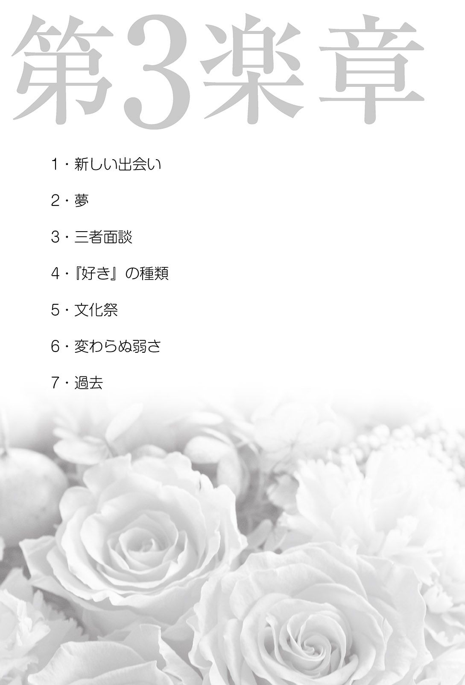

| Brilliant Life【特典イラスト付】 | |
| 沙原結菜 | |
| (2015) | |
１・幸せな時間
「はい、今日はこれで終わり。みんな気をつけて帰れよ！」
ＨＲが終わり、生徒たちが一斉に帰り支度を始めると、私は小さくため息をついた。
昼休みに声をかけてきた先輩の顔が目に浮かぶ。気が重いけど、行かなくちゃだめだよね。初対面の人、それも男の人と話すのは苦手なんだけどな......。
「理 緒 ！」
「麻 衣 ちゃん......」
「今日さ、茶道部休みなのよ。帰りにちょっと買い物行かない？」
声を掛けてきたのは、中学からの親友である大 倉 麻衣ちゃん。日本人らしい美しい黒髪と意志の強そうな瞳の、とても綺 麗 な子。正義感が強く人懐っこい性格で、誰とでも仲良くなるのが上手。
一方の私は、人より白い肌に、緩 いクセのある髪と瞳はライトブラウン。この色はおばあちゃん譲りで、この外見のために小さい頃から人の注目を浴びることが多く、私は少し人と接するのが苦手な子になってしまった。......もっと決定的になったのは、ある出来事があったからだけど。
でも、この髪と瞳は大好きなお兄ちゃんと同じ色。それだけで、私にとっては大切なものになる。
麻衣ちゃんは自分の気持ちを上手に言葉にできない私のことを、いつでもさりげなくフォローしてくれている。大切な友達だ。
「うん、行きたい！ でもちょっと待っててくれる？ 今から中庭に呼び出されてて......すぐに戻ってくるから」
「うそっ、もしかして告白？ 相手はだれっ？」
「えっと、名前はわかんないや。後でゆっくり話すね」
「わかった、正門の所で待ってる。頑張ってね！」
ニヤリと笑う麻衣ちゃんと別れ、私は中庭へと向かった。
「じゃあ、そろそろ報告してもらおうかな。相手は誰だったの？」
駅前の喫茶店でケーキを頼むと、麻衣ちゃんが話を切り出した。
「バスケ部の三年生の、樋 口 先輩」
「えっ、あの樋口先輩？ すごいじゃない！ ......でもやっぱり断っちゃったの？」
麻衣ちゃんが苦笑 しながら首を傾げる。
「うん。誰とも付き合う気はないからって断ったの。だけど、自分のことをもっと知って欲しいから友達になってって言われて......それは断りきれなかった」
「うーん、先輩本気なんだね。で、なんでそんなに落ち込んだ顔をしてるのよ」
「だって......この先も絶対に付き合うことはないのに、友達になるなんて」
「理緒は貴 也 さんと一緒に過ごすことが最優先だもんね。でもこの前理緒の家に遊びに行った時、貴也さんも理緒に全く男っ気がないのを心配してたけど？」
「私はお兄ちゃんが彼女を作って結婚するまでは、彼氏なんていらないよ」
好きなピアノが弾 けてお兄ちゃんと穏 やかに暮らせれば、それだけでいい。
「それに、お兄ちゃん以上に好きな人なんて、できないよ」
「まぁ確かに、貴也さん以上の男なんてそうそういないよね。高校三年の大変な時期にご両親を亡くしたのに、あのＫ大にストレートで合格。在学中に税理士の資格取って立派に就職だもんね。見た目は怪獣みたいにゴツいけど、かっこ悪いわけではないし」
「麻衣ちゃんひどい。お兄ちゃんは確かにちょっとゴツいけど、怪獣はないでしょ？」
麻衣ちゃんが楽しげに笑う。
「理緒が成績いいのも、貴也さんの影響でしょ？」
「......うん。お兄ちゃんが言ってたの。夢や目標が見つかったら、具体的にどうしたら叶 うのかをちゃんと調べて、毎日少しずつ努力してごらん。きっと叶うからって」
私にはまだ将来の夢も目標もないけれど、少しでもお兄ちゃんに追いつきたくて、勉強を毎日ちょっとずつ頑張った。
お父さんたちが亡くなってから、いつでもお兄ちゃんは何かに向かって全力で努力しているような気がする。私の手をしっかりと引いて、ひとつクリアしても、さらにその先へ。お兄ちゃんがいつでも進むべき道を指し示して、お手本を見せてくれる。
お兄ちゃん、私はお兄ちゃんさえいてくれれば、もうそれだけで十分だよ......。
優しい笑顔を思い浮かべ、心の中で呟いた。
「よし、できた」
今日はロールキャベツ。お兄ちゃんが帰るまで、まだ１時間くらいある。私はピアノの部屋へと向かった。
いつでもピアノが弾けるよう防音室になっているこの部屋は、昼は明るい日差しが、夜は月明かりが差し込むよう、正面が大きなガラス張りの作りになっている。お母さんとお母さんの弾くピアノが大好きだったお父さんが、お母さんのために作らせたものだ。
二人がまだ生きていた頃、休日には家族が自然とこの部屋に集まっていた。
軽やかにピアノを弾くお母さん。窓際でコーヒーを飲みながら耳を傾 けるお父さん。私の相手をしながら好きな曲をリクエストするお兄ちゃん。そして何をするにもお兄ちゃんのそばを離れなかった、私......。
いつまでも続くと思っていた日常は、７年前、両親の事故死によって突然終わりを告げた。お兄ちゃんは17 歳、私は10 歳──あの日から、お兄ちゃんが私の全てになった。
グランドピアノの前に腰を下ろす。
今日は何を弾こう。指ならしを兼ねて、モーツァルトのきらきら星変奏曲 からいこうかな。あの頃お母さんによくねだった、大好きだった曲。そのあとは、今日のモヤモヤを吹き飛ばしてくれるような、少し激しい曲にしよう。
ド・ド・ソ・ソ・ラ・ラ・ソ・ソ......。小さな子が弾くような、簡潔なメロディーが流れ出す。
日本では童謡『きらきら星』のメロディーとして親しまれ、『きらきら星変奏曲』と呼ばれている、この曲。もともとはモーツァルトの時代にフランスで流行していたシャンソン、『ああ、お母さん、あなたに申しましょう』を主題にした、12 の変奏曲だ。
子供のころの私にとって、大好きな『きらきら星』のメロディーが、可愛らしく、美しく、時に寂 しげにと形を変えていくさまはまるで魔法のようで。それを生み出すお母さんの手元を、ピアノの横に立ちいつまでも飽きることなく眺めていたっけ......。
温かな思い出とともに、旋律はいくつもの変奏を重ね、華やかさを増していく。
私は目を閉じて、優しい音の波に身を任せた。
もうそろそろ、お兄ちゃんが帰ってくる時間かな。
壁の時計に目を向け、楽譜を閉じる。その時、ふいに後ろから声がかけられた。
「理緒、ただいま」
「わっ、お兄ちゃん！ びっくりしたぁ」
振り向けば、ドアのところにスーツ姿のままのお兄ちゃんが腕を組んで立っていた。
「お帰りなさい。全然気がつかなかったよ」
「だろうな。ずいぶん気合の入った練習だったみたいだし？」
もしかして、だいぶ前から聴いていたの？
「理緒、おまえ今日何かあっただろ」
「......どうしてそう思うの？」
あっさり見抜かれ、つい拗 ねたような声がでる。
「それはお前、モヤモヤしたものを叩きつけるような弾き方だったからなぁ」
お兄ちゃんが楽しげに笑う。私と同じライトブラウンの瞳が、優しく緩 んだ。
あぁ、やっぱり私には、この笑顔だけがあればいい。小さな悩みなんて、すぐに気にならなくなる。
「たいしたことじゃないの。ちょっと軽い自己嫌悪になっていただけ。もう大丈夫だよ。それよりお腹が減ったでしょう？ ご飯すぐ温めるね」
私も笑って、お兄ちゃんの横をすり抜けた。
「なぁー理緒、何があったんだよ。兄ちゃんに教えろよ」
料理を温めている間も、ご飯を口に運んでいる今も。お兄ちゃんの追及は止まらない。
もう本当に大丈夫なのに。告白のことを話すなんて恥ずかしいし。
でもこういうときのお兄ちゃんは、簡単には諦 めない。
「恋 愛 事 か？ それとも友達と喧嘩したのか？ どちらも俺の得意分野だぞ」
彼女がいたこと、ないくせに。
「お兄ちゃん、恋愛も得意分野だったっけ？」
「おぉ。告白の断り方も、恋人同士の痴話喧嘩も得意だな。知 輝 を筆頭にモテる友人が多かったからな」
やっぱり。全部友達の経験じゃない！ 確かにお兄ちゃんの一番の親友である佐 原 知輝さんは、とてもモテるって聞いたことがあるけれど。
「佐原さん、最近話を聞かなかったけど、元気なの？」
「あぁ。あいつ大学を卒業して親父さんの会社に入っただろ。最近まで海外の支社で修行していたんだよ。日本に戻ってから俺も会ってないから、近いうちに連れてくるかも」
「うん」
「で？ 話を逸らすなよ」
やっぱり無理だよね......。しかたなく口を開く。
「あのね、今日、学校の先輩から告白されたの」
「へぇ！ どんなヤツだ？」
「バスケ部の、背が高くて優しそうな人。でも誰とも付き合う気はないからって断ったの」
お兄ちゃんが一瞬残念そうな顔になる。
「そうか。それで、何を悩んでいるんだ？」
「付き合うことは断れたけど、その後に、せめて自分のことを知ってほしいから友達になってと言われて......ちゃんと断りきれなかった」
「友達ぐらい気にせずなってやればいいじゃないか。どうして断りたいんだ？」
「だって、付き合う気はないのに友達になるなんて、なんだか気を持たせるみたいで......。それに友達と言っても、ちゃんと話せる自信がない。だから断りたかったのに、また自分の気持ちを言えなかった......言葉がでなくなっちゃった」
落ち込む私に、お兄ちゃんは優しく微笑 んでくれた。
「理緒はちゃんと言うべきことは言えたさ。付き合いは断ったんだろう？」
「......うん」
「先輩は、友達から始めて恋人になってくださいと言ったわけじゃない。理緒は先輩の望みどおり、先輩のことをよく知ってやるだけでいいんじゃないか？」
「知るだけ？」
「あぁ。それが先輩の希望なんだろう？ 上手く話せなくたって気にするな。友達になった後にもう一度告白されたとしても、それはまた別の問題だ。その時にその気がなければ断ればいいだけさ」
「そんな風に軽く考えて......先輩を傷つけない？」
「あぁ」
お兄ちゃんが笑顔で頷 き、大きな手で私の頭を撫でる。
「なぁ、理緒。お前が友達になるのを断れなかったのは、お前の弱さじゃなく優しさだと思うぞ。これ以上先輩を傷つけたくないって無意識にでも思ったから、断りきれなかったんじゃないか？」
「......そうなのかな」
「優しいところはお前の一番の長所だよ。確かにお前は人に自分の気持ちを伝えるのが苦手だけれど、今回は頑張って言うべきことは言えた。大丈夫、ちゃんと成長できている」
お兄ちゃんが私の目を見る。そしてこれまでもう何度も繰り返してきた言葉をくれた。
「理緒、自分を卑 下 するな。褒めてやれ。お前は俺の、自慢の妹だ」
「......うん」
「俺を見てみろよ。いつでも自分に都合いいようにばっかり生きてるぞ？」
お兄ちゃんは照れかくしにそんなことを言って笑う。
でも、それは違う。お兄ちゃんは自分に都合良くなんて生きてない。いつだって、私のことを一番に考えてくれる。
「......お兄ちゃん、ありがとう」
胸の中が温かい気持ちでいっぱいになる。お兄ちゃんと過ごす時間は、いつでも私を優しく包んでくれる。私が笑ったのを見て、お兄ちゃんも微笑んだ。
週末のピクニックでお兄ちゃんと楽しく過ごし、月曜の朝、私は軽い足取りで学校へと向かっていた。
先輩とのことは、もう気にしないようにしよう。上手 く話せなくても、話し掛けられた内容に答えるだけでいいよね。
お兄ちゃんの言葉は、まるで魔法みたい。中学生の頃......もう二度と立ち直れないと思った時でさえ、お兄ちゃんの言葉は私を救ってくれた。自分を責め、消えてなくなりたいと願った私に、お兄ちゃんは優しい声で言い聞かせてくれた。
『理緒は悪くない。理緒は俺の自慢の妹だ。大丈夫だ』
声の響きが胸に刻みこまれるぐらい、何度も、何度も。──そしてあの時、もう一度学校にいく勇気をくれたのは、麻衣ちゃんだった。
「......大丈夫。私は少しずつでも、前に進めてるよね」
すっきり晴れた青空を見上げ、小さく呟いた。
３時間目の体育の時間。隣のグラウンドを見ると、三年の男子がサッカーをしていた。
「あ、樋口先輩」
私の呟きに、麻衣ちゃんが素早く反応する。
「どこどこ？ あ、いた！ へぇー、サッカーも上手いんだね！」
本当に上手い。風を切ってぐんぐん走る。大きな声を掛け合い、子供みたいに無邪気な顔で笑ってる。きっとこういうところが人気あるんだろうな......。そんなことを思いながら、私はぼんやりと先輩のことを眺めていた。
体育の授業が終わり教室に移動していると、水飲み場に樋口先輩の姿があった。
「神 崎 さん」
「あ......こんにちは」
緊張しつつも挨拶を返す。その時、先輩が突然勢いよく頭を下げた。
「先週はごめん！ 俺ちょっと強引だったよね。神崎さん辛 そうな顔をしてたから、悪いことしたなって思ってて」
......先輩も気にしてくれていたんだ。私、顔にでちゃってたのかな。
「いえ、あの、こちらこそ心配を掛けたのならごめんなさい。私は大丈夫です」
「そう？ よかった。あ、オレ次、教室移動なんだ。じゃあまた！」
先輩はホッとしたように微笑むと、校舎へと足早に歩き始めた。
「ちょっと、どういう心境の変化？ あんなに悩んでたくせに。さてはまた貴也さんだな？」
「麻衣ちゃんすごい！ なんでわかるの？」
驚く私を見て、麻衣ちゃんはケラケラと笑う。
「理緒がワンパターンすぎるのよ！」
「......確かにそうかも」
私もつられて笑う。その時ふと誰かの視線を感じて目を向けると、水飲み場にいた数人の女の子がこちらを見ながら、コソコソと何かを話していた。
「......樋口先輩のファンだね、きっと。何か言われたりしたら、すぐに教えてよ？」
麻衣ちゃんが心配そうに私を見る。その優しく力強い眼差しを向けてくれる麻衣ちゃんの姿が、今よりずっと幼い中学時代の麻衣ちゃんの姿と重なって見えた。
中学二年生の頃、麻衣ちゃんは隣のクラスで、私たちはまだ一度も話したことがなかった。そしてその頃、私は同じクラスの女の子数人から酷 いいじめにあっていた。
もともとは、人と接することが苦手な私に優しく声をかけてきてくれた、大切な友達だった。だけど私がその中の一人を傷つけてしまったせいで、急にみんなの態度が変わってしまって......。
いじめは最初目立たないように行われていたけれど、段々と酷くなっていった。そしてとうとう、放課後の公園で頭からジュースを掛けられ、ずぶ濡れでしゃがみこんでいるところに、麻衣ちゃんが通りかかった。
『あんたさえ居なければ、あんたと仲良くならなければ、こんなことにはならなかったのにっ！ 私の前からいなくなってよ！ あんたなんか、死んでしまえっ』
友達の去り際の言葉に打ちのめされ呆 然 と座り込んでいた私を、麻衣ちゃんは近くにある自分の自宅へと連れ帰り、着替えと温かい飲み物を用意してくれた。そして私の携帯でお兄ちゃんにも連絡を取ってくれた。
学校には行けなくなり、お兄ちゃんが大学を休んでそばにいてくれて、私の気持ちが少しずつ落ち着いてきた頃......麻衣ちゃんが家に訪ねてきてくれた。
「......助けてくれて、ありがとう」
何とかそれだけ伝えた私の手を握り、麻衣ちゃんは優しく話しだした。
「理緒ちゃん。勝手にしちゃいけないとは思ったんだけど、私どうしても許せなくて、貴也さんと一緒に理緒ちゃんのことを先生に話したの」
「えっ？」
「勝手に話してごめんね。先生がいじめの状況を調べて、相手の子たちは昨日親を呼び出されて注意されたよ」
「そんな、あれは私が先に傷つけたから......」
「ううん、いじめた理由を少しだけ聞いたけど、理緒ちゃんは全然悪くない。だから胸を張って学校に行こうよ。もし怖かったら、休み時間は私がずっとそばにいるよ。私、理緒ちゃんの新しい友達になりたい。絶対に守ってみせるから」
出会ったばかりの麻衣ちゃんの前で、私はその日、思いきり泣いた。
学校に行くのが、とても怖かった。大切な人に突然拒絶されることも、また自分が気づかないうちに誰かを傷つけてしまうことも、すごく怖かった。
それでももう一度行ってみようと思えたのは、麻衣ちゃんの気持ちに応 えたかったから。
よく知りもしない私のために頑張ってくれたこと、そしてこんな私と友達になりたいと言ってくれたことが、本当に嬉しかったから。
麻衣ちゃんが帰った後、お兄ちゃんが嬉しそうに、こう言った。
「なぁ理緒、みんなと仲良くする必要なんてないんだ。それより、何があってもどんなときでも自分のことを信じて支えてくれる、と思えるような、そんな友達をたった一人でも得ることのほうがずっと難しくて大切なことだと思うぞ。良かったな、今一人見つかりそうじゃないか？」
麻衣ちゃんの優しさに支えられて、私はもう一度学校に行けるようになった。だけど、人と関わることが怖くてたまらなかった私が麻衣ちゃん以外の生徒とも何とか口をきけるようになったのは、だいぶ時間が経ってからだった。
ひとり辛い経験を思い出していた私の耳に、また水飲み場からのヒソヒソ声が聞こえてきた。そこには時 折 私の名前も含まれている。心配そうな麻衣ちゃんに、私は笑いかけた。
「大丈夫だよ、麻衣ちゃん。私には麻衣ちゃんとお兄ちゃんがいる。私のことを全部理解して信じてくれる人が、二人もいる。だから大丈夫。他の人に何か言われても気にしない」
私はもう、あの頃の私じゃない。
麻衣ちゃんが泣きそうな笑顔で抱きしめてくれた。
２・親友
肌にふれる風が心地よい５月の夜。街に溢 れる人の波をすり抜け、俺は先を急いでいた。最後に貴也の顔を見たのは俺がイギリスに行く直前だから、会うのは約２年ぶり。変わっていないだろうか。いまだにシスコンぶりは健在か？ 自然と口元が緩んだ。
待ち合わせ場所である店のドアを開ける。久しぶりの笑顔が俺を迎えてくれた。
「おっ、知輝お疲れさん！ イギリスから帰ってきたんだって？」
「久しぶり、マスター。先月帰ってきたところなんだ。貴也はまだ？」
「来てるよ、奥だ」
マスターが視線を送ったのは、店の奥にある小さく区切られた席だった。
「へぇ、めずらしいな......」
この店で飲む時は、大抵カウンターだったのに......。微かな違和感とともに足を向ける。
「よぉ、久しぶり」
２年前と何ら変わらない貴也が、優しい目で笑った。
俺が貴也と初めて会ったのは、高校一年の頃だった。
目立つヤツだなというのが第一印象。１８０センチを超える長身に、スポーツマンでもないのにゴツい体。髪と瞳の色は綺麗な薄茶色。その独特の雰囲気はとても大人びて見えたが、いつも穏やかで笑みを絶やさない貴也はみんなから慕われていた。
高三で初めて同じクラスになって、話す機会も増えた頃......貴也の両親が、突然の事故で亡くなった。
休み明けに会った貴也は、いつもと変わらぬ穏やかな顔をしていた。10 歳の妹と二人で暮らしていると聞いたが、大変そうな様子は全く感じられない。変わったところといえば、毎日急いで家に帰るようになったことぐらいだろうか。もともと成績の良いやつだったけれど、休み明けに行われた学内テストで、貴也は初めて学年首位をとった。
どうしてだろう。なぜこいつはこんなにも、自分をしっかりと保 っていられるのだろう。
俺はどうしても知りたくなった。貴也の穏やかな表情の裏に、どんな思いがあるのか。何がこいつを、こんなにも支えているのか。
「......貴也、お前は凄いな。どうしてこんな状況の中でも、揺らぐことなく自分を保っていられるんだ？」
ある日昼飯に誘ってそう切り出すと、貴也は少し驚いたあと、笑って答えてくれた。
「守りたいものがあるからかな」
「守りたいもの？」
「あぁ、俺の妹」
妹の話になったとたん、貴也はとても優しい兄貴の顔になった。
「シスコンか？」
少しふざけて聞くと、貴也がフンと鼻で笑う。
「あいつは、俺にとって特別な存在なんだ」
「......特別？」
「あぁ。俺、こんな目立つ外見してるだろ？ 父方の祖母が外国人でその遺伝のせいなんだが、あいにく親父は髪も瞳ももっと黒に近くてな。子供の頃、家族の中で俺だけが浮いて見えていたんだ」
貴也は穏やかな口調のまま続けた。
「どこにいても視線を感じた。家族三人で出かけていても、周りの人から不思議そうに見られたりしたよ。友達にからかわれるのはしょっちゅうで、本当の親は他にいるんでしょ、なんて聞かれたぐらいだ。そいつの親がそう言ってたんだろうな」
貴也はくすりと笑って、俺を見た。
「俺も、まだまだガキだったからなぁ。両親は気にするなと言っていたが、平気な振りしても本当は辛かったし寂しかったんだ。どこにいても誰といても、自分一人だけ異質な感じがしていた。そんな時、俺に妹が......理緒が生まれた。学校のあと病院に駆けつけて初めて、理緒を見た時、俺は嬉しくて思わず泣いたよ。──俺と全く同じ色だった。髪も、瞳も」
貴也はその瞬間を思い出しているかのように、最高に優しい顔を見せた。
「神様はちゃんと俺が苦しんでいることに気づいてくれていた、俺のためにたった一人の味方を与えてくれた......そう思ったよ。絶対大切にする、俺が守ると心に誓った」
知らなかった。いつでも穏やかな貴也に、そんな辛い経験と強い想 いがあったなんて。
「両親のことは好きだったし、今も悲しくてたまらない。でも俺には理緒がいる。両親は俺と理緒のこれからの学費や当面の生活に困らない程度の金は残してくれたが、あいつを守るためにもまともな大学に行って、安定した職を得たい。落ち込んでいる暇はない」
「......貴也はすごいな。俺は自分のことだけなのに、みっともなく焦ってばっかりだ。お前のような強さが欲しいよ」
貴也の力強い言葉に、俺は思わず、誰にも話したことのない思いを打ち明けていた。
「お前も知っているだろうけど、俺の祖父は佐原グループの会長で、俺は子供の頃からずっと、祖父や父を支えられるような人間になりたいと思っていた」
貴也が真剣な表情で頷く。
「俺は年の離れた三人兄弟の末っ子なんだ。上の二人は優秀で、すでに親父を立派に支えている。......小さな頃から親戚や会社関係者の集まりにいけば、まだガキの俺の機嫌を取ろうとする人がたくさんいた。俺の中身なんて関係なく、佐原の息子という肩書きだけで。今では自分の娘を押し付けようとする人もいる」
「そりゃまた随分、気が早いな」
「両親は俺が末っ子だからか、あれをやれ、これをやれなどとは一切言わない。自分なりに努力しているつもりだが、いつでも不安と焦りを感じるんだ。早く一人前になりたい、でも俺も兄貴たちのように、名前だけでなく実力を伴った後継者になれるのだろうかって」
「......お前の家のことは知っていたよ。兄さんたちのことも。でもお前がそんな風に考えているなんて、全く気がつかなかった」
一気に吐き出した俺に、貴也はしばらく考えてからそう言った。
「なぁ知輝。お前いつでも成績は上位に入っているくせに、学校の勉強以外にも色んなことを独学で学んでいるだろう？ 俺、図書室で何度かお前を見かけたことがあるんだよ。普通の高校生じゃ絶対に読まないような、難しい本を読んでた」
俺にはサッパリわかんねぇ、と貴也はおどけた後、優しく笑った。
「あんな家に生まれて、子供の頃からすごいプレッシャーだっただろうな。それにも負けず、誰に強制されたわけでもないのに、自分の意志で努力し続けてきたんだろう？ 学校でのお前は沢 山 の人に慕われている。それでも、周りの友人たちが自由気ままに遊んでいても流されることもなければ、家柄を誇 示 して見 下 すこともない。まさに人の上に立つべき一族の人間なんだなって、ずっと尊敬していたよ」
そんな風に俺のことを見てくれる人がいたのか......。その優しさに、胸が熱くなる。
「お前のご両親がお前に厳しく言わないのは、その努力にちゃんと気付いているからじゃないのか？ お前のことをろくに知りもしないやつが何を言おうが思おうが放っておけよ。お前の大切な人たちは、きっともうお前自身を認めてくれているよ」
貴也の言葉は、不思議なほど真っ直ぐ心に響いた。
そうなのかもしれないと素直に思えた。両親は俺を信頼して見守ってくれていたのかもしれない。俺が焦っていて気づけなかっただけで......。
それに、貴也が認めてくれていた。初めて尊敬できると思った友人が、自分のことを認めてくれていた。それが本当に嬉しくて、もうそれだけで十分な気がした。
この日がきっかけだったのかもしれない。俺たちはそれまで以上に親しくなり、貴也は俺の、かけがえのない友となった。
──少し狭いその個室に足を踏み入れる。変わらぬ笑顔の貴也に笑い返し、向かい合わせの席に着いた。
「久しぶり貴也。２年ぶりだな。しかしお前、相変わらずゴツいな。いまだに成長期かよ」
「ふん、知輝は相変わらずムカつくほどにかっこいいな。ちょっとは分けてくれよ、その美しさをよ！」
二人して笑いあう。２年の空白なんて、一瞬で飛び越える。きっと何年経ってもこいつは変わらない。あの高校生の頃の、穏やかな笑顔のまま......。
それから俺たちは、互いの仕事のこと、俺の海外赴任中のことなどを報告しあった。
ふと、めずらしく貴也の口から理緒ちゃんの話が出ていないことに気がついた。
「なぁ貴也。理緒ちゃんは元気なのか？」
そう尋ねた瞬間、貴也の瞳が揺れた気がした。
「......あぁ、元気だよ」
「なんだよ、理緒ちゃんに何かあったのか？」
「いや、大丈夫だ」
貴也らしくない歯切れの悪さが気にかかる。こいつの生きがいともいえる理緒ちゃんの身に、何かあったのだろうか。
「おい、ちゃんと話せよ！」
貴也が笑みを消して黙りこむ。そして、ようやく口を開いた。
「なぁ、知輝。お前、今付き合っている女はいるか。または親父さんが決めた婚約者とか」
「はぁ？ そんなのいないさ」
「そうか。じゃあ近々......２年以内に、また海外赴任する予定はあるか？」
「いや、今のところないな」
「そうか......」
貴也が小さく息を吐く。そして長い付き合いの俺が今まで一度も見たことがないほど真剣な眼差しで、こちらを見た。
「──お前に、大事な話がある」
どれだけ大切な話かなんて、こいつの顔を見ればわかる。
「......言えよ」
貴也は一度頷くと、また俺の目を真っ直ぐに見つめ、口を開いた。
「実はな、俺、長くねぇんだよ」
「......は？」
「おそらくあと半年ももたない。それでだ、お前に最後の......一生一度の願いがある」
「......ちょっと待てよ。どういうことだ!? お前......病気なのか？」
「そうだ。しかも、治る見込みはない」
「そんなの分からないじゃないか、簡単に最後だなんて言うなよ！ 何の病気だ？ 俺が世界中探してでも治せる医者を見つけてやる！」
声を荒げた俺に、貴也が優しい笑顔を見せる。その微笑みがなぜか急に儚 く見えて、息をのんだ。
「お前ならそう言うと思ったよ。俺がお前の立場なら、必ずそう言うからな」
貴也は鞄の中から分厚い封筒を取り出し、俺に手渡した。
「この診断書と資料をやる。好きなだけ調べてみてくれ。そしてできるだけ早く現実を受け入れてほしい。俺に残された時間は少ない。根拠のない治療法を探して時間を無駄にするよりも、俺にはやるべきことがある。......悪いな、お前しか頼れるやつがいないんだ」
いつも通りの、穏やかな声。貴也の目には、もう少しの迷いも見られなかった。
手にした封筒は、かなりの重さを伝えてくる。
こいつが理緒ちゃんを残して逝 くなんてことを、簡単に受け入れるはずがない。きっと必死になって調べ、あがいて、苦しみ抜いて......もうその道しか残されていないと、覚悟を決めたのだろう。
貴也の死が急速に現実味を帯びていく──封筒を持つ指が、小さく震えた。
何か......何か言わなければ。そう思うのに、頭の中が真っ白で言葉が出ない。
貴也の澄んだ優しい瞳を、食い入るように見つめた。
「......貴也、俺......どんな言葉をかけていいのか、分からない。だけど......もし俺にできることがあるのならば、どんなことでもやらせてほしい」
情けない。親友が初めてこんなにも俺を頼ってくれているのに、少しでも力になりたいのに、今は込み上げて来るものを抑えるだけで精一杯だ。
どうして貴也なんだ？
まだ17 歳のガキの頃から、たった一人で妹を支えてきたんだぞ。ただ大切な者を守るためだけに、必死に生きぬいてきたのに......なんでこいつが死ななきゃならない？
「ごめんな。再会して早々にお前を悲しませたくはなかったんだが......。お前が気持ちを落ち着けるために時間が必要なのは分かってる。また来週会わないか。その時に詳しい話を聞いてもらえたら嬉しい」
「わかった。必ず聞くよ」
１週間ある。幸い親父のおかげで国内外の医療関係者にもツテは多い。納得いくまで調べてみよう。そして......もし本当に貴也の死が避 けられないものならば、覚悟を決めて全ての願いを受けとめてみせる。俺を救ってくれた、一番の親友のために──。
それからの１週間は、瞬 く間に過ぎた。家に帰るなり貴也から受け取った診断書に目を通すと、すぐに何人もの専門家に依頼して情報を集めた。
貴也は末期のがんだった。自覚症状が出にくく発見が遅れやすいタイプのがんが進行し、既にいくつもの臓器に転移している。通常の生活を送れていることが不思議なぐらいだった。
手術をしても完治する見込みはなく、抗がん剤や放射線でどれだけ進行を遅らせ余命を延ばせるか、というのが共通の見解だ。
このままいけば、おそらく半年ももたないだろう。若い分、病気の進行が早い。
急がなければならない。残された時間、俺はできる限りのことをしなくては。
悲しんでいいのは、やるべきことを全てやり終え、あいつが力尽きたときだ。
「──しっかりと、最後の願いを聞かせてもらうよ」
先週と同じ店で貴也と向き合いそう切り出すと、貴也は少し微笑んで頷いた。
「もちろん、理緒のことなんだ」
「あぁ。理緒ちゃんは病気のことを知っているのか？」
「いや、何も知らない」
「いつ言う気だ？」
「通院治療で今まで通りの生活ができる間は言わない。いよいよ入院となれば言わざるをえないだろうな」
「......なぜだ？ 理緒ちゃんにも心の準備がいるだろう？」
貴也は自嘲するように笑った。
「一番の理由は、ただの俺の我 儘 かな。あいつの笑顔を１日でも長く見ていたい。かげりのない、本物の笑顔を......。そしてもう一つの理由は、理緒が俺の病気を知ってしまう前に、色々と準備したいことがあるからだ」
「......分かった。それで、俺に何ができる？」
「高校卒業までの、あと約２年の間だけでいい。理緒のそばにいてもらえないか？ 俺の家でもいいが、できれば知輝の家で預かってもらうというかたちで......」
貴也は両親が亡くなった際、親戚とは縁を切っている。理緒ちゃんを任せられるような相手ではないことは俺も聞いている。他人であってもうちの方が遥 かにマシだ。両親ともに貴也を好ましく思っているし、反対することはないだろう。
「両親にも確認するが、俺の家でまず大丈夫だと思うよ。だがいきなり俺の家で一緒に住めと言われて、理緒ちゃんがすんなり納得するか？」
「いよいよってときに、知輝の家で暮らすのが俺の最後の願いだと言えば、理緒からは絶対に断らない。だがお前の両親やお前がどんなに良い人たちであっても、いきなりよく知らない相手と一緒に暮らすのは理緒にとって負担が大き過ぎるんだ。病気がバレる前に俺がそばについて、自然な形でお前に慣れさせていきたい。できればお前のご両親にも」
「ずいぶん慎重なんだな。理緒ちゃん、そんなに人見知りな子だったか？」
「......色々あってな。あいつは俺と、たった一人の友達以外には心を開いていないんだ」
「何があった？」
「中学二年の頃、いじめにあった。自分の身近にいた友人たちからな。リーダー格の女の子の彼氏が理緒に惚れたらしい。理緒は何もしてなかった。勝手に妬 まれ、人目につかないようにいじめられ続けた。俺に心配をかけまいとして、ずっと隠していたんだ。陰湿なやつらでな、証拠を残さず人目につかないよう気をつけていたから、他のクラスメイトですら気づかなかった。でも次第に酷くなってきて、放課後に公園で頭からジュースをぶっかけられてうずくまっているところを、同じ学校の女の子が偶然通りかかって保護してくれた」
貴也の声に悔しさが滲 む。
「理緒は最後までいじめの内容や理由はおろか、相手の名前さえ言わなかった。私が傷つけたのが悪い。私がいたのが悪いからってな......。理緒を助けてくれた麻衣ちゃんって子と一緒に学校側に抗議し、いじめの問題は解決した。だが理緒は人と関わるのを極端に恐れるようになった。精神的なダメージが大きすぎたのか、麻衣ちゃんと俺以外の人間とは口をきくことすらできなかった。最近になってやっと少しずつ、自分の気持ちを他人にも言えるようになってきたところだ」
貴也の薄茶色の瞳が辛そうに伏せられる。
「理緒は外の世界を恐れている。言い寄ってくる男がいても、全て断り俺との穏やかな生活が続くことだけを願っている。本当はもっとそばにいて、いろいろな人に心を開けるよう支えていってやりたかった......年相応に恋をして、幸せそうに笑う姿を見たかった」
貴也がこんな風に苦しんでいる姿を人にさらけ出したのは初めてだった。あらためて、貴也が独 りで支えていたものの重さを実感させられる。
理緒ちゃんにとって、貴也は唯一無二の存在。俺では決して変わりになれない。それでも──。
「貴也、俺ではお前の代わりにはなれないのは分かってる。でも、できる限り理緒ちゃんを支えていくよ。お前が望んだとおり、人に心を開けるように......幸せになれるように」
貴也が小さくため息をつく。
「悪いな、弱音吐いちまって。だがお前にそこまでは望めないよ。俺はお前にも幸せになって欲しいんだ。お前があの頃から目指していた実力を伴った後継者となることはもちろん、恋愛も結婚もして、自分の人生を精一杯生きていってほしい」
貴也はとても優しい笑顔を浮かべていた。もう自分には決して来ることのない、未来の話をしているというのに。胸が苦しくて、言葉もなく貴也を見つめる。
「だから、同居をするのは高校卒業までで十分だ。お前の人生を犠牲にして抱え込むのだけはやめてくれよ。卒業の頃には理緒も少しは持ち直しているだろうし、理緒だって自分の人生を自分の力で切り開いていくべきだ」
それから俺たちは、今後のことを細かく話し合った。
俺たちの願いはただ一つ。理緒ちゃんを守りたい──それだけだった。
３・再会
「理緒、今夜知輝が家に遊びに来るから、夕食は三人分にしてくれるか？」
お兄ちゃんにそう言われていた私は、学校から帰ると急いで夕食の支度を始めた。
佐原さんに会うのは久しぶり。最後に会ったのは中学一年の頃だから、もう４年も経つのか......。
うっすらと記憶に残る佐原さんは、爽やかに笑う優しくてかっこいいお兄さんだった。あんな家に生まれたのに少しも偉ぶることがないし、お父さんたちを支えられる立派な人になれるよう、一生懸命努力している──そう言ってお兄ちゃんが尊敬していたっけ。
すごいな。私なんて17 歳になった今も、全く将来の姿が見えていないのに......。
ううん、本当は考えないようにして逃げているだけなんだ。だってそれはお兄ちゃんの元から、この家から離れて、独り立ちするってことだから。
怖い。独りになることが、ものすごく怖い。
でもお兄ちゃんだっていつかは結婚するだろうし、もしかしたら私がそれを邪魔しているのかもしれない。こんな弱い妹じゃ、優しいお兄ちゃんには放り出せっこないもの......。
ため息がこぼれる。料理の手を止め、深呼吸をした。
いつかは私も、お兄ちゃんを安心させてあげられるぐらい強くなれたらいいと思う。
だけど、もう少し......神様、もう少しだけ、この温かな場所にいさせて下さい。
祈るように、目を閉じた。
「理緒、ただいま」
「お帰りなさい」
玄関で声を掛けると、お兄ちゃんの後ろからスーツ姿の佐原さんが入ってきた。
「あの、お久しぶりです」
緊張しながら頭を下げる。佐原さんは私を見て、少し驚いたように目を見開いた。
「あぁ、ごめん、びっくりして......。大人っぽくなったね、理緒ちゃん」
「佐原さんこそ......」
この数年間会わないうちに、佐原さんはすっかり洗練された大人の男性になっていた。
１８０センチ位の決して華奢ではない細身の身体に、品のいいスーツが似合っている。女性から見ても十分綺麗だと言えるその顔は優しげで、二 重 のすっきりした瞳からは意志の強さを感じた。
しばらくの間ぼんやり見とれてしまったけれど、ふと佐原さんの視線に気づき我に返る。
恥ずかしくて俯 いた私の頭に、ぽんと佐原さんの手がのせられた。
「しかし、相変わらず美女と野獣兄妹だな」
楽しげな佐原さんの視線をたどると、お兄ちゃんが壁にもたれて笑っている。
「そうか？ ありがとう」
「いや、お前は褒めてないから」
二人は楽しそうに笑った。
「──なぁ、理緒。何か弾いてくれないか」
三人での食事が終わると、お兄ちゃんが私にそう声をかけてきた。なんとなく佐原さんに聴かせるのは恥ずかしい。ためらう私に、佐原さんがにっこりほほ笑んだ。
「俺もぜひ、聴かせて欲しいな」
「......はい。クラシックしか弾けないんですけど、好きな曲はありますか？」
「うーん、じゃあドビュッシーの曲がいいな。癒やされそうなやつ」
その返事に、思わず笑ってしまう。
「お兄ちゃんもドビュッシーが好きなんですよ。しかも、癒やされそうなやつ弾いてって台詞まで一緒」
単に好みが似ているだけかもしれない。でも二人がとても通じあっているような気がして、何だか嬉しかった。
一番先に部屋に入ったお兄ちゃんは、ピアノの照明だけをつけると、正面の大きなカーテンを開けた。淡いライトに照らされた中庭と、それを包みこむ暗闇が視界に映る。
「知輝、お前もこっちに来いよ」
お兄ちゃんは窓際に立ち佐原さんに声を掛けた後、静かに夜空を見上げた。
お兄ちゃんの今聴きたい曲、わかったような気がする......。
手を膝にのせ、目を閉じる。心の中にあるもの全てを消し去り、いつか見た美しい月を思い浮かべた。
.........知輝 .........
貴也とこれからの事を話しあった数日後、俺は約４年ぶりに貴也の家を訪れていた。
「あの、お久しぶりです」
遠慮がちで小さな声。顔を上げると、そこには久しぶりに見る理緒ちゃんの姿があった。
透けるような白い肌。緊張のせいかうっすらとピンクに色づく頬と唇。澄んだ瞳と長い髪は、貴也と同じ綺麗な薄茶色──その儚げな美しさに言葉を失い、すぐには返事ができなかった。
「あぁ、ごめん、びっくりして......。大人っぽくなったね、理緒ちゃん」
慌てて返事した俺を、貴也が面白そうに眺めている。
「佐原さんこそ......」
理緒ちゃんがまた小さな声でいい、ぎこちない笑顔で微笑んだ。その手は緊張を隠すかのように、硬く握りしめられている。
あぁ、貴也が言ったとおりだ。彼女は外見が美しいだけじゃない。本当に不器用で、繊細で......とても優しい心を持っている。
初めての感情が、胸に満ちていく。
この子を守りたい。貴也という唯一の家族を失ってしまうこの子を、一番近くで支えていきたい。他の誰でもなく、この俺が──。無意識のうちに、彼女の頭に手をのせた。
理緒ちゃんの料理は美味しかった。一生懸命作ったのが伝わる、手の込んだ夕食だった。
「理緒、何か弾いてくれないか？」
理緒ちゃんは気持ちを言葉にするのが苦手らしいが、彼女が弾くピアノをこっそり聴くと、その時の心の状態が分かりやすいそうだ。俺も子供の頃ピアノを習っていたし、家ではクラシックをよく聴いている。理緒ちゃんがどんな風に弾くのか、すごく興味があった。
好きな曲はと聞かれてドビュッシーをあげたのは、なんとなく理緒ちゃんの儚 げで美しいイメージからドビュッシーの曲が浮かんだから。でも理緒ちゃんは初めて俺に、とても自然な笑顔を見せてくれた──ただ俺と貴也の台詞が一緒だったというだけで。
貴也への愛情がすごく伝わり、そんな笑顔を簡単に引き出せる貴也を羨 ましく思った。
この家には何度か来たことがあるけれど、ピアノが置いてある部屋に入ったのは初めてだった。中にはグランドピアノが一台と、窓際に小さなテーブルと椅子が二つ。
真っ先に部屋に入った貴也はピアノの照明だけをつけると、部屋のすべてのカーテンを開けてまわった。
正面に広がる景色に、目を奪われる。綺麗に手入れされた庭は所々柔らかい光でライトアップされていて、この部屋の雰囲気までも一瞬で変えた気がした。
理緒ちゃんはしばらく貴也を見つめていたが、目を閉じ、そっと弾き始めた。
あぁ、ベルガマスク組曲の『月の光』だ。この曲は知っている。降りそそぐ月の光の美しさを描いた、ドビュッシー初期の傑作。それは偶然にも、俺がドビュッシーを好きになるきっかけとなった曲だった。
このわずかな音だけで、どうしてここまで幻想的な世界を描くことができるのだろう。理緒ちゃんの奏でる『月の光』は、彼女と同じく透明感のある清浄な響きに満ちている気がした。
隣に座る貴也は、穏やかな顔で理緒ちゃんを見つめている。ふと顔を上げた理緒ちゃんが貴也と目を合わせ、柔らかく微笑んだ。
この優しさに満ちた空間で、どれだけの時間、二人はこうして過ごしてきたのだろう。ただ一 途 に相手を想い、必死に支え合いながら。
どうかこの二人だけは──引き離さないでほしい、このまま時を止めてほしい。
心からそう願った。
.........理緒 .........
お兄ちゃんが佐原さんを久しぶりに連れて来た日から、なぜだか佐原さんが頻繁にうちへ遊びに来るようになった。どうしてこんなに来るのかなって不思議に思ったけれど、お兄ちゃんが言うには、久々に再会して友情が再燃したらしい。
「そうだ、理緒ちゃんにお願いがあるんだけど」
夕食後のコーヒーを手に、佐原さんが口を開く。
「来週うちの母の誕生日でさ、よかったらプレゼントを選ぶの、手伝ってもらえないかな」
「プレゼント、ですか？ 私に分かるかな......」
お母さんにプレゼントを贈ったのは小学生の頃だし、何がいいのか全く思いつかない。
「そろそろ暑くなってきただろう？ 日傘の新しいのが欲しいって言っていたから、女性から見て良さそうなものを一緒に選んでもらえたらと思って」
日傘......使ったこともないけど、大丈夫かな。それに佐原さんのお母様って、今は確か会長夫人だよね。運転手さんやお付きの人に、どこへでも連れて行ってもらえそうだけど。
「あの、佐原さんのお母様って、日傘をさして一人でお出かけされることもあるんですか」
「もちろんあるよ。母は一人気ままに買い物したり出かけたりするのが好きなんだ。送り迎えは車でしているけどね」
そっか。思ったよりも気さくな方なのかもしれない。でも買い物はどうしよう。私に言っているってことは、お兄ちゃんは一緒じゃないってこと？
私の迷いを読み取ったかのように、お兄ちゃんが口を開く。
「たまには俺や麻衣ちゃん以外の相手とも出掛けてみろよ。知輝と一緒なら迷子になる心配はないぞ」
「迷子の心配なんかしてないもん」
つい佐原さんの前ということを忘れ、子供っぽく言い返す。佐原さんがくすりと笑った。
もう。お兄ちゃんのせいで恥ずかしいことをしちゃった。でもそんなことより、どうしよう。早く返事をしないと。
二人きりなんて緊張するし、怖いけど......佐原さんとなら大丈夫かな？ いつも優しく話を振ってくれるし、私がお兄ちゃん以外の人とは上手く話せないことも、もう気付いているよね？ できれば断りたいけれど、いつまでもこのままじゃダメだと思うし......。
「わかりました。私じゃお役にたてないかもしれないけれど、一緒に選ばせて下さい」
勇気を出してそう言うと、佐原さんはとても嬉しそうに笑ってくれた。
「ありがとう、助かるよ。それとね、母の誕生日を家族で簡単に祝う予定なんだけど、よかったら理緒ちゃんも貴也と一緒に遊びに来ないか？」
「えっ、佐原さんのご自宅にですか？」
「うん。両親は貴也のことをすごく気に入っていてね、その貴也が大切にしている理緒ちゃんにも、ぜひ会ってみたいと言っているんだ」
どうしよう、そんな偉い人と話したことなんてないし、怖すぎる！ お願い断って、と縋るようにお兄ちゃんを見つめると、お兄ちゃんは私を安心させるように優しく笑った。
「お邪魔してみようか。知輝のご両親は気さくでとても良い方たちだよ。緊張する必要なんてない。俺もずっと一緒にいるんだし」
......そっか、そうだよね。お兄ちゃんがずっと一緒にいてくれるなら......大丈夫かも。話し掛けられたことにきちんと答えて、あとはお兄ちゃんに引っ付いていればいいよね。ここまで言われて断るなんて失礼すぎるだろうし......。
「あの、私、マナーとか何もわからないんですけれど、それでもよければ......」
「ありがとう。両親も喜ぶよ」
お兄ちゃんと佐原さんは、なぜかホッとしたように微笑んだ。
「お兄ちゃん、この格好変じゃない？」
佐原さんと買い物に出かける日。私は朝から、極度の緊張状態にあった。
「変じゃないよ。なんだよ、もうちょっとリラックスしろよ！」
鏡の前でうろつくする私を見て、お兄ちゃんがくすくす笑っている。
だってしょうがないじゃない。男の人と二人で出かけるなんて、生まれて初めてなんだもん。やっぱりお兄ちゃんと三人で行きたいですって素直に言えばよかった。でも今更そんなことを言ったら、佐原さんが嫌な気持ちになっちゃうよね？
無情にもインターホンがなる。お兄ちゃんはためらうことなくドアを開けた。
「こんにちは、理緒ちゃん」
今日はカジュアルな服に身を包んだ佐原さんが、爽やかに微笑みかけてくる。
あぁ、やっぱり佐原さんはかっこよすぎる。こんな人の隣を歩くなんて、緊張しすぎて泣きそうだ。
「こっ、こんにちは」
みっともなく口ごもった私を見て、またお兄ちゃんが笑う。佐原さんが首を傾げた。
「どうかした？」
「理緒は人生初のデートで、緊張しすぎて半泣きなんだよ」
「お兄ちゃん！」
やだ、なんでデートなんて言うの？ プレゼントを買いに行くだけなのに、何を勘違いしているんだって佐原さんに呆れられたかもしれない。
そんな私の心配をよそに、佐原さんが、あぁなるほど、と軽く頷く。
「初デートか、光栄だなぁ。じゃあ張り切ってエスコートさせてもらうよ」
驚きすぎて、絶句する。そんな私を見て、二人が同時に吹き出した。
.........知輝 .........
理緒ちゃんと出掛ける日の朝、俺は柄にもなく緊張していた。
今日、貴也は以前から検討していたホスピスへ予約をしに行くことになっている。
あの日、母の買い物を口実に理緒ちゃんを誘った時、彼女の顔に浮かんだのは困惑の表情だけだった。一緒に過ごす時間を増やし、少しずつ彼女の緊張はとけてきたように感じていたが、貴也のフォローがなければ彼女は誘いに応じなかったかもしれない。
理緒ちゃんを誘った時に感じた、断られるかもしれないという不安、そして了承してくれた時の何とも言えない感動は俺にとって久々の感情で、お前は不器用な恋愛をしている10 代の少年かよ、と自分に突っ込みたくなるほどおかしかった。
そう、これは恋愛じゃない。理緒ちゃんに、俺に慣れてもらうためのものなのに。
理緒ちゃんの家を訪ねると、ニヤリと笑う貴也が迎えてくれた。その後ろに立つ理緒ちゃんは、なぜか深刻な表情で目を潤ませている。
やっぱり、行きたくないとか？ 一瞬そう考えた俺に、貴也が笑いながら教えてくれた。
「こいつ、人生初のデートで緊張しすぎて半泣きなんだよ」
なんだ、そういうことか。ホッとしながら理緒ちゃんに目を向ければ、彼女は信じられないといった顔で貴也を見つめておろおろしている。その様子があまりにも可愛くて、つい悪のりしてしまった。
「初デートか、光栄だなぁ。じゃあ張り切ってエスコートさせてもらうよ」
理緒ちゃんがぴしりと固まる。俺と貴也は二人同時に吹き出した。
「どうぞ、乗って」
助手席のドアを開けると、理緒ちゃんはまだ少し拗ねていた様子だったけれど、素直に従った。
いつもどこか遠慮と緊張を見せる彼女が、こんなに自然な態度で俺に接してくれるだけで嬉しい気分になる。
「ごめんね。理緒ちゃんの反応が可愛くて、俺も貴也もふざけすぎたよな」
苦笑しながら謝ると、理緒ちゃんは一瞬俺に目を向け、大丈夫ですと小さく答えた。
理緒ちゃんはいつも以上に静かだったけれど、俺が話し掛けるとゆっくり言葉を選びながら一生懸命答えてくれる。車内の雰囲気は、とても心地良いものだった。
目的の店に着いて、中に入ろうとすると、不安げな声が聞こえた。
「このお店......ですか？」
まだ高校生の彼女には、入りづらい雰囲気なのかもしれない。俺は安心させるように笑いかけ、そっと彼女の手をとった。握り締めた瞬間、その華 奢 さに驚く。この細い指からあんなに美しい音が生まれるのか......そんなことを思いながら、店の奥へ進んだ。
「いらっしゃいませ」
「こんにちは。少し自由に見させてほしいんだが、日傘はどこかな」
「はい、こちらになります」
店員は俺達を案内すると、軽く頭を下げて離れていった。
「理緒ちゃん、どれがいいと思う？」
理緒ちゃんは早速、真剣な表情で選び始めた。母の普段の服装や雰囲気を俺に尋ね、一つ一つ手にとり確かめる。俺はその様子を、微笑ましく思いながら眺めていた。
彼女は日傘を選ぶためだけに自分が誘われたのだと、心から信じているようだ。そのことは彼女の格好を見ただけでもわかる。清楚で涼しげなワンピースは彼女にとても良く似合っているけれど、化粧はせず、アクセサリーすら身につけていない。俺に対して自分を良く見せようといった気負いが、全く感じられない。
純粋で打算のない彼女と一緒にいると、自分の心まで浄化されていくような気がした。
「あの......これはどうですか？」
理緒ちゃんが１本の日傘を差し出しながら、少し不安げに俺を見上げる。彼女が選んだものは上質なレース地でできていた。
「華やかすぎず、地味でもなく、とても品があるような気がして......。佐原さんのお母様はきっとものすごくお綺麗な方だろうから、似合うんじゃないかと思ったんですけれど」
なるほど、理緒ちゃんらしい選び方だ。
「うん、母に合いそうだ。これにするよ、ありがとう」
理緒ちゃんがホッと息をつき、ふわりと微笑む。店を出て、二人並んで歩き出した。
「理緒ちゃん、もう少し買い物に付き合ってくれないかな。今日のお礼に、服をプレゼントさせてほしいんだ」
「そんな、お礼なんていいです！」
理緒ちゃんが慌てて首を振る。とんでもないといった顔で完全拒否だ。
「俺さ、男兄弟しかいないだろう？ ずっと妹がいる貴也が羨ましかったんだ。今日ぐらい俺にも兄貴気分で、何かプレゼントさせてもらえないかな」
俯いてしまった彼女は、少し考え込んだあと、頷いた。
「じゃあ、今日だけ......。ありがとうございます」
こんな風に自分から強引にプレゼントを贈りたいと思ったのは、初めてかもしれない。彼女に似合いそうな服を店員に持ってきてもらい、試着させる。理緒ちゃんは恥ずかしそうにしながらも、俺が似合うよと言えば嬉しそうに微笑んだ。
「気に入ったものはあった？」
「......佐原さんは、どれがいいと思いますか？」
「これ」
迷うことなく、彼女に一番よく似合うと思った一着を手に取る。
そのワンピースのシンプルで上品なデザインは、理緒ちゃんの細い身体の線と美しさを引き立て、思わず見とれてしまった。
「......私も、それが一番好きです」
微笑む理緒ちゃんに頷き、店員に向き直る。
「これにするよ。あと、これに合う靴とバックもあるかな？」
.........理緒 .........
結局、色々買ってもらっちゃった。もちろん断ったけれど佐原さんは笑って聞いてくれず、諦めてお礼だけを言った。何を貰ったか、ちゃんとお兄ちゃんに報告しないと。
「まだ時間大丈夫だよね？ よかったらドライブに付き合ってくれないか」
「はい」
「海は好き？ ちょっと遠いけど、大学の頃に貴也とよく行った場所があるんだ」
「お兄ちゃんと？ 行ってみたいです」
高級車の心地良いシートで揺られ、緊張のあまり昨日ほとんど眠れなかった私は、ついウトウトしてしまう。それに気がついた佐原さんが優しく微笑んだ。
「少し寝ていていいよ。着いたら起こしてあげるから」
大丈夫ですと答えたかったけど、どうしても眠気に勝てそうにない。結局、昨夜は緊張して眠れなくて、なんて言わなくていいことを打ち明け、私はいつの間にか眠ってしまっていた。
「理緒ちゃん、着いたよ」
優しい声に目を覚ます。すでに車は止まっていて、目の前には水平線が広がっていた。
「わぁ、綺麗ですね！」
佐原さんの後に続いて車を降り、砂浜へと続く階段を降りる。そこはすごく気持ちのよい砂浜で、休日にもかかわらず人が少なくとても静かだった。靴を脱ぎ、砂の感触を楽しむようにゆっくりと歩きだす。そこで佐原さんは、お兄ちゃんとのいろんな思い出を話してくれた。
お兄ちゃんの話を聞いているだけで、とても安心する。気がつけば、あまり言葉に詰まることなく佐原さんと話せるようになっていた。一緒にいることに慣れてきたのかな。今朝はあんなに緊張していたのに......。
「どうかした？」
「いえ、あの......今朝の自分の緊張ぶりを思い出したら、可笑しくて」
「可愛かったよ、本当に。理緒ちゃんは男に免疫がなさすぎだね。今まで誰かと付き合いたいと思ったことはなかったの？」
「はい。かっこいいなって思うことぐらいはあったけど、好きにまではなったことがなくて......。つい、お兄ちゃんと比べてしまって」
自分のお兄ちゃんと比べるなんて変だよね。でも佐原さんは笑ったりしなかった。
「そうか。貴也と比べたら、大抵のヤツはかすんじゃうよな」
「佐原さんでもそんな風に思うんですか？」
こんなにかっこいい佐原さんが？ そんな驚きを感じつつ問いかける。
「あぁ、貴也はすごいよ。今の俺があるのはあいつのおかげだと、心から思ってる」
水平線を見つめる佐原さんの瞳は、どこか切なさを含んでいるように感じた。
夕日が空も海も真っ赤に染め上げ、佐原さんの綺麗な顔を一段と輝かせる。その眩しさに目を細めた私の前で、佐原さんがまたゆっくりと語り始めた。
「高校の頃から、俺のそばにはいつでも穏やかな顔で目標をクリアし続ける貴也がいた。その姿を見ているだけで自然と力が湧いてきたよ。俺も負けられないってね。勉強ばかりじゃない。学生時代にしかできないバカな遊びもたくさんやった。本当に楽しかった。ずっとあいつに支えられてばかりだった」
お兄ちゃんに対する強い信頼と深い友情を感じて、私まで嬉しくなってしまう。
「お兄ちゃんも、きっと同じように佐原さんのことを大切に思っていますよ。小さな頃から自分の将来を見定めて一生懸命に努力してるって......すごく尊敬しています」
佐原さんが私を見て微笑む。そして急に辛そうな──何かを堪えるような顔をして、また海を見つめた。
どうしたんだろう。何か私が言ったことで、辛いことでも思い出しちゃったのかな？
慌てて、その場の雰囲気を明るくしてくれそうな話題を探す。
「そ、そういえばお兄ちゃん、自分は付き合ったことないのに、すごくモテる佐原さんのそばにいたから自分も恋愛は得意分野だぞ、なんてことを言ってたんですよ」
佐原さんは少し意外そうな顔で私を振り返った。
「俺、高校大学とあまり付き合ったことはなかったけどなぁ」
「えっ、そうなんですか？ そう言えば、告白の断り方が、なんてことも言ってたような」
「あぁ、それなら納得いった。断ったことなら何度かあったな」
「佐原さん、すごくモテそうですもんね」
こんなにかっこよくて優しいんだもん。モテないはずがないよね。
「そんなことはないよ。確かに言い寄って来る女性は多かったけど、大抵は俺自身でなく、その後ろにあるものを見ているだけだ。それがわかってしまうから付き合いたいと思うことも少ないし、仮に付き合っても長くは続かない」
佐原さんは、さらりと言ったけれど、私はなぜかすごく悲しくなった。
「なんだか......もったいないですね」
「もったいない？」
「だって、佐原さんはすごくかっこよくて、優しくて、努力家で......きっと女性なら誰でも佐原さんのことを好きになると思うのに......。佐原さんのお家が立派すぎて、そっちに目がいってしまうのは、何だかもったいない気がします」
お兄ちゃんが尊敬する、こんなに素敵な人だもの。佐原さん自身を好きになる人はいっぱいいたはず。それなのに、そんな悲しい考え方をするようになってしまうほどの嫌な思いを、これまで何度も経験してきたのかな。
なんだか胸が苦しい。言葉が上手く見つからない。
「あの、お家のことを隠して知り合うとか......。そうしたら、きっと......」
だめだ、本当になんて言葉を掛けたらいいのか、わからなくなっちゃった......。
途 方 に暮れ、佐原さんの綺麗な顔を見上げる。佐原さんはそんな私をしばらく見つめたあと、口元を緩め優しく微笑んだ。
「理緒ちゃんは貴也にそっくりだね。優しくて......いつでも俺自身を見てくれる」
佐原さんが潮風で乱れた私の髪をそっと直す。大きな手が頬に触れ、思わず息をのんだ。
「そろそろ帰ろうか。貴也が待っているかもな」
「......はい」
その手が離れていくのと同時に、無意識のうちに止めていた呼吸がもとに戻る。私はまた佐原さんの横に並んで歩きながら、ふと気になっていたことを思い出した。
「佐原さん、最近お兄ちゃんの様子が少しおかしいと思いませんか？」
「......貴也が？」
「はい。ちょっと前から食欲が落ちていたみたいなんですけど、何だか痩せちゃって」
佐原さんが足元の砂に視線を落とす。
「仕事が大変そうだから、疲れているのかもしれないな」
「......そうですね」
そうかもしれない。最近忙しそうだったもんね。
私は少しの不安を胸の奥においやると、もう一度目に焼き付けるように、赤く染まる水平線を眺めた。
.........知輝 .........
まだ帰したくない。一緒にいたい。
買い物を終えて駐車場まで歩きながら、俺はずっとそんなことを考えていた。
最初は兄貴気分になっているだけだと思った。理緒ちゃんの自然な笑顔が増えていくことや、二人で出かける気になってくれたことがたまらなく嬉しくて、この気持ちは妹が懐いてくれて嬉しいってやつなんだろうな、なんて思っていた。
でも、絶対に違う。彼女の美しさに目を奪われ、笑ってくれるだけで抱きしめたくなるなんて、とっくに恋愛の域に達してる。きっと貴也の家で４年ぶりに再会したあの瞬間から、俺はもう彼女に惹かれていたんだ。
今日が終わってしまえば、二人で出かける機会なんてなかなかないだろう。そう考え、シートベルトを締める理緒ちゃんに目を向けた。
「理緒ちゃん、まだ時間は大丈夫だよね。よかったらドライブに付き合ってくれないか」
貴也とよく行った場所と聞き、理緒ちゃんは嬉しそうに頷いた。
海に着くと、目を覚ました理緒ちゃんと二人裸足 になって、ゆっくりと砂浜を歩いた。自然と、会話は貴也との思い出話になる。
「俺がここに貴也と初めて来たのは、大学一年の夏だったんだ。俺はそれまで海に出かけたことなんてほとんどなくてさ、うっかり、海水浴なんてしたことないなって言ったら貴也がニヤリと笑って......次の瞬間、海に落とされてた」
「お兄ちゃん、そんなことをしたんですか？」
「あぁ。笑いながら、初の海水浴はどんな気分だ、なんて聞かれたよ」
貴也の声を真似れば、理緒ちゃんが楽しそうに笑う。
「悔しいから俺も貴也を引きずり込んで、二人で服を着たまま泳いでさ。俺の車のシートが悲惨なことになった」
俺はその後も、貴也との思い出を語り続けた。楽しい思い出も苦い思い出も、数えきれないほどたくさんある。高三のあの日以来、たまたま同じ大学の同じ学部に進んだ俺の隣には、いつも貴也がいた。
隣で楽しそうに聞いている理緒ちゃんを見て気付く。
あぁ、俺は誰かに聞いてもらいたかったんだ。俺にとって貴也がどれだけ大切な存在なのか、二人の間にどれだけ楽しい出来事があったのかを。そして......貴也を失う怖さを、誰かに和 らげて欲しかったんだ。
貴也に対する想いを理緒ちゃんに聞いてもらううちに、少しずつ心が落ち着いていった。
貴也が俺のことを大切に思っている、と理緒ちゃんに言われた時には、思わず涙が出そうになった。何とか堪えて海を見ていると、理緒ちゃんが慌てて話を変えてくれた。
「そ、そういえばお兄ちゃん、自分は付き合ったことないのに、すごくモテる佐原さんのそばにいたから自分も恋愛は得意分野だぞ、なんてことを言っていたんですよ」
微笑む理緒ちゃんの瞳が不安げに揺れる。それに気づかないふりをして、会話を続けた。
「俺、高校大学とあまり付き合ったことはなかったけどなぁ」
「えっ、そうなんですか？ そういえば、告白の断り方が......なんてことも言っていたような」
「あぁ、それなら納得いった。断ったことなら何度かあったな」
「佐原さん、すごくモテそうですもんね」
理緒ちゃんが無邪気に微笑む。
「そんなことはないよ。確かに言い寄って来る女性は多かったけど、大抵は俺自身でなく、その後ろにあるものを見ているだけだ。それがわかってしまうから付き合いたいと思うことも少ないし、仮に付き合っても長くは続かない」
今まで何人かの女性と付き合ったことはあるけれど、仕事に打ち込むことの方が楽しかったし、早く周りに認められたいという気持ちが強かった。
相手が佐原の家に惹かれていようと今更どうとも思わなかったが、付き合いだしてすぐに親を紹介されたり結婚話をちらつかされれば正直面倒でしかなく、自然と付き合うこと自体が減っていった。だから軽い気持ちで答えただけなのに、気づけば理緒ちゃんが悲しそうな顔で俯いている。
「なんだか......もったいないですね」
「もったいない？」
問い返した俺に、理緒ちゃんがいつものゆっくりとした口調で話し始める。
「だって、佐原さんはすごくかっこよくて、優しくて、努力家で......きっと女性なら誰でも佐原さんのことを好きになると思うのに......。佐原さんのお家が立派すぎて、そっちに目がいってしまうのは、何だかもったいない気がします」
俺のことを、そんな風に見ていたのか。少し感動しつつ、その続きを待つ。
「あの、お家のことを隠して知り合うとか......。そうしたら、きっと......」
理緒ちゃんは一生懸命言葉を探すように話していたが、やがて諦めたように言葉を切り、俺を見上げてきた。
理緒ちゃんの少し潤んだ瞳は、彼女の言葉よりも雄弁に気持ちを語っているように思えた。俺のことが心配で、慰めて励ましたいのに、それを上手く言葉にできない自分がもどかしい──そんなところだろうか。
だめだ。抱きしめたくてたまらない。あまりにも純粋すぎて不安になる。これでは悪い男に簡単に騙されてしまう。貴也の心配が手に取るようにわかる。
だけど、すごく嬉しかった。俺のために落ち込むその姿が、たまらなく愛しかった。
「理緒ちゃんは貴也にそっくりだね......優しくて、いつでも俺自身を見てくれる」
乱れた髪を直すふりをして、彼女の柔らかな頬に手を添える。指先に、理緒ちゃんの微かな震えが伝わってきた。
何をやっているんだ、俺は......。我に返り、湧き上がる感情を抑え込む。
俺は貴也に理緒ちゃんを託されたんだ。貴也を失ったあと、その代わりとなって彼女を支えていかなければならないのに。
この気持ちは、絶対に悟られてはいけない。彼女が俺に特別な感情を抱いていないのは明らかだ。もし俺の気持ちを知ってしまえば、それに応えられない彼女は心を痛めるだろうし、俺を頼りづらくなる。
俺はこれから、彼女の安心できる唯一の居場所を、作っていかなければならないのだ。
気持ちを切り替え、理緒ちゃんに笑いかける。
「そろそろ帰ろうか。貴也が待っているかもな」
「......はい」
理緒ちゃんが素直に頷く。彼女の声には、少しホッとしたような響きがあった。
４・対面
「緊張するよ、お兄ちゃん」
佐原さんと買い物に出かけた翌週の土曜日。私はお兄ちゃんの車で、佐原さんのお母様の誕生日会へと向かっていた。
「先週よりは落ち着いているんじゃないか？」
お兄ちゃんが笑いながら答える。
「もう言わないで！」
「お祝いと言っても、知輝の両親と兄貴たちだけなんだから、緊張することはないさ」
「お兄ちゃんは全員と会ったことがあるの？」
「あぁ、良い人ばかりだよ」
そっか......佐原さんみたいに優しい人ばかりだといいな。
「うわぁ、素敵。すごい家だね」
佐原さんの家は、とても綺麗な洋館だった。大きな門を自動で開けてもらい、車のまましばらく進むと駐車スペースがあって、その先は玄関まで花壇に挟まれた石畳の道が続いている。
洋館は一枚ずつ微妙に色が異なる茶色のレンガで彩られていて、まるでどこか外国に来たかのような、温かみのある素敵な建物だった。少し離れた所にも、小さめの同じような建物が見える。
「いらっしゃい」
車から降りた私達を、佐原さんが笑顔で迎えてくれる。
佐原さんの家は、外観だけでなく家の中もとても素敵だった。感動しながら眺めていると、とても綺麗な女性と、佐原さんによく似た優しい笑顔の男性が現れた。この人たちが佐原さんのご両親なんだ。
「お久しぶりね、貴也さん」
佐原さんのお母様はお兄ちゃんに声をかけた後、すぐに私を見て微笑んでくれた。
「理緒ちゃん、初めまして。知輝の母の佐原彩 乃 です」
「初めまして、神崎理緒です。お誕生日おめでとうございます」
緊張しつつも何とか言葉を返し、用意してあったお花を手渡す。
佐原さんのお母様は若々しくて、想像していた通り、とても品のある美しい女性だった。
「知輝の父の佐原達 哉 です。理緒ちゃん、会えて嬉しいよ」
お父様が優しく笑う。今は佐原グループの会長という要職についている方のはずなのに、近寄りがたい雰囲気は全く感じられない。
「こちらこそ、お会いできて嬉しいです」
ホッとしながら頭を下げた。
部屋に入ると、実家を離れて暮らしているというお兄さん方も既に来ていた。
「よぉ、久しぶりだな、貴也」
「ご無沙汰してます。誠 さん、賢 治 さん」
お兄ちゃんが笑顔で頭を下げる。
長男の誠さんは、落ち着きのある優しそうな人だ。既に結婚していて、３歳のお子さんがいるらしい。次男の賢治さんはまだ独身で、佐原さんよりもがっしりしていて、キリッとした顔立ちの人だった。
「初めまして、理緒ちゃん。会えるのを楽しみにしていたんだよ。貴也がなかなか連れてきてくれなくて」
誠さんが、佐原さんと似た優しい笑顔を見せる。
「はっ、初めまして」
あぁ、また噛んじゃった......。恥ずかしくて俯くと、お兄ちゃんがプッと笑う。
「すみません、こいつ緊張してて。特に男性がだめなんですよ。免 疫 が全くないもので」
「こんなに綺麗なのに、彼氏はいないの？」
賢治さんにまじまじと見つめられ、目を伏せつつ答える。
「あの、綺麗じゃないですし、一度も付き合ったことはないです」
「本当に？ いつも貴也が邪魔していたとかじゃなくて？」
「邪魔してませんよ。むしろ応援しているんですけどね」
賢治さんの言葉に、お兄ちゃんが笑って答える。
「理緒ちゃん、俺で手を打たない？」
思わず固まる。そんな私を助けてくれたのは、佐原さんの冷たい声だった。
「兄貴、14 歳も年下の女の子に手を出すなよ。犯罪だろ」
「そうかぁ？ 俺じゃ問題あるか？」
「あるに決まってる。理緒ちゃんが困っているだろう」
「ふふ、そうだな。からかってごめんね、理緒ちゃん」
賢治さんはあっさりと話を流し、優しく笑ってくれた。
それからは和やかな雰囲気の中、美味しいケーキや焼菓子を頂きながらお茶を飲んだ。
佐原さん、私がマナーを気にしていたからお茶の時間にしてくれたのかな。会ってすぐにお食事だと、緊張して何ものどを通らなかったかもしれない。
お母様は日傘をとても気にいってくれたようで、センスがいいわと褒めてくれた。
その話の流れであの日の私の様子をお兄ちゃんと佐原さんが話してしまい、私はかなり恥ずかしい思いをした。でもそんな時でも、みんなの笑顔はとても優しかった。
「理緒ちゃん、お願いがあるの。うちに子供たちが使っていたピアノがあるんだけど、今は誰も弾かなくて。調 律 はしてあるから、良かったら久々に音を出してやってくれない？」
「あの、でも......皆さんにお聴かせするほど、上 手 ではなくて」
「十分上手だよ。間違えたって気にしなくていいから、聴かせてくれないか」
佐原さんにまで言われ、ついお兄ちゃんに目で助けを求める。
「何事も経験だろ。いつもの練習をしている気分で、気軽に弾いてみろよ」
お兄ちゃんにまでそう言われては、もう断れない。
「あの、少しだけ練習させてもらってからでもいいですか？」
「もちろんよ、ありがとう。今からでもいい？」
「はい」
お母様はそのまま席を立ち、ピアノが置いてある部屋へ案内してくれた。
そこは一番端にある明るく気持ちの良い部屋で、古いけれど立派なグランドピアノが置いてあった。大きな窓からは、緑が鮮やかな広い庭が見渡せる。
何の曲がいいんだろう。とりあえず指をほぐしておかないと......。私は気を取り直し、いつもの練習曲を弾き始めた。
それから20 分ほど経った頃、ノックの音がして、みんなが部屋に入ってきた。
「この部屋に入ったの、久しぶりだな」
佐原さんが懐かしそうにピアノに触れる。
「兄弟揃って才能がなくてね」
「おかげで早々に諦めがついたのよ」
佐原さんの言葉にお母様が大きく頷き、クスクス笑った。
「あの、どんな曲がお好きですか？」
「そうね、私はショパンが好きなのだけど......まずは何か、理緒ちゃんおすすめの曲からお願いしようかしら」
ショパンでお勧めの曲......お兄ちゃんの好きな、あれでいいかな。
「それじゃあ、ショパンのエチュードの、『エオリアン・ハープ』を......」
ピアノに向き直り、目を閉じる。開け放たれた窓から、爽やかな風にのって小鳥の鳴き声が運ばれてきた。
あぁ、この曲、この部屋に似合うかも......。そっと鍵 盤 に指をのせ、弾き始めた。
ショパンのエチュード、作品25 の１。通称『エオリアン・ハープ』。お兄ちゃんが昔から大好きな曲で、私もショパンのエチュードの中では一番好きな曲だ。
広い音域のアルペジオから浮かび上がる、優美な旋律。それはまさにハープの音色のようでもあるし、風に乗って運ばれる牧 童 の笛の音のようにも聴こえる。
私がこの曲を弾いていて感じるのは、広大な草原で両手を広げ、そこに吹き抜ける風を全身で受け止めているような爽やかな解放感と心地よさ。
ふと頬をくすぐる風に誘われ、窓の外へと目を向ける。初夏の太陽に新緑がまぶしく輝き、大地は生き生きとした生命力に満ちている気がした。
風 薫 る、５月──。さっきまでの緊張も今ここにいる人たちのことすらも忘れ、私はその心地よさに目を閉じた。
──最後の１音の余韻を楽しんだあと。はっと我に返り顔を上げると、みんなが静かにこちらを見つめていた。そして一斉に拍手をしてくれた。
「素晴らしかったよ。ここまで上手だとは思わなかった」
お父様が優しい声で褒めてくれる。
「ありがとうございます」
「すごい集中力ね。弾いている時のあなたは楽しそうで、本当に素敵だったわ」
お母様も満面の笑みを向けてくれた。
それからみんなのリクエストを受けて数曲弾くと、私達はまたもとのリビングに戻った。
コーヒーを一口飲み、ホッと息をつく。お父様が、理緒ちゃんと呼んだ。
「君は将来、ピアニストを目指しているのかい」
「いいえ、それは考えていません」
「どうしてだね？ これだけ弾けるのに」
すぐには返事ができず、黙ったまま言葉を探す。
「ピアノは、大切な人にだけ......家族にだけ聴いてもらえたら、十分です」
みんなに聴いてもらったり、褒められたりしたいわけじゃない。私がピアノを弾くことでお兄ちゃんの心が少しでも安らげば、それだけで十分だ。
「他に何か、やりたいことがあるのかな」
「......いいえ。まだ、何も見つからなくて」
恥ずかしい。ここにいる人たちは皆、しっかりと自分の道を歩んできた人ばかりなのに。
「理緒ちゃん。君のそのピアノの才能は誰にでも与えられるものじゃない。大切にしたほうがいいよ。君のお母さんが残してくれたものなんだろう」
「......はい」
「まだ時間はある。ゆっくり考えてみなさい」
お父様の顔はとても穏やかで、私を責めてもいなければ、呆れてもいないようだった。そのことに安心して、ホッと息をつく。
「そうだ、ねぇ理緒ちゃん、一緒に温室でも見に行かない？」
「温室ですか？」
お母様が、えぇと頷く。
「バラが見ごろなの、もしよかったら」
「はい、見たいです」
当然お兄ちゃんも一緒にいくものと思い、お兄ちゃんを振り返る。
「俺はここで待っているよ。男同士、積もる話もあるしね」
そっか......残念だけど仕方ないよね。話の邪魔をするわけにはいかない。
案内してもらった温室には、美しい花が沢山育てられていた。
「とても綺麗ですね。お花もこの家も、すごく素敵です」
本当にどこを見ても、うっとりとしてしまう。決して華 美 な装飾はなくて、でもため息がでるぐらい美しく上品にまとめられていて。佐原さんのお母様の好みなのかな。
「そう？ ありがとう。この家にはね、さっきお茶の時にいた結 城 という男性の他に、昔から働いてもらってる夫婦がいて、三人とも離れに住んでいるの。できるだけ家族だけで過ごしたくて、人数を抑えているのよ。その夫婦の、夫の方がこの温室や庭の手入れを、妻の方が家の食事や掃除を頑張ってくれているわ」
そっか。これだけ立派な家なんだもの。お母様一人では大変だよね。
「ねぇ、理緒ちゃん。あなたから見た知輝って、どんな感じ？」
「佐原さんですか？ えっと、明るくて優しくて、とても素敵な方だと思います」
「そうね、今のあの子はそんな感じかもね。でも昔はあの子、よく寂しそうにしていたのよ。兄弟の歳が離れていたせいもあると思うけれど。時々一人で何かに耐えているような顔をしていてね」
「......そうなんですか？」
「えぇ。多感な年ごろだったせいか、私たちには何も話してくれなくて......。でもね、貴也さんと出会った頃から変わったの。すごく明るくなったのよ。私たちにも貴也さんのことや色々なことを話してくれるようになった。......貴也さんには本当に感謝しているの。そして彼の生き方を尊敬している。私も主人もね。その貴也さんが何よりも大切にしている理緒ちゃんに、ずっと会ってみたいと思っていたのよ。今日あなたに会えて、私はとてもあなたのことが好きになったわ。貴也さんの妹としてだけでなく、一人の人間として」
思いがけない言葉に、涙が一気にこみ上げてくる。
「理緒ちゃん。もし何かあれば、いつでも私達を頼ってね」
「ありがとうございます。......とても嬉しいです」
慌てて涙を拭うと、お母様が優しく笑ってくれた。
それからはゆっくりと温室のお花を楽しんだあと、お母様は家の中や敷地内をまわり、色々な場所を見せてくれた。
どこもかしこも素敵だったけれど、私はこの家の広い庭が一番好きになった。大きな木がたくさんあって、小鳥のさえずりや風に揺れる木 の葉 の音に耳をすますと、まるで小さな森の中にいるような気分になれる。
とても満たされた気持ちでリビングに戻ると、そこには出て行った時のままのお兄ちゃんたちがいた。でも何か様子がおかしい。......どうしてみんな、深刻な顔をしているの？
お母様が声をかける。途端にみんなの表情が和らいだ。
「おかえり、理緒ちゃん。温室見てきた？ バラが綺麗だっただろう」
「......はい、とっても」
様子が気になりながらも、佐原さんに向き直る。
「家の中も見てきた？」
「はい。素敵なおうちですね」
本当に素敵だったので自然と声に力が入る。佐原さんが楽しげに笑った。
自宅に帰り着いた後も、私はまだ少し興奮していた。
「お兄ちゃん、私ピアノを弾いてくるね」
「俺も聴いてていいか？」
「もちろん！」
今日のことを思いだしながらピアノを楽しむ。お兄ちゃんは飲み物を手に、窓の外を眺めていた。
「ねぇ、お兄ちゃん。佐原さんのご家族って、素敵な方ばかりだったね」
お兄ちゃんが振り返り、満足げに頷く。
「あぁ、良い人ばかりだっただろう」
「うん。家がにぎやかなのっていいね。......ねぇ、お兄ちゃん。私ね、夢ができたかも」
「......夢？」
「うん」
私はお兄ちゃんに一つ頷くと、静かな部屋に目を向けた。
「いつかお兄ちゃんが結婚したらね、お兄ちゃんたちはそのままこの家に住むの。私はお兄ちゃんの奥さんに仲良くなってもらって、この家へ時々遊びに来るんだ」
そう、いつかこの家を出て自分の道を歩き出したとしても、もう帰ってこれないわけじゃない。佐原さんのお兄さんたちのように、時々会いに来ることはできるはず。
「そしてね、お兄ちゃんの子供たちが少し大きくなったら、私が子供たちのリクエストを聞いてピアノを弾くの。お兄ちゃんと奥さんはゆっくりコーヒーを飲んでいてね。......また賑やかな家になるよ、きっと。お母さんたちがいた、あの頃のように」
この部屋で遊ぶ子供たちの姿を思い浮かべ、笑顔のままお兄ちゃんを振り返る。
「いいな、それ。素敵な夢だな」
お兄ちゃんが、優しく笑った。
.........知輝 .........
貴也たちが到着したとの連絡を受け、玄関のドアを開け外に出た。
今日はたまたま母さんの誕生日が近かったためそれを理由にしたけれど、実際は理緒ちゃんと家族を引き合わせるための集まりだ。すでに両親と兄貴たちには貴也の病状と最後の願い、そして理緒ちゃんの過去の傷についても話してある。
「いらっしゃい」
貴也と両親、兄貴たちが、まるで病気のことなどなかったかのように笑顔で挨拶を交わす。貴也の余命を聞いて泣きくずれた母さんも、今日は完璧な笑顔だった。
みんなで理緒ちゃんを囲み、和やかな時が流れた。
彼女は今日も緊張を隠しきれなかったけれど、いつものように誰に話しかけられても真剣に話を聞き、言葉に詰まりながらも丁寧に答える。
それからしばらくして、理緒ちゃんがピアノの練習をするために母さんと部屋を出ると、それまでの和やかな雰囲気は一変し、重苦しい空気が立ちこめた。
「貴也君。知輝から病気の話を聞いたよ。そして最後の願いも......。君はもう、自分の死を受け入れているんだね」
「はい」
悲痛な顔の父さんとは対照的に、貴也がいつも通りの穏やかな笑みを浮かべて頷く。
「私はまだ受け入れられそうにないよ。とても悔しい。......人というのは無力なものだな」
父さんはしばらく俯いたあと、何かを振り払うように表情を引き締めた。
「だが、君がやっと私たちを頼ってくれたことは本当に嬉しく思う。これまでも言ってきたように、私たちは君の支えになりたいとずっと願っていたからね」
「ありがとうございます。......最後に大変なお願いをしてしまって、本当にすみません」
貴也は深々と頭を下げた。
「貴也、理緒ちゃんは本当にいい子だな。少し繊細すぎるところはありそうだが、優しくて誠実な子だ。お前が大切にするのもわかるよ」
誠兄さんの言葉に、貴也が頷く。
「ありがとうございます。兄の俺から見ても、本当にいい子なんです。でもとても脆 いところがあって......。理緒にはもう、俺しか家族はいません。俺が死んだ後、あの家ですぐ独りにしてしまうのは怖いんです。最初のショックから立ち直るまで、理緒が高校を卒業するまでの間だけでいいので、あいつを皆さんのそばに置いてやってもらえませんか」
貴也の言葉に、父さんが微笑む。
「もちろんそのつもりだよ。理緒ちゃんはとてもいい子だ。高校卒業までと言わず彼女が自分の力で生きていけるようになるまで、私たちが責任を持って預かろう。安心しなさい」
「ありがとうございます。......心から、感謝します」
「理緒ちゃんを預かるに当たって知っておいた方がいいことや、君が心配していることなどもあるだろう。教えてくれるかい？ 知輝に聞いたが、彼女のピアノの腕前はたいしたものらしいね」
父さんが話している間に部屋に戻ってきた母さんも、真剣な面持ちで席についた。
「はい。理緒は子供の頃、母からピアノを習っていました。でも本格的にやり始めたのは、両親を失くした10 歳の時からなんです。急に部屋にこもって一日中練習するようになって......。多分、俺のためだったと思います」
「君のため？」
「俺はいつも、自分の好きな曲を母にリクエストして弾いてもらっていたんです。だから理緒は多分、母の代わりに自分が弾こうとしたんだと思います。母が亡くなってから理緒が練習しだした曲は、俺が好きな曲ばかりでしたから。でもまだ10 歳の子に、上手く弾けるわけもなくて......。それから理緒は、必死に練習するようになりました。今でも俺が理緒のピアノを聴きたがると、とても嬉しそうな顔をするんです」
確かにそうだった。貴也の家で再会した日も、理緒ちゃんは貴也のために弾いているような気がしていた。
「これだけ弾けるのだから、それを生かした将来の夢などを持ってくれたら嬉しいのですが、理緒にはそういう欲は全くないんです。将来のことを考えるのが怖いのかもしれません。理緒はこれまでの経験から人と親しくなるのを避けていて、俺と二人、あの家で穏やかに暮らすことだけを願っていますから......」
５・最期の選択肢
いつもどおりの朝。学校の門を通り抜けようとした私に、麻衣ちゃんが駆け寄ってきた。
「理緒、おはよう！」
「あっ、おはよう麻衣ちゃん」
足を止めると、なぜか麻衣ちゃんが満面の笑顔で私の腕に抱きついてくる。
「ねぇ、理緒。週末に佐原さんの家に行ったんでしょ？ どうだった？」
「えっ、うーん、とても素敵な家だったよ。ちょっと外国に行った気分だった」
「外国？ そんなに素敵なの？ いいなぁー、私も見てみたいなぁ！」
麻衣ちゃんが目を輝かせる。その後何度も話を聞いてきたので、私は授業の合間ごとに佐原さんの家の様子や、そこでの出来事を話して聞かせた。
「──ねぇ、理緒は最近変わってきたね」
最後まで話を聞いた麻衣ちゃんが、いきなりそんなことを言う。
「そう？」
「うん。佐原さんと二人で出かけたり、沢山の人の中で過ごしたり......。今までの理緒なら絶対に避けているようなことにもチャレンジしているし、何だか変わったよ！ もしかして、佐原さんのことが好きになっちゃったとか！」
「それはないよ。お兄ちゃんの友達っていうだけで......。だって８歳も年上なんだよ」
あんなにかっこよくて優しい人を好きになるなんて、恐れ多い。佐原さんから見たら、私なんてまだまだ子供でしかないし。
「そうなの？ 理緒の話を聞いていると、向こうもまんざらじゃないと思うんだけどなぁ」
「ちがうの。佐原さんはお兄ちゃんの親友だし、自分も妹が欲しかったから優しくしてくれるだけ」
「そっかぁ」
麻衣ちゃんが残念そうにため息をつく。
「ねぇ麻衣ちゃん、それよりもね、最近心配なことがあるんだ」
「心配なこと？」
「うん、あのね......ちょっと前に、お兄ちゃんが体調悪そうだって言っていたでしょ。食欲が落ちているって。お兄ちゃんが病院で薬をもらったから大丈夫だって言うから安心してたんだけど、昨夜また具合が悪そうだったから、心配になって......」
こんなに長く体調を崩すことなんて、今までなかったのに。
「そうなの？ それは心配だよね、薬が上手く合っていないのかな......。別の病院でもう一度見てもらうように話してみたら？」
「......そうだね、それがいいかも。今日話してみる。ありがとう、麻衣ちゃん」
授業開始のチャイムが鳴って、私達は席に戻った。
「今日は体に優しそうなメニューがいいよね。雑炊でもつくろうかな」
夕食の準備を終え、いつものようにピアノの部屋へとこもる。うっかり時間を忘れて弾きこんでしまい、慌ててリビングへ戻ったけれど、そこにお兄ちゃんの姿はなかった。
どうしたんだろう、遅くなる時には必ず連絡をくれるのに......。
携帯の着信履歴がないのを見て不安になり、何度も窓の外を確かめる。その時、ふいに家の電話が鳴りだした。
誰だろう。お兄ちゃんは携帯にかけてくるから、セールスかな。
『もしもし、理緒ちゃん？』
「......佐原さんですか？」
聞こえてきたのは、佐原さんの少し慌てた声。
『あぁ、俺。理緒ちゃん、落ち着いて聞いてくれ。貴也が会社で倒れて、病院に運ばれた。詳しいことはまだ分からないが俺も今から病院に行くから、理緒ちゃんもすぐに向かってくれるか？』
「お兄ちゃんが......倒れた？」
なんで......どうして？ 突然すぎて、頭が上手く働かない。
『理緒ちゃん、大丈夫か？ とにかく病院へ行こう。タクシーを呼んで一人で行けるよね』
「は、はい、すぐに行きます」
震える指で、なんとか病院の名前を紙に書きとめる。タクシーを呼び、財布と携帯だけをバックに突っ込んで家を飛び出した。
受付で部屋を確認し、逸 る気持ちを抑えながらお兄ちゃんの元へ向かう。『神崎貴也』と書かれた個室のドアを開けると、点滴の管 に繋がれ青白い顔で眠るお兄ちゃん、そしてそのすぐ横で椅子に座って俯く佐原さんがいた。
「お兄ちゃん......！」
ベッドに駆け寄り手を握る。お兄ちゃんはぐっすり眠ったままだ。酷い顔色......。やっぱり、だいぶ痩せた。
「佐原さん、お兄ちゃんは一体どうしちゃったんですか？」
涙をこらえながら尋ねると、佐原さんは辛そうにその綺麗な顔を歪ませた。
「理緒ちゃん......貴也は......」
その時ノックの音が響き、白衣を着たお医者さんと看護師さんが入って来た。
「神崎さんのご家族の方ですか」
「は、はい」
「貴也さんの容態について、向こうでお話できますか」
お兄ちゃんの、容態？ うろたえながら頷いた時、佐原さんが強い口調で言葉を挟んだ。
「すみません、彼女はまだ何も知らないんです。彼に頼まれています。俺も付き添わせて下さい」
「......わかりました。では、あちらに」
わけが分からないまま促 され、病室を出て狭い殺風景な部屋に移る。そして知輝さんの隣に座って、医師からの説明を聞いた。
お兄ちゃんが......がん？ それも末期で、余命はたったの数ヶ月......。
まだ先生の話は続いているのに、頭がそれを猛烈に拒否し、全く理解できない。
呆然としたまま時間が過ぎる。ドアの閉まる音で我に返ると、私は佐原さんと二人、部屋に取り残されていた。
「理緒ちゃん......」
心配そうな佐原さんの声に、現実がじわじわと迫ってくる。
「......佐原さん、お兄ちゃん、死んじゃうんですか？ ......私を置いて、行っちゃうの？」
溢れてきた大量の涙で、佐原さんの顔がよく見えない。
早く、早く首を振ってよ。嘘だって言って。この嫌な夢から覚まして！
「うっ......嫌だっ、嫌！ お兄ちゃんっ、お兄ちゃんっ、嫌だぁー！」
頭を振り叫びだした私を、佐原さんが強く抱きしめる。
「辛 いよな、いっぱい泣け。俺も、俺も悲しいよ」
初めて聞く、佐原さんの悲痛な声。本当なんだ。お兄ちゃんが、本当に死ぬ。
「嫌だ、嫌だよっ！ お兄ちゃん置いていかないでっ！ 私を置いて行かないでーっ！」
私は佐原さんの服をつかんだまま、大声で泣き喚 いた。
──どれだけ時間が経ったのかも分からない。
声がかれるほどに泣いて頭に鈍 い痛みを感じ始めた頃。佐原さんは抱き締めていた腕を解き、私の顔を覗きこんだ。
「理緒ちゃん、貴也は薬でぐっすり眠っているから、今日はとりあえず家に帰ろう。入院の準備をして、また明日の朝戻ってこよう。家で、君にちゃんと話したいことがあるんだ」
佐原さんが優しく背中を擦ってくれる。
私は黙って頷いて、佐原さんに支えられるようにして部屋を出た。
家に帰り着くと、佐原さんはコーヒーでもいれてくるよと言ってキッチンへ向かった。
私はしばらくの間リビングのソファに座り込んでいたけれど、ふらつく足で立ち上がると、お兄ちゃんの部屋へと向かった。そこにお兄ちゃんがいないことはわかってる。それでも、少しでもお兄ちゃんの存在を感じられる場所へ行きたかった。
お兄ちゃんは自分で部屋の掃除をするから、私がお兄ちゃんの部屋に入るのは久しぶり。
冷たいドアノブに触れ、ゆっくりと回す。目に映った光景に、強い衝撃を受けた。
「そんな......いつの間に？」
沢山の物で溢れていたはずのその部屋は、悲しくなるほどすっきりと整えられていた。本棚に並んでいた本も、よくわからないガラクタも、いつの間にかほとんど消えてしまっている。止まっていた涙が勢いよく溢れ出し、私はその場に崩れ落ちた。
──あぁ、お兄ちゃんはもう、覚悟を決めていたんだ。
これはやっぱり現実で......お兄ちゃんはこの部屋から、私の前から、消えてしまう。
涙が止まらない。ただ呆然と、部屋を眺め続ける。佐原さんは私の横をすり抜けお兄ちゃんの部屋に入ると、テーブルの上にコーヒーを置いた。そしてドアの外で座り込む私の元へ歩み寄り、自分も屈んで私の背中に手を添えた。
「佐原さん、お兄ちゃんのものがっ、無くなってるの。お兄ちゃん、全部片づけちゃった。......お兄ちゃんは、本当にっ......私を独りにして、いなくなっちゃうんですねっ？」
佐原さんが私の手を強く握りしめる。
「理緒ちゃん、君を絶対一人にはしない。これからは俺がそばにいる。──俺と、俺の家族が、必ず君を守るよ」
驚いて、涙でぬれた顔を上げる。佐原さんは真剣な眼差しで私を見つめていた。
「佐原さんと......佐原さんのご家族が？ どうして？」
「ちゃんと説明するよ」
佐原さんはそう言うと、私をそっと立たせ、テーブルのそばへと連れて行ってくれた。そして暖かいコーヒーのカップを私に差し出すと、５月にお兄ちゃんと再会してから今日までのことを詳しく話してくれた。
お兄ちゃんが自分の病気をしっかりと受け止めていたこと。ひとり残される私を心配し、高校卒業まで佐原さんたちに託したこと。人と接するのが苦手な私が少しでもリラックスした状態でみんなに慣れられるよう、わざと病気のことを隠したままで会わせたこと。佐原さんとそのご家族は、私が家に来るのを心から望んでいるということ──。
みんな、もうとっくに知っていたんだ。
知らなかったのは、私だけ。何も気づかず能天気に笑っていたのは、私だけ。
「......たった一人の、家族なのに」
「理緒ちゃん、君がこのことを知ったときに、そうやって傷つくことは分かっていたよ。本当にすまない。だけど、貴也の気持ちも分かるよね？」
「お兄ちゃんの、気持ち？ ......そうですね、お兄ちゃんは全部、私のために......私が弱いから、こんな時まで私のことばかり心配して」
一番辛かったのはお兄ちゃんのはず。あと少しの命だと言われて平気な人なんていない。体だってきつかったはずなのに、それを隠して私のためにできる限りのことをしてくれた。なのに......なのに、私は。
「私、お兄ちゃんに酷いことを言っちゃった。佐原さんの家にお邪魔したあと、私、夢ができたって言ったの。いつか、この家で、あの部屋で、お兄ちゃんの奥さんや子どもたちに囲まれてピアノを弾きたいって。また賑やかな家になるよって。お兄ちゃんにはもう、結婚することも......子供を持つこともできないのにっ。お兄ちゃんは私を必死に守ろうとしてくれたのに、私はお兄ちゃんを傷つけることしかできなかったっ！」
どんなに悔やんでも、あの時の言葉は取り消すことができない。優しい笑顔の裏で、お兄ちゃんはどれだけ悲しい思いをしたの？ 私は何度、お兄ちゃんを傷つけた？
「君は何も知らなかったんだ。自分を責める必要はない。それにね、理緒ちゃん。貴也が君に病気のことを今まで伏せていたのは、君のためだけじゃないんだよ。貴也のね、最後の我儘だったんだ」
「......わが、まま？」
戸惑う私に、佐原さんが優しく微笑む。
「そう。貴也はね、君の心からの笑顔を一日でも長く見ていたかったんだって。陰りのない、本物の笑顔を......。君に病気のことを隠したかった一番の理由がそれだよ。俺の我儘だって、貴也が言ってた」
私は両手で顔を覆った。
──そうだね、お兄ちゃん。お兄ちゃんの気持ちが私にもわかるよ。だって私がもしお兄ちゃんの立場なら、あと僅 かな命だとしたら、やっぱり同じことを考える。お兄ちゃんの本物の笑顔を１日でも長く見たい。そして残されるお兄ちゃんを少しでも守りたいって。
だとしたら......だとしたら、私が今、お兄ちゃんのためにできることは──？
絶望で閉ざされた世界に、ほんの少しだけ光を取り戻した気がした。
佐原さんは私のことを心配して今日はここに残ると言ってくれたけれど、大丈夫だからと説得して帰ってもらった。今は正直、一人で少しでも気持ちを落ち着けたかった。
お兄ちゃんの部屋で、入院に必要な荷物を詰める。それが終わったとき、ふと枕元に置かれた一枚のＣＤジャケットに気がついた。
「バッハのゴールドベルク変奏曲......グレン・グールドだ。もしかして、昨夜も聞いていたのかな」
お兄ちゃんはアリアが好きだって言っていたよね......。
ＣＤプレイヤーの中を見ると、確かに入ったままになっている。再生ボタンを押し、ＣＤジャケットを手にベッドに腰掛けた。
グールドの奏でる、美しいアリアが流れ出す。ゆったりと......そっと語りかけるかのように。その響きに耳を傾けていると、また尽きることのない涙が溢れだした。
わずか14 歳でデビューし、30 代の初めにしてステージを降りてしまった異色の天才ピアニスト、グレン・グールド。彼の生涯は50 年という短いものだったけれど、その晩年、彼の人生の集大成ともいえるこの一枚、名盤と名高い「ゴールドベルク変奏曲」の再録音を果たし、この世を去った。
それじゃあ、お兄ちゃんは──？
両親の死、そして私というハンディを背負い、グールドの半分にも満たない短さで人生を終えなければならない、お兄ちゃんは......一体、何を残すことができると言うのだろう。
切なくて、悔しくて、涙が止まらない。私が代われるものならば、今すぐにでも代わってあげたいのに......。
歌うように優しい旋律が部屋を満たしている。
ジャケットに写るグールドは何も語らず、ただじっとこちらを見つめている。
どんなことをしても、この絶望的な悲しみを消し去ることなんてできない。だけど──。 グールドの奏でるアリアは、その美しい響きで深い悲しみごと私を包み込み、そっと癒してくれた気がした。
「おはよう、理緒ちゃん」
あれからほとんど眠れないまま夜が明け、佐原さんが家まで迎えに来てくれた。
佐原さんの運転する車に乗り、病院へと向かう。私は移りゆく景色に目を向けながら、これからのことを考えていた。お兄ちゃんに残された時間、私に何ができるのかを。
「......佐原さん、私がお兄ちゃんのためにしてあげられることって、ただお兄ちゃんの前で笑顔を見せ続けることだけなんですよね」
お兄ちゃんが望むような、自然な笑顔は難しいかもしれない。だけどどんな笑顔であっても、私が泣いて過ごすよりはずっと、お兄ちゃんの気持ちが楽になるはず。
「そうだね。きっと貴也は理緒ちゃんを悲しませてしまうことを一番辛く感じていると思うよ。俺たちが笑顔を見せて、穏やかな時間を持たせてやろう？ たった一晩でよくそこまで気持ちを落ちつけられたね。頑張ったな」
お兄ちゃんの病室の前に着くと、私はドアを開ける前に深呼吸をした。
ノックをして、静かにドアを開ける。そこにはベッドに横になったままこちらを見つめる、お兄ちゃんがいた。
笑え、笑え、私──。ここに来るまでそう念じ続けていたのに、目が合った瞬間あっけなく涙が溢れだす。私は泣き笑いの顔でお兄ちゃんに近付くと、その手をぎゅっと握った。
「......理緒」
お兄ちゃんが切なげに顔を歪める。私は大声で泣きたいのを堪え、声を絞り出した。
「お兄ちゃん......たった二人きりの家族なのに、隠しごとはなしだよ。だけど......私のために頑張ってくれて、本当にありがとう」
これ以上泣き顔を見せないよう、お兄ちゃんの肩に顔を伏せる。──温かい。こんな風にお兄ちゃんの体温を感じるのはいつ以来だろう。大人になるにつれ触れ合う機会は減ったけれど、生まれた時からずっと私のそばにあり続けた優しい温もり......これも、もうすぐ失ってしまうの？
お兄ちゃんが私の頭に手をのせ、そっと抱きしめる。しばらくの間、言葉もなくお互いの体温を感じ取っていた。
「隠していてすまなかった。そして......こんなことになって、本当にごめん」
いつもの穏やかな声に身体を起こす。私は言葉がでなくて、ただ首を横に振った。
「知輝、先生に聞いたよ。昨日立ち合ってくれたんだってな。ありがとう」
「あぁ。昨夜、理緒ちゃんにこれまでのことを全て話したよ」
「......そうか。辛い仕事をさせたな」
お兄ちゃんが佐原さんにお礼を言い、また私に向き直る。
「理緒、知輝に聞いたと思うけれど、俺にはもうあまり時間が残されていないんだ。病気のことを知ったばかりのお前に話すのは酷だけれど、これからのことを話してもいいか？」
お兄ちゃんの瞳が心配そうに揺れている。私は安心させるように、大きく頷いた。
「まず俺の病気だけどな、末期がん、と言われる状態にある。すでに体のあちこちにがんができていて、どんな治療をしても完治する可能性は、まずない」
お兄ちゃんはきっぱりと言い切った。私はハンカチで涙を押さえ、また頷いた。
「俺のような末期がんの患者には、いくつかの選択肢があるんだ。一つめ。ここのような普通の病院で、抗がん剤や放射線などの積極的な治療を受けて、がんの進行を遅らせながら少しでも長く生きようとする道」
少しでも、長く......。その言葉をかみしめながら、うんと頷く。
「そして二つめ。ホスピス緩和ケアと言うんだが、さっき言ったようながんに対する積極的な治療は行わず、自宅やホスピス専門の施設でがんから生じる辛い症状を取り除いてもらいつつ残された時間を有意義に過ごすことをめざす道。大きく分けると、この二つだ」
残された時間を、有意義に......。頭の中でその言葉を繰り返し、また頷く。
「俺は残された時間、１日でも多く理緒や知輝と心穏やかな時間を過ごしたい。だから、がんと戦うことはしない。ホスピス緩和ケアを希望したいと思ってる」
「......がんと、戦わない？」
それはもう諦めるということ？ 私の思いを読み取ったのか、お兄ちゃんが優しく笑う。
「理緒、俺はホスピスを希望することが、生きるのを諦 めることだとは思っていないよ。むしろ逆なんだ。どんな道を選んでも、俺の命がすぐそこで尽きることはもう決まってしまっている。だったら病院で辛い治療をしながら......いろんな管に繋がれ不自由な思いをしながらその時間を過ごすのではなく、ホスピスで苦痛を取り除いてもらい、残りの日々を精一杯俺らしく生きたいんだ」
「......残りの時間を、お兄ちゃんらしく生きる......」
「そう。最期の時まで、俺らしく。──大切な人のそばで、心穏やかな時間を過ごすことを選択したい」
私は心のどこかで、まだ奇跡が起きることを期待していたんだと思う。お兄ちゃんががんを克服し、このまま一緒にいられることを。だけど、それはないんだ。お兄ちゃんがきっぱりと否定しているのは、私にそのことを解らせるためなんだ......。
我慢できずハンカチに顔を埋める。こぼれそうになる嗚咽を、必死に飲み込んだ。
お兄ちゃんの死を受け入れることなんて、とてもできない。どんな形でも......少しでも長く生きてほしい。１日でも、１分１秒でも長く、そばにいてほしい。
だけど......本当に、わずかな時間しか残されていないのなら......。
「んっ、わかった。私も、ホスピスを希望する。お兄ちゃんのっ、一番いいと思う道を、選ぼう？」
震える声はどうしようもない。だけど、今の私にできる精一杯の笑顔を見せた。
「理緒......ありがとう」
６・別れ
理緒ちゃんの承諾も得て、貴也はホスピスを選択することが確定した。
貴也は自宅ではなく、ホスピス専門の施設で緩和ケアを受けることを希望していた。理緒ちゃんに介護の負担がかかることを恐れたからだ。
しかしホスピスは希望者に対して施設数が足りないらしく、今の病院を退院した後は自宅から通院で緩和ケアを受けながら、ホスピスの部屋に空きが出るのを待つこととなった。
貴也の体調が落ち着き、退院した翌週、三人で近くの大きな公園へ出かけることになった。理緒ちゃんから、花が好きな貴也にひまわり畑を見せてやりたいけれど、体力が落ちてきている貴也に何かあるといけないのでついて来て欲しいと頼まれたからだ。
貴也の家へ着くと、また少し痩せた貴也と大きな荷物を持った理緒ちゃんが待っていた。
「悪いな、知輝。お前は公園で弁当なんて食ったことないだろ？ 似合わないなぁ」
助手席の貴也が楽しげに笑う。
「いや、こっちの台詞だから、それ。お兄ちゃんね、大きな体してお花を見るのが大好きなんですよ、って理緒ちゃんが言ってたぞ？」
理緒ちゃんの口調を真似して言うと、貴也がプッと吹き出す。
「理緒、俺、花が好きなんて言ったことあるか？ 花が好きなのはお前だろ」
「えっ、お兄ちゃんお花畑大好きでしょ？ いつも嬉しそうに笑って眺めていたじゃない」
「くくっ、貴也、お前その巨体でお花畑眺めて喜んでたのか。随分かわいい野獣だなぁ」
「んなわけないだろ。俺は理緒が嬉しそうだなぁって、笑って見てただけだよ」
「そうだったの？ 私はお兄ちゃんが嬉しそうだなぁって、笑って見てたのに」
「おいおい、兄妹揃って互いの笑顔見て喜んでいたのかよ。どこのバカップルだ？」
貴也と理緒ちゃんが揃って笑った。
７月に入り、すっかり夏らしくなった陽射しがひまわり畑を照らしている。ゆったりとした足取りで花を楽しんだあと、木陰に大きなシートを広げて弁当を食べた。
「さっきの話だけど、俺、こうやって弁当を食べるのは、学校の遠足以来かも」
木陰には時折心地の良い風が吹いている。俺の言葉に、理緒ちゃんがくすりと笑った。
「そうなんですか？ こんなに気持ちいいのに」
「貴也とよく来ていたの？」
「そうですね、お花の季節にはよく。......私、誤解してたから」
「お花畑大好きってわけじゃないが、俺もこうしてのんびりするのは前から好きだったよ」
貴也がさりげなく理緒ちゃんを慰める。
しばらくすると、貴也は疲れたのか少し昼寝すると言って横になり、やがて穏やかな寝息が聞こえてきた。貴也が寝やすいように場所を空け、理緒ちゃんの隣に座りなおす。
「理緒ちゃん。いつも笑顔で、本当によく頑張っているね」
「佐原さんこそ、お仕事が忙しいのに、いつも会いに来てくださってありがとうございます。佐原さんが来るとお兄ちゃんとても楽しそうで......本当に感謝しています」
「いや、俺が会いたくて来ているだけだから。......理緒ちゃん、もし疲れたり辛くなったときには、我慢せずにちゃんと言うんだよ」
理緒ちゃんは貴也の前だけでなく、俺の前でもほとんど弱さを見せることがなかった。
あの日......全てを知って泣き崩れたあと、たった数日で自分を立て直した。その秘めていた強さに驚くとともに、もっと頼ってほしいと思ってしまう。──部屋で一人泣いているのだろうか。誰にも気持ちを吐き出せなくて、苦しんでいるのではないだろうか。
「ありがとうございます。私一人だったら、笑いきれなかったかも。いつも佐原さんが来てくれるから......本当に、心強いんですよ」
その震える声に、湧き上がる衝動をぐっと抑える。
たった一人で辛い現実と向き合う理緒ちゃんを見ていると、その華奢な体をきつく抱きしめ、全てのものから守ってやりたくなる。だけど──。
「......ありがとう。そう言ってもらえると嬉しいよ」
色々な思いを込め理緒ちゃんの頭に手をのせる。これが、俺に許される距離なんだ......。
「貴也の体調は最近どう？」
「はい、薬がよく合っているみたいで、食欲が少し戻っているし、痛みもだいぶ軽くなったみたいです」
「そうか。良かったね」
「......時々、勘違いしそうになります。体調が落ち着くと、病気が治りかけている気がしてしまって......このままずっと、一緒にいられるんじゃないかって」
「そうだね。俺も今でも考えてしまうよ。積極的な治療を受けることで、もしかしたらまだ奇跡を起こせるんじゃないかって......。だけど今の貴也の穏やかな顔を見ると、これでいいんだとも思う。いつでも迷うことなく突き進んできた貴也だから、今もきっと自分の選択を正しかったと確信しているだろう。俺はせめて、その意思を尊重してやりたい」
「そう......ですよね」
ぽろぽろと涙をこぼした理緒ちゃんの肩を引き寄せ、自分の方にぐっと寄りかからせる。
理緒ちゃんは俺にもたれたまま、静かに泣き続けた。
７月も終わりにさしかかった頃、貴也が申し込んでいたホスピスからようやく空きが出たとの連絡が入った。これまでは自宅から通院で緩和ケアを受けていたが、貴也の体力はだいぶ落ちてきており、ちょうどいいタイミングだったなと貴也は笑った。
ホスピスに入院する前日の夜、俺は貴也に呼ばれ、家を訪れた。
「佐原さん、お仕事お疲れさまです」
理緒ちゃんは今日も笑顔でドアを開けてくれる。
「お邪魔します。たびたび夕食をご馳走になって悪いね」
リビングに入ると、貴也がソファに深くもたれて座っていた。
「おう、お疲れさん。いつも来てもらって悪いな」
「そんなことは気にするなよ」
理緒ちゃんが俺にコーヒーをいれてくれる。そしてまた夕食の支度をしに戻っていった。
「いよいよ明日入院だな。何かできることがあれば言ってくれよ？」
貴也に向き直りそう言うと、貴也は口元を緩めて微笑んだ。
「ありがとう。お前には本当に世話になってる。感謝してるよ」
「大したことはしてないぞ。遠慮なく言え。俺の前でまで、無理するな」
もっと頼って欲しい、できる限りのことをさせて欲しい、そんな気持ちが伝わったのか、貴也はまた優しく笑った。
「それじゃあ、少し辛いことかもしれないが、頼ってもいいか？」
「あぁ、望むところだ。何でも言ってくれ」
貴也がだるそうな仕草で身体を起こした。
「ホスピスでの治療方針のことなんだが......もう少し経って、俺が十分に判断できなくなったときには、理緒ではなくお前が先生と話してその後のことを決めてくれないか」
「......俺が？」
「あぁ。理緒には辛い判断をさせたくない。もちろん意識のある内に、今後のことはしっかり医師と相談して決めておくつもりだ。その話し合いにもお前に参加して欲しいんだ」
確かに、貴也の生死を左右する選択は、理緒ちゃんには辛すぎる。今でさえ必死に耐えている彼女に、これ以上無理はさせたくない。
「わかった。俺が引き受けるよ、心配するな」
「ありがとう。それが気になっていたんだ。安心したよ」
三人で理緒ちゃんが用意してくれた夕食を食べる。いつものようにリビングで寛 いでいると、付けたままになっていたテレビに美しい南の島と海が映し出された。
「ねぇ、お兄ちゃん。お兄ちゃんと佐原さんが大学の頃に行っていたって海、私もこの前佐原さんに連れて行ってもらったんだよ。綺麗な所だね」
「あぁ、あそこか。綺麗だったよなぁ。......俺が知輝を海に落とした話は聞いたか？」
「聞いたよ！ 佐原さんよく怒らなかったよね。車もびしょびしょになったんでしょ？」
貴也が一瞬俺を見てニヤリと笑い、また理緒ちゃんに視線を戻す。
「怒らなかったって聞いたのか？ 理緒、それは知輝がお前の前でかっこつけているだけだ。俺が突き落としたとたんすごい顔で追っかけてきてさ、１８０センチを超えるデカい男二人が、波打ち際で乱闘騒ぎだったんだぞ？」
貴也の大げさな口調に、俺はたまらず吹き出した。
「いや、普通怒るだろ。貴也が素直に入らないから乱闘になったんだよ。お前は無駄にデカいしな！」
「だからって、柔道技 かけるかよ。後で周りを見回したら、みんなびっくりした顔でこっちを見ててさぁ、面白かったよな。俺のこれまでの人生で一番バカな思い出だ」
「俺にとってもそうさ。さすがにこの歳になったらできないな！」
そのあとも、俺たちは面白かった出来事を振り返り、軽口を叩きあった。
貴也はその日、ずっと楽しそうに笑っていた。
俺は想像していたよりも穏やかな気持ちで、この家で貴也と過ごす最後の夜を楽しんだ。
貴也がホスピスに入院した翌日、今後の方針を話し合うため、俺は仕事を少し抜けてホスピスへと向かった。そこは総合病院の敷地内にあったがとても静かで、病棟の目の前には患者と家族が散歩できる綺麗な広場もあった。
建物内は明るく清潔感があり、病院らしくない、ゆったりとした時間が流れているように感じられる。すれ違うスタッフはみな暖かい笑顔を向けてくれ、患者やその家族と談笑している姿があちらこちらで見られた。
理緒ちゃんは今日、夏休みの補習で学校に行っている。俺は貴也の病室に入り、医師と三人で向き合った。
貴也の担当医は、聖職者を思わせる優しげな雰囲気の初老の男性だった。
互いに挨拶をかわし施設内の話などをした後、医師は静かに貴也へ問いかけた。
「神崎さん、ここで、あなたが特に希望することはありますか？」
「はい。先生、こちらでは患者の希望をとても重視してくださると聞いています。今のうちに、俺が一番優先してほしいことを先生に知っておいてもらいたいんです」
貴也は一旦言葉を切ると、医師に微笑みかけた。
「俺の家族は妹だけです。あいつはまだ高校生だし、精神的にとても脆いところがあります。俺が死ぬことから受ける理緒のダメージを、少しでも軽くしてやりたいんです。目前にある死は避けられないし、俺の体が......外見が朽ちていくのも隠しようがない。それならせめて、俺が苦しむ姿をできる限り見せないようにしたい。先生のできる範囲でいいから、それを一番に優先してください。がんが進行し、もし俺が苦しそうな様子を妹の前で隠しきれなくなったら、その時には薬で俺の意識を奪ってしまって構いません」
「貴也っ......！」
貴也の、あまりにも貴也らしい最後の願いに、呆然とその穏やかな顔を見つめる。
『俺らしく生きたい』とは、こういう意味だったのか？ 理緒ちゃんに苦しむ姿を見せたくなかったから......少しでもその心を守りたかったから、ホスピスを選んだ──。
「それから、俺が死んだ後は、この佐原知輝に理緒を託すことにしています。彼は俺にとって、家族同然の親友です。俺がこの先自分でいろいろ判断できない状態になったときは、彼とその後の方針を決めてください。妹には、辛い選択をさせたくない」
医師はしばらくの間、静かに貴也を見つめていた。そして、少し切なげに微笑んだ。
「とても......とても大切な妹さんなのですね」
「はい、とても。......俺の命なんかより、ずっと」
貴也はそう言って、穏やかに笑った。
.........理緒 .........
いよいよ、お兄ちゃんがホスピスに入院する日がやってきた。
お兄ちゃんが倒れて運ばれた病院を退院したあと。お兄ちゃんはあらかじめ会社に退職の意思を伝えていたらしく、私はこの１ヶ月ほど、学校が終わってからの長い時間をお兄ちゃんと一緒に過ごすことができた。
体調が良い日には二人でのんびりとお散歩し、子供の頃から今までの楽しかった思い出や色々なことを語りあった。
佐原さんは入院中も退院後も忙しい仕事の合間を縫って何度も会いに来てくれ、楽しい話題でお兄ちゃんと私を笑わせてくれていた。時々私と二人きりになると、いつも「無理してないか」「何かあればいつでも電話して」と声を掛けてくれ、不安と悲しみで挫けそうになる私を支えてくれていた。
初めて目にするホスピス病棟は、とても明るくて清潔感のあるところだった。
家族も一緒に部屋に寝泊まりすることができ、ちょうど今は夏休みだけれど、今後はここから学校に通うことになった。
お兄ちゃんがここのホスピスに決めたのは、デイルームに置かれたピアノを自由に弾いていいと言われたのが一番の決め手だったらしい。お兄ちゃんは毎日のように、私のピアノを聴きたがった。
デイルームには次第に人が集まるようになり、私は沢山の人の前でピアノを弾くことになったけれど、いつでもお兄ちゃんが喜んでくれたから、私にとっても心が穏やかになる大切な時間となった。
「理緒、ちょっと座ってくれるか。話があるんだ」
ホスピスに入院して１週間たった頃、お兄ちゃんが私にそう言った。
「どうしたの？」
「......理緒、俺はもうすぐ、自分の意志で身体を動かすことも、話すこともできなくなる。意識のある時間も減っていくだろう。だから今のうちに、ちゃんと伝えておきたい。──理緒、俺は今まで、理緒のおかげで本当に幸せだった。ありがとうな」
思いがけない別れの言葉に涙が溢れ出す。お兄ちゃんは優しく微笑んだ。
「死を前にして初めて実感したんだが、人の一生において一番大切なことは、命の長さではなくどれだけ後悔の少ないような生き方をしてこれたか、ということだと思うんだ。......俺は理緒と共にもっと生きたかった。ずっとそばで見守ってやりたかった。それができない事はとても悔しいし悲しい。だが、俺はこれまでの人生を後悔していない。理緒がいたから、大切なものを守りたいと思えたから、俺はこれまで全力で生きてこれたと思う」
「お兄ちゃん......」
「もし仮に80 年生きられる別の人生を与えられていたとしても、そこに理緒がいなかったら、こんな後悔のない生き方はできていなかった。理緒と過ごせた日々はとても幸せだった。他の人には味わえない幸せがぎゅっと凝縮されたような、満ち足りた24 年間だったよ。だから理緒、俺が死んでも悲しむな。笑ってくれ。自分のおかげで兄ちゃんはとても幸せな一生を送ったのだと、自信を持って生きていけ。──お前は俺の、自慢の妹だ」
「お兄ちゃんっ......」
お兄ちゃんの笑顔を目に焼き付けておきたいのに、溢れる涙でよく見えない。
照れ屋のお兄ちゃんがこんな言葉をくれたのは、今言わなければもう二度と伝えられないから。私だってちゃんと伝えたい。言葉ではとても言い尽くせない想いを、少しでも多く伝えたい。
「お兄ちゃん、私も、お兄ちゃんの妹として生まれてこれて、本当に、本当にっ、幸せだったっ。いつも全力で守ってくれて、すごく嬉しかったっ......」
優しい笑顔と、今もしっかりと私の手を包んでくれている大きな手。子供の頃からこれさえあれば、暗闇だって何だってちっとも怖くなかったよ。
「お兄ちゃんは私に、どう生きたらいいのか......大切なことは何なのか、たくさん教えてくれた。そのことを、絶対に忘れない！ お兄ちゃん......ずっと、ずっと、大好きだよ！」
お兄ちゃんが繋いでいた手をほどき、泣きじゃくる私を抱きしめる。
「ありがとう理緒。なぁ、俺からの最後のお願いだ。どうか怖がらずに沢山の人と出会い、その中から大切な人たちを見つけていってほしい。その人たちが必ず理緒の人生を素晴らしいものにしてくれる。そして理緒が満ち足りた長い人生を終える時がきたら、きっと迎えに行くよ。一緒に生まれ変わって、また仲の良い兄妹になろう？」
いつかじゃなくて、このまま一緒に連れてって──本当はそう言ってしまいたい。
だってお兄ちゃんのいない世界で生き続ける意味なんて、何もない。
だけど、それは決して口にしてはいけない願いだから......。
「絶対に、見つけてくれる？ 私がおばあさんになってても、ちゃんと見つけてくれる？」
お兄ちゃんが最高に優しい顔で微笑む。
「必ず見つけるよ。俺と同じ色を持つ、大切な妹を」
私はお兄ちゃんにしがみついたままたくさん泣いた。涙を出し尽くして、また明日から笑えるように。
.........知輝 .........
８月中旬。外せない仕事に追われていた俺は、４日ぶりに貴也の病室を訪れた。
ドアをノックして開けると貴也は眠っていて、理緒ちゃんが優しい笑顔で迎えてくれた。
貴也の体は、確実に死へと向かっていた。がんの進行により絶え間なく襲う痛みを抑えるため薬の量は増やされ、次第に起きている時間が短くなっていた。全身に強く出た黄 疸 によって貴也の優しく澄んでいた目は黄色く濁り、やせ細った体とは逆に両脚が酷くむくんでいた。
「お仕事が忙しかったんでしょう？ 来てくれてありがとうございます」
理緒ちゃんが貴也の足を優しくマッサージしながら、少し疲れの見える顔で微笑む。
「なかなか来れなくて悪かった。一人で不安だっただろう？」
「佐原さんのお母様も来てくださったし、大丈夫でしたよ。しばらく行けそうにないからってお母様に言って下さったんでしょう？ ありがとうございます。あと......お兄ちゃんの今後の治療については、佐原さんが先生と相談して決めてくれるってお兄ちゃんから聞きました。私ではきっと何も判断しきれなかったと思います。佐原さんにばかり辛い思いをさせて、すみません」
「いや、いいんだよ。理緒ちゃんはすでに理緒ちゃんにしかできないことを精一杯頑張ってくれている。俺にだって、何か手伝わせて欲しかったんだ」
理緒ちゃんが申し訳なさそうに微笑む。その時、静かに寝ていた貴也が目を覚ました。
「......知輝、来てくれたのか」
「あぁ。しばらく来れなくて悪かったな」
「気にするな。......理緒、少し外してくれるか？」
何か相談でもあるのだろうか。理緒ちゃんはすぐに何かを悟った様子で立ち上がると、俺に軽く頭を下げ、部屋を出て行った。
「どうした？ 何かあったのか」
椅子を寄せて座ると、貴也はしばらくの間、ただ黙って俺を見つめた。
「......知輝。いよいよ俺には時間がなくなってきたみたいだ」
「えっ」
「理緒には少し前に話したんだけどな、俺の意識がはっきりしている間に、お前ともきちんとお別れをしておきたいと思って......。知輝、今まで俺は、理緒やお前のおかげで本当に幸せだった。ありがとな」
「貴也......」
「まさかこんなに早く、お前とお別れになるとはなぁ......。なぁ、知輝。俺が24 年しか生きられないということは、もしかしたら最初から決まっていた逃れられない運命だったのかもしれない。だけど、短くとも満たされた人生を送り、その試練を乗り越えるために、神様は俺に沢山の大切な人たちを与えてくれたような気がするんだ」
貴也が照れくさそうに微笑む。
「短かったけど、優しい両親にたっぷり愛情を注いでもらった。理緒というかけがえのない宝を得て、心が満たされた。そして、先を見据え急ぎすぎる俺に、神様はお前を与え、俺の人生にいろんな潤いを、輝きを添えてくれた。本当に楽しかったよ、お前と一緒に過ごせた日々は。数えきれない思い出が俺の人生を豊かにしてくれた。本当にありがとう」
貴也が手を伸ばす。そして涙で濡れた俺の手を、強く握った。
「知輝、お前は俺が心から尊敬する、一番の親友だ。自分に自信を持て。自分の気持ちに正直に、絶対妥 協 することなく悔いのない人生を歩めよ。必ず......必ず、幸せになれ」
愛しさ、切なさ、悲しさ、寂しさ、理不尽な別れに対する怒り......いろんな感情が溢れて、言葉が出ない。そんな俺を見て、貴也がくすりと笑った。
「最後の試練に直面した俺が一人残していく理緒を心配しなくていいように、神様は優しくて信頼のおけるお前の家族にまで出会わせてくれていたんだなぁ......。本当に俺は恵まれているよ。理緒のことをどうか頼むな。しばらくの間、支えてやってくれ」
貴也はこんな時でも、穏やかな笑顔を崩そうとしない。
嘘をつくな。お前に心配や後悔が無いはずないだろうが。自分の命よりも大切な妹を、たった一人残していかなければならないんだ。本当は泣き叫びたいぐらい、悔しくて悲しくてたまらないんだろう？
それでもそうやって笑うのは、俺のため。俺の辛さを、少しでも軽くしようとしているんだろう？
「......貴也、お前と出会えたことに感謝するのは俺の方だ。高校の頃からずっと......ずっとお前に支えられてきた。誰よりもお前のことを尊敬している。お前が俺に自信を与え、努力することの楽しさを教えてくれた」
涙が止まらない。共に過ごした高校、大学時代の、生き生きとした笑顔がよみがえる。
「貴也、楽しい思い出が沢山あるよな。全部俺にとっても、大切な宝物だよ。絶対に忘れない。お前との思い出も、お前の笑顔も、お前の生き方も」
今の俺にできることは、ただ一つ。貴也の一番の苦しみを、ほんの少し軽くしてやることだけだ。すっかり細くなってしまった手を、きつく握り返す。
「貴也、理緒ちゃんは俺が必ず守ってみせる。お前の宝物を、俺と俺の家族が全力で守っていくよ。大丈夫だ、任せろ！」
貴也の目から、涙がこぼれ落ちた。あとから、あとから、絶えることなく。
俺が初めて見る、貴也の涙だった。
「ありがとう、知輝。お前と出会えて......本当に、良かった......」
数週間後。
貴也の容態はますます悪化し、医師からはいつ最期のときを迎えてもおかしくないと言われていた。それが今日になるのか数日後なのかわからず、仕事をしていても常に貴也と理緒ちゃんのことが頭にあった。社内ミーティングを終え自分の席に戻ろうとした時、ずっと気にかけていた携帯が突然鳴り出し、息をのむ。
「理緒ちゃん、どうした？」
電話口から聞こえてきたのは、理緒ちゃんの涙まじりの声。
『佐原さん、お兄ちゃんが......今から来てもらえませんか？』
「わかった、すぐに行く」
あらかじめ事情を話してあった上司に一言告げ、会社を飛び出す。タクシーに乗りホスピスの名前を告げると、涙がこぼれないよう顔をあげ、窓の外の景色を睨 んだ。
貴也。覚悟していたはずなのに、お前を失うのがこんなにも辛い。お願いだ、今行くから。もう少し、もう少しだけ頑張っていてくれ！
ホスピスに着き、貴也の病室に駆け込む。ベッドの脇に泣きはらした瞳の理緒ちゃんと担当医、看護師がいた。
「貴也っ！」
身動き一つしない貴也の元に駆け寄り、大きな声で呼びかける。
「さっ、さっきから、呼吸が何度も止まって......。お兄ちゃん、佐原さんが来てくれたよ！」
理緒ちゃんは貴也の痩せこけた手を握り、ぽろぽろと涙をこぼす。俺も貴也のもう片方の手を握りしめた。また、貴也の呼吸が止まる。
「お兄ちゃん！ お兄ちゃん！」
「貴也！」
二人の声が聞こえたかのように貴也が再び呼吸をし始める。医師が静かに口を挟んだ。
「佐原さん、お二人の声は、きっと貴也さんに聞こえていると思いますよ......」
そうだ、確かに聞いたことがある。聴覚は最後まで残っているって。なぁ貴也、俺たちの声が聞こえているのか。だからそうやって、今も頑張ってくれているのか。
「佐原さん......」
理緒ちゃんの微かな声に顔を上げる。理緒ちゃんは泣きはらした顔で俺を見つめ、小さく呟いた。
「佐原さん、もう......お兄ちゃんを、休ませてあげたい......」
その言葉に、こらえていた涙が一気に溢れた。霞 がかった視界で、変わりはてた姿の貴也を見下ろす。
「......そうだね。貴也はもう、十分頑張った」
理緒ちゃんは俺の言葉に頷くと、貴也の耳元に顔を寄せた。そして貴也のやつれた頬にそっと触れながら愛しそうに見つめ、微笑んだ。
「お兄ちゃん、今までずっと守ってくれてありがとう。そして......最後まで一生懸命頑張ってくれて、ありがとう。......お兄ちゃん......ずっと、ずっと、大好きだからね」
理緒ちゃんのこぼした涙が、貴也の頬を滑り落ちる。
「貴也、今まで本当にありがとう。俺もお前が大好きだよ。理緒ちゃんは必ず守るからな。安心しろ！」
──その日、貴也は二人の声が届いたかのように、静かに息を引き取った。
誕生日まであとわずかの、９月の初め。24 歳という若さだった。
７・二番目の兄
葬儀は、お兄ちゃんの希望もあってごくわずかな人たちだけで行われた。葬儀の間、私はただ前を見つめ、背筋を伸ばして座っていた。両親のお葬式で見た、お兄ちゃんの背中を思い出しながら。
こんなときまで、どうしたらいいのかはお兄ちゃんが教えてくれていた。
数日後、私は佐原さんの家へと引っ越すことになった。
家の前に出て待っていた私は、そのまま佐原さんの車に乗り込んだ。後ろは振り返らない。見れば泣いてしまうから。
持ち物は着替えや身のまわりの物だけ。数日ぶりに会ったお母様は玄関の外まで出て私を迎え、労 わるように抱きしめてくれた。
「理緒ちゃん、これから私のことは佐原さんのお母様ではなくて、お母さんとでも彩乃さんとでも、好きなように呼んでね」
「ありがとうございます。......それじゃあ、彩乃さんって呼ばせてもらってもいいですか？」
１年半家に置いてもらうだけなのに、お母さんって呼ぶのは図々しい気がする。
「えぇ、いいわ。理緒ちゃんが来てくれて、娘ができたみたいで嬉しいのよ。それから紹介しておくわね。こちらがうちで働いてもらっている結城さんと田辺 さんご夫婦よ」
三人は穏やかな笑みとともに、丁寧な挨拶をしてくれる。
結城さんは、この家の運転手兼執事のような仕事。田辺さんは佐原さんのお父様の達哉さんより少し若いぐらいで、この家と温室や庭の管理を担当している。そしてわずかに白髪の混じる髪を後ろでまとめている百 合 子 さんは、掃除や食事の支度などが担当とのこと。三人とも離れに住んでいるそうだ。
「理緒ちゃん、ここがあなたの部屋よ」
彩乃さんが案内してくれた部屋は、以前の私の部屋よりもずっと広かったけれど、落ち着きのある気持ちのよい部屋だった。
「ありがとうございます。......素敵な部屋ですね」
勉強机やベッドなどの家具は、全てアンティーク調のもので揃えてある。大きな出窓からは、あの緑豊かな庭が見渡せた。
「隣が知輝の部屋なのよ。何かわからないことがあったらいつでも知輝に聞いてね。荷物の整理が終わったら、お茶にしましょう」
「はい」
佐原さんが私の荷物を部屋のすみに下ろす。そして彩乃さんと二人で部屋を出て行った。
大きく息を吐き、ベッドに腰掛ける。
お兄ちゃんが亡くなった、あの日──私は悲しくてたまらなかったけれど、ほんの少しホッとした気持ちもあった。やっとこれでお兄ちゃんは苦しみから解放される、ゆっくり休ませてあげられる......そう思った。
だけど、そんな気持ちは一瞬で。
お兄ちゃんがいない。この世界のどこにも、もういない。
その現実が、どうしようもない絶望感とともに、私に迫ってくる。
目に映る全てのものは色あせ、手足を使い会話しているのは私自身なのに、少し離れた空中からそれをぼんやりとながめているような、不思議な感覚があった。
「......早く、片付けなくっちゃ」
あんなに良くしてくれる佐原さんや彩乃さんたちを、心配させるわけにはいかない。
荷物を黙々と収め、すぐにリビングへと向かう。お菓子と紅茶をいただきながら、笑顔で会話する。やっぱり、そんな自分をどこか他人のように眺めている、もう一人の自分がいた。
「......ねぇ、理緒ちゃん？」
「はい」
彩乃さんが少しためらったあと、一冊の通帳をテーブルに置いた。
「これ、貴也君から預かったの。あなたがこの家にいる間の、食事代や生活費だそうよ。私も主人も必要ないって断ったのだけど、受け取ってもらわないと理緒ちゃんがこの家に居づらく感じるだろうからって言われて」
お兄ちゃんの話が出るだけで、簡単に涙が出てしまう。
お兄ちゃん、ちゃんと考えてくれていたんだ......私は自分のことなのに、そんな重要なことに、気付きもしなかった。
「私たちは、このお金をあなた自身の将来のために使ってほしいと思っているのだけど」
「いえ、それは受け取ってもらえた方が私も嬉しいです。兄からは進学等の費用に使うようにと、別の通帳を渡されていますから」
「そう、わかったわ。それじゃあ預かっておくわね」
彩乃さんが少し寂しそうに微笑む。
「すみません。......せっかくのご好意を」
「いいのよ」
結城さんが頃合いを見計らったかのように、紅茶のおかわりを注いでくれた。
数日後、始業式からしばらくの間休んでいた私は、久しぶりの学校に来ていた。
「理緒、おはよう」
教室に入ると、待ち構えていたように麻衣ちゃんが駆け寄ってくる。
「おはよう麻衣ちゃん。お葬式に来てくれてありがとう。入院中もノートとか届けてくれてありがとうね。あと、メールも」
「そんなの気にしなくていいよ。......ねぇ理緒、ちゃんと眠れてる？ 顔色が悪いよ」
「うん、大丈夫。ごめんね、心配かけて」
その後は、当たり障りのない話をしながら先生が来るのを待った。
授業中は何も考えないように、何も思い出さないように、頭の中にヴェールをかけるようにしてぼんやりと教科書を眺め続けた。今は何を考えても、お兄ちゃんのことにいきついて泣き出しそうだから。
先生は辛いときには無理せず保健室で休んでいいと言ってくれたけれど、ずっとそこで泣いているわけにはいかないし、麻衣ちゃんにも心配をかけてしまう。
麻衣ちゃんはその日、一度もお兄ちゃんの話をしなかった。
やっと帰りの時間になり、荷物を手に立ち上がる。
「理緒、佐原さんの家まで送るよ！」
麻衣ちゃん、今日も部活のはずなのに......私、そんなに具合が悪そうに見えたかな。
「ううん、大丈夫だよ。麻衣ちゃんは部活でしょ。私のことは心配しないで」
安心してもらえるよう笑って言ったのに、麻衣ちゃんがなぜか泣きそうな顔になる。
「あの、ごめんね、心配ばかりかけて。でも私本当に具合は悪くないし、大丈夫だよ？」
慌ててそう繰り返すと、麻衣ちゃんは少し表情を緩め、頷いた。
学校を出て、駅へと向かう。沢山の人が溢れるホームで、ぼんやりと周りに目を向けた。
何も変わらないんだ......お兄ちゃんがいなくなっても、街も人も、何も変わらない。
時間の流れから、一人取り残された気分だった。お兄ちゃんと同じくらいの年の人を見かけるたびに、自然と目にとまってしまう。
電車が到着してホームにいた人たちがみな乗り込んでも、足が動かなかった。走り去る電車を見送り、人目に付きにくい場所のベンチへと座り込む。
「お兄ちゃん......どうして神様は、私の大切なものばかり奪うのかな」
もう、たったひとつだったのに。守りたいものは、お兄ちゃんだけだったのに。どうして、それすら取り上げたの？
「私だったらよかったのに......私の命を奪ってくれたらよかったのに」
私なんかより、お兄ちゃんの方がはるかに生きる価値があった。もっともっと、意味のある生き方ができたはずなのに。
「どうして......どうして、私はこんなに弱いの？」
お兄ちゃんは最後まで私を守ろうとしてくれた。自信を持って生きて行けと励ましてくれた。それなのに、少しも前向きになんてなれない。
こんな私を見て、きっとお兄ちゃんは悲しんでいるよね。それが分かっているのに......。
「ごめんね、お兄ちゃん......」
涙が乾くまでの長い時間、私はその場を動くことができなかった。
.........知輝 .........
貴也の葬儀の間、理緒ちゃんは泣き崩れることもなくじっと前を見つめていた。
どこか虚ろなその瞳は、貴也の遺影を見つめているというよりは、何も映していないかのように思えた。──全てのものを拒絶して。
黒い喪服に身を包んだ理緒ちゃんは普段以上にその肌の白さが際立ち、儚げだった。
「ねぇ知輝。理緒ちゃん大丈夫かしら？ 体調も悪そうだし」
理緒ちゃんがうちに来て数日たった夜。仕事で遅くなった俺が一人夕食を食べていると、母さんが心配そうに声をかけてきた。
この家に来て以来、理緒ちゃんは俺たちの前では笑顔を浮かべ、気丈に振舞っている。それなのに日に日に顔色が悪くなり、やつれていっているように思えた。
「多分、周りに心配を掛けまいとしているんだろうな」
「そうね。もっと頼ってほしいのに、何もしてあげられないのが切ないわ」
このところ今までの遅れを取り戻すかのように仕事が忙しくなった俺は、帰宅が遅い。
早い時間に部屋へ引き上げてしまう理緒ちゃんと顔を合わせられるのは朝しかない。出かける前に声を掛けてはいるけれど、彼女はいつも大丈夫ですと答えるだけで、誰にも頼ろうとはしなかった。
食事を終えて、理緒ちゃんの部屋の前を通り自分の部屋へと戻る。
彼女は今も独り泣いているのだろうか。そう思うと切ない気持ちでいっぱいになった。
「なぁ貴也、俺はどうしたら、理緒ちゃんに受け入れてもらえるんだろうな？」
なんとかして支えたい、守りたい──そう願っているのに。
「貴也、お前がご両親を亡くした時の気持ちが、少しわかった気がするよ。理緒ちゃんを守りたい思う気持ちが、お前を失った俺を今支えている。約束通り、必ず守るから。もう少し我慢して見守っていてくれ」
貴也の優しい笑顔を思い出し、そう呟いた。
.........理緒 .........
久しぶりに学校へ行った日の夜、私は自分に与えられた部屋でベッドに横になっていた。
淡いオレンジ色の照明が、部屋を優しく照らしだしている。
お兄ちゃんを失った日から、まともに眠れない夜が続いていた。体は疲れているはずなのに、少し眠ると哀しい夢を見て目が覚める。それが嫌な私は、眠りにつくことを恐れるようになっていた。
「理緒ちゃん、遅くにごめん。ちょっといいかな？」
ドアの向こうから佐原さんの声が聞こえて、慌てて起きあがる。
どうしよう、目が赤いの、わかってしまうかも......。
返事をしないで寝たふりをするか迷っていると、佐原さんがドアを開けてしまった。
「......やっぱり。また泣いていたんだね」
佐原さんが悲しそうに言って部屋に入る。そして窓際に置かれていた椅子をとり、ベッドに座る私と向かい合うように腰掛けた。
「理緒ちゃん。いつも俺や両親の前では平気なふりをして、こうして泣いていたんだろう？ 無理をしているのはわかっていたよ。顔色も悪いし」
「......すみません。ご心配をお掛けして」
何と言っていいかわからず謝ると、佐原さんが苦笑した。
「うん、本当にね。......なぁ、理緒ちゃん。君はもう俺や俺の家族にとって、とても大切な人なんだよ。その大切な人が、目の前で誰にも頼らず一人で苦しんでいるのを見るのは、俺たちにとってとても辛いことなんだ」
「えっ......」
「君のことだから、俺たちに心配を掛けまいとして頑張っているんだろう？ これまでもずっと頼って欲しいと言い続けてきたのに、君は......君たち兄妹はいつも人のことばかり心配して、俺に弱さを見せてくれない。それがとても寂しいよ」
佐原さんの言葉に、止まっていた涙が溢れ出した。
「待っていても君は頼ってくれないからね、俺は勝手に決めることにした。──理緒、俺は君の、二番目の兄になる」
思いがけない言葉に、息をのむ。
「......二番目の、お兄ちゃん？」
「そう。俺は君の、兄になりたい。俺は貴也みたいに先を読んで、いつでも穏やかな顔で君を守ることはできないかもしれない。君に何かあるたびに一緒に動揺して、みっともない姿をさらすかもしれない。だけど君が辛いときには、必ずそばにいる。何があっても君の味方でいるよ。だから理緒がいま抱えている気持ちを、俺に吐き出してくれないか？ 君の辛さを、俺にも半分背負わせてほしいんだ」
佐原さんの優しさに、ポロポロと涙が零れ落ちる。私は両手で顔を覆った。
「でき、ない」
「俺じゃあ、頼りにならない？」
「違うんです、そうじゃない。わ、私、汚い気持ちでいっぱいだから......きっと佐原さんに、軽 蔑 される」
佐原さんが微笑んで手を伸ばす。そしてその長い指で、私の涙を拭ってくれた。
「大丈夫。絶対に軽蔑なんてしない。もう全部、吐き出してごらん」
頬に添えられた手の暖かさに、溜め込んでいたものが溢れ出した。
「私、酷いことばかり、考えててっ」
「うん」
「ま、街で、お兄ちゃんぐらいの人を見るたびに......どうして、この人じゃなかったのかって。この人だったらよかったのにって。その人にだって、大切に思う家族がいるはずなのに......そんな、酷いことを考える自分が嫌なのに、やめられない！」
「......うん」
「なんで、神様はお兄ちゃんを選んだの？ 他に、悪い人とか世の中にはいっぱいいるのに！ どうして、私の大切な人ばかり取り上げるの？ お兄ちゃんしかっ、いらなかったのに。私の命を奪えば良かったのにっ！」
「......うん」
「だけどっ......だけど一番嫌なのは、こんなふうに落ち込むことしかできない私自身なの。どうして、こんなに弱いんだろう。いつだってお兄ちゃんに守られないと、まともに歩けなくてっ......お兄ちゃんが悲しんでることがわかってても、立ち直ることができない自分がいや！」
声がかすれる。
「生きてる時も、死んじゃってからも、お兄ちゃんの足を引っ張ることしかできない自分がいや！ お兄ちゃんが悲しむのがわかっててもっ、お兄ちゃんやお母さん、お父さんのところに行きたいって願う自分がいや！ この苦しみに終わりがないならっ......もうっ、もう、消えてなくなってしまいたい！」
顔を覆って叫んだ私を、暖かな腕が包み込んだ。
「......辛かったな。よく今まで一人で頑張った」
「頑張れて、ない！」
「いや、理緒はいつも頑張っていたよ。しっかりと最後まで貴也を支えていた。俺も、同じことを考えたよ。何で貴也なんだ、どうしてこんないいやつがって、貴也の病気を知った時からずっと思い続けていた。それは汚い感情かもしれない。だけど同じ状況になればきっと多くの人が抱える自然な気持ちだよ。人は誰でも、綺麗な感情だけでは生きられない」
「......んっ」
「どうして貴也が選ばれたのかは誰にもわからない。でも貴也が言ってた。──自分がこの若さで死ぬのは逃れられない運命だったのかもしれない、だけどその短い一生を精一杯満たされたものにできるように、神様は大切な人をたくさん与えてくれたって」
「......お兄、ちゃんが？」
「あぁ。その中でも貴也を一番幸せにしたのは君だよ。君が生まれた時からね」
「......どういう、意味ですか？」
「君が生まれるまでの貴也はとても孤独だったんだ。あの綺麗な髪と瞳はお父さんとも色が違ったから、周りから不思議そうに見られたり、本当の親は誰かと聞かれたりしたらしいよ。どこにいても誰といても自分が異質なものに感じて寂しかったと言っていた」
お兄ちゃん......お兄ちゃんにもそんなことがあったんだ。
「だからね、病院で生まれたばかりの理緒と初めて会った時、自分と全く同じ色を見て、嬉しくて泣いたそうだよ。神様が自分の苦しみを知って、たった一人の味方を与えてくれた、絶対大切にする、必ず自分が守る、そう心に誓ったと言っていた」
切なさが胸一杯に広がる。私は佐原さんのシャツを、強く握りしめた。
「理緒がいなかったら、貴也の人生はもっと孤独で辛いものだったはずだ。君がそばにいるだけで貴也は満たされた。君が両親を失った貴也を慰めるために、必死にピアノを練習したことにも気付いていたよ。君はピアノを通していつも貴也を癒していた。ホスピスにいる時だってそうだ。君は弱くなんかない。今は大切なものを失って、ひどく落ち込んでいるだけだ。どん底まで落ち込んだら今度は自然と浮上してくるよ。大丈夫だ」
「そう、なのかな......」
「あぁ。急いで立ち直ろうとしなくていい。理緒が自信を失うたびに、俺が何度でも言ってやる。理緒は弱くなんかない、理緒が貴也を幸せにしたんだ、自信を持てって。──だから理緒、もう一人で抱えこまないでくれ。君のそんな姿を見るのは辛いんだ」
佐原さんが腕を緩め、私の顔をのぞきこむ。オレンジ色の光の中、その瞳はとても切なげに見えた。私が周りの人に心配をかけまいとしたことで、かえってみんなに辛い思いをさせてしまったんだ。
「......はい」
私の返事に、佐原さんが安心したように微笑む。でもその直後、その笑顔が急に、私をからかう時のものに変わった。
「俺は兄貴になるって言ったよね。もう佐原さんって呼ぶのも、敬語を使うのもなしだよ」
「えっ」
「この家の者はみな佐原さんだからね。知輝って呼んでくれたら嬉しいな」
......それは無理かも。急に佐原さんの綺麗な顔が見れなくなって、視線を逸らす。
「あの、知輝さん、ではだめですか？」
「いいよ。だけど敬語はなしね」
「はい。あっ、うん」
「顔色が悪いってさっきも言ったけど、今までちゃんと眠れてた？」
いつものように大丈夫ですと言いかけて、知輝さんの切なげな顔を思い出し、口ごもる。一人で抱え込まないで、辛いこともちゃんと伝えないと。
「ううん......夢を見て、眠れない日が多かったから」
正直に答えたせいか、知輝さんが嬉しそうに微笑んだ。
「そうか。嫌な夢を見たときには、いつでも隣の部屋に遊びにおいで。理緒が眠れるまでそばにいるから」
優しすぎる言葉に、涙をこらえて頷く。知輝さんはいつものように私の頭を撫で、立ち上がった。
「それじゃあ、ゆっくりお休み、理緒」
「......お休みなさい」
ドアが閉まるのと同時に、知輝さんがふれた自分の頭に手を添える。
その夜、私は久しぶりに夢を見ることなく、朝までぐっすり眠った。
アラームの音で目を覚ます。昨日泣きすぎたせいか、すごくまぶたが重い。
もしかして......、とおそるおそる鏡を覗き込み、あまりの姿に衝撃を受けた。
「ひどい顔！ どうしよう！」
温めるんだったかな、冷やすんだったかな？ 時間ギリギリまでいろいろと試し、急いで部屋を出る。いつもより少し遅れて朝食の席へついた。
「おはようございます」
「おはよう、理緒ちゃん」
みんながいつものように、優しく声をかけてくれるけれど、心配げに私の様子を窺 っていることに気が付いた。
どうして今まで見えていなかったんだろう。知輝さんが言うように、私が一人で溜め込んだせいで、すごく心配を掛けていたんだ......。
申し訳ない気持ちになるのと同時に、心の中がじんわり温かくなる。
「あの......」
勇気を出して呼びかけ、みんなの顔を見回す。
「たくさん心配をおかけしてしまって、すみませんでした。......いつも気にかけてくださっていることを、本当に感謝しています」
伝わったかな......不安に思いながら知輝さんを見ると、優しい顔で頷いてくれた。
達哉さんと彩乃さんも優しく微笑んでくれていた。
「いいんだよ。君はもう私たちの家族も同然だ。私たちの前では、何も無理をする必要はないんだよ」
達哉さんの穏やかな声。
家族......その響きに切なさと嬉しさを同時に感じ、涙がにじんだ。
それから学校に向かう間、私はどうやって麻衣ちゃんにこの前のことを謝ろうかと考えた。
今の自分の気持ちを正直に話したら、また泣いてしまうかもしれない。二人きりで話せる時間と場所がいいかも......。そんなことを思いながら教室に入ると、麻衣ちゃんを見つけて歩み寄った。
「おはよう、麻衣ちゃん」
「あっ、おはよう、理緒！」
いつもと変わらない笑顔に、何だかホッとしてしまう。
「あのね、麻衣ちゃん。今日ね、少し暑いかもしれないけど、中庭でお弁当食べない？」
「うん、いいよ。そうしようか」
「......ありがとう」
お昼休みになり二人で中庭に行くと、日陰で人目にもつきにくい場所を探し、腰を下ろした。他愛もない話をしながらお弁当を食べた後、思いきって話を切り出す。
「あのね、麻衣ちゃん......昨日はごめんね」
「昨日？ 何のこと？」
「あのね......私、麻衣ちゃんに心配を掛けたくなかったの。麻衣ちゃんはすごく優しいから、私のせいで悲しませたり、気を使わせたりしたくなかった。だけど大丈夫って断ったとき、麻衣ちゃん泣きそうな顔をしてた」
昨日まではどうしてそんな顔をさせてしまったのか、わからなかった。
「昨夜ね、知輝さんが心配して部屋に来て、教えてくれたの。自分の大切な人が、誰にも頼らず一人で苦しんでいるのを見るのは、とっても辛いことだよって。私、全然気付いてなかった。周りの人にこれ以上迷惑を掛けちゃいけないって思い込んでて、かえって悲しませているなんて、思ってもみなかった。麻衣ちゃん、ごめんね」
やっぱり泣いてしまった私を見て、麻衣ちゃんは優しく微笑んだ。
「ありがとう、理緒。確かにね、悲しかったの。でもそれは理緒が話してくれないからじゃなくて、理緒のために何もできない自分の力のなさが悲しかったのよ」
「そんなことないよ、いつも麻衣ちゃんは私を助けてくれてる！」
慌てた私をなだめるように、麻衣ちゃんが背中をさすってくれる。
「麻衣ちゃん、私ね、今は何を見ても、何を聞いても、お兄ちゃんのことを思い出して辛くなるの。お兄ちゃんは、病気の体で残される私のことを一生懸命考えてくれていたのに......、今すぐ後を追えたら楽になれるのにって、そんなことばかり考えてた」
「理緒......」
「だけどね、昨日知輝さんと話をして、やっと気づいたの。お兄ちゃんがいなくなっても......家族をみんな失っても、私はまだ一人ぼっちになったわけじゃない。麻衣ちゃんも、知輝さんたちもそばにいてくれてる。だから、頑張ってみるね。時間がかかるかもしれないけれど、自分の力でちゃんと生きていけるように、もう少し頑張ってみるね」
背中をさすってくれていた麻衣ちゃんの手が私の肩に回り、ぎゅっと引き寄せられる。
「理緒。辛いときには私の前でも遠慮なく泣いて。私も一緒に泣きたいから。何もできないけれど......これからも絶対、そばにいるからね」
優しい言葉に、何度も頷く。私たちはしばらくの間、肩を寄せ合って泣いた。
学校が終わり、佐原さんの家へ帰ると、結城さんが優しい笑顔で迎えてくれた。
「理緒さん、お帰りなさい」
「結城さん、えっと、ただいま戻りました」
結城さんは眼鏡の奥の瞳を細めて優しく笑い、私のために玄関のドアを開けてくれる。その無駄がなく美しい物腰に、思わず見とれてしまった。
「どうかされましたか？」
「あっ、すみません......結城さんも含めて、この家の方って、みんな一つ一つの動作がすごく綺麗だなって思って」
「そうですか？ ありがとうございます」
「結城さん、あの、私......あまり人前でのマナーとかが分からなくて。よかったら、これから少しずつ、教えていただけませんか？」
「もちろんいいですとも。私でわかることでしたら、何でも聞いてください」
結城さんと別れて自分の部屋に戻った私は、着替えてすぐにピアノの部屋へと向かった。
お兄ちゃんが亡くなった日から、一度もピアノには触れていなかった。弾く意味がなくなったと思ったし、悲しすぎて近づけなかった。
だけど、なぜか今日はすごく弾きたい......ふれていたい。
膝の上に手を置き、目を閉じる。
......お兄ちゃん。今すぐお兄ちゃんに会いたくてたまらないよ。寂しくて、悲しくて、お兄ちゃんのいない５年後、10 年後を考えると、生きていることがやっぱり辛くなる。
だけど、頑張ってみるね。
こんな私のことを心配してくれる人たちが、まだいるから......。今はただ、一日一日を必死に生きてみる。今日からが新しいスタートだと思って──。
涙を拭い、鍵盤に再び手をのせた。
１・初恋
佐原さんの家に来て半年が過ぎ、ここでの生活にもだいぶ慣れてきた。
私は今、この家の広い庭で、休日の午後を一人のんびりと過ごしている。
「気持ちいいな......まさに春の森って感じだよね」
庭の一角にあるこの大きな木に囲まれた場所は、私が一人で過ごしたいときの定番の場所となっていた。
この家の人たちはみないい人ばかりだけど、時々一人で過ごす時間が欲しくなる。
私がここに何度も立ち寄ることを知った田辺 さんは、彩 乃 さんの許可を得て素敵なテーブルと椅子を置いてくれた。そして結 城 さんは、暖かい紅茶の入ったポットと美味しいお菓子を持たせてくれるようになった。
まだ肌寒さが残るなか、ひざ掛けをかけて椅子に座りながら、暖かい紅茶の入ったカップを両手で包むように持つ。フォーレッドフルーツの爽やかな香りに、頬が緩 んだ。
この家の人たちは、みんなとても優しい。
彩乃さんは人 前 に出るのが苦手な私を、高級なレストランでの食事や、これまで足を踏み入れることもなかったお店での買い物にも私が緊張することなく過ごせるようにと、こまめに連れ出してくれた。
百合子さんは、私のお願いに快 く、お料理やお菓子作りを教えてくれた。
だけどやっぱり、私を一番支えてくれたのは知 輝 さんだと思う。
時々不安定になる私を励ましながら、休日には色々なところへ連れて行ってくれたり、この庭で一緒にのんびり過ごしたりして、ずっとそばにいてくれた。知輝さんが自由にくつろげる時間がないんじゃないかなって心配になるぐらいに。
出かけた先で、そしてこの家で、私がお兄ちゃんとの思い出に触れ泣いてしまうと、落ち着くまでずっと、優しく見守っていてくれる。
だけど、いつからだろう......その優しさが嬉しいだけでなく、少しせつなく感じるようになったのは。
知輝さんはあの日の約束どおり、二番目の兄として親友の妹である私をとても大切にしてくれているだけ......。それなのに、その優しさを勘違いしてしまいそうになるから。
知輝さんはよく、その大きな手であやすように私の頭を撫でてくれる。その仕草が大好きで、同時に８歳も年下の子供っぽい自分を自覚して、いつも少し悲しくなった。
木々の隙間から青空を見上げ、新鮮な空気を胸いっぱいに吸い込む。
もう、３月なんだな。もうすぐ私は三年生になる。この家にいられるのも、あと１年。
達哉さんも彩乃さんも、ずっとここにいていいよと言ってくれるけれど、そういうわけにはいかない。この家は温かすぎる。みんなの優しさに包まれていると、ここから出て一人で生きていくことがどんどん怖くなってしまう。お兄ちゃんが生きていた、あの頃のように。
そして何より、これ以上知輝さんのそばに居ちゃいけない。
知輝さんはとても優しい人だから、お兄ちゃんに託された私をすごく大切にしてくれている。それこそ、自分の休日をすべて犠牲にするほどに。もし私がこの家に居続けたら、ずっと兄としてそばで支えてくれると思う。だけどそれは、知輝さんの人生を縛ってしまうことになるよね。
ねぇ、お兄ちゃん。私はやっぱり、お兄ちゃんが考えていたとおり、高校卒業と同時にこの家からも卒業したほうがいいんだよね。私が強くなるためにも......知輝さんを自由にしてあげるためにも。
「......今日のおやつは何だろう」
気持ちを切り替え、バスケットの中を覗きこむ。入っていた美味しいチョコレートを口に入れた時、落ち葉を踏む音が聞こえ、薄手のシャツとジーンズを身にまとった知輝さんが颯爽と歩いてきた。
「理 緒 、ただいま」
「お帰りなさい。お仕事もう終わったの？」
「あぁ、せっかくの休日だからね。急いで片付けて帰ってきた」
知輝さんが向かいの椅子に座り、優しく微笑む。私にはちょうどいいこの椅子だけど、長身の知輝さんには小さいみたい。少し伸びた黒髪が、さらさらと風にゆれている。
毎日顔を合わせているのに、やっぱりその綺麗な顔に見とれてしまい、慌てて目を逸らす。
「なぁ、理緒。明日クラシックのコンサートに行かないか」
「コンサート？」
「あぁ。知り合いが急に行けなくなったらしくて、チケットを貰ったんだ」
差し出されたチケットとパンフレットを覗き込む。
「わぁ、チャイコフスキーのヴァイオリン協奏曲だ。すごく行きたい！」
「よし。じゃあ明日の夕方からだから、外で食事でもしてから行こうか」
「うん」
私は大きく頷いて、もう一度パンフレットに目を落とした。
「何を着て行こうかなぁ......」
その日の夜、私は一人、クローゼットの前で考え込んでいた。
娘に服を買うのが夢だったと言う彩乃さんに押し切られ、フォーマルな服も何点かは持っている。だから服がないわけじゃないけれど、どれを着て行けばいいのか迷ってしまう。
今回はコンサートとレストランでの食事だから、一応ちゃんとした服装がいいんだよね。知輝さんが一緒にいて恥ずかしくないような、少しでも大人っぽく見えるものがいいのかな。
なかなか決められず、結局彩乃さんに相談することにした。リビングで雑誌を読んでいた彩乃さんに事情を話すと、彩乃さんが目を輝かせて立ち上がる。
「理緒ちゃん、私を頼ってくれてすごく嬉しいわ」
夕食の席で知輝さんが明日の予定を告げた時、なぜかとても嬉しそうにしていたけれど、今も自分が出かけるみたいに楽しそう。笑顔のままクローゼットから服を取り出して、私に合わせていく。
「ねぇ、理緒ちゃん。この服ってまだ、知輝の前で着たことはない？」
彩乃さんが手にしていたのは、最近彩乃さんが買ってくれた一点もののドレスワンピース。膝 丈 で色は白。裾や胸元に使われた繊細な模様のレースがとても素敵だけれど、お値段を見てしまった私には高級感がありすぎて、とても着こなせそうになかった。結局、彩乃さんがいつものように素敵な笑顔で強引に買ってしまったのだけど。
「はい、まだ着たことはないです」
「じゃあ、これにしましょう。知輝をびっくりさせるわよ！」
彩乃さんがいたずらっぽく微笑んだ。
日曜日の午後。彩乃さんに言われた時間に部屋で待っていると、彩乃さんと一緒に大きな鞄を持った若い女性が入ってきた。彩乃さんの指示でその女性がてきぱきと私の髪を結い上げ、お化粧をする。
「さぁ、もう見てもいいわよ。理緒ちゃん」
満足そうな彩乃さんの声に、少し不安な気持ちのまま鏡に近づく。そこには初めて見る、私自身が映っていた。
髪は緩やかにまとめてあって、とても大人っぽく見える。似合わないと思っていた服も、違和感なく馴染んでいるように思えた。
「普段お化粧になれてないから、あまり濃くしても理緒ちゃんが落ち着かないでしょう？ だから控えめにしてもらったのだけど、ほんの少し手を加えただけで、こんなに印象が変わるのね」
「......本当に、変わるものなんですね」
まだ呆然と鏡を見つめたままそう呟く私の肩に手を置いて、彩乃さんが優しく微笑んだ。
「理緒ちゃんはもっと自分の容姿に自信を持つべきよ。これだけ綺麗なのにもったいないわ。これからお化粧にも徐々に慣れていったらどうかしら」
この姿なら、知輝さんとも少しは釣り合うのかな......。
「はい」
私は嬉しくなって、頷いた。
出かける時間になり、上着を手に彩乃さんとリビングへ向かう。そこには知輝さんだけではなくて、めずらしく達 哉 さん、結城さん、百合子さんも揃っていた。
いつもと違う自分を見られるのが恥ずかしくて、逃げ出したい気持ちになる。彩乃さんはリビングの手前で一旦立ち止まると、私を振り返った。
「理緒ちゃん、入った瞬間の知輝の顔を絶対に見逃しちゃだめよ」
「えっ？」
彩乃さんがお待たせと声を上げ、リビングに突入していく。私は慌ててそのあとを追いながら、俯 きたい気持ちを抑え、なんとか知輝さんに目を向けた。
目が合った瞬間、知輝さんが驚いたように目を見開く。そしてはっと息をのむと、なぜか彩乃さんを軽く睨んだ。
「......やられた」
ため息交じりの知輝さんの言葉に、みんなが一斉に笑いだす。
「悪かったな、知輝。実は彩乃が普段見られない知輝の顔を見せてやるって言うものだから、みんなで楽しみに待っていたんだよ」
達哉さんはまだ笑いを含んだ声でそう言うと、私に向かって微笑んだ。
「理緒ちゃん、とても素敵だよ。いや、知輝だけでなく、私まで見とれてしまいそうだ」
みんながまた笑う。やっと意味を理解した私は一気に顔がほてり、俯いた。
「──本当に、母さんには参ったよ」
家を出て最初の信号で車を止めた時、知輝さんが苦笑しながらそう言った。
「普段と違いすぎたから、びっくりした？ お化粧、してもらわないほうが良かったかな」
慣れない姿がやっぱり恥ずかしくて、そして少し不安で、おそるおそる聞いてみる。
「いや、とても良く似合ってる。本当に綺麗だよ。もちろんいつもの理緒も可愛いけどね」
ただのお世辞かもしれない。でもその言葉が嬉しすぎて、頬が緩んだ。
レストランに着くと、知輝さんがさりげなく背中に手を回して私を先に促 してくれた。
普段とは違う扱いに驚いて知輝さんを見上げる。今日はヒールの高い靴を履いているせいか、そのいたずらっぽい笑顔が近く感じる。柔らかい布越しに伝わる大きな手の感触に動揺してしまったけれど、我慢して真っ直ぐ前を見て歩いた。
今日知輝さんが選んでくれたのは、旬の食材を豊富に使ったフレンチのフルコース。
「理緒、美味しい？」
「うん、とっても美味しい」
本当に美味しいし、彩りがとても綺麗だ。
マナー講師を務めてくれた結城さんと彩乃さんのおかげで、このお店自体には緊張しなくてすんだけれど、目の前で微笑んでくれる知輝さんが素敵すぎて、やっぱり気持ちが落ちつかない。
心を静めようと美しく飾られた店内に目を向けた時、至る所から向けられている視線に気がついた。
知輝さんが素敵だから、みんなが振り返ってまで見てるんだ......女性も、男性も。
私はどう見えているんだろう。知輝さんの、彼女かな。それとも、妹？
「理緒、どうした？」
「あ、ううん、何でもないの。......ただ、知輝さんってやっぱりモテるんだなって思って」
「俺が？」
「うん。周りの女性がね、みんな知輝さんのことを見てるよ」
「......俺じゃなくて、理緒を見ているんじゃないかな。特に男性は」
「私？」
「あぁ。今日の理緒は本当に綺麗だから。店に入った時から、みんなが理緒を目で追っていたよ」
優しく微笑まれ、顔に熱が集まる。
「......少しは、大人っぽく見えているのかな」
「そうだね。17 歳には見えないだろうな」
すごく嬉しくて、つい頬が緩む。そんな私を見て、知輝さんがくすりと笑った。
「理緒は早く大人になりたいの？ 俺はもう少しそのままでいてほしいけどな」
「えっ？」
「理緒はこれからも、ますます綺麗で素敵な女性になっていくんだろうな。俺の......兄貴の支えを必要としなくなる日がすぐに来てしまいそうで、少し寂しいよ」
兄貴......。そうだよね、妹のような私が大人になって離れていくのが、ちょっと寂しいだけだよね。わかっていたのに、やっぱり悲しい。
「理緒？」
「......知輝さん、大丈夫だよ。私はまだまだ大人になれそうにないし......いくつになっても、知輝さんのことは二番目のお兄ちゃんとして頼りにすると思う。知輝さんが、誰か素敵な人と結婚したあとも。だから、大丈夫だよ」
ちゃんと幸せになっていいんだよ──そんな思いを込め、笑顔のまま目の前の料理に視線を落とす。涙がでないよう願いながら、美味しいねと料理を口に運んだ。
望みすぎたら、だめなんだ。あとたった１年しかない大切な時間さえ失ってしまう。
今そばにいられるだけで、十分じゃない。出会うことすら難しいような、住む世界の全く違う人に出会えて、初めての恋ができた。どんな理由にせよ──たとえ妹としてであっても、こんなに優しく大切にしてもらえた。
それに、妹だったら死なない限りお別れが来ることはないもの。あの家を出て行った後でも、きっとまた会うことはできる。
「......理緒」
知輝さんの小さな呼びかけが聞こえた気がしたけれど、気づかない振りをして食事を続けた。
食事を終え、コンサートを楽しんだあと、ホールを出る人の波にのって、知輝さんと二人、駐車場へと向かった。
街路樹には淡い光が灯 されている。さっきまでの演奏で得た感動のせいか、その光が普段よりもずっと幻想的に見えた。
「すごく素敵だったね。連れてきてくれて、本当にありがとう」
「楽しんでくれて良かったよ。でも泣くほどに感動したのか？」
ゆっくりと隣を歩く知輝さんが、からかうように笑う。
「だって......あまりにも切なく美しい音色だったから、勝手に涙がでちゃって」
お兄ちゃんがいなくなって、涙腺がすっかり緩んでしまった気がする。恥ずかしいな、こんなことで泣くなんて。
ホールの熱気に慣れた身体が、外気にふれて一気に冷まされる。
「寒い？」
「うん、少し......」
知輝さんが私の手を取り、その大きな手で包んでくれる。
温かい......幸せすぎて、また泣いちゃいそう。俯いたまま、その手をそっと握り返した。
家へ向かって走る車の中、私は運転席に座る知輝さんの横顔をこっそりと眺めた。
本当に素敵な人。そして......とても、とても、優しい人。
さっきのぬくもりを思い出すように、膝の上で両手を合わせる。
──ねぇ、お兄ちゃん。お兄ちゃんがまだ生きていたとして、私が知輝さんを好きになったのと相談したら、どんなアドバイスをくれていたのかな。
頑張れ？ それとも、やめたほうがいい？
ううん、お兄ちゃんならきっと、やめたほうがいいだなんて言わないだろうな。たとえそれが、叶わない恋だとしても。お兄ちゃんは私に恋愛をしてほしがっていたから、誰かを好きになったというだけで喜ぶかもしれないね。
理緒の初恋祝いをするぞ、なんて言い出しそうなお兄ちゃんの笑顔を思い浮かべ、頬が緩む。それと同時に、涙がすっと頬を伝った。
「理緒、どうした？」
慌てて隠したけれど遅かったみたい。知輝さんが車を止めて、心配そうに尋ねる。
「ごめんなさい。あの、違うの、泣くつもりなんてなくて......あのね、悲しかったとかじゃなくて、ただお兄ちゃんのことを考えていたら、勝手に涙が出ていて」
そこまで言うと、やっと知輝さんは納得したように頷いた。
「理緒の涙腺のスイッチが入ったか」
「スイッチ？」
「俺と貴也の話をするとき、それが楽しい話でも悲しい話でも、理緒の目からは簡単に涙が溢れだす」
あぁ......確かにそうかも。誰かとお兄ちゃんの話をするとき、それがどんな思い出でも、勝手に涙が出てきてしまうことがよくある。でもそういうときの私は、以前ほどの苦痛を感じているわけじゃない。
多分知輝さんもそのことを分かってくれているから、何度泣いても二人のときにはお兄ちゃんの話を避けずにしてくれるんだと思う。
「そうだね。本当にスイッチだね。悲しくないときでも、勝手に流れてきちゃうもの」
笑って頷いた私に、知輝さんも笑顔で頷いた。
コンサートの翌日。学食で向かい合って座る麻 衣 ちゃんの綺麗な顔を見つめながら、私は思い切って口を開いた。
「ねぇ、麻衣ちゃん、お願いがあるんだ」
「ん、なぁに？ めずらしいね、理緒がお願いだなんて」
「あのね......メイクの仕方を、教えてくれない？」
「メイク？ もちろんいいけど、何で急に......まさか知輝さんと何かあった？」
途端に目を輝かせる麻衣ちゃんに、昨日の出来事を話して聞かせる。
「......それでね、知輝さんが似合うよって、綺麗だよって言ってくれて」
妹だとはっきり言われてしまったけれど、そんな風に褒めてもらえたのは本当に嬉しかった。大人すぎる知輝さんとの距離が、一瞬だけ縮まった気がして。
「知輝さんも含め、誰が見ても年の離れた妹にしか見えないことは分かっているの。でも、ちょっとでも大人っぽくなりたいなって......」
恥ずかしくて口ごもると、麻衣ちゃんが苦笑する。
「ねぇ理緒。私には、知輝さんが理緒をただの妹として見ているとは思えないんだけど」
「そんなことないよ。知輝さん本人がはっきりそう言ったもの」
「だけど彩乃さんたちの行動から言ってもさぁ......。まぁいいわ。メイクのことは任せておいて！ 早速今日の放課後、必要なものを揃えに行こうよ」
「部活は？」
「今日は軽い打ち合わせだけなの。30 分もあれば終わると思うから待っててくれない？ そういえば理緒、今度発表会があるんでしょう。今日音楽室空いてる日だから、ピアノでも練習しておいたら？」
「......うん、そうしようかな」
発表会か......できれば出たくなかったな。
知輝さんの家に引っ越してから、遠くて通いにくくなった前の教室をやめて、彩乃さんに紹介された花 園 先生という個人の先生のピアノレッスンに通っている。
先生の奏でるピアノの音色は繊細さも大胆さも併せ持っていて大好きだけれど、会うたびに音大受験を勧めてくるのが正直苦手だ。
それを断り続けていたら発表会だけは絶対出るようにと強く言われてしまって、頷くしかなかった。前の先生の時には、発表会も断っていたのに。
唯一の救いは、大好きな曲を選べたこと。先生が指定した曲の中から私が選んだのは、リストの『献 呈 』。シューマンの歌曲集『ミルテの花』の第１曲目を、リストがピアノ曲に編曲しなおしたものだ。
「ねぇ理緒。発表会は５月末だったっけ」
「うん、そうだよ」
「私も聴きに行っていい？」
「もちろん。来てくれるの？」
「知輝さんも当然来るよね？」
麻衣ちゃんがにやりと笑う。
なんで今、知輝さんの話がでてくるんだろう。もしかして、麻衣ちゃん何かたくらんでいたりする？
「な、何もしないでね？」
おそるおそる尋ねた私に、麻衣ちゃんが「もちろん！」と元気に答えた。
２・進路
「理緒、ちょっといいかい」
ピアノの音が止むのを待って、声を掛ける。理緒はびくりと肩を揺らして振り向いた。
「びっくりした！ あっ、どうぞ」
朝から軽く３時間は弾き続けているというのに、よほど集中していたらしい。
「あと30 分ほどで昼食だよ。ところで、リクエストは受け付けてる？」
理緒は一瞬きょとんとしたあと、笑顔で頷いた。
爽やかなミントグリーンのシャツに、白のプリーツスカート。ふっくらとした唇に塗られた淡いピンクの口紅と控えめなチークが、理緒の白い肌の透明感をさらに際だたせる。
最近になって少しずつ化粧をするようになった彼女は、本当に美しくなった。
「何でもいいのかい？」
「うん、私に弾けそうなものなら」
少し考えるふりをしたあと、微笑みながら待っている理緒に再び目を向ける。
「じゃあ、今度の発表会の曲」
そう言った途端、理緒が驚いた顔をして固まった。
「えっと......それは、だめかな」
「どうして？」
「まだ、ちゃんと弾けていないから」
理緒が気まずそうに目をそらした。
理緒は今度の発表会で、リストの『献呈』を弾くらしい。俺も好きな曲だ。繊細で、ロマンティックで、それでいて情熱的な激しさをもつ愛の曲。正直言って理緒が弾いているところが想像つかない。平日にはよく練習しているらしく母さんが絶賛していたが、なぜか休日には弾かなくて、俺はまだ一度も聴いたことがなかった。
母さんにはもう聴かせられるけれど、俺にはまだ聴かせたくないということか？
大人げないとは思いつつも、正直面白くない。理緒も気付いているのか、少し不安げにこちらの様子を覗っている。その姿を見ていたら、少し意地悪したくなった。
「じゃあ、リストの『ラ・カンパネラ』で」
ピアノの魔術師と呼ばれたリストらしく高度なテクニックが必要とされる『ラ・カンパネラ』。理緒のピアノの腕前は凄いけれど、「ちょっとこれ弾いて」といきなり言われて簡単に弾ける曲ではないよな。
理緒は俺の表情を見て、その意 図 を正確に読んだらしい。
「......上手じゃないよ？」
少し拗ねた顔でそう言ったあと、くるりと鍵盤に向き直った。
弾けるのか？ 楽譜もなしで？ 驚く俺の前で、理緒が膝に手を置き、目を閉じる。
彼女の儀式のようなこの仕草を、もう何度見ただろう。いつもの柔らかい表情を消して集中するその姿には凛 とした美しさがあって、俺はこの瞬間がとても好きだった。
理緒が華奢な手を鍵盤にのせる。やがてその指先から、小さな鐘の音が鳴り始めた。
街に響く教会の鐘（ラ・カンパネラ）の音を模したこの曲は、数あるリストのピアノ曲の中でも特に有名で、今もなお多くのピアニストたちに愛されている名曲だ。
少し困らせてやろう、そんな軽い気持ちで言ってみただけだったのに。
すごい......上手い、なんてもんじゃない。形を変えながら軽やかに繰り返される鐘の響き、それが一気にこの部屋の空気を変えていく。
理緒の細く白い指が、目にもとまらぬ速さで鍵盤の上を躍動する。
この曲がどれくらい難しい曲なのか、正直俺には分からない。だがプロのピアニストでも難しいと言われているこの曲を、こんなにも美しく弾くことができるなんて......。
テクニックだけじゃない。それ以上に言葉では表すことのできない何かが胸に迫ってきて、俺は身動き一つできないまま、その姿を見つめ続けた。
「まいった......すごかった」
思わず呟いた俺を見て、理緒が照れくさそうに笑う。
「つい、ムキになっちゃって、息、切れちゃった。......この曲、お兄ちゃんが一番好きな曲だって、知らなかったでしょ？」
理緒が、いたずらっぽく微笑む。
「この曲が始まりだったの。お母さんが亡くなったあと、どうしてもお兄ちゃんのためにこの曲を弾いてあげたかった。でもあの頃は、全く歯が立たなくて......。それから必死に練習して、納得のいくものが弾けるようになるまでに、なんと５年もかかっちゃった」
柔らかく微笑む彼女からは、５年間の苦労なんて微塵にも感じられない。貴也のためというのももちろんあるだろうが、本当にピアノが好きだからこそ耐えられたのだろう。ピアノを弾いているときの彼女は、とても楽しそうだから。
握りしめていた手のひらを、ゆっくりと開く。まだ、身体のどこかに緊張が残っている。
理緒のピアノは、とても心に響く。この家の中でしか弾かないなんてもったいないし、この才能を無駄にして欲しくない。だけど......仮に苦労を重ねて有名なピアニストになれたとしても、それは理緒にとって幸せなことではないだろう。
「理緒、三年生になったらまた進路調査があるんだろう？ この先どうしたいか、見えてきた？」
途端に柔らかな表情が消え、理緒が俯く。
「......ううん、まだ決められないの」
「将来を考えるのが、まだ怖い？」
「ううん、そうじゃない。前は怖かったけれど、今はそうじゃなくて......。お兄ちゃんの言葉をね、よく思い出すの。24 年間の生き方に後悔はないって言葉。私はどんな道を選んだら、死に直面したときに悔いのない人生だったと振り返ることができるのかな？ 人の命って儚いよね。いつ終わりが来るかわからない。だから早く正しい道を選んで努力したいのに、決められないの」
理緒の気持ちはよくわかる。俺も同じだ。貴也の死をきっかけに命の儚さを知り、悔いの残らない人生を歩みたいと強く思うようになった。
「ピアノは？ 音大に進むことは全く考えられない？」
「ピアノは大好きだし、一生続けたいよ。だけど、大勢の知らない人の前で弾きたいとは思えない。自分自身のため、そして大切な人たちのためだけに、心をこめて弾きたい。それは音大に行かなくてもできるような気がして......」
「そうだな。確かにこうして家でピアノを楽しむことは今のままでもできるよな。俺は理緒のピアノが大好きだよ。だから正直なところ、この家で俺たちだけの前で弾くのはもったいなく感じてしまう。他の人にも聴かせてやりたいし、その才能と努力を活かして欲しいと思う。だが、それを無理強いする気はない。それよりも理緒には、大好きなピアノを今以上にめいっぱい楽しんでほしいんだ」
理緒は少し戸惑った顔で俺を見つめている。
「音大に進むことをそんなに難しく考えなくてもいいんじゃないか。なにもピアニストを目指して行くだけの場所じゃないだろう？ 単純に、自分自身がより深く音楽の世界を楽しみたいから行く、それも立派な理由になると思うけど」
「......私が、楽しむために？」
「あぁ。俺は音楽のことはあまりよく分からないけれど、作曲家、曲にこめられた想い、いろんなことを深く知るだけで、よりいっそうピアノを弾くのが楽しくなるんじゃないのかな。悔いの残らない人生を今選び取ろうとしても、決めきれなくて当然だよ。偉そうに話している俺自身も、そんな人生を歩めている自信なんて全くない。正しい道が何なのかを考えるのではなくて、まずは自分の一番好きなものは何なのか、今どんなことをやりたいのか、それだけを考えてみたら？」
「一番、好きなこと......」
「あぁ。理緒はこれまで沢山の辛い思いをしてきた。だからこそ、俺は理緒には大好きなことをめいっぱい楽しんで生きてほしい。それがピアノじゃないならそれでもいいんだ。今を精一杯楽しんで生きるのも、きっと悔いのない人生に繋がるんじゃないのかな」
理緒がぽろぽろと泣き出した。
本当に理緒は涙もろい。素直というかなんというか、感情と涙腺が直結しているようだ。
「焦らなくていい。まだ時間はある。のんびり考えてごらん」
「達哉さんと、同じこと言ってる」
「父さんと？」
「うん、私が初めてこの家に遊びに来た時、達哉さんもそう言ってくれたの。......ありがとう。すごく気持ちが楽になれたよ。もう少し考えてみる」
「あぁ、そうしたらいい。──じゃあ俺は先に行ってるから、少し落ち着いたらおいで」
恥ずかしげに涙を拭う理緒を残し、リビングに戻る。母さんが俺に気がついて顔を上げた。
「あら、理緒ちゃんは？」
「昼食のことは伝えたよ。あと少しだけ練習してくるらしい」
「そう。ねぇ、『献呈』聴いた？ 素敵だったでしょう？」
「いや、まだ上手く弾けないからって、聴かせてくれなかった」
「まぁ、そうなの。理緒ちゃんは将来、誰にあの曲を捧げるのかしらね。最近とても綺麗になったし」
母さんが俺を見てくすりと笑う。俺の気持ちなど、もうとっくにお見通しらしい。
そのことに気付かされたのは、あのコンサートの日。あの日の理緒は本当に綺麗だった。彼女の数年後の姿を見たような気分だった。レストランでも、どれだけ多くの男が彼女に目を奪われていただろう。
これまでは理緒自身が貴也以外の男を拒絶していたけれど、もう貴也はいない。母さんが積極的に連れ出していることもあって、理緒は少しずつ外の世界へと目を向けてきている。
これだけ魅力的な女性が近くにいれば、周りの男が惚れないほうがおかしい。理緒もやがてはその中の誰かを好きになるのだろうか。そう考えるとたまらない気分になる。
できることなら今すぐ想いを伝えて、兄ではなく恋人として彼女を独占したい。だが、もし理緒がそれを拒んだら──？
これまでにもう何度、このことを自分に問いかけただろう。
俺が気持ちを伝えても、彼女がそれに応えることができないとしたら......優しい彼女は俺に気を遣 って、この家を出て行くことだろう。そして、唯一の居場所を失う。
レストランで彼女ははっきり言ったじゃないか。たとえ俺が誰かと結婚しても、俺のことは兄として頼るから、と。俺は恋愛対象にすら入っていないんだ。
母さんの言うとおり、理緒はあれからとても綺麗になった。綺麗になりたいと、思い始めた。それは誰かのためなのだろうか。学校に好きなやつでもできたのか？
３・嵐の予感
「知輝、今日正 哉 から連絡があって、来週木曜日から１週間ほど、蓮 と涼 と結 花 をここにおいて欲しいそうだ」
週末、四人でいつものように夕食を食べていると、達哉さんがそう話を切り出した。
「ここに？ なぜ？」
「蓮君はこっちで先輩の結婚式があるんですって。涼君は来年日本の大学を受験するからその下見だそうよ。それを知った結花ちゃんが自分も日本の友達に会いたいから帰国すると言い出して、結局向こうの学校の春休みの間、三人とも日本で過ごすことになったそうなの。最初蓮君たちはホテルに泊まろうとしていたのだけど、結花ちゃんがどうしても三人でこの家に泊まりたいってきかなかったらしくて」
達哉さんの代わりに、彩乃さんがそう答える。
「ずいぶん賑やかになりそうだな」
知輝さんが苦笑した。蓮君、涼君、結花さんって誰だろう。なんとなく彩乃さんは気が乗らなそうだけど。
「理緒ちゃん、正哉さんは達哉さんの弟なの。今、一家でイギリスに住んでいるわ。蓮君、涼君、結花ちゃんはその子供たち。つまり知輝の従弟妹にあたるのよ。蓮君がもうすぐ大学四年生、涼君は理緒ちゃんと同じ高校三年生、結花ちゃんは高校二年生になるの」
「そうですか」
「初対面の人がこの家にいると落ち着かないでしょう？ できれば断りたかったのだけど」
彩乃さんが申し訳なさそうに言う。もしかして、私のために断ろうとしてくれたのかな？
「あの、私は平気ですから、どうぞ気を遣わないでください」
慌てた私に、達哉さんが落ち着いた笑顔を向ける。
「理緒ちゃんとは歳も近いし、三人と仲良くしてくれれば嬉しいんだが、結花は末っ子で少し我儘なところがあってね。もし嫌な思いをするようなことがあれば、我慢せずに知輝や私たちに言うんだよ」
「......はい」
翌週の木曜日。いよいよ結花さんたちが家に来る日になった。飛行機の到着時間に合わせて、結城さんが空港まで迎えに行っている。
何だか落ち着かない。１週間とはいえやっぱり緊張するな。上手く話せるかな。
みんなが到着し、緊張しながら玄関に向かう。そこにはとても可愛い女の子が立っていた。私とは違って日本人らしい、さらさらの黒髪にパッチリとした大きな黒い瞳。彩乃さんの姿を見て、女の子がぱっと笑顔になる。
「彩乃伯母さま、１週間宜しくお願いします！」
「久しぶりね、結花ちゃん。......結花ちゃん、こちらが理緒ちゃんよ。あなたの一つ上。仲良くしてね」
彩乃さんに促され、結花さんが私に目を向ける。
「佐原結花です。宜しくお願いします」
「はじめまして、神崎理緒です。こちらこそ、宜しくお願いします」
ぎこちなく頭を下げた私に、結花さんは少しだけ微笑んでくれた。
少し遅れて、大きな荷物を持った二人の男性と結城さんが入ってきた。
「彩乃伯母さん、無理を言ってすみません」
大学生くらいの男性が笑顔で頭を下げる。多分、この人が蓮さんかな？
知輝さんや結花さんと同じサラサラの黒髪。くっきりした二 重 の瞳も同じだけど、体が細くて、少し繊細そうに見える。
「疲れたー！ やっと着いた！」
言葉とは裏腹にちっとも疲れてなさそうなのは、たぶん涼さん。私と同じ歳だよね。
髪の毛を茶色く染めていて、今時の高校生って感じ。爽やかでお洒落な雰囲気だ。何かスポーツでもやっているのかな？ 細身だけどがっしりしてる。三人とも美形だな。さすが知輝さんの従弟妹。
「二人ともお疲れさま。正哉さんから聞いていると思うけど、こちらが今一緒に暮らしている神崎理緒さんよ。少し人見知りするところがあるけれど、とても優しい子なの。仲良くしてあげてね」
彩乃さんの紹介に、二人が私の方を見る。
「あの、よろしくお願いします」
「よろしく、理緒ちゃん」
「よろしく！」
その柔らかな雰囲気に、ホッと気がゆるんだ。
「ところで、正哉さんと有 紀 さんはお元気？」
結城さんが入れてくれた紅茶を飲みながら、彩乃さんが優しく尋ねる。蓮さんが紅茶を飲む手を止めて、穏やかに微笑んだ。
「えぇ、元気ですよ。二人とも宜しく伝えて欲しいと言っていました」
「とも兄 が日本に帰って、家の中がすごく寂しくなってしまったの。どうしても、とも兄に会いたかったから、パパとママを説得して遊びにきちゃった！」
結花さんが可愛い顔を綻ばせ、はにかむように笑う。
そっか、結花さんは知輝さんのことが好きなんだ。知輝さんがイギリスにいる間、結花さんの家で一緒に暮らしていたってことなのかな？ ２年間も......。
「俺と蓮兄は迷惑になるからホテルに泊まろうって言ったんだけど、結花がとも兄の家がいいって聞かなくて」
「父さんも母さんも、結花に甘すぎるんだよ」
涼さんと蓮さんがうんざりした顔で言うけれど、結花さんはちっとも気にしない。
「ねぇ彩乃おばさま、とも兄は今日何時ぐらいに帰ってくるんですか？」
「さぁ。夕食を一緒にとりましょうとは言っておいたから、いつもよりは早いと思うけど」
「そうですか！ とも兄、今は彼女いないんですよね？ 週末に遊んでもらえるかな！」
「お友達に会いたかったのではないの？」
「平日に少しだけ会いに行きます。でも帰国した一番の目的はとも兄だから絶対にデートしてもらうの！」
「そう......。ねぇ、理緒ちゃん、このケーキ美味しい？」
俯いていた私は、彩乃さんの声に慌てて顔をあげた。突然話題が変わったことに驚いたのは私だけじゃなかったみたいで、結花さんたち三人も少し戸惑った顔で私を見ている。
「このケーキね、百合子さんの自信作なのよ。また理緒ちゃんも教えてもらったら？」
どうして急にそんな話をするんだろう。もしかして、私が結花さんたちの話について行けなくて、元気がなさそうに見えたから？
「はい。とっても美味しいから、また教えてもらえるように頼んでみます」
少し申し訳なく思ったけれど、感謝をこめて彩乃さんに笑いかけた。
それからしばらくすると、私は一人、ピアノの練習のために部屋を出た。
「理緒ちゃん！」
「......涼さん？」
「今からピアノを弾くんだよね。よかったら聴かせてもらえないかな？ 実は俺もピアノをやっていて趣味で楽しむ程度なんだけど」
追いかけてきた涼さんが人懐っこく話しかけてきた。どうしてだろう。この人はそんなに怖くない。
「私も、趣味でやっている程度なんですけど、いいですか？」
「もちろん！ それより同い年なんだし、敬語はやめてよ。涼さんって呼び方も」
今度は少し寂しそうな顔。表情が豊かだな。くるくる変わって面白い。
「うん、わかった。......涼くん、でいいのかな？」
「うん！」
ピアノの部屋に入り、グランドピアノの蓋を開ける。
「理緒ちゃんは普段どんな曲を弾くの？」
「えっと、私はクラシックしか弾けないの。涼くんは？」
「俺はジャズがほとんどかな。クラシックは好きだけど、俺の腕では下手さが目立っちゃって。ジャズで、ノリでごまかす感じ？」
「ノリでごまかす？」
おかしくて、つい笑ってしまう。そんな私を見て、涼君も嬉しそうに笑った。
「理緒ちゃんは彩乃伯母さんが言うとおり、すごく人見知りな子なんだね。さっきは俺たちの話に押されていただろう？ いきなり三人で押しかけてごめんね」
「そんな、人のお家にお世話になっているのは、私の方なのに。確かに人見知りは、自分でも嫌になるぐらい酷くって......、気を遣 わせてしまって、ごめんなさい」
謝られると、逆に申し訳ない。だって涼くんはただ、従兄の家に遊びに来ただけなのに。
「そんなの気にしないで。それより、理緒ちゃんのピアノを聴かせてよ！」
「うん。何の曲がいい？」
「じゃあ、理緒ちゃんのオススメで！」
その言い方がおかしくてまた笑ってしまう。まるでレストランの注文みたい。
「わかった。それじゃあ、楽しい曲、悲しい曲、綺麗な曲、どれがいいですか？」
私も少しふざけて聞いてみる。
「全部！」
「全部？」
「うん、全部聞きたい！ じゃあまずは、綺麗な曲からお願いします！」
爽やかな涼くんの笑顔につられ、私も笑って頷いた。
.........知輝 .........
イギリスから三人が来る日。一緒に夕食をとるため、俺はいつもより早く会社を出た。
理緒は大丈夫だろうか。あの三人に囲まれて、小さくなっているんじゃないか。
「ただいま」
「とも兄、お帰りなさい！」
ドアを開けた途端、結花が勢いよく飛びついてくる。
「結花、よく来たな。蓮も二人の引率ご苦労さま」
「疲れたよ、本当に」
蓮が苦笑する。涼と結花はいつもテンションが高い。もの静かな蓮とは大違いだ。
「母さん、ただいま。理緒と涼は？」
「二人ならピアノの部屋だと思うわよ。３時過ぎに理緒ちゃんが練習しに行くのを涼が追いかけて行ったから。すごいわね、もう７時前なのに、まだ弾いているのかしら？」
二人きりで３時間も？ あの、人見知りの理緒が？
「見てくるよ」
そのままピアノの部屋へと向かう。すると理緒のものらしい、軽快な音が聴こえてきた。
「理緒、涼、ただいま」
「あっ、おかえり、とも兄！」
「おかえりなさい」
二人が明るい笑顔で振り返る。
「ずいぶん長いこと弾いているんだって？」
「えっ今何時？ うわ、もう７時なんだ。ねぇねぇとも兄、今ずっと交代で弾いていたんだけどさ、理緒ちゃんすごいね！ 本当に上手いよ」
「そんなことないよ。涼くんの方が上手だったよ。私には絶対弾けない音だもの」
涼に手放しでほめられ、理緒が恥ずかしげに微笑む。
驚いたことに、共通の趣味が二人の距離を一気に縮めてくれたようだった。
夕食の席に着いても、涼の興奮は収まらなかった。
「本当にすごいよね。あのピアノを毎日聴けるだなんて、みんなが羨ましいよ」
高二になって、髪を染めたり服にこだわったりと外見を気にするようになったようだが、涼の純粋でまっすぐな性格は変わっていないらしい。そんな涼を、母さんも嬉しそうに見つめている。
「そうでしょう？ 本当に毎日楽しませてもらっているのよ」
「へぇ、そんなにすごいんだ。俺も聴きたかったなぁ」
蓮が残念そうに呟く。
「まだ時間はあるし、いくらでも聴く機会はあるさ」
そう言って理緒に目を向ければ、彼女は弱りきった顔で微笑んだ。
本当に、この半年で理緒は色々な表情を俺に見せてくれるようになった。
あの頃、貴也だけに向けられていた様々な表情を、俺にも素直に見せてくれる。その変化がとても嬉しかったけれど、俺はどこかそのことに安心しきっていたらしい。
今日の涼と理緒を見ていれば、理緒が涼に対しても心を開いてきているのがよくわかる。その姿を見ただけでこんなに苦しい気持ちになるなんて、思ってもみなかった。
「ねぇ、とも兄」
ずっと黙り込んでいた結花が、少し硬い声を出す。
「週末、どこか遊びに連れて行って」
「あぁ、いいよ。土曜日に五人でどこかへ出かけようか」
理緒は大丈夫だろうか。問いかけるように目を向ければ、理緒が小さく微笑む。その瞬間、結花の大声がその場に響いた。
「違うの！ とも兄と二人だけで出かけたい！」
「こら結花、我儘を言うのもいい加減にしろよ！」
涼がたしなめるけれど、結花は聞こうとしない。
「だって......だって、とも兄に会うためにわざわざ日本に帰って来たんだもん！ それぐらい聞いてくれたっていいじゃない！」
もともと我儘なところはあったが、今日の結花はあまりにも酷い。注意しようとした時、理緒が俺と目を合わせ、ためらいがちに口を開いた。
「あの、せっかくだから......どこか、連れて行ってあげたら？」
かすかに微笑んではいるけれど、その目が不安げに揺れている。
こういう場面が特に苦手なはずの理緒を巻きこんでしまったことに、苛立ちがつのった。これ以上、理緒の前ではもめたくない。外出ついでに、結花を注意しておこう。
「わかった。結花、土曜の午後どこかへ連れて行ってやる。場所を考えておけ」
「本当!? とも兄、デートしてくれるの？ やったぁ!! 」
.........理緒 .........
「じゃあ、出かけてくるよ」
「うん。行ってらっしゃい」
土曜日の午後、知輝さんは綺麗にお洒落した結花さんと一緒に出かけて行った。
勧めたのは自分のくせに、知輝さんの腕に自分の腕を絡める結花さんを見ていると、やっぱり悲しい気持ちになってくる。何をやっているんだろう、私。ため息とともに部屋へ戻ろうとしたとき、ちょうど後ろにいた涼君とぶつかった。
「わっ、びっくりした」
「ごめんごめん。ねぇ理緒ちゃん、蓮兄はまた友達に会いに行くらしいし、俺たちも出かけない？」
「えっ、どこに？」
「どこか！」
涼君が笑顔であっさり答える。そのいさぎよさに、私も笑って頷いた。
出会ったばかりの人と出かけるなんて、これまでの私なら絶対に無理だったと思う。でも不思議なことに、なぜか涼君となら大丈夫な気がした。それにこのまま一人でいたら、色々と考え込んでしまいそう。
「わぁ、見て涼君、菜の花綺麗だね！」
「本当だ、ちょうどいい時期だったんだね。久しぶりに来たなぁ」
綺麗に整備された河川敷には菜の花畑が広がり、所々桜の花も咲いている。座りやすそうな芝生の場所を見つけ、二人で腰を下ろした。
気持ちいいな。のんびりお花を見るなんて久しぶり。目を閉じ、大きく息を吸い込む。
「少しは元気がでそう？」
「えっ？」
「さっき、とも兄が出ていったあと悲しそうにしていたでしょ」
「......私、そんな顔してた？」
「うん、してた」
相変わらずキッパリとした涼君の言葉に、誤魔化すことも忘れて笑ってしまう。
「理緒ちゃんは、とも兄と付き合ってるの？」
「まさか！ 付き合ってなんかいないよ」
「本当に？ お互いとても大切にしているように見えるんだけどな」
そんな風に見えるんだ......。嬉しくて、少し切ない。
「知輝さんは、私を妹のように大切にしてくれているだけだよ。......私があの家にお世話になっている理由、知ってる？」
「うん、少しだけ。とも兄の親友が亡くなって、一人残された妹さんを預かったって親父から聞いてた」
「そう」
「もし嫌じゃなければ話してくれない？ 俺、理緒ちゃんのことをもっと知りたいから」
真剣な表情でそう言われ、私は少し迷った後、頷いた。
「うん、いいよ。ただね、お兄ちゃんの話をすると、いつも勝手に涙が出ちゃって......今はそんなに苦しい気持ちになって泣いているわけじゃないから、気にしないでくれる？」
「......わかった」
「どこから話したらいいかな......」
小さく息をつき、私は涼君にこれまでのことを全部話した。
本当に、どれだけの優しさをみんなからもらっただろう。
「そこまでしてもらったのに、お兄ちゃんを失った時、やっぱり私、生きていることが辛かった。弱い自分が嫌いで消えてなくなりたかった。そんな時、知輝さんが言ってくれたの。俺が二番目の兄貴になる、辛いときには必ずそばにいる、だから一人で苦しまないでくれって」
やっと涙が止まりそう。みっともない顔をハンカチで隠しながら、涼君を見上げる。
「いっぱい泣いちゃってごめんね。知輝さんはね、お兄ちゃんの最後の願いを、一生懸命叶えようとしているの。本当の妹のように大切にしてもらっているよ」
「でも、理緒ちゃんにとっては兄じゃないよね？ とも兄のことが好きなんだろう？」
どこまでもまっすぐな涼君に、嘘はつきたくない──なぜかそう思えて、素直に頷く。
「うん、そうだね。いつからかは分からないけれど、私にとっては初恋の人になってた」
「それなのに、なんで結花と出かけるように言ったりするの？ 気持ちを伝えないの？」
「うん、伝えないよ。前にね、知輝さんにはっきり妹だって言われたの。知輝さんは優しいから、私が気持ちを伝えたりしたら苦しむと思う。もうね、私は十分よくしてもらったの。だからあと１年だけ甘えさせてもらったら、知輝さんを解放してあげたい」
一番苦しくて悲しかった時、しっかりと支えてもらえた。生きる力を与えてもらった。これからは、知輝さんが幸せになる番だ。
「知輝さんはお兄ちゃんと私に縛られてる。もう結婚したっておかしくない歳なのに、このまま私がそばにいることで知輝さんの人生を台無しにしたくない。お兄ちゃんもきっと私の幸せと同じぐらい、知輝さんの幸せを願っているはずだから」
「とも兄が他の人と結婚しても平気なの？」
その質問に、胸がきゅっと苦しくなる。だけど......。
「知輝さんが生きていてくれて、幸せになってくれたら、もうそれだけでいいや」
そう、それだけで私にとっても、十分幸せなことだよね。
自然と穏やかな気持ちになって涼君を振り返る。涼君はしばらく黙っていたけれど、ふぅと息をつくと微笑んだ。
「辛い話をさせてごめん。優しいお兄さんだったんだね。理緒ちゃんの幸せを、本当に願ってくれていたんだね」
「うん......。お兄ちゃんの妹として生まれてこれて、すごく幸せだったよ」
涼君は芝生に寝転がり青空を見上げた。同じように、私も青空に目を向ける。
「私、こんな風に緊張せず男の子と話せたのは初めて。自分でも不思議なぐらいだよ。涼君ってすごいね」
「ははっ、ありがとう。それはすごく嬉しいなぁ。......二人目の友達に、なれたかな？」
ぱっと涼君を振り返る。涼君は少し照れた顔をして、まだ空を見上げていた。
「......うん。......二人目の友達になってくれて、ありがとう」
涼君がやっと私を見る。そして再び泣きだした私に驚きながらも、優しく笑ってくれた。
その日、知輝さんと結花さんの二人は夕食前には帰ってきた。
結花さんは二人で外食できなかったことが少し不服そうだったけれど、知輝さんに可愛い服やアクセサリーを買ってもらったと言って、嬉しそうに彩乃さんに見せていた。
夕食の席でも、今日の出来事を結花さんが中心になって話していたけれど、隣の涼君が私に違う話をふってくれていたので、結花さんの話にいちいち落ち込むことはなかった。
「理緒は今日、何してた？」
知輝さんの問いかけに、結花さんがすっと笑みを消し、冷たい眼差しを向けてくる。
「えっと......」
「今日はね、俺とデートしてたよ」
私の声に被さるように、涼君のよく通る声が響く。デート、だなんて。涼君てば、なんでわざわざ変な言い方をするんだろう。
「涼と？」
「うん、二人で近くの河川敷まで行ってきたんだ」
「そうか。理緒、楽しかったか？」
知輝さんに優しく問いかけられ、小さく頷く。
「うん。お花が綺麗だった」
「菜の花と桜が咲いてたよ。あそこ、小さい頃に、とも兄たちとも行ったことがあるよね？」
「あぁ、懐かしいな」
それからは彩乃さんや達哉さんも参加して、涼君たちが小さかった頃の話を沢山聞かせてくれた。涼君が宝探しのためにこの家の庭をあちこち掘り起こしてしまった話や、知輝さんが小さい頃にしたいたずら話など、夜が更けるまで楽しい時間が続いた。
みんなにおやすみを言って、自分の部屋へ戻る。寝る支度を終え布団に入ろうとしていると、遠慮ぎみにドアをノックする音が聞こえた。
「はい」
誰だろう。もうパジャマだけどいいかな？ ドアを開けると知輝さんが立っていた。
「遅くにごめん、理緒。これプレゼント」
小さな紙袋を渡され、戸惑いながら知輝さんの顔を見上げる。
「結花に買わされた店で、理緒に似合いそうなものを見つけたから」
「ありがとう。開けてみてもいい？」
「あぁ」
綺麗に包装された箱を開けると、いくつかの小さな宝石が星のように輝く、素敵なブレスレットが出てきた。
「わぁ、可愛い！ ありがとう、すごく嬉しい」
結花さんと出かけている時に、私のことを思い出してくれたんだ。それだけで、涙がでそうなぐらい嬉しいよ。
「気に入ってくれたのなら良かった」
知輝さんが嬉しそうに微笑み、箱から出して私の手首につけてくれる。
「うん、やっぱりよく似合う。それじゃあ、また明日。おやすみ、理緒」
「本当にありがとう。おやすみなさい」
静かにドアを閉める。その場に立ち尽くしたまま、ブレスレットをじっと見つめた。
世界でたった一つ、知輝さんが私のために選んでくれたブレスレット。こんなに素敵で綺麗なものを、私に似合いそうだと思ってくれたんだ......。
その日、私はブレスレットのついた腕を抱きしめ、幸せな気持ちで眠りについた。
４・家出
知輝さんからブレスレットをもらった翌日の、日曜日。
朝から出かけていた涼君に加え、知輝さんと蓮さんも出かけていったので、私はまた一人、ピアノの練習をしていた。
「......もう５時。そろそろやめようかな」
窓に歩み寄り、新鮮な空気を胸一杯に吸い込む。
今日は結花さんが家にいるのに、一人でここに籠もってしまって悪かったかな。
結花さんは私のことをあまりよく思っていないようだから、彩乃さんと二人で過ごす方がいいだろうと思ったんだけど......。
ときおり結花さんから向けられる冷たい視線を思い出すと、胸が痛む。
「......みんなと仲良くなれなくてもいいんだもんね、お兄ちゃん」
結花さんは知輝さんが大好きだから、その近くにいる私を嫌っても仕方がないのかもしれない。涼君とこんなに親しくなれただけでも、十分だよね。
三人が帰ってしまうまで、あと３日。涼君が日本の大学に入る頃には、私はもうこの家に居ないだろうけれど、また会えたらいいな。
窓を閉め楽譜を片付ける。その時急にドアが開き、なぜか結花さんが部屋に入ってきた。
「ゆ、結花さん？」
「なんでっ？ ......なんで他人の家で、そんなに大きな顔をしていられるの！」
突然のことに立ちすくむ私の前で、結花さんがぽろぽろと涙をこぼした。
「久しぶりに会ったのに、みんなあなたのことばかり！ とも兄も、彩乃伯母さまも、達哉伯父さまも！ 私、ずっとみんなに会えるのを楽しみにしていたのよ？ それだけを楽しみに、ずっと......それなのに、みんながあなたの顔色ばかり窺 って、私のことを邪魔者扱いする！」
「ゆ、結花さん、ごめんなさい、私は」
「とも兄の親友の妹だって言いたいんでしょ、そんなの知ってる！」
私に答える間すら与えず、結花さんが怒鳴った。
「兄が死んだからってどうしてこの家へ来るの。自分の親戚の家にでも行けばいいじゃない！ どうせ玉の輿 でも狙っているんでしょう？ とも兄は優しいから追い出せないのがわかってて、それでこの家を選んだんでしょう？ 死んだ人間使ってまでとも兄に近づかないでよ！」
あまりの言葉に息をのむ。すると結花さんがますます声を荒げた。
「とも兄はとても優秀な人なのよ。あなたなんかに構っている暇はないの！ せっかくこれ以上はないってくらい良い縁談があったのに、とも兄からあっさり断わられたとお父様が嘆いていたわ。私、ここに来てすぐに理由がわかった。全部あなたのせいよ！ あなたがこの家にしがみついている限り、優しいとも兄は身動きが取れないのよ！」
あなたのせいで──そんな結花さんの言葉に、あの日の友人の声がよみがえる。
『あんたさえ居なければ、あんたと仲良くならなければ、こんなことにはならなかったのにっ！ 私の前からいなくなってよ！ あんたなんか、死んでしまえっ』
息がうまくできない。目の前が暗くなりかけ、とっさに近くにあったピアノに両手をついて身体を支えた。少しでも動けばそのまま倒れそうで、俯いたまま波が過ぎるのを待つ。
──あぁ、まただ。また私の存在が人を深く傷つけ、邪魔になってる。
目の前で泣いている結花さんだけじゃない。大切な、知輝さんまで──。
少しずつ身体の感覚が戻ってくる。ゆっくり顔をあげると、結花さんの顔から怒りの表情は薄れ、少し不安げな様子が見てとれた。
「結花さん、ごめんなさい。傷つけて、本当にごめんなさい。私、高校卒業までの約束でここに来たの。だけど結花さんが言うとおり、もっと早くにここを出て行くべきだった。縁談のことも......気がつかなくて、本当にごめんなさい」
これ以上泣いちゃだめ。あと少し我慢しないと。
「彩乃さんに心配をかけるから、今日すぐにこの家を出て行くことはできない。でも、なるべく早く出て行くようにするから......本当に、ごめんなさい！」
結花さんの横をすり抜け、自分の部屋へと急ぐ。ここにいたくない。この家では、思いっきり泣けない。家に......お兄ちゃんのいたあの家に、帰りたい！
部屋につくなりバックを取り出し１泊分の荷物をつめる。鏡を見ると、目も鼻も赤く染まっていた。
だめだ、この顔では心配されちゃう......。
しばらく考えたあと、深呼吸をして彩乃さんに電話をかけた。
「あの、彩乃さん、急なんですけど......麻衣ちゃんから今日どうしても泊まりに来て欲しいって連絡があって。今から１泊だけ泊まりに行ってきてもいいですか？」
『まぁ、麻衣ちゃんに何かあったのかしらね？ せっかくの春休みだし、もちろんいいわよ。車で送りましょうか？』
彩乃さんの優しい声に、罪悪感が増していく。
「いいえ、大丈夫です。すみません、行ってきます」
玄関を出た時にはもう限界だった。涙がどんどん溢れてくる。道行く人に見られないよう顔を伏せ、駅へと急いだ。
.........知輝 .........
「ただいま」
「お帰り！ とも兄!! 」
「あれ、結花一人か？ 他のみんなはどうした」
「涼兄はまだ帰ってきてないよ。他は......知らない」
リビングに母さんが入ってくる。
「お帰りなさい、知輝」
「ただいま、母さん。理緒はピアノ？」
「いいえ、出掛けたわ。今日は麻衣ちゃんの家に泊まるそうよ」
結花が驚いたように顔を上げる。
「......ずいぶん急だな。めずらしい」
「えぇ、そうよね。麻衣ちゃんからどうしても今日泊まりに来て欲しいって言われたらしくて」
何か気にかかる。だけど相手は麻衣ちゃんだし、心配することもないか......。
自分の部屋で着替え、再びリビングに戻る。するとちょうど帰宅した涼が荒々しくドアを開けて入ってきた。
「涼、お帰りなさい」
「ただいま！ ねぇ、理緒ちゃん家にいる？」
「いいえ、今日はお友達に呼ばれて、泊まりに行ったわよ」
母さんの返事を聞いた途端、涼の表情が険しくなった。
「涼、どうした？ 何かあったのか？」
「さっき電車の中から、一瞬だけど理緒ちゃんに似た子を見かけたんだ。顔を伏せ気味だったから確信がもてなかったんだけど、服装も今朝見たのと同じようだったし、少し大きなバックを持っていたから多分間違いないと思う。ただ......理緒ちゃん、泣いているように見えた」
「泣いていた？」
聞き返した俺の隣で結花が表情を曇らせる。やっぱり様子がおかしい。尋ねようとした時、母さんが厳しい顔で結花に問いかけた。
「ねぇ結花ちゃん、今日理緒ちゃんと何かあった？」
「結花、どうなんだよ！ お前、理緒ちゃんに何か酷いことでも言ったのか？」
涼の言葉に、結花がキッと涼を睨み付けた。
「言ったわよ。でも本当のことしか言ってないもん！」
「何を言ったんだ！」
「ずうずうしく他人の家で大きな顔してるのが許せないって言ったのよ！ 何で親友の妹だからってわざわざこの家に来なきゃいけないの？ どう考えても、とも兄狙いじゃない！ みんなの優しさに付け込んで、死んだ人間まで使って居座るなんて最低よ！」
部屋が静まり返る。その場にいる全員が言葉を失った。
拳を強く握りしめ、感情のまま結花を怒鳴りつけそうになるのを堪える。その時涼が手をあげ、結花の頬を強く打った。
「お気に入りの従兄を取られそうになっただけで、そんな酷いことを言ったのか？ お前に何がわかる！ 理緒ちゃんがこの家に来た経緯も......どれだけ辛い思いをしてきたのかも知らないお前に、一体何がわかるって言うんだ！」
結花は打たれた頬を手で押さえ、辛そうに顔を歪める涼をぼう然と見上げていた。
「......結花。理緒は、何て言った？」
「とも兄、私っ......」
「答えろ。理緒は何て言ったんだ」
結花が泣きだす。
「......傷つけて、ごめんなさいって。彩乃さんに心配をかけるから、今日すぐにこの家を出て行くことはできないけど、なるべく早く出て行くって」
やり切れない気持ちが込み上げる。理緒......守ってやれなくて、ごめん。
「待って、とも兄！」
部屋を出て行こうとした俺を、涼が呼び止める。
「理緒ちゃんが出て行ったのは、結花の言葉に傷ついたのが一番の原因だと思うけど、それだけじゃないんだ」
「......どういう意味だ？」
「それを教える前に答えて。とも兄はどうして理緒ちゃんを追いかけようとしているの？ 妹のように大切だから？ それとも、理緒ちゃんのことが好きだから？ 理緒ちゃんは、とも兄は自分のことを妹としてしか見てないって言ってたけど、本当は違うよな？」
涼が真剣な表情で答えを待っている。理緒のいないこの場で、気持ちを隠す必要などない。
「あぁ、違う。妹なんかじゃない。俺は貴也の家で理緒と再会したあの日からずっと、理緒のことを一人の女性として大切に想っている」
「そうだよな。そうだと思ってた。......ねぇ、とも兄。どうしてその気持ちを理緒ちゃんに伝えなかったの？ とも兄も理緒ちゃんも端から見たってわかるぐらいお互いを大切に想っているのに、一番大事なところを間違えてるよ。昨日、理緒ちゃんが言ってたんだ。知輝さんを、解放してあげたいって」
「......解放？」
「そう、とも兄が貴也さんと理緒ちゃんに縛られてるって。このままここにいたら、とも兄の人生を台無しにしてしまいそうだって。『私はもう十分支えてもらったから、高校卒業まで甘えさせてもらったら知輝さんを解放してあげたい。知輝さんに幸せになってもらいたい』そう言ってたよ。結花に言われる前から、理緒ちゃんはそう思っていたんだよ！」
理緒......そんな風に思っていたのか？ 俺が貴也や理緒に縛られているって？ 自分の時間を犠牲にしてるって？
全く違うのに。理緒のそばにいることこそ、俺にとって何より幸せなことなのに......。
涼の言う通りだな。俺も理緒も、一番大切なところを間違えていた。
俺は自分の気持ちを、きちんと伝えるべきだったんだ。
「涼、教えてくれてありがとう。ちゃんと理緒と話してくるよ」
「うん！」
「母さん、理緒を迎えに行ってくる。結花のことを頼むな」
「わかったわ。連絡を待っているわね」
車の鍵をつかみ、今度こそ家を出る。麻衣ちゃんの方から頼まれたのでないなら、理緒がいきなり自分から泊めて欲しいなどと言うはずがない。ましてやこんな状況で......。
理緒はきっとあそこにいる。あの家で、誰にも迷惑をかけないよう、一人で泣いている。
不思議なことに、気持ちを伝えると決心したとたん、あれだけ悩んでいたことが嘘のように不安も迷いも消え失せた。
理緒の俺に対する気持ちがどんなものであったとしても、もう逃げない。きちんと気持ちを伝えよう。たとえ理緒にとって俺がただの兄貴のような存在だったとしても、簡単に諦めたりなどしない。必ず、振り向かせてみせる──。ハンドルを握る手に力がこもった。
５・献呈
「......ただいま」
家に着き、半年ぶりのドアを開けながら、誰にとはなく声をかける。
お兄ちゃんとの沢山の思い出があるこの家......もっと辛くなるかと思っていたけれど、半年という時間は確実に悲しみを癒してくれていたみたい。
ソファに座り目を瞑 ると、あの頃のようにお兄ちゃんが隣にいてくれる気がした。
「お兄ちゃん、逃げて来ちゃってごめんなさい。明日には、ちゃんと笑顔で帰るから......今日だけは、ここにいさせて」
気が緩んで、止まっていた涙がまた溢れ出す。ソファの上で丸くなり自分の温もりを強く抱きしめると、少しだけ気持ちが楽になる気がした。
ここに着くまで、ずっと考えていた。自分はまた何かを間違えてしまったのだろうか、結花さんを傷つけずにいられるような道があったのだろうかと......。だけど何度考えてみても、他の道は見つからなかった。
お兄ちゃんが私を知輝さんに託したことも、私があの家にお世話になったことも、きっと間違ってはいなかったと思う。お兄ちゃん、知輝さん、そして彩乃さんや達哉さんが一生懸命考えて決めてくれたことなのだから。
もし私がそれを断ってこの家に残っていたら、結花さんを傷つけずに済んだかもしれないけれど、きっとみんなを悲しませていたはず。
今の私が結花さんや知輝さんのためにできることは、１日も早くあの家を出て自立することだけ。明日、彩乃さんに相談してみよう。もう十分立ち直れたから、これからはお兄ちゃんのように自分の力で生きてみたいって......。
深呼吸をして立ち上がる。リビングを出てピアノの部屋に入ると、すべてのカーテンを開けて回った。
ピアノの椅子に座り、お兄ちゃんがいつもいた場所に目を向ける。穏やかな笑顔も、優しい声も、もちろんもうなくて、自分のたてた物音だけが、静かな部屋に響いた。
「今度こそ一人ぼっちになってしまうけれど、沢山の人が支えてくれていることには、変わりないよね。もう一人でだって、ちゃんと生きていけるよね」
頬に伝 う涙を指で拭った時、まるでその存在を知らせるかのようにブレスレットがサラリと揺れた。指でそっと撫でれば、冷え切った心に暖かな光が灯る。
鍵盤に向き合い、いつものように目を閉じる。今は独りきりになったこの部屋に、半年ぶりのピアノの音が響いた。
小さいころから大好きだった、この曲──リストの『献呈』。
原曲はシューマンの歌曲集『ミルテの花』の第１曲で、シューマンが妻クララとの結婚式の前夜に、ミルテという白く可憐な花を添えてクララに捧げたものだ。原曲の歌詞はリュッケルトの詩で、恋人に対するとても情熱的な恋の詩。クララの父の強い反対を乗り越えやっと結ばれた二人にとって、ぴったりの詩だったのかもしれない。
お母さんが弾いてくれるリストの『献呈』が大好きだった私が、初めてこのリュッケルトの詩を読んだのは中学生になってから。あの頃の私はお兄ちゃんが全てで、お兄ちゃんを大切に思う気持ちはとても強かった。
でもそれはあくまでも肉親に対する温かい愛情でしかなくて、恋人を愛する気持ちというのはこんな風にただ穏やかなだけのものではないんだな、なんて、とても印象に残った。でも、自分には一生理解できない感情だろうとも思っていた。お兄ちゃん以外の誰かをそこまで好きになることなんて、一生ないのかもしれないって。
知輝さんへの気持ちを自覚した今でも、まだまだ私にはあの詩にあるような強い想いの全てを理解することはできない。それでも発表会の曲にこれを選んだのは、以前よりはずっと気持ちをこめて弾くことができるかもしれないと思ったから。好きだという気持ちを言葉にして伝えられない分、この曲にその気持ちをのせて、知輝さんに捧げてみたいと思ったから──。
知輝さん、あなたを好きになれて、本当に良かった。
この半年間いつも励ましてくれた、綺麗な笑顔。理緒と呼んでくれる、低くて優しい声。そっと私の手を包んでくれた、大きくて温かな手。あの庭で幾度となく過ごした、二人きりの穏やかな時間。
知輝さんに、いったいどれだけの幸せを与えてもらっただろう。深い絶望のなか私を支えてくれたのは、お兄ちゃんが──神様が与えてくれた、あなたの優しさでした。
生まれて初めて知ったこの気持ちは決して言葉にできないけれど、私の胸の中にいつまでも大切にしまっておきたい。そして、いつの日か......この曲にこっそりとのせて、あなただけに捧げたい。
最後の音が、儚く消えた瞬間。
溢れる気持ちそのままにブレスレットに口付けて、胸にぎゅっと抱きしめた。
.........知輝 .........
貴 也 の家に着いた時、すでに外は薄暗くなっていた。誰もいないはずの家から明かりが漏れているのを確かめ、インターホンを鳴らす。返事がないので玄関のドアを引いてみると、それはあっけなく開いた。足元には、理緒の靴がきれいに揃えて置かれている。
「理緒！」
呼びかけても返事がない。その居場所にすぐ思い当たり、家に上がった。
半年ぶりの貴也の家は、家具はすべてあの頃のままにもかかわらず、寂しい空気で満たされていた。この家に一人で戻った理緒は、一体どんな気持ちだったのだろう。結花の言葉に傷付けられた上に、貴也を失った悲しみもまた強く感じているのではないだろうか。
防音のドアに近づく。中から、ピアノの音が確かに聴こえてきた。
「この曲......『献呈』？」
そっとドアを開け、中に滑り込む。ずっと聴いてみたいと思っていた理緒の『献呈』を、まさかこの部屋で聴くことになるなんて......。
壁にもたれ、目を閉じる。
感情豊かに奏でられる美しい旋律が、心に深く染み込んでくる。初めて耳にした理緒の奏でる『献呈』は、情熱的で、切なくて──とても優しい響きをもっていた。
窓から差し込む月明かりが、あの日と同じく幻想的な雰囲気を醸し出す。
──２年ぶりに貴也と再会し、初めてこの部屋で理緒のピアノを聴いた、あの日。
今より幼かった理緒は、心安らぐこの家で、貴也に寄り添うようにして暮らしていた。二度と傷つくことのないよう心を閉ざし、ただ一途に貴也のことだけを想い続けていた。
だけど、この曲を聴けばわかる。
彼女が今、誰かに恋をしていることが。言葉にできない想いを、沢山抱えていることが。
少しの期待と大きな不安で、息苦しささえ覚えてくる。
理緒、君は今、誰を想って弾いている？ どうかそれが......俺で、ありますように。
祈るような気持ちで見つめる俺の前で、理緒が曲を弾き終えた。
部屋が深い静寂に包まれる。声をかけようと口を開いた瞬間に、理緒がブレスレットを愛しげに見つめて──そっとキスを落とし、胸に抱きしめた。
この光景を、俺は生涯忘れることがないだろう。
「......理緒」
全身に湧き上がる喜びをかみしめながら、そっとその名を呼びかけた。
.........理緒 .........
「──理緒」
一人きりのはずの部屋に、突然優しい声が響く。
びくりと肩を揺らして振り返ると、そこには知輝さんが立っていた。驚きすぎて言葉のでない私に、知輝さんがゆっくりと近づいてくる。
「また、一人で泣いてる」
知輝さんはそう言って優しく微笑み、私の涙をそっと拭った。
「どう、して？ なんでここにいるの？」
「絶対に泣いていると思ったから。心配したよ、結花が酷いことを言ってごめんな」
心配そうな知輝さんに、慌てて首を振る。
「ううん、私は大丈夫。でも、なんで知ってるの？ もしかして、結花さんまだ泣いてた？」
「いや、涼がたまたま電車の中から泣いている理緒を見かけたらしいんだ。その話を聞いた結花が動揺していたから、母さんが結花を問い詰めたんだよ。結花は涼に頬を叩かれて呆然としていたな。今頃母さんがフォローしてると思うけど」
「涼君に？」
「あぁ。理緒のことを何も知らないくせに勝手なこと言うなって涼が怒ったんだよ。あんな涼は初めて見た。結花もきっとそうだったんだろうな」
涼君......私のために、そんなに怒ってくれたんだ。
「でも、どうしてここにいるってわかったの。私、麻衣ちゃんの家に行くって言ったのに」
「理緒はいきなり友達の家に泊まりに行く子じゃないだろ？ こんな時は尚更、誰にも心配を掛けないようここで思いっきり泣いて、明日には何事もなかったかのように戻ってくるつもりだろうと思った。違うかい？」
すっかり見抜かれてる。また一人でため込んでって、怒ってるかな。
「灯りはついているのに、インターホンを鳴らしても返事がない。ドアには鍵がかかっていないし、心配になって勝手に上がらせてもらったんだ。驚かせたよな、悪かった」
「ううん、私こそごめんなさい、心配かけて」
「理緒、聞いて欲しいことがあるんだ」
急に真剣な表情でそう言われ、思わず姿勢を正す。私の戸惑いが伝わったのか、知輝さんが柔らかく微笑んだ。
「理緒。俺がこの半年間君のそばにいたのは、貴也に頼まれたからだけじゃない。俺自身が、どうしても君の近くにいたかったからだ。貴也と共にこの家で４年ぶりに理緒と再会した時、俺は強く思った。他の誰でもなく、この俺が、君をずっと守っていきたいって。俺はあの瞬間から、もう理緒に惹かれていた」
信じられない言葉に、ただ呆然と知輝さんを見つめる。
「兄になりたいと言ったのは俺だけど、本当は妹だなんて思ったことは一度もない。悲しみに耐えながら懸命に貴也を支えようとする理緒を見る度に、抱きしめたくてたまらなかった。好きだ、俺がずっとそばにいるって伝えたかった。だけどあの頃の理緒は恋愛経験もなくて、貴也のことだけを一途に想っていただろう？ 俺の気持ちを伝えれば戸惑うだろうし、その気持ちに応えられないことを申し訳なく思って俺の前から去ってしまうかもしれない。俺自身が、理緒に残された唯一の居場所を奪うことになるかもしれない。そう思うと、どうしても気持ちを伝えることができなかった」
そうだったんだ......。そんな風に思ってくれていたんだ。だからあの時、二番目の兄になるって、言ってくれた。その想いの深さに胸が熱くなる。また涙があふれてきて、慌てて指でぬぐった。
知輝さんの言うとおりかもしれない。
お兄ちゃんがまだ生きていた頃、それか亡くなったばかりの絶望していた頃に知輝さんの気持ちを聞かされていたなら、きっと私は戸惑っていただろうと自分でも思う。
私には、知輝さんに二番目の兄として支えてもらう時間が確かに必要だった。その大切な時間があったからこそ、知輝さんをこんなに好きになれたんだ......。
「理緒、俺は貴也や理緒に縛られていたわけじゃない。俺が理緒のそばに居たかった。理緒と一緒に過ごす時間は、俺にとって何よりも幸せな時間だった。理緒が好きだ。これからは兄としてではなく恋人として君を守らせてほしい。俺のためにも、これからもずっとそばにいてくれないか」
知輝さんの言葉が嬉しくて嬉しくてたまらない。でも本当に、私なんかでいいの？
「私、知輝さんを幸せにしてあげられるようなもの、何も持ってないよ？」
大好きだよ。一緒にいたいよ。だけど、ちゃんとした家の娘さんじゃなくていいの？ そんな言えなかった言葉を読み取ったみたいに、知輝さんが優しく微笑む。
「何を持っていても、理緒じゃなければ意味がない。理緒がずっと俺のそばで笑っていてくれるだけで、俺は必ず幸せになれる」
知輝さんの言葉に迷いはなかった。私を見つめる、自信に満ちた綺麗な瞳にも。
本当に私でいいのなら、私だってちゃんと、自分の気持ちを伝えないと。
「私には、二番目のお兄さんが必要だったよ。あの時そう言ってくれて、本当に嬉しかった。だけど......いつの間にか、変わってた。気持ちを伝えてしまったら、知輝さんを困らせるって思ってたの。あと残りの１年すら、一緒にいられなくなるって」
涙を拭い、目の前にいる知輝さんを真っ直ぐに見つめる。
「あなたが、大好きです。そばに、いさせてください」
言い終わるのと同時に、きつく抱きしめられていた。知輝さんの香りに包まれ、頬に触れるシャツ越しにその温もりを感じる。夢なのか現実なのか分からなくなりそうで、おそるおそる背中に腕を回す。するとそれに応えるかのように、また知輝さんの腕の力が強まった。
「理緒。俺、もう手放してあげることはできない。まだ若い理緒にはこれからたくさんの出会いがあると思うけれど、他の誰にも理緒を譲る気はない。──覚悟しておいて」
「ずっと、知輝さんだけがいい」
他の人なんて考えられないよ。どんな出会いがあったとしても、私のことをこんなに理解して支えてくれる人は知輝さんしかいないもの。お兄ちゃんのことを、私と同じぐらい大切に思ってくれる人も。
抱きしめられていた腕が緩んだのに気がついて、少し寂しい気持ちで知輝さんの顔を見上げる。
戸惑いながら見つめる私に、知輝さんが甘く優しい声でささやく。
「理緒、好きだ」
「......んっ」
唇に触れる柔らかい感触に思わず身を引こうとしたけれど、知輝さんの腕が力強く私を引き寄せる。体が震え、ぎゅっと目を閉じているのが精一杯だった。
唇が離れていくのを感じ、おそるおそる目を開ける。
「理緒。俺、今まで気持ちを抑えていた分、我慢がきかないかも」
初めて見る知輝さんの表情にますます顔が熱くなって......なぜか涙腺が決壊した。
私の動揺と涙が少し治まったころ。知輝さんは彩乃さんに連絡を入れると、帰ろうと言って私の手を引いて車に向かった。
みんなに心配をかけてしまったから、帰るべきなのだろうけど、やっぱり結花さんのことが気になってしまう。
「......知輝さん、結花さん大丈夫かな？」
「あぁ、理緒には悪いが、今回のことはいい薬になったんじゃないか？ 元々我儘なところはあったけど、あそこまで酷くはなかった。さっき母さんから聞いたんだが、こっちに来る前、イギリスで何かトラブルがあったらしい。いつも以上に荒れていたのは、そのせいかもしれないな」
そっか、だから結花さん、みんなに会えるのをずっと楽しみにしてたのにって言っていたんだ。
「でも、結花さんは知輝さんのことを本気で好きなんだよね？」
「いや違うと思う。俺に懐いてはいるけれど、あいつ前はイギリスに恋人いたし」
「......本当に？」
「なぁ、理緒。理緒の中に不安や迷いを残したくないんだ。結花に何を言われたのか教えてくれないか」
「せっかくいい縁談があったのに、知輝さんがそれを断ったから、結花さんのお父様が嘆いてたって......」
「そんなことまで言ってたのか？ 正哉叔父さんは人に見合いを勧めるのが趣味なんだよ。母さんは俺にそんな気がないのを知ってるから、全部断ってくれてる。俺は相手が誰だったのかすら知らないよ」
「......そうなの？」
ホッとして、つい嬉しそうな声が出てしまう。
「他には何も言われてないか？ 気になっていることは全部聞いて欲しいんだ」
「ううん、大丈夫。私が知輝さんの家にお世話になることを、みんな本当に望んでくれていたってわかっているから、......だから大丈夫だよ」
「じゃあ、もう出て行くなんて言わないよな？」
その問いかけに、思わず口ごもる。
「......まだ、いさせてもらってもいいのかな？」
「えっ？」
「みんな、すごく優しいから、これ以上甘えていたら、一人になるのが怖くなりそうで」
知輝さんが私を見て小さくため息をつく。そんなことをされたのは初めてで、ものすごく不安になる。知輝さんが無言のまま、公園の駐車場に車を停めた。
「......鈍いとは思っていたが、ここまで伝わってないとは思わなかった。なぁ理緒、俺は理緒のそばを離れるつもりはない、もう手放すことはできないって言ったよな。それなのに、どうして別々に暮らす必要がある？」
それって......。
「理緒はこれからきっと、貴也の望みどおり色々な人と出会い、沢山のことを学んでいくだろう。いつかは自分だけの夢も見つかるかもしれない。俺はそんな理緒の姿を、誰よりも近くで見ていたいんだ。これから先、ずっと。だからもう、理緒は一生、独りにはならない。俺がさせない」
力強い言葉が嬉しくて、やっぱりまた泣いてしまった。差し出してくれた暖かい手を握りしめて、涙が早く止まるよう気持ちを落ち着かせた。
ありがとうと言って顔を上げると、知輝さんがなぜか笑っていた。
「さぁ、理緒。家に帰ったら多分みんなにからかわれるぞ、覚悟しろ」
「えっ、どうして？」
「さっき家を出てくる時、涼から理緒が俺の気持ちを誤解していると聞いたんだ。それでみんなの前で、理緒に告白してくると宣言して出て来たからなぁ。多分今頃勢揃いして、俺たちが帰るのを楽しみに待っているんじゃないか」
「えぇーっ」
私の情けない声に、知輝さんが笑いながら車を走らせた。
知輝さんの家に着き玄関の近くまで車を進めると、家の中から彩乃さんと涼君が飛び出してきた。私も慌てて車を降り、二人に駆け寄る。
「あ、彩乃さん、嘘ついてごめんなさい、私......」
頭を下げ謝りかけた時、彩乃さんがすっと両手を伸ばし、私を抱きしめた。
「いいのよ。理緒ちゃんが無事に帰って来てくれて、本当に良かった」
「理緒ちゃん、結花がごめんな？」
「ううん、私こそ。......涼君、いろいろと本当にありがとう」
涼君のおかげで、ちゃんと気持ちを伝えあうことができたよ──そんな感謝をこめてお礼を言うと、読みとってくれたらしい涼君が笑顔で頷いた。
二人に続いて家から出てきた結花さんが、泣き腫らした顔で近寄ってくる。
「理緒さん、酷いことを言ってごめんなさい。私、彩乃伯母さまから話を聞いて......」
結花さん、目が真っ赤だ......ほっぺたも。
「ううん、私こそ、嫌な思いをさせてごめんなさい。あの、私は大丈夫」
「さぁ、みんなとりあえず中に入りましょう」
彩乃さんに促されて家に入る。リビングで待っていた達哉さんと蓮さんが、私の顔を見て安心したように微笑んだ。
「その様子だと、きちんと気持ちを伝えあえたようね」
彩乃さんが嬉しそうに笑って知輝さんと私の顔を交互に見る。私は恥ずかしさにうろたえてしまったけれど、知輝さんは穏やかな笑顔のまま頷いた。
「あぁ、心配をかけて悪かった。涼もありがとう」
「不器用なもの同士の恋愛は見ている方が切なかったわ。お互いに相手のことばかり心配して、身動きが取れなくなっていたのね」
彩乃さんの言葉に、達哉さんが頷く。
「理緒ちゃん、君たちがこうなってくれることを、私たちはずっと心待ちにしていたんだよ。本当によかった」
「達哉さん......」
「少し気が早いけれど、今度は君にお父さんと呼ばれる日を待つ楽しみができたな。理緒ちゃん、君を大切に思う知輝のため、そして私と彩乃のために、これからもずっとこの家にいてくれるかい？」
惜しみなく与えられる優しさに、今日何度目かわからない涙が溢れ出した。
許されるなら、ここにいたい。この温かい場所で、優しい人たちと共に、自分の生きる道を探していきたい──。
「はい、よろしくお願いします」
６・二人目の友達
「涼、遅くにごめん。ちょっといいか？」
慌しかった１日が終わりを告げる頃。涼の部屋の前で声をかけると、内側から勢いよくドアが開けられた。
「とも兄！ どうぞ、中に入ってよ」
部屋に入り、窓際に置かれた向かい合わせの椅子に座る。
「今日は本当にありがとう。おかげで大切なものを失わずにすんだよ」
「よかったね、上手くいって。俺も、とも兄に話があったんだ。来てくれて助かったよ」
「そうなのか？ なんだ、話って」
「うん、本題に入る前にさ、教えて欲しいことがあるんだ。理緒ちゃんのことなんだけど」
「理緒のこと？」
「うん。俺、この前行った河川敷で、理緒ちゃんにこれまでのことを色々と教えてもらったんだけど、その時すごく気になったことがあってさ。......理緒ちゃん、中学生の時に友達を酷く傷つけて、学校に行けなくなってしまったと言っていたんだ。いまだに自分の友達はそのとき助けてくれた麻衣ちゃんって子一人だけだって」
「......そうか」
「俺、理緒ちゃんが友達に酷いことをするなんて思えない。一体何があったの？ こんなに長く引きずるようなこと？」
涼には話しておいたほうがいいのかもしれない。理緒が最初から心を開くことのできた、貴重な存在なのだから。
「貴也から聞いた話では、当時理緒と仲の良かった女友達の彼氏が、理緒に惚れたのがきっかけらしい。理緒が何かをしたわけじゃない。だが逆恨みをしたその子と取り巻きの二人に、理緒は陰湿ないじめを受けていたようだ」
「なんだよ、それ」
「貴也に心配をかけまいと、一人でずっと耐えていたらしいんだ。だがある日公園でずぶ濡れになって放心状態でいたところを、たまたま通りかかった子が助けてくれた。それが今の理緒の親友、麻衣ちゃんだ。貴也と麻衣ちゃんが学校側に抗議して、いじめの問題は解決した。だがその頃にはもう、理緒は麻衣ちゃん以外の生徒とはろくに口もきけないような状態になっていたらしい」
「どう考えても相手が一方的に悪いじゃないか。なんで理緒ちゃんは自分が傷つけたなんて言うんだよ」
「さぁな。理緒は、悪いのは自分だと繰り返すばかりで、最後まで自分をいじめた相手の名前すら言わなかったらしいから。相手にそう責められ続けていたのかもしれないな」
涼が辛そうに顔をゆがめる。
「その時から、理緒は貴也と麻衣ちゃん以外の存在を全て遠ざけるようになってしまったんだ。誰かとまた親しくなって拒絶されるのが怖い、逆に自分が相手を傷つけることも怖いと言ってな。この家に来るまでの経緯は理緒に聞いたか？」
「うん、聞いた。貴也さんが理緒ちゃんには病気のことを伏せたまま、とも兄やみんなに慣れることができるよう引き合わせてくれたって」
「そうだ。４年ぶりに貴也の家で理緒と再会した時、理緒はひどく緊張していたよ。一生懸命言葉を選びながら、ゆっくり話すことしかできなかった」
「理緒ちゃん、その頃に比べたらとても変わったんだね。今でも人見知りはあるけれど、俺とも普通に話せてたし」
「そうだな。相手がお前だったからというのも大きいだろうけどな」
「そっか......。なんか俺さ、理緒ちゃんを見ているとすごく切なくなるんだ。不器用で、欲がなさ過ぎて。理緒ちゃんがとも兄のことを解放してあげたい、幸せになってほしいって言った時、俺、とも兄が他の人と結婚しても平気なのかって聞いたんだ。そしたら理緒ちゃん、一瞬辛そうな顔をして......。でもすぐに、知輝さんが生きていて幸せになってくれたらそれだけでいいって、自然な笑顔で笑ったんだ。嘘をついているようには見えなかった。本気でそう思っていたんだと思う」
確かに理緒なら、そう思うのかもしれない。俺に対してはもちろん、貴也に我儘を言うところすら一度も見たことがない。人から与えられる優しさに心から感謝することはあっても、自分からそれを求めることはない。
これから俺がやるべきことは、理緒のそういうところを変えていくことなのかもしれない。ただ見守って支えていくだけじゃなくて......。
「とも兄、俺、最初に話があるって言ってたでしょ？ とも兄にお願いがあるんだ」
「ん？」
「とも兄、俺に借りがあるよね。大好きな理緒ちゃんと恋人同士になれたのって、俺のおかげだよね」
「......何が言いたい？」
「あのね、俺を理緒ちゃんの通っている高校に編入させて欲しいんだ。それも理緒ちゃんと同じクラスに。あ、三年の初めからね！」
「はぁ？ お前、何言ってんだ。あと少しで理緒の学校は始まるんだぞ」
「うん、知ってるよ。俺、イギリスに帰ったら大急ぎで準備して戻ってくるから大丈夫。ついでに編入試験も帰国するまでの明日か明後日に受けて帰りたいんだけど」
「......何のために編入するんだ？」
あっけらかんと話す様子に呆れつつ、両腕を組みその顔を見据える。涼が笑みを消し、姿勢を正した。
「俺、理緒ちゃんと同じ高校に入って理緒ちゃんの手伝いをしたい。周りの子との橋渡しをしてやりたい。とも兄は学校のことまでは関われないけれど、同い年の俺にはできる。俺、理緒ちゃんの二人目の友達にしてもらったんだ。だから、なにかしてあげたい」
「涼......」
確かに涼がいれば、理緒の学校生活は大きく変わるだろう、俺や貴也の望むとおりに。それに、理緒がここまで心を開ける相手は他にいない。
「お前、正哉叔父さんたちの許可は得ているのか？」
「明日必ず許可をとる。どっちみち大学は日本で通うつもりだったんだ。１年早くても大差ないだろ」
「そんな簡単に言うけどな」
「それにさ、俺を編入させてくれたら、理緒ちゃん目当ての男からも彼女を守ってやれるよ？」
「は？」
「理緒ちゃん、これからますます綺麗になるだろうなぁ。あんなに純粋な理緒ちゃんを一人にしてていいの？ 悪い男に簡単に騙されそうだと思わない？ 俺が、とも兄のために理緒ちゃんのボディーガード役をしてやるよ」
俺の沈黙を肯定と受けとった涼が、得意げな顔で追い討ちを掛けた。
「涼、外見は変わってもお前の中身は純粋なままだと感心していたが、随分可愛くなくなったもんだな」
「交渉上手になったと言ってよ。大人になるには大切なことだろう？」
「言いたいことはそれだけか？」
「うん！ もちろん協力してくれるよね」
勝利を確信している涼に笑いかけ、きっぱりと答える。
「断る！」
「えっ、何で！ 理緒ちゃんのこと心配じゃないの？ あんな綺麗な子、周りがほっとくわけないよ」
「お前なぁ、交渉上手と言うならもう少し頭使えよ。ここで俺がお前の申し出を受けたら、俺はどれだけ情けない男に成り下がるんだ。年下の恋人のために、わざわざ自分の従弟をイギリスの学校から転校させて見張らせる？ ありえない。絶対にお断りだ」
「えぇー！」
「残念だったな。余計なことを言わず純粋に理緒を心配する気持ちだけを聞かされていたなら、間違いなく協力してやったのに」
「じゃ、じゃあ、そこだけ取り消す！ 理緒ちゃんのためにだけ頑張るから、お願い！」
「ばーか、一度言った言葉はもう取り消せないんだよ。諦めろ」
「うぁー！」
肩を落とした涼が唸り声をあげる。俺は吹き出しそうになるのを必死に堪えた。
「だが、今日のお前の助言には本当に感謝している。だから俺も助言だけは与えてやるよ。理緒の高校の理事長夫人は母さんの友人だ。理事長と父さんの間にも面識がある。どうしても編入したければ、自力で二人を落とすんだな」
「それ本当!? とも兄、ありがとう！ 俺、今から彩乃伯母さんたちにお願いしてくる！」
涼が目を輝かせ、部屋を飛び出した。
俺が手を貸すまでもない。理緒のために、きっと両親は涼の願いを聞き入れるだろう。
人懐っこい涼なら、上手く理緒と周りの子との仲を取り持てる。それに涼の性格上、俺が頼まなくても勝手に理緒のことを守るだろうし、言い寄ってくる男がいれば俺に知らせずにはいられないだろう。
「......しかし本当に可愛いな、あいつ」
赤くなったり青くなったりする涼の顔を思い出し、思わず噴き出した。
──なぁ、貴也。俺達の心強い味方ができそうだぞ。お前がここにいれば、俺と一緒に涼をからかって遊ぶんだろうな。その目を優しく細めながら......。
貴也の穏やかな笑顔を思い出して、心の中でそう語りかけた。
.........理緒 .........
涼君たちが帰国する日、私は知輝さんと共に、空港まで見送りに来ていた。
「１週間、あっという間だったな」
知輝さんが三人に優しい目を向ける。
「早かったよね。いろんなことがあったけどね」
蓮さんの皮肉に、結花さんはふいっと目をそらした。
あの日の夜、私の部屋まで謝りに来てくれた結花さんと、私は色々なことを話した。
日本に来る前、結花さんはずっと親しくしていた友達が自分の悪口を言っているのを聞いてしまい、大喧嘩をしたそうだ。知輝さんに気晴らしに連れて行ってもらうのを楽しみにして帰国したのに、私のせいで上手くいかない。それで八つ当たりしたのだと、とても正直に教えてくれた。
相変わらず口調はきついけれど、慣れればそれは結花さんの素直さの表れのようにも思えてくる。結花さんは今回の件であの家のみんなや涼君たちに嫌われてしまったのではないかと心配していたけれど、みんなにもちゃんと素直に謝ることができて、許してもらえたそうだ。
「理緒ちゃん、いろいろとありがとう。すごく楽しかったよ」
「涼君......」
大切な、二人目の友達。ほんの少ししか一緒にいなかったのに、離れるのが寂しいよ。
涼君の差し出した手をぎゅっと握る。
「私こそ、本当に楽しかったよ。また来年には会えるんだよね？」
なぜか涼君が無言でにっこり笑う。そしていきなり繋いでいた手を強く引き、私を腕の中に抱きしめた。慌てて離れようともがく私の耳元で、涼君が囁く。
「俺、理緒ちゃんの高校に編入した。だからまたすぐ会えるよ」
「えっ？ ......えぇっ！」
驚きすぎて固まった私を、知輝さんが引きよせる。
「涼、どういうつもりだ」
「とも兄に意地悪されたお返し！ 理緒ちゃん、またね！」
涼君が爽やかな笑顔で手を振り、搭乗口へと去っていく。蓮さんと結花さんが苦笑しながらその後を追いかけた。
「あの、涼君が編入って......わっ」
見上げた先には、明らかに不機嫌な顔の知輝さん。思わず漏れた驚きの声に、知輝さんはゆっくりと搭乗口から私へ視線を移し──ため息を一つついた。
「編入するらしい。理緒の高校に。同じクラスだよ」
「えっ、なんで？ それに、どうしてもうクラスまでわかっているの？ 私、まだ何組か知らないよ」
「理緒と一緒に日本で高校生活を楽しみたいそうだ。クラスが一緒なのは、編入手続きをした父さんがそう頼んだからだよ」
「......本当に？」
「あぁ。いい友達ができて良かったな」
涼君、手伝ってくれるつもりなんだ。私が、あんな話をしたから。
でもどうして？ 出会ったばかりの私のために、どうしてそこまでしてくれるの......？
我慢できず涙が溢れる。知輝さんの後ろに回り、人目につかないよう、隠してもらった。
ねぇ、お兄ちゃん。今も私を見守ってくれていますか？
お兄ちゃんの私への最後の願い......今、ちゃんと理解することができたよ。
大切な人たちに出会って知った様々な感情やみんなの優しさ。そのひとつひとつが輝きを添えてくれて、私の人生が少しずつ変わり始めた気がするの。
まだ怖い気持ちも残っているけれど、これからも少しずつ成長していきたい。だって私はお兄ちゃんの、自慢の妹であり続けたいから。どうか、ずっと、見守っていてね。
「理緒、このあと二人でどこかへ遊びに行こうか」
「うん！」
差し出された大切な手を握り締め、私はまた歩き始めた。

１・新しい出会い
目覚ましの音に起こされ、離れがたい温かなベッドを出る。
窓を開けて、朝の光の中で楽しげにさえずる小鳥たちの声を聞きながら深呼吸をした。
今日からいよいよ三年生。また麻 衣 ちゃんと同じクラスだと嬉しいけれど、さすがに４年連続なんて奇跡は起こらないよね。
毎年クラス替えの発表が怖くて憂 鬱 になるこの日だけど、今年は少し......いや、だいぶ気持ちが楽だ。それはもちろん、私の大切な二人目の友達が同じクラスだと既 にわかっているからで......。
身支度を整えて、朝食の席へと向かう。
「おはよう。理 緒 ちゃん！」
真新しい制服に身を包んだ涼 君が、爽やかに微笑んだ。
涼君は空港での宣言どおり、今日の始業式に間に合うよう昨日イギリスから戻ってきた。
ほんの数日で日本の高校への編入を決め、達 哉 さんやご両親の許可をとり、イギリスに戻ってさっと荷物をまとめて帰ってくるなんて、その行動力には本当に驚かされるばかり。
住む場所についても、どこかで一人暮らしでもするから大丈夫だよ、なんて涼君らしくあっけらかんと言っていたけれど、受験生に一人暮らしはさせられないという達哉さんの一言で、高校卒業までは私と同じくこの家でお世話になることが決まった。
「涼君、おはよう。制服似合ってるね」
私たちの高校の制服は男女ともにブレザーで、チェックのネクタイの色が学年ごとに異なっている。新三年生になる私たちの色はグリーンだ。
涼君は身長が高いし、顔立ちが知輝さんと同じくとても綺麗だから、何を着てもかっこよく見える。学校の女の子たちにすごく人気が出るだろうなぁ。
「そう？ 似合ってる？ 髪の色を変えたせいか、すごく違和感があるんだけど」
涼君が自分の前髪をつまんで眺めながら答える。
私たちの高校はこの辺りではわりと有名な私立の進学校だけれど、校則はあまり厳しくない。それでも最初の印象は大事だからと言って、涼君は髪の色を黒に戻していた。
「その色もすごく似合ってるよ。黒に戻すと、やっぱり知輝さんと少し似てるね」
今まで髪を染めていたし、いつも穏やかな知輝さんと無邪気で表情豊かな涼君とでは印象が違いすぎて、似ていることに気付かなかったな。
「理緒ちゃん、涼、おはよう」
達哉さんと彩 乃 さんも席に着き、百 合 子 さんの作った美味しそうな朝食が運ばれてくる。
「二人とも今日からいよいよ三年生だな。勉強のことは何も言わなくても大丈夫だろうが、最後の高校生活をしっかり楽しみなさい」
達哉さんの優しい言葉に、二人そろって笑顔で頷いた。
「それじゃあ理緒ちゃん、涼、行ってらっしゃい」
彩乃さんと結 城 さんに見送られ、涼君と一緒に家を出る。
「学校、ちょっと遠いよ。涼君まで電車通学に付き合わせてごめんね」
「いやいや、俺も最初からそのつもりだったし。車で通学なんてしたらみんなひくって！」
「それなら良かった。......あの、涼君、同じ高校に来てくれて本当にありがとう。私があんな話をしたから、心配して来てくれたんだよね？」
すごく申し訳なく思ったけれど、とっても嬉しかったんだよ。
「俺が理緒ちゃんと同じ高校に通いたくなっただけ。こっちにいた方が大学受験もしやすいし。お礼を言われるようなことじゃないよ」
涼君はそう言って笑うと、私の頭をぽんぽんっと軽く叩いた。
あ......涼君と一緒にいて大丈夫な理由、今少しわかった気がする。
似てるんだ。涼君の笑顔は、どこかお兄ちゃんの笑顔と似てる。温かくって、安心できて......。不思議だな、二人は顔も性格も全く違うのに。
「涼君、本当にありがとう。涼君と一緒に通えて、すごく嬉しい」
涼君は少し照れたような顔で笑ってくれた。
通い慣れた通学路も、涼君と一緒だとなぜだか新鮮だ。涼君の面白い話に耳を傾けていると、あっという間に学校に着いた。
「涼君、このままクラス発表を見に行こうか」
二人で掲示板へと向かう。人垣の後ろの方で麻衣ちゃんが飛び跳ねているのが見えた。
「麻 衣 ちゃん！」
「あっ、理緒おはよう！ あれっ、もしかしてこちらが噂の涼君!? 」
麻衣ちゃんが興味津々の眼差しで涼君を見つめる。
「理緒ちゃんの親友の大 倉 麻衣ちゃん？ 初めまして、噂の佐 原 涼です！ ......って俺、どんな噂になってるの？」
「理緒の頑 なな心を溶かした初の男友達！ しかも超美形!! 」
「まっ、麻衣ちゃん!! 」
涼君が楽しそうに声をあげて笑う。
「理緒ちゃん、俺のことを超美形って紹介してくれたの？」
ちょっと意地悪な笑顔。
「......超美形なんて、言ってないもん」
「あ、ごめん間違えた！ 涼君ってね、すごく綺麗な顔しててね、かっこいいんだよぉ、だったわ」
私の声まねをした麻衣ちゃんもニヤリと笑う。
恥ずかしくって、何も言い返せないまま、ふいっと二人から目を逸らした。
「そうそう、理緒をからかってる場合じゃなくて、クラス発表を見たいんだけどなぁ」
「あそこ？ 俺、見てくるよ」
涼君が人垣の中に入っていく。
「ねぇ、理緒。涼君ってとても優しそうな人だね！」
「うん。すごく優しいよ。きっと麻衣ちゃんも好きになると思う」
「そうね、気が合いそう」
本当に合いそうだ。すごく優しいところも時々意地悪なところも、そっくりだもの。
「見てきたよ！ 俺も理緒ちゃんも麻衣ちゃんも、３のＡだった！」
「きゃー!! 良かったね、理緒！」
「うんっ！ また一緒のクラスだぁ!! 」
また麻衣ちゃんとも同じクラスだなんて、本当に嬉しい！ なんだかとてもいい年になりそう。
「あとさ、担任は村 上 伸 行 先生って書いてあったよ」
「えっ、村上君？」
「うん......先生なのに、村上君って呼ばれてるの？」
きょとんとする涼君に、麻衣ちゃんが笑って頷く。
「そうなの。去年の私と理緒の副担任で音楽担当の村上先生。まだ25 歳ぐらいのはずだよ。すごく若く見えるし親しみやすいから、みんなに村上君って呼ばれているの。ちょっと熱すぎるときもあるけど、いい先生だよ！」
村上先生が担任なんだ。ますます嬉しい。
「そっか。いい先生に当たったみたいだね。良かった」
私と麻衣ちゃんの表情を見て、涼君も安心したように笑った。
「あ、座席表あるよ」
始業式の前に一度新しい教室に入ると、黒板の所に座席表が貼ってあった。
席は名前順だったため、奇跡的に麻衣ちゃん、私、涼君の順番で縦に三人並んでいる。
「わぁ、すごいね！ なんか嬉しい偶然が重なるなぁ！」
麻衣ちゃんがはしゃいだ声をあげる。それぞれの席につき荷物を片付けると、自然と真ん中にある私の席に集まり、涼君と麻衣ちゃんがお互いの自己紹介を始めた。
人懐っこい二人は、あっという間に仲良くなっていく。そんな二人をすごく嬉しい気持ちで眺めていると、一人の男の子が私たちの方へとためらいがちに近づいてきた。
この少し怖そうな人、なんていう名前だったっけ......。
「──涼？」
呼びかけられた涼君が驚いたように振り返る。
「え......武 !? 」
「おぉ、俺だ、山 中 武！ 久しぶりだなぁ、涼！」
「うわ、本当に久しぶり！ ３年振りか!? 」
二人は互いの肩や背中を強く叩き、興奮ぎみに喜び合っている。その迫力に押され驚いている私と麻衣ちゃんに気がついて、涼君がその人を紹介してくれた。
「こいつ、山中武。幼稚園の頃からずっと一緒の空手道場に通っていた、幼馴染みなんだ」
「そうなの？ あ、私は大倉麻衣！」
「神 崎 理緒です」
「俺は二人ともよく知ってるよ。っていうか、同じ三年でこの二人の名前を知らないヤツはいないと思うけど」
武君の言葉に、涼君が首をかしげる。
「この二人って、そんなに有名なの？」
「あぁ、有名人だな。今朝も神崎が見たことのない男と二人で登校してきたって騒いでるヤツらがいたぞ。あれ、もしかしてお前のことか？」
「うん、俺。そんなことで騒がれるの？ 理緒ちゃん大変だね」
私が口を開く間もなく、苦笑した麻衣ちゃんが涼君に頷く。
「そうなのよ。でも理緒はいつも自分が騒がれていることに気が付かないの。あまり周りを見てないから」
何と返事していいかわからず、困惑したまま麻衣ちゃんの顔を見つめる。
「俺、神崎が大倉以外の人間と笑顔で話しているのを初めて見た」
山中君に凝視されて、緊張に堪えきれず露 骨 に目を逸 らしてしまった。
......あぁ、どうしよう。今の感じ悪かったよね。
私の様子を見ていた涼君が、それまでの無邪気な笑みを消す。
「武、お前とはこれからも親しくするだろうから言っておくけど、理緒ちゃんは人付き合いがすごく苦手なだけなんだ。慣れるまでに時間がかかる。理解してやってくれ」
「......わかった」
山中君が少し戸惑った顔で頷く。
「武君って呼ばせてもらっていいのかな？ これから１年間、私と理緒をよろしくね？」
麻衣ちゃんの優しい声に、その場の雰囲気が柔らかなものに変化する。
「あぁ、武で構わない。こちらこそよろしく」
武君が麻衣ちゃんだけでなく私にも微笑んでくれたので、少し気持ちが軽くなった。
始業式が終わると再び教室に戻って、先生が来るのを待った。
「おし、お前ら席につけー！」
村上先生が元気にドアを開けて教室に入ってくる。
「このクラスの担任になった村上伸行、今年26 歳だ。音楽を担当している。みんな、進級おめでとう。いよいよ三年生だな。お前らも知っているだろうが、このクラスは俺にとって初めて担任として受け持たせてもらえた大切なクラスだ。受験で大変な時期だと思うが、それだけではない楽しい１年にしていきたいと思う。よろしく頼むな！」
「よろしくー村上君！」
何人かの生徒が楽しげに応える。先生は笑って、何かのプリントを配り始めた。
「最初にアンケートを配る。時間を10 分やるから正直に答えろよ」
手元にきたアンケートを見ると、趣味・特技、長所、短所、好きなもの、嫌いなものなどの項目が沢 山 並んでいた。
全員のプリントが先生の手元に戻った後、自己紹介の時間になった。
「おし、それじゃあ自己紹介を始める。席順でいくぞ。浅 川 ー！」
一番前の席に座っていた茶髪の男の子が立ち上がった。
「浅川翔 太 です。よろしくお願いします」
それだけ言って座ろうとしたとき、村上先生がプリントを見ながら付け加えた。
「長所は気が長いところ、趣味はサッカーだ。あ、そっか、お前サッカー部だよなぁ」
「ちょっ！ 先生、それ全員分発表するつもり!? 」
焦った顔で一人の女の子が立ち上がる。
「全部は読まないが、面白いところは外さず読むさ。楽しみだな、中 野 」
村上先生が楽しげに笑った。
一人一人の紹介が進み、とうとう私の順番がやってきた。緊張しながら立ち上がる。
「神崎理緒です。よろしくお願いします」
それだけ言って座ると、やっぱり村上先生がプリントに目を落とす。
「お前......控えめなヤツだなぁ。長所は『ないです』であっさり終わり。短所が山ほど書いてあるぞ？」
先生の言葉にみんながクスクス笑いだす。恥ずかしくなって俯いていると、先生が優しい声で付け足した。
「神崎の一番気にしている短所は、人見知りが激しいところ。趣味はピアノ。みんな、よろしく頼むな！」
「はーい！」
その場の和んだ空気に、ホッと気が緩んだ。
「次、みんな初めて見ると思うけれど、イギリスの学校から編入してきた佐原涼だ。佐原、自己紹介！」
「はい。佐原涼です。中学二年からこの春まで父の仕事の関係でイギリスにいました。よろしくお願いします」
「佐原の長所は見てのとおり明るいところ。趣味は......おっ、お前もピアノか！ 楽しみだなぁ。今度ぜひ聴かせてくれ」
自己紹介はその後もどんどん進み、さっき慌てて立ち上がった女の子の順番になった。
「さぁ、お待たせ、中野。自己紹介をどうぞ？」
女の子が真っ赤な顔で立ち上がる。
「中野桃 花 です。......先生、読まないで？」
村上先生はプリントを片手にクスクス笑っている。
「俺を楽しませようとしてくれたんだよな？ 中野の長所は『可愛い笑顔』だ。みんなよろしく！」
クラスがどっと盛り上がった。
中野さん、かわいそう。でも本当に可愛い人だな、もう名前覚えちゃった。
今日は始業式で午前中だけだったので、あっという間に下校時間になった。
「ねぇ、理緒。せっかくだから、四人でお昼ご飯食べて帰らない？」
「......うん、私はいいけど」
麻衣ちゃんに答えながら、後ろの涼君を振り返る。
「いいね、行こうか。俺、武を誘ってくるよ」
家に電話をかけ、彩乃さんに事情を話す。四人で一緒に学校を出ると、自然と涼君と武君が前を歩き、少し遅れて麻衣ちゃんと私が並んで歩いた。
「......ねぇ、理緒。いきなり四人でなんて言ってしまったけど、大丈夫だった？」
麻衣ちゃんが少し心配そうに聞いてくる。
これまで、麻衣ちゃんが誰かを一緒に誘ったことは一度もなかった。逆に誰かに誘われた時も、私に確認するまでもなく全て上手に断ってくれていた。
それはもちろん、私には無理だとわかってくれていたからで......。
「うん。まだ緊張するけれど、麻衣ちゃんと涼君がいてくれるから大丈夫だよ。この前涼君の話をしたとき、私が変わりたいって言ったから......だから誘ってくれたんでしょう？ ありがとね、麻衣ちゃん」
ちゃんと頑張ろう。麻衣ちゃんのためにも、涼君のためにも。
「焦らなくていいよ、理緒。ゆっくり少しずつ、理緒の世界が広がっていくといいね」
駅近くの繁華街に着くと、みんなでファーストフードの店に入った。
「──じゃあ、涼と神崎は一緒の家に住んでいるってことか？」
私の斜め向かいに座った武君が、驚きの声を上げる。
涼君は私のことを『いろいろと事情があって、今は佐原の家に住んでいる』と、とても簡単に説明した上で、自分も卒業まではその伯父の家にお世話になることになったと話した。
お兄ちゃんのことを詳しく説明したら、きっと私はここで泣いしまうもんね。気を遣ってくれてありがとう。
心の中で涼君に感謝していると、武君がじっと私を見ながら口を開いた。
「お前も神崎も目立つからなぁ。一緒に住んでいることがバレて変に騒がれないといいが」
「まぁな。俺は別に、うらやましいだろーとでも言ってやりたいところだけどな」
涼君らしい答えに、つい笑ってしまう。彼のようにあっさりと言い返すことができたら、どんなに気持ちがいいだろう。
「こういうのって多分、女の子の方が面倒くさいからな。もし聞かれるようなことがあれば、俺と理緒ちゃんは親戚で、俺が理緒ちゃんの家に居候させてもらっているとでも話すさ。実際親戚になるだろうし？」
涼君にニヤリと笑われたけれど、意味がよくわからない。
「涼君の親戚に？ なんで？」
涼君と麻衣ちゃんが、そろって吹き出した。
「理緒、あなたの恋人は誰なのよ」
「えっ？ ......あっ！」
やっと言葉の意味がわかり、衝撃を受ける。
「でっ、でも......親戚なんて、まだ」
やっと気持ちが通じ合ったばかりなのに、将来知 輝 さんと結婚したら......なんてことに気が付くわけがないよ。
「ちょっと待て。俺にもわかるように話してくれ」
「あぁ、ごめん武。理緒ちゃんはね、俺の従兄の恋人なんだよ」
あっさり答えた涼君に対し、武君がなぜか無言のまま固まる。
「......神崎、本当か？」
「えっ？ う、うん」
武君はやっと驚きから立ち直ったみたいで、ふっと苦笑した。
「それ聞いたらショック受けるヤツ多いだろうな。神崎が一年の頃から誰の告白も受けたことがないって、結構有名な話でさ。男嫌いって説が有力視されてたんだ」
そんなことを言われてたんだ。全然知らなかった。
「それ、とも兄が聞いたら喜ぶだろうなぁ」
涼君の言葉に麻衣ちゃんが目を輝かせる。
「ねぇ、知輝さんっていつも理緒の前ではどんな感じ？ やっぱり大人っぽく落ち着き払った感じなの？」
「いや、理緒ちゃんにはすごく優しくてさ、いっつもとろけるような笑顔なんだよ。俺には時々意地悪するけどね」
「わぁ、やっぱりそうなんだ。私も理緒と二人のときの様子を見てみたいなぁ！」
「じゃあ、今度休みの日にでも家に来る？」
「いいの!? 行きたい！ すごく素敵な家なんでしょう？」
私のことはそっちのけで会話を進める二人の間に入れなくて、黙ってアイスティーのストローに口をつける。店内を見渡すと、いつの間にか私たちと同じように制服に身を包んだ学生たちで溢れていた。
カップルで来ている人、友達同士で来ている人と様々だけれど、みんなとても楽しそう。
今まで麻衣ちゃんと二人で来ることはあっても、こうして男の子と一緒に来たことなんてもちろんなかった。
お兄ちゃん、私がこうやって男の子と一緒に過ごしている姿をみたら、きっとすごく喜んだだろうな。今、この姿を見てくれているのかな。
そういえば、このお店にもお兄ちゃんと一緒に来たことがあったよね。たしか、あのあたりの席に座ってて......。私たちの場合、誰が見ても兄妹だってわかっただろうな。顔はあまり似てないし、体格も全然違うけれど。
こういうお店に来ると、体の大きいお兄ちゃんはいつも窮屈 そうに座っていたよね。麻衣ちゃんには『怪獣』、知輝さんには『野獣』なんて言われちゃって......。周りの人からもそんな風に見えていたのかな。心はあんなに優しいのに。
くすっと笑い、はっと我に返ったときにはもう遅かった。溢れ出した涙が頬を伝う。慌ててハンカチを取り出して押さえたけれど、運悪く武君と目があってしまった。
「神崎!? 」
「......あ、あの......」
焦りから言葉の出ない私に、麻衣ちゃんが優しい目を向けてくる。
「貴 也 さんのこと？」
全て理解してくれている麻衣ちゃんに小さく頷くと、麻衣ちゃんが大丈夫よと微笑んだ。
「理緒、少し気持ちを落ち着かせておいで」
麻衣ちゃんがそう言ってレストルームの方を指さす。その言葉に甘えて席を立つと、鏡に顔を映し、涙が完全に止まり泣いたあとが目立たなくなるまで、その場に留まった。
涼君はきっとわかってくれるだろうけど、武君はびっくりしたよね。どう説明したらいいんだろう。お兄ちゃんのことを話せば、きっとまた泣いてしまうだろうし......。私ったら、本当に何をやっているんだろう。せっかく麻衣ちゃんが誘ってくれて、みんな楽しそうに過ごしていたのに。
一気に自己嫌悪に陥ってしまう。とにかく、あんまり待たせると心配かけちゃうから、早く戻らないと。落ち着かない気持ちのまま席に向かうと、麻衣ちゃんがまた優しい笑顔で迎えてくれた。
「理緒、もう説明しておいたから何も言わなくて大丈夫よ」
ホッとして一気に肩の力が抜ける。
「麻衣ちゃん、ありがとう。......武君、あの......びっくりさせてごめんね？」
「いや、気にするな」
武君の口調は相変わらずぶっきらぼうだったけれど、その声は少し優しく感じた。
その日の夜。部屋で勉強をしていると、ドアをノックする音が響いた。
「はい」
「理緒、俺」
知輝さんの声が聞こえて、急いでドアを開ける。そこにはラフな格好に着替えた知輝さんが立っていた。
「お帰りなさい」
「ただいま。入ってもいいか？」
「うん、もちろん！」
優しく微笑んだ知輝さんが部屋に入り、ベッドに腰掛けた。
お風呂に入ってきたのかな？ サラサラの髪が自然に下ろされていて、いつもと少し雰囲気が違う。その姿から男の人の色気のようなものを感じて、子供っぽいパジャマ姿の自分を恥ずかしく思いながら少し距離をあけて隣に座った。
「今日、学校どうだった？」
「あのね、涼君だけじゃなくて、麻衣ちゃんもまた同じクラスになれたの！」
「そうか、良かったな」
優しい笑顔に、顔がほころぶ。
「あとね、涼君の幼なじみの人も同じクラスだったんだよ。山中武君って言ってね、空手道場が一緒だったんだって」
そこまで話したとき、ふと、お店での出来事を思い出し、気持ちが重くなってしまった。
みんなは気にしなくていいよと言って何事もなかったかのようにふるまってくれたけれど、やっぱり少し落ち込んでしまう。
「理緒？ 何かあったのか？」
「うん......ちょっと、失敗しちゃった」
本当に失敗だな。どこででもぼーっとしてしまう癖を直さなくちゃ。
「失敗って、何があったんだ？」
優しい声に俯いていた顔を上げる。
「あのね、今日麻衣ちゃんが武君も含めた四人でお昼ご飯を食べようって誘ってくれたの。それで、みんなせっかく楽しそうにしていのに、またお兄ちゃんのことを考えて泣いちゃって......武君をびっくりさせちゃった」
「貴也のこと？ それは楽しいこと？ 悲しいこと？」
「えっと、楽しいこと。お兄ちゃんともこのお店に来たことがあったなとか、すごく窮屈そうに座ってたな、とか」
「あいつ本当に無駄にデカいから、どんな店でも窮屈そうだったよなぁ」
楽しげな声に、私も頬が緩む。
「そうでしょう？ レストランの席でもそうなのに、ファーストフード店なんて特に窮屈そうで。そのことを思い出して笑ったはずが、泣いてたの。麻衣ちゃんが気持ちを落ち着かせておいでって席を外させてくれて、その間に武君にも説明してくれたみたい。席に戻った時、みんなが気にするなって言ってくれたけど、せっかく麻衣ちゃんが気を遣って誘ってくれたのに、楽しい雰囲気を壊してしまったのが申し訳なくて」
小さくため息をついた時、知輝さんが私の頭を優しく撫でた。
「むしろ、最初にそういうことがあって良かったんじゃないか」
「えっ？」
「これからはその武君とも一緒に過ごす時間が増えるんだろう？ 最初から理緒に色んな事情があることを知っておいてくれた方が、一緒に居やすくなるんじゃないか？」
「......うん、そうかも」
「涼の幼なじみならきっと良いヤツだよ。そういう事情も含めて理緒のことを受け入れてくれるさ、気にするな。俺はそのことよりも、理緒が初対面の人と一緒に出かけられたことの方が気になるよ。緊張しただろう？」
「うん。あまり上手く話せなかったけど、麻衣ちゃんと涼君がいてくれたから大丈夫だったよ」
「そうか、よく頑張ったな！」
知輝さんが嬉しそうに笑う。その笑顔を見ていると、まるで何か大きなことをやり遂げたかのような満足感が沸いてきた。
本当は麻衣ちゃんに背中を押されて踏み出した、小さな小さな一歩でしかないのに......知輝さんはそれすら見逃すことなく、頑張ったって認めてくれる。
私の成長をこうして喜んでくれるところは、ちょっと前までの二人目の兄としてそばにいてくれた時と全く変わらないな。
あの頃と違うのは、きっと今私が「大好き」って伝えたとしても喜んで受けとめてくれるだろうな、なんて安心感だけで......って、私、一体何を考えているんだろう。そんなこと恥ずかしくてできるわけないのに。
一人で勝手に想像して、顔が熱くなってしまう。
「理緒？ ......おいで」
知輝さんに腕を引かれ、体勢が崩れてその胸にもたれかかる。
「顔が赤くなってる。何を考えてた？」
やだ、こんな顔を見られたくない。上を向かせようとする知輝さんに逆らってその胸に顔をうずめると、引き離されないようぎゅっと抱きついた。
「......教えない」
恥ずかしすぎて、言えないよ。そう心の中で呟いた瞬間、知輝さんの楽しげな笑い声とともに身体がくるっと回転し、ベッドに押し倒された。
息が掛かりそうなほど間近にある綺麗な顔に、息をのむ。
「理緒。教えて？」
半泣きで首を振る私を笑った後、知輝さんは私の手を握り、唇を重ねてきた。
この前と同じ、優しく触れるだけのキス。やがて私の緊張と戸惑いをのみ込みながら、キスがどんどん深まっていく。
伝わる体温に、そして身体にかかる知輝さんの重みに、頭の中が真っ白になる。夢の中に居るようなぼんやりとした意識のまま、その綺麗な瞳を見つめ返した。
「理緒、これ以上ここにいると止まらなくなるから、部屋に戻るよ」
知輝さんがもう一度軽くキスをすると、私の腕を引いてベッドに座らせてくれた。
「今日は泣かれなかったな」
からかうような声に、少しずつ頭の中がはっきりしてくる。同時に猛烈な恥ずかしさも込み上げてきた。
「そうだ、理緒、お願いがあるんだけど」
「えっ？ お願い？」
「理緒、これから毎週何か一つ、俺に願いごとをしてくれないか？」
「願いごと？ どうして？」
「理緒は誰かに何かをねだったり、我儘を言ったりすることがないだろう？ 俺と一緒に買い物に出かけたときも、俺が何かプレゼントしようとすると遠慮して断るし」
確かに断ってはいる。強引に買ってくれちゃうときもあるけれど。
「理緒の口から、ああして欲しい、これが欲しいって言葉を聞けるようになりたいんだ。好きな人からそう甘えられることは、とても嬉しいことだからね」
そういうものなのかな？ でも......。
「今でもすごく大切にしてもらっているし、もう沢山の物を与えてもらったよ。これ以上欲しいものも願いごともないくらいに」
「そんなに難しく考えなくていいんだ。例えば週末はどこに遊びに行きたいとか、美味しいケーキが食べたいとか、そんな小さなことでいい。やってみてくれないか？」
「うん......それぐらいでいいのなら」
「ありがとう。今度の週末に答えを聞くから、早速考えておいて。それじゃあ、今度こそ部屋に戻るよ。おやすみ、理緒」
「おやすみなさい」
爽やかな笑顔を残して、ドアが静かに閉まった。
２・夢
「よお、涼。久しぶり！」
４月中旬の週末、久しぶりに誠 兄さんが甥っ子の紘 を連れて家に帰ってきた。
義姉さんは今第２子を妊娠中で、つわりが酷く家でゆっくり休んでいる。
「こんにちは、誠さん。紘君も久しぶりだね」
理緒が笑顔で二人を迎え、紘の前に屈んで話しかけた。
「理緒ちゃんも元気そうだね。学校はどう？ 涼が迷惑かけてない？」
「いてっ、やめてよ誠兄！」
誠兄さんが涼の頬をつねりながら言うと、理緒がクスクス笑いながら首を振った。
「いいえ、涼君にはとても助けられています」
「それならよかった」
「ねぇ、理緒お姉ちゃん、遊ぼう！」
紘が理緒の手を握り、無邪気に笑う。
「うん、いいよ。何して遊ぶ？」
「えっとね、お外行く！」
紘の言葉に理緒は笑顔で頷き、誠兄さんを振り返った。
「誠さん、紘君とお庭に行ってきてもいいですか？」
「あぁ。悪いね、理緒ちゃん。疲れたら無理して相手しなくていいからな」
「大丈夫です」
理緒は紘に引っぱられるようにして外に出て行った。
「理緒ちゃん、いい笑顔で笑うようになったな」
誠兄さん、俺、父さん、母さん、涼がソファに腰掛ける。
「本当よね。まぁ大変なこともあったけど、とってもいいことがあったしね」
母さんが俺を見て意味ありげに笑った。
「聞いたぞ知輝。やっと理緒ちゃんを手に入れたそうじゃないか。お前、理緒ちゃんが貴也と一緒に初めてこの家に来た時から、手を出すなと言わんばかりに賢 治 のことを牽制してたもんなぁ」
「本当に？ とも兄、そんなにわかりやすかったの!? 」
涼が楽しげに目を輝かせる。
「涼、黙っとけ。......もういいだろう、そんな話は」
顔をしかめてそう言うと、誠兄さんはまだ笑いながらも話題を変えた。
「涼、学校生活はどうだ。理緒ちゃんと同じクラスなんだって？」
「うん、学校は楽しいよ。だけど......、やっぱり理緒ちゃんの傷は深いんだって、実感した」
表情を曇らせた涼に、父さんが口を開く。
「どういうことだ？ 何かあったのか？」
「いや、理緒ちゃんさ、学校にいる間中いつもどっか緊張している感じなんだ。麻衣ちゃんや俺だけのときは平気なんだけど。俺たちがイギリスから来てここで初めて会った時の様子とも少し違う。学校での様子は、常に怖がってるって言えばいいのかな」
「怖がる？」
「うん。俺の幼馴染みの武ってヤツも含めて普段四人で過ごすことが多いんだけど、武と知り合って１週間以上経つのに、いまだに武から名前を呼ばれただけで理緒ちゃんは緊張しているし、自分から武に話しかけることもほとんどないんだ。俺たち以外の生徒に何かの用事で話しかけられても、それが突然だと動揺して目を合わせられなかったり返事がしどろもどろだったりする。そんな自分が嫌なのか、そういうときは決まって相手の子が離れていった後に悲しそうな顔をするんだ。麻衣ちゃんが上手くフォローしてるけど」
「そうなの......。そんな状態で学校に通わなければならなかったなんて、これまで何年間も大変な思いをしてきたんでしょうね、理緒ちゃん」
母さんが切なげにため息をついた。
「理緒は最近特に自分を変えていきたいと願うようになったから、なおさら上手く話せない自分に落ち込むんだろうな。だけど貴也と麻衣ちゃんしか近付けようとしなかった頃に比べたら、自分から受け入れたいという気持ちが出ただけでも大きな進歩だろ？」
俺の言葉に、涼が頷く。
「そうだね。麻衣ちゃんが言うには、以前は麻衣ちゃん以外の生徒を極力視界に入れないようにしていたらしいから......。だいぶ良い方向に気持ちが変わって来たんだろうね」
「そうだな。涼、これからも理緒のことを頼むな」
「もちろん！」
.........理緒 .........
春の暖かい日差しの中、紘君と手をつないで庭を散歩していると、紘君が急に手を離して駆け出した。
「理緒お姉ちゃん、見て！ お花が咲いてるよ！」
「わぁ、本当だね、とっても綺麗。なんて花かなぁ......」
お気に入りの庭の片隅に咲いた、とても小さな白と紫のお花。お花というよりも、道端にたくましく生きる野草と言ったほうがいいのかもしれないけど、春の訪れを喜ぶように仲間同士寄り添って咲くその姿はとても綺麗だった。
このお花だけじゃない。気をつけて見てみれば、至る所に色とりどりの小さく可憐な花が咲いている。
「あのね、僕のお母さんね、もうすぐ赤ちゃんが産まれるんだよ！」
紘君がせっせと花をつみながら微笑む。
「うん、聞いたよ。夏に産まれるんだよね。紘君は弟と妹どっちがいい？」
「どっちでもいい！ 男の子でも女の子でも、元気に産まれて来てくれればそれだけでいいんだよって、お父さんが言ってたもん」
舌足らずな感じで誠さんの言葉を真似る紘君は、とっても可愛い。
「そっか。本当にそうだね。家族が増えるのって、すごく嬉しいね」
「うん、嬉しい。僕ね、女の子が生まれたらお花をプレゼントしてあげるの。男の子ならおもちゃをわけてあげる」
「そう。紘君ならきっと優しいお兄ちゃんになれるよ」
紘君の幸せな気持ちが伝わってきて、私まで早く赤ちゃんに会いたくなってくる。
お兄ちゃんもこんな風に、私の誕生を心待ちにしてくれていたのかな......。
「いっぱいとれた！ 理緒お姉ちゃん、次はピアノを弾きに行こう！」
「うん、行こうか」
家に向かって駆け出した紘君の後を追い、足早にピアノの部屋へと向かう。
紘君の摘んできた草花を小さな花瓶に生けると、楽しげに鍵盤を叩く紘君の隣に座った。
「ねぇ、理緒お姉ちゃん、何か弾いて！」
「うん、いいよ。何の曲がいいかなぁ。......この曲知ってる？」
「あ、知ってる！ 『おもちゃのチャチャチャ』でしょ!! 」
「よかった。今でも歌うんだね。じゃあ何曲か弾いてみるね」
子供の頃を思い出して、適当な伴奏をつけて弾いてみる。紘君が元気に歌い始めた。
紘君、本当に可愛いな。素直で、優しくて、純粋で......。自分の心の弱さや汚さに悩むことを知らない、紘君のまっさらで澄みきった心。一緒にいると、私の心まで綺麗にしてもらえるような気がする。
そのあとは、紘君に求められるままピアノを教えてあげた。小さな手を懸命に動かす紘君に右手で次の音を指し示し、左手で伴奏を合わせる。
私にもこんなときがあったな。お母さんの弾くピアノに憧れて私にも教えてってせがんだとき、お母さんは嬉しそうに笑って教えてくれた。初めは楽しく弾ければそれでいいのよって言って、手をグーにして鍵盤を叩いたり指一本で弾くところから始めたっけ。弾ける曲が増えていくのが嬉しくて、練習が辛いと思ったことはほとんどなかった。
自分の気持ちを言葉にすることも吐き出すことも苦手な私にとって、ピアノは大切な感情表現の手段になった。
お兄ちゃんのために私が与えてあげられる、たった一つの癒やしになった。
そして今はピアノを弾くことで私自身の心が満たされ、穏やかな時間を過ごすことができる......。
もしもあの時ピアノと出会っていなかったなら、私は一体どうなっていたんだろう。
私にとって大切なピアノが、全ての人にとってそうなるわけじゃない。
今こうして楽しんでいる紘君にとっても、大切なものになるかどうかなんてわからない。
だけど、あの頃お母さんがしてくれたように、今度は私が紘君みたいな小さな子供たちにピアノの楽しさを教えてあげられたらいいな。ピアノとの初めての出会いの場を、私が作ってあげたいな。子供達の持つ、澄みきった綺麗な心を分けてもらいながら......。
今までおぼろげに見えかけていた夢が、少しずつ具体的な形になっていくのを感じた。
「理緒、紘の相手で疲れてないか？」
紘君と練習を始めて30 分ほど経った頃、ノックの音がして知輝さんが部屋に入ってきた。私の横にちょこんと座っていた紘君が、満面の笑顔でそれを迎える。
「とも兄ちゃん、ぼくまた理緒お姉ちゃんにピアノを教えてもらったんだよ！ 聴いて！」
「あぁ、いいよ。今度は何の曲だ？」
「かえるの歌！ せーのっ！」
かけ声を合図に、紘君が小さな手で懸命に鍵盤を叩きはじめる。その可愛らしい演奏に、知輝さんが頬を緩ませた。
「すごいな、紘。上手だったよ」
「ありがとう！ 僕、お父さんも呼んでくる!! 」
紘君が椅子から飛び降り、部屋から駆け出して行った。
「理緒、悪いな。紘の相手を任せてしまって」
「ううん、大丈夫。紘君とっても可愛いもの。ピアノを教えるのもすごく楽しかったよ」
私は笑って答えた後、少し改まって、知輝さんを見上げた。
「知輝さんあのね、来週また進路調査があるんだけど......私、音大を希望しようと思うの」
「本当に？」
知輝さんが驚いたように聞き返す。
「うん、あれからずっと考えていて......私、知輝さんが言ってくれたように、もっと音楽の知識を深めてピアノを楽しみたい。紘君みたいな小さな子供に教えることもしてみたい。それに、できれば音楽という共通の趣味を持つ人と仲良くなれたらいいなって思ったの。涼君と一緒にピアノを弾いた時、すごく楽しかったから。新しい友達と仲良くなれる自信はまだないんだけど、頑張ってみたい」
少し恥ずかしく思いながらそう伝えると、知輝さんが嬉しそうに、私を抱きしめた。
「理緒ならできる、頑張れ」
「うん......知輝さん、いつも支えてくれて、本当にありがとう」
３・三者面談
四人でお昼を食べることにもだいぶ慣れてきた、５月の初め。
中庭で百合子さんが作ってくれた私とお揃いのお弁当を食べながら、涼君が口を開いた。
「そういえばさ、今日、６月の文化祭でやる内容を決めるって村上君が言ってたよ」
「あぁ、もうそんな時期か。何をやるんだろう。村上のヤツ張り切りそうだな」
武君が苦笑する。
「去年私と理緒のクラスでは、当日好きに動けるものがいいって消極的な意見が多くて、あらかじめ用意してればすむ迷路にしたのよね。あんまり人が入らなかったけど」
そういえば、そんなのだったっけ。お兄ちゃんのことがあって、途中からはほとんど手伝えなかったけれど。
「ここってわりと有名な進学校だと聞いていたけど、そういう行事はしっかりやるんだね」
「そうね。確かに進学校ではあるけれど、勉強だけではなくいろんな行事も楽しみましょうっていうのがこの学校の方針だからね」
麻衣ちゃんがサンドイッチを片手に笑顔で答える。
「おい神崎。お前もう食べないのか？」
武君に突然呼びかけられて、びくりと肩を揺らした。武君はきっと良い人なんだろうけど、話し方がぶっきらぼうで、まだ少し怖い。
今まで私の身近にいた男の人と言えば、お兄ちゃん、知輝さん、達哉さん、結城さん、それに涼君ぐらいで、その全員が優しすぎるってぐらいの穏やかな人ばかりだから。
「あの、もうお腹いっぱいで」
百合子さんに悪いから残したくないけれど、美味しいおかずが沢山詰まったお弁当は私には少し多すぎる。食べなくちゃと思いつつもお腹が苦しくてお箸がずっと止まっていたことに、武君は気付いていたらしい。
「もう少し食えよ、細すぎるんだから」
「う、うん」
まるでお母さんのようなことを言う武君を、涼君が笑う。
「そういえばさ、来週三者面談があるよね。理緒ちゃんは誰に出てもらうの？ 彩乃伯母さん？ それとも、とも兄？」
「ん？ 彩乃さんに頼んであったんだけど、昨日知輝さんから俺がでるからって言われたよ。涼君は違うの？」
「いや、俺は理緒ちゃんとは別の日で、彩乃伯母さんが来てくれるって言ってた。......何だよ、とも兄。わかりやすく贔 屓 するなぁ」
拗ねる涼君がおかしくて、麻衣ちゃんと一緒に笑ってしまう。
「その顔が見たくてわざと意地悪してるんじゃないの？ なにか嫌われるようなことをしたとか！」
麻衣ちゃんがからかうと、何か思い当たることでもあったのか涼君が一瞬真顔になった。
「とも兄って、もしかして神崎の彼氏か？ 彼氏が三者面談に来るのか？」
武君が不思議そうに尋ねてくる。
そういえばまだちゃんと説明してなかったから、武君には意味がわからないはず。
「武君ごめんね。私がちゃんと事情を伝えてなかったから、みんなの話が分からなかったよね......。あの、あのね、知輝さんって、私のお兄ちゃんの親友なの。それで──」
「理緒ちゃん、俺が話すよ。全部話しても大丈夫？」
言葉を探しながら話し始めた私を、涼君がやんわりと引き止める。
「うん、大丈夫。......ありがとう、涼君」
これから友達になってもらうなら、隠したりするべきじゃないよね。知輝さんが言ってくれたように、いろんな事情も──弱さも含めた私のことを受け入れてもらいたい。
涼君は私の言葉を聞いて優しく微笑み、知輝さんの家に住むようになった事情を私の代わりに話してくれた。そして、知輝さんと私が付き合うようになったことも。
涼君の話はわかりやすいけれどとても簡潔にまとめられていたから、その場にいる私ができるだけ辛くならないように気を遣ってくれたんだと思う。
武君は真剣な表情で、静かに頷きながら聞いていた。そして涼君の話が終わると私を振り返り、少しためらいながら口を開いた。
「いろいろと大変な思いをしてきたんだな。......神崎、この際だから他にも気になっていたことを聞いてもいいか？」
「うん」
「お前が今まで大倉以外のヤツと話そうとしなかったのは何が原因なんだ？ お兄さんのことではないよな？」
心配そうに見つめる麻衣ちゃんの視線を感じながら、うんと頷く。
「それは他に原因があるの。中学時代に、友達と......トラブルがあって、それで、人と親しくなることが、怖くなって」
言葉に詰まりながら説明すると、武君がそうか、と言って微笑んだ。
「ありがとう。よくわかった。悪かったな、辛いことを聞いて」
「ううん、大丈夫だよ」
どうにか全てを話し終えてホッとしていると、武君が明るい声を上げた。
「俺も神崎の彼氏を見てみたいなぁ。お兄さんの友達って言ったけど、だいぶ年上なのか？」
「あぁ。今年、26 歳」
「はぁ？ 26 !? ......ってことは、８歳も年上の社会人!? 」
「うん。とも兄、ロリコンなんだ」
涼君がまじめな顔であっさりと言い切る。
「......涼君、ひどいよ。ちょっと気にしてるのに」
子供っぽいのはわかってるもん。知輝さんとは全然つりあっていないことも......。肩を落とした私の頭を撫でながら、麻衣ちゃんが涼君を睨みつける。
「ちょっと涼君、理緒をいじめたら知輝さんに告げ口するからね。これ、いらないからイギリスに送り返して下さいって！」
「うわ、冗談だって。とも兄、理緒ちゃんが絡むと怖いんだよ！ 理緒ちゃん、全然子供っぽくなんかないよ！ 初めて見た瞬間からとも兄とお似合いだなって思ってたんだ！」
焦る涼君を見て笑いそうになったけれど、なんだか面白くて拗ねた顔のまま睨んでみる。
「一度言った言葉は取り消せないんだよ」
「うわっ、その台詞を理緒ちゃんから聞くとは思わなかった！」
涼君が慌てて、ごめんなさいと頭を下げた。
その日の放課後。部活がある麻衣ちゃん、武君と別れ、私は涼君と二人で教室を出た。
「今日、村上君すごく張り切っていたよなぁ」
涼君の笑いまじりの声に、頷く。
「うん、びっくりした。でも村上先生ってクラス全員のアンケート結果を覚えてるんだね。すごいよね」
文化祭の話し合いの時、誰よりも張りきっていたのは村上先生だった。
全員参加が大前提で、できるだけ一人一人の持つ特技や長所を活かしたものにしたい、と熱く語った先生は、音楽室を利用してそれぞれの特技をステージで見せる喫茶店なんかどうだろう、と自ら提案した。
みんながそれに賛成するとますますご機嫌になり、アンケートに『好きなもの・お笑い番組』と書いていた男の子に『お前、なんか漫才やれよ！』と無理な注文を出したり、『人見知りの神崎と人懐っこい佐原の組み合わせでピアノの連 弾 なんてどうだ？』と強引に提案してきたりもした。
私はもちろん、みんなの前で弾くなんてと躊躇 したけれど、涼君が嬉しそうに『それいいね、やりたい！』と答えてしまい、断る間もなくあっさり決まってしまった。
「だけどさ、美術部の子に『看板頼む』とか、茶道部の麻衣ちゃんに『和風喫茶担当しろ！』ぐらいならわかるけど、『短所・気が短いところ』って書いた森 田 に、『お前気が短いならせかし役にピッタリだ！ 実行委員やってくれ！』って、ちょっと滅茶苦茶だよな？」
涼君が楽しげに笑っている。
「本当だよね。だけど、先生のおかげでだいぶみんなの特徴を覚えられたような気がするよ。話したこともない人ばかりなのに、何だか身近に感じちゃうね」
「うん、それが先生の狙いなんだろうな。──そうだ、理緒ちゃん連弾の曲は何にする？ このまま楽譜を見に行こうか」
涼君、今日決まったばかりなのに、やっぱり行動が早い。
「うーん。何の曲がいいのかな。涼君はやっぱりジャズがいいの？」
「そうだね。喫茶店ならジャズの方がノリがよくていいんじゃない？」
「でも......私かなりノリ悪いよ？」
涼君がプッと吹き出す。酷い、迷惑をかけないよう正直に告白したのに。
「確かに、ノリノリでジャズを弾く理緒ちゃんって想像できないよね！ みんな凄い衝撃を受けるかも」
「えーそれを言うなら涼君が真面目な顔でベートーベンのソナタとか弾いたとしたら......」
ちょっと想像してみて、黙り込む。
「俺が、真面目な顔でベートーベンのソナタを弾いたとしたら？」
涼君が期待に満ちた目で私の顔を覗きこむ。
「......びっくりはするけど......かっこいいかも」
うん、絶対似合うはず。悔しいけど......。墓穴を掘った気分で、自然と顔が熱くなる。
「理緒ちゃん、かわいすぎ」
涼君が大きな声で笑いながら、私の頭をぐりぐりと撫でた。
駅の近くにある楽器店の広い店内に展示された様々な楽器を眺めながら、楽譜の置いてあるコーナーへと向かう。
「理緒ちゃん、こうなったらジャズとクラシックの融合でいかない？」
「ジャズとクラシックの融合？ ......それって、ガーシュウィンとか？」
「うん、俺、ガーシュウィン大好き！ できればみんなが聴いたことのある曲がいいと思うんだけど」
ガーシュウィンかぁ......。思いっきりジャズっぽいけど、私にできるかな。
「それなら『ラプソディ・イン・ブルー』かな。最近のドラマの影響で聴いたことある人も多いと思うよ」
「へぇ、そうなんだ。じゃあ、それにしよ！ 連弾は１曲にして、あとは一人ずつ弾くことにしたら練習が楽かな。理緒ちゃん今月末に発表会もあるんでしょ？」
「うん」
連弾用楽譜のコーナーに移動する。涼君にちょうど良さそうな楽譜を見つけてもらい購入すると、店を出た。
「涼君、あの......できればもう一つ買い物に付き合ってもらえない？」
涼君がキョトンとした表情で私を振り返る。
「もちろんいいけど、どうしたの？」
「あのね、もうすぐ知輝さんの誕生日なの。それで、何をあげたらいいのか全然わからなくって......」
男の人と付き合うこと自体が初めての上に、ずっと年上ということもあって、何を贈ったらいいのかちっともわからない。
「お兄ちゃんの誕生日には、ケーキを焼いてお祝いしていたんだけど......。知輝さん、どんな物をプレゼントしたら喜んでくれるかな？」
「そっか、とも兄もうすぐ誕生日だっけ。理緒ちゃんはどんな物を考えていたの？」
「えっと、身につけられる物がいいような気がして、ネクタイとかも考えてみたんだけど、ありきたりすぎて嬉しくないよね、きっと」
恥ずかしさに俯きたくなるのをこらえて聞くと、涼君が優しく笑う。
「そんなことないよ。とも兄、理緒ちゃんからのプレゼントならどんな物でも嬉しいと思う。手作りのケーキも喜ぶだろうし、ネクタイでも会社で理緒ちゃんのことを思い出せていいんじゃないかな」
なんだかいつも私のことを思い出してくださいって言っているみたいで、恥ずかしいな。
でも私は身につけていられるブレスレットを貰えたとき、すごく嬉しかった。今も制服のシャツの中に隠して、こっそりと身につけているぐらい。だからなんとなく知輝さんもそういうものだと嬉しいのかな、なんて思ったんだけど、男の人の好みは全くわからない。
「そんな理緒ちゃんにぜひお勧めしたいプランがあるんだけど、まぁそれはもっと誕生日間近になってから言うよ。ネクタイ一緒に選びに行こうか。とも兄がよくネクタイを買ってるブランドなら知ってるよ、俺」
「本当？ ありがとう、涼君！」
もう何日も悩み続けていたから、本当に嬉しい。
涼君のアドバイスを受け、無事に素敵なネクタイを選ぶことができた。
三者面談当日の朝。いつものように涼君と登校すると、教室に入るなり笑顔の麻衣ちゃんに掴まった。
「ねぇ、理緒の三者面談って今日だよね？」
「うん、順番が最後だから少し遅いけど」
私の順番は４時半から。知輝さんは仕事を早退して来てくれるみたいで、面談場所の教室の前で待ち合わせることになっている。
「理緒、一人で待つのは嫌でしょ？ 私も一緒に待っててあげる！」
笑顔の麻衣ちゃんにお礼を言おうとしたとき、横から武君の呆れ声が聞こえてきた。
「待っててあげるって、お前、ただ神崎の彼氏に会いたいだけだろう？」
「そうよ。せっかく理緒と二人でいる姿を見られるチャンスなんだもん。武君だって見たいでしょ？」
「まぁな」
二人のやり取りを見ていた涼君がクスクス笑って席に座った。
「それじゃあ、みんなでとも兄を待つとしようか。とも兄、どんな顔で来るんだろう。今日は保護者バージョンで少し真面目な顔して来るのかな」
涼君もなんだか楽しそう。間違いなく、知輝さんは普段どおりだと思うけど......。
今日は午前中だけとなっている授業が終わると、いつものように四人で昼食を食べる。
面談が終わったら知輝さんを必ず中庭に連れて来るという約束を無理やりさせられ、待ち合わせていた面談場所の教室へと一人で向かった。
すでに来ていたスーツ姿の知輝さんと目が合い、やっぱり今日もドキドキしてしまう。
「待たせちゃってごめんなさい」
「いや、俺が早く着いただけだから」
普段いるはずのない学校に知輝さんがいることが、なぜだかとても嬉しい。二人並んで村上先生に会うのは、ちょっと恥ずかしい気もするけれど......。
やがて時間になって先生に呼ばれたので、知輝さんと二人で教室へ入った。
「初めまして。理緒さんの担任の村上です」
村上先生が立ち上がり、頭を下げる。
「初めまして、佐原です。いつも理緒がお世話になっています」
知輝さんも丁寧に挨拶をして、先生に促されて席に着いた。
これまでの成績のこと、進路や受験のスケジュールのことなどを先生が中心になって話していく。やがて話が一段落して、そろそろ終わりかな、と思った頃、先生がなぜか知輝さんと私の顔を見て少しためらいながら口を開いた。
「佐原さん、実は私は、あなたにお会いできるのを楽しみにしていたんですよ」
「えっ？」
戸惑う私達に先生は笑顔を見せ、普段とは少し違う、落ち着いた声で話し始めた。
「このことを話してもいいのか、つい今しがたまで迷っていたんだが......お前はもうだいぶ立ち直ってきたようだから、きっと大丈夫だろうと思って。実はな、神崎。俺はお前のお兄さんと、生前お会いしたことがあるんだよ」
「......お兄ちゃんと？」
「あぁ、去年の今頃だったかな。お兄さんは、神崎のことを私達に頼みに来たんだ。その時に俺と、去年の担任の堺 先生とでお会いした」
突然のことに溢れだした涙を慌ててハンカチで押さえ、必死に先生の声に耳を傾ける。
「お兄さんは自分の病状を説明した上で、お前のこれまでの辛い経験や大倉とのことなど、色々なことを話してくれた。その時にこう言っていたんだ──後のことは、俺の親友に託します。あいつがかならず理緒を支えてくれるので、しばらくの間は理緒のことをそっとしておいてやって下さい。そして理緒がまた元気を取り戻してきたら、今度は先生方に理緒が周りの子と少しでも親しくなれるよう、手を貸してもらいたいって」
──あぁ、お兄ちゃんだ。本当に、お兄ちゃんがここに来てたんだ。
そんな先のことまで心配していたの？ 病気の身体で、学校にまで来てくれていたの？
「立派なお兄さんだな。穏やかな顔でお前のことを語る姿からは、とても死を宣告されたばかりの人だなんて思えなかった。まだ若そうなのにあまりにも落ち着いているから年齢を聞いてみたら、ちょうど俺と同い歳だろう？ 本当にびっくりしたよ。そして、こんな立派な人からそこまで信頼される親友というのはどんな人なんだろう、会ってみたいって、ずっと思っていたんだ」
もう限界だった。ハンカチで顔を覆ったまま、もれそうになる嗚咽を必死に抑える。嬉しくて、切なくて......どうしようもなく悲しい。
「あれから半年以上経っても、ずっとお兄さんのことが頭にあった。俺はまだ新米教師だったけど何かせずにはいられなくて、理事長に直談判したんだ。神崎の担任になりたい、三年を受け持たせてくれってな」
先生の声は一層優しくなった。
「神崎、俺もクラスのみんなが互いに親しくなりやすい雰囲気を作るよう頑張るから、お前も頑張れ。俺に手伝えることがあれば、何でも言ってこい！」
「......はい」
「村上先生、ありがとうございます。どうかこれからも、理緒のことをよろしくお願いします」
返事をするのが精一杯の私の代わりに知輝さんがお礼を言い、深く頭を下げた。
教室を出て、ゆっくりと歩き出す。そこにはいつもどおり、部活動などの放課後らしい賑やかな音が響いていた。
──お兄ちゃんが、ここに来ていたんだ。どこで先生と話したの？ どこの廊下を歩いた？ その時、お兄ちゃんの目には何が映っていたの──？
普段と変わらない景色が、まったく違うものみたいに見えてくる。また溢れそうになる涙を必死に堪えていると、隣を歩いていた知輝さんが立ち止まって私を見た。
「理緒......我慢するな」
優しすぎる声に、涙がポロポロとこぼれ落ちる。
知輝さんは人目につきにくい階段のかげへと私を連れていき、そっと抱きしめてくれた。
「......ごめんなさい」
こんなところを誰かに見られたら、知輝さんが恥ずかしい思いをするかもしれない。そうわかっているのに、なかなか涙が止まってくれない。
「いいんだ。俺がそばにいるときなら、好きなだけ泣いていい。......なぁ、理緒。俺は誰かの口から貴也の話が出る度に、あいつが確かに生きていたという証 を得たようですごく嬉しくなる。いなくなってからもなお誰かの心に強く刻み込まれている貴也のことを、友人としてとても誇らしく思う。だけど、同時に......あいつがもうここにいないことを実感して、たまらなく辛くなるんだ。貴也に会えないことが悲しくてたまらない。理緒も今、そんな気持ちなんじゃないか？」
私の心をそのまま写し取ったような知輝さんの言葉に、何度も頷く。
お兄ちゃんが死んでしまっても、時は当たり前のように刻々と過ぎていく。まるでお兄ちゃんが生きていた事実を消し去ろうとするかのように......。それがたまらなく悲しい。
こうして誰かからお兄ちゃんの話を聞くと、私たち以外にもお兄ちゃんを覚えていてくれる人がいるのがすごく嬉しくて......お兄ちゃんを褒めてもらえると、とても誇らしくて......だけど同時に、どうしようもないほどの悲しみに押し潰されそうになる。
その笑顔が今もこんなに鮮やかに思い出せるのに、もう二度とあの温かな手に触れることができないなんて。
──それでも。
世界中でたった一人だけ、私の悲しみを全く同じように感じている人が、ここにいる。言葉にできない想いすら理解してくれる人が、今誰よりも近くで支えてくれている。
お兄ちゃんが言っていたように、仮にお兄ちゃんの死が避けられないものだったのだとしても、神様はちゃんと私のことを考えてくれていた。こうして大切なこの人に、めぐり会わせてくれていた──。
広い背中に腕を回し、強く抱きしめる。
ずっとずっと、そばにいたい。私の命が尽きるその瞬間まで一番近くで生きていきたい。
「知輝さん、ありがとう」
私を包むその腕に、心地よい力が加わった。
私の気持ちが落ち着き、ありがとうとその腕の中で顔を上げた時、にぎやかな足音と涼君の明るい声が耳に飛び込んできた。
「あ、いたいた、とも兄！ ってうわっ、こんな所で何やってんだよ！」
慌てて離れようとしたけれど、知輝さんは全く動じる様子もない。もう一度ぎゅっと力を込めて私を抱きしめてから、ゆっくりと腕をといた。
「よぉ、涼。お前まだ残っていたのか？ あぁ、麻衣ちゃん久しぶり。──君は武君かな。いつも理緒がお世話になってるね」
ぽかんとした顔でこちらを眺めている三人に、知輝さんはいつもの穏やかな笑顔で話しかける。
「何だよその余裕の態度、少しは動揺しろよ！ ......あれっ、理緒ちゃん何かあったの？」
目が赤いことに気付いたのか、急に心配そうな顔になった涼君に首を振る。
「大丈夫だよ......もう大丈夫」
そう言って知輝さんを見上げると、知輝さんは優しく頭を撫でてくれた。
「はっ、初めて見た。理緒が恋する乙女になってるところ！」
「麻衣ちゃん！」
やだ、私どんな顔してたのかな。恥ずかしすぎる。
「いやぁ、本当にこの二人にはいっつも見せつけられて困ってるんだよなぁ、俺」
にやにやとぼやく涼君に、知輝さんがにっこりほほ笑む。
「嫌なら明日にでもイギリスに帰してやるけど？」
「......とも兄、もうちょっと俺のことも大切にしてよ」
涼君のすねた顔を見て、みんなが笑いだした。
４・『好き』の種類
文化祭まであと10 日余りとなり、学校の雰囲気はだいぶ賑やかなものに変わった。
各担当の責任者が中心となって準備が進められていくのはどのクラスでも同じだったけれど、私達のクラスは先生が張り切ってちょくちょく顔を出す分、他のクラスよりもまとまりのある良い雰囲気になってきた気がする。
「麻衣ちゃん、どこ行ったんだろ......」
喫茶店の接客と裏方の担当になった麻衣ちゃんは、準備のためどこかへ行っているらしい。これまでこういう行事ではできるだけ麻衣ちゃんと同じ担当になっていたけれど、今回私は涼君と共に演奏担当になったため、準備の方は特に割り振られていない。
今も二人で音楽室で練習してきたところだけど、涼君はすぐに他の男の子に交じり準備を手伝っている。私も何かしなければいけないのは分かっているんだけど......。
クラスの中をぼんやりと見回す。すると教室の隅の方で、一人で何かを準備している女の子を見つけた。
中野桃香さんだ。笑顔の可愛い、明るくて優しそうな人。美術部だから看板担当って聞いたような気がするけど、どうして一人きりでやっているんだろう。誰も手伝ってくれないのかな？
気になりつつも、なかなか前に踏み出せない。でも先生だって頑張ってくれているんだから、私もちゃんと努力しないと......。
様子を窺いながら、少しずつ近付いていく。そして勇気をふりしぼって話しかけてみた。
「あ、あの、中野さん、一人で準備しているの？」
振り返った中野さんは私を見て驚いた様子だったけれど、すぐにいつもの優しい笑顔を見せてくれた。
「うん。看板を書く段階になったら誰かに手伝ってもらおうと思っているんだけど、今は一人でどんな構図にするか考えてたの」
「そうなんだ......。あの、私、今することなくて......何か手伝えることがあるかなって、思ったんだけど......」
余計なお世話だったかな？ そういえば私、絵なんてなにも書けないのに。だんだん声が小さくなっていった私を見て、中野さんがクスッと笑う。
「座って！ 私ね、神崎さんと話してみたかったの！」
「......ありがとう」
ホッとしながら椅子に座り、中野さんのぱっちりと開かれた可愛い瞳を見つめ返した。
「神崎さんと話すのは初めてだね。話しかけてもらえるなんて思ってなかったから、すごく嬉しかったよ！ あっ、よかったら私のことは下の名前で呼んで。『桃香』でも『もも』でも、好きなようにでいいから」
「ありがとう、じゃあ......ももちゃんって呼ばせてもらうね。私も、よかったら理緒って呼んでね。あの、私......人と話すのがすごく下手で......上手く話せなかったらごめんね？」
まだ緊張でつかえながら謝ると、ももちゃんは大きな目をますます大きく開いたあと、優しい顔で笑ってくれた。
「そんなの気にしなくていいよ。アンケートに書いてあったとおり、本当に人見知りなんだね。......アンケートと言えば、私ふざけてあんなこと書いちゃってさぁ、もうバカみたいだったでしょ」
「ううん！ 本当に笑顔の可愛い人だなって思ったし......とっても楽しかったから、すぐに名前を覚えられたよ？」
あれがなければ、ももちゃんのことを身近に感じることができなかっただろうし、こんな風に話しかけることもできなかったかもしれない。
「ありがとう。理緒ちゃんってもっと近寄りがたい人なのかと思ってたけど、とっても優しい人なんだね。......ねぇ、ところでさ、私すごく気になっていたんだけど、理緒ちゃんは佐原君と付き合ってるの？」
「ううん、付き合ってないよ」
やっぱりそう見えちゃうよね。毎日一緒に登下校していて、お昼も一緒だし。
「じゃあ、山中君と付き合ってるの？」
「ううん。武君とも付き合ってないよ。涼君は......私の親戚みたいなもので、武君は涼君の幼なじみなの」
「そうだったんだ！ ねぇ、理緒ちゃんって絶対に誰とも付き合わないって噂で聞いたことあるんだけど、そんなに綺麗なのにどうして彼氏を作らないの？」
どうしよう。そんな風に言われると答えにくいんだけど......。
「えっと、今までは、付き合いたいと思ったことがなかったから......。でも、今は付き合っている人がいるよ」
「本当に？ この学校!? 誰っ？」
すごい勢いで聞かれて、思わず怯んでしまう。
「えっと、あの......」
どう説明しようか迷って言葉を探していたとき、後ろから急に武君の声が聞こえた。
「神崎の彼氏はここの学生じゃないぞ。おい神崎。話してるだけなら買い出しに付き合え」
武君が急かすように私の腕を掴む。
「う、うん。ももちゃん、手伝いにならなくてごめんね？」
慌てて謝り、武君に引きずられるようにして教室を出る。その途端、武君は私の腕を放してスタスタと前を歩き始めた。
「武君、どこまで買い出しに行くの？」
「いや、休憩に行くだけ。お前さっき困ってそうに見えたんだけど、違ったのか？」
「えっと、ちょっと中野さんの勢いに驚いていただけで......」
「なんだ、そうだったのか？ せっかく大倉以外のヤツと話せていたのに、悪かったな」
武君はバツが悪そうな顔で謝ったあと、また前を見て歩き始めた。
武君、助けようとしてくれたんだ......。嬉しくなって、武君の後を小走りに追いかける。
「神崎、お前なに飲む？」
「ん？ じゃあ、ミルクティーにする」
そう言ったあと、教室にお財布を置いてきてしまったことに気がついた。
「ほら、おごり」
「......ありがとう」
いつも四人でお昼を食べている中庭に着き、二人でベンチに腰掛ける。５月の日差しは結構強くて、ミルクティーの冷たさが心地よかった。
「なぁ、神崎。涼の伯父さんの家に住んでると、色々と気を遣ったりするんじゃないのか」
武君のためらいがちな言葉に、笑って首を振る。
「ううん、みんなすごく優しいから、大丈夫」
つい先日、私の18 歳の誕生日にも、彩乃さんたちはケーキにお花、素敵なプレゼントまで用意して全員でお祝いをしてくれた。まるで本当の家族みたいに。嬉しかったな。
「......そうか」
いつもより歯切れの悪い武君の口調が気になり、顔を上げる。武君はまだ何か言いたげな様子で私を見ていた。
「知輝さんって、お兄さんの親友だったんだろ？ お兄さんが生きていた頃から頻繁に会ってたのか？」
「......ううん。お兄ちゃんが自分の病気のことを知ってから何度も家に連れてきてくれて......それまでは何年間も会ってなかったよ」
どうしてそんなことを聞くんだろう。なんだか不安になってくる。
「......なぁ、神崎。８つも歳が違っていても、恋愛は成り立つものなのか？」
「えっ？」
「お前はお兄さんを失ったダメージがでかすぎて、一番近くにいる兄貴みたいな存在にすがっただけじゃないのか。知輝さんも、そんなお前を放っておけなくて......」
それって、私が知輝さんをお兄ちゃんの代わりにしてるってこと？
そして......知輝さんは、ただ同情して私のそばにいてくれているだけ......。
「悪い、何言ってんだろうな、俺。......ごめん、この話は忘れてくれ」
黙り込んだ私を見て、武君が気まずそうに笑う。
「そろそろ戻るか。涼や大倉がお前の姿が見えないことを心配しているかもな」
「うん......」
歩き出した武君の後ろに続き、私も歩き出す。でもさっきの武君の言葉を忘れることなんて当然できなくて、私は俯いたまま、そのことを考えていた。
私は......私はお兄ちゃんを失ったから、ちょうどそばにいてくれたお兄ちゃんみたいな知輝さんにすがりついたの？ 身代わりにした？
でもそれは違う気がする。お兄ちゃんに対しての、ただ温かな好きとは違う。優しく笑ってくれるだけで幸せすぎて泣きたくなるのも、ずっとずっと私だけを好きでいてほしいと願うのも、知輝さんしかいない。これはちゃんと、恋人としての『好き』なんだよね？
じゃあ、知輝さんの気持ちはどうなんだろう。
確かに歳がすごく離れているし、あんなに優しくて素敵な人と子供っぽい上に欠点だらけな私とでは、つりあいがとれないのもわかってる。
恋人同士になれた今でさえ、どうして知輝さんが私を好きになってくれたのかは分からない。むしろ、きっかけは本当に同情だったと考えた方がしっくりくるぐらい。
一人ぼっちになってしまう私のことを、可哀想だからそばにいてやりたいと思ったのかな。たまたまそれが私だっただけで、もし違う女の人が同じ立場だったら、やっぱりその人を選んでいたのかな。
だけど......理緒がそばにいるだけで、俺は幸せになれるって言ってくれたんだから。
たとえ同情がきっかけだったとしても、今はちゃんと私のことを、恋人として好きでいてくれてるんだよね？ だからこそ、優しく手を繋いでくれるんだよね？
武君が、少し心配そうに前を歩いていく。私は拭いきれない不安を抱えたまま、その後について教室へと向かった。
今日は知輝さんの誕生日とあって、いつもより少し豪華な夕食だった。
百合子さんが腕によりをかけて作ってくれたであろうそのお料理をいただきながらも、私は武君に言われたことが頭を離れなかった。
お酒を飲みながら達哉さんと仕事の話をしている知輝さんを、ぼんやり眺める。すると隣に座っている涼君がこっそり顔を寄せてきた。
「理緒ちゃん、いつプレゼント渡すの？」
「えっ？ あぁ、ご飯を食べ終わって、みんなが部屋に戻ってからがいいかなって思ったんだけど......。みんなの前で渡すのって、恥ずかしいから」
ひそひそ声で話してくる涼君に合わせて、私も小さな声で返事をする。すると涼君がニッと笑って顔をさらに寄せ、囁いた。
「理緒ちゃん、とも兄がすっごく喜ぶことを教えてあげよっか。多分ずーっと忘れられない誕生日になると思うんだけど」
ずっと忘れられないぐらい喜ぶこと？ それはとっても知りたいけれど、涼君のこの笑顔はちょっと危険な気がする。
「あのさ、普段、とも兄からキスされることは当然あると思うけど、理緒ちゃんの方からしてあげたことってないでしょ？ それをしてあげたら、とも兄絶対感動すると思うよ」
「えっ!? 」
涼君、なんでもう知輝さんとキスしたことがあるって知ってるの？
一気に顔が火照る。涼君はクスクス笑いながらさらに続けた。
「男にとって、恋人が初めて自分からキスをしてくれたりしたら、絶対忘れられない思い出になるものなんだけどなぁ。ほら、自分のことをちゃんと好きでいてくれてるんだと自信がつくだろ」
そ、そういうものなのかな。私が知輝さんからキスされると、すごく恥ずかしいけれどとても嬉しくて......確かに安心できるかも。やっぱり男の人も同じなの？ でも、自分からするなんて......。
悶々としていると、涼君がぷはっと吹き出した。
「冗談だってば、理緒ちゃんまじめすぎ！ いや、本当に喜ぶとは思うけどさ、そんなに悩んでまでするようなものじゃないだろ」
じょ、冗談だったんだ......。思いっきり真に受けた自分が恥ずかしすぎて、がっくりと肩を落とした。
一度部屋に戻ったあと。私はプレゼントの入った袋を手に、知輝さんの部屋を訪ねた。
「あの、遅くにごめんなさい。お誕生日のプレゼントを渡したくて......」
少し緊張しながらそう言うと、知輝さんが笑顔でドアを大きく開けてくれた。
「どうぞ、入って」
「うん」
窓際のテーブルを挟み、二人で向かい合って座る。
「あのね、プレゼントを何にしたらいいのか全然わからなくって、涼君に手伝ってもらったの。気に入ってくれたらいいんだけど」
ドキドキしながら眺めていると、箱を開けた知輝さんが嬉しそうに笑った。
「すごく嬉しいよ。早速明日から使わせてもらう。本当にありがとう、理緒」
やっとホッとした気持ちになれて、知輝さんに笑い返した。
「ねぇ知輝さん、あれってお友達の写真？」
少し離れた場所に、前来たときには気づかなかった写真立てが飾ってある。
「あぁ。久々にアルバムを見ていたら急に飾ってみたくなって。......おいで」
知輝さんがアルバムと写真立てを手に、ベッドの上に腰掛けた。
「貴也の写真も入っているけど、見るか？」
「うん」
お兄ちゃんの写真は私の部屋にもあるけれど、私と二人の写真ばかりで、お友達と写っているものは少なかった。お兄ちゃんは自分から写真を撮ろうとするタイプじゃなかったからかもしれない。
アルバムの中のお兄ちゃんは普段私に見せる顔とは少し違っていて、ちょっとだけ子供っぽい気がした。
「すごく......楽しそうに笑ってるね。いい写真ばかりだね」
やっぱり出てしまった涙を拭いながら知輝さんに笑いかける。
「あぁ、そうだな。この写真に写っているのは大学時代特に親しくしていた友人ばかりで、俺と貴也にとって大切な存在なんだ。卒業してからも時々飲みに行ってるよ。そのうち理緒にも会ってもらいたいな」
「うん......私も会ってみたい」
お兄ちゃんと知輝さんの学生時代の話を聞いてみたいな。
「この頃には気付かなかったけど、俺にとって貴也と共に過ごした高校、大学時代がまさに青春と呼ばれる時期だったんだろうな。些細なことに笑って、悩んで、落ち込んで......今振り返れば楽しい思い出ばかり蘇ってくる。きっといくつになっても、この思い出は色あせることがないんだろうな」
青春、か。お兄ちゃんも知輝さんとの思い出を語るとき、とても楽しそうだったよね。
「今、理緒がまさにその時期にあるんだな。これは俺が今の理緒と同じ歳の頃の写真だよ」
知輝さんが差し出したもう一冊のアルバムを見ると、そこには私の記憶の中にもうっすらと残っている高校時代の知輝さんがいた。
今より少し線が細くて幼さも残しているけれど、やっぱりすごくかっこいい。こんな人が私の高校にいたとしたら、きっとみんな好きになっていただろうな。
この頃の知輝さんには恋人がいたのかな......誰かと手をつないで歩いたりもしていたのかな。
付き合うのが初めての私とは違って、知輝さんには今までに何人か恋人がいたんだよね。その人たちともキスしたり、それ以上のことだってしていたんだよね。それはきっととても当たり前のことなのに......どうしてこんなに悲しい気持ちになるんだろう。
隣にいて、優しく笑ってくれる。それだけで今までは十分幸せだったはずなのに、どんどん欲が出てきてしまう。
もう過去のことだとわかっていても、顔も知らない女の人の存在がこんなにも辛くて、その優しい笑顔を向けるのは私だけにして欲しいと願ってしまう。
どうしたら、ずっと一緒にいられるんだろう。
もっともっと私のことを好きになって欲しい。どんなに綺麗な人が知輝さんの前に現れても、その人に惹かれたりしないくらいに。そのためにはどうしたらいいんだろう。
「......理緒、どうした？」
アルバムを見つめたまま黙りこむ私に気がついて、知輝さんが心配げに覗き込む。
「あの、あのね......もうひとつ、プレゼントがあるの」
「えっ？」
「今、渡すから......目を、閉じておいて。私がいいって言うまで、絶対にあけないで？」
知輝さんが不思議そうにしながらも目を閉じる。一度ベッドを下りて知輝さんの前にまわると、知輝さんの肩に震えそうな手を添え、その唇にそっとキスをした。
知輝さんがぱっと目を開き、信じられないといった顔で私を見る。
「私のこと、もっと好きになって。できるだけ早く、一緒にいて恥ずかしくないぐらいの大人の女性になれるよう、頑張るから......だから、他の女の人に、優しくしたりしないで？」
我慢できずに涙が零れ、慌てて指で拭う。一度目を逸らしてしまったらもう顔を上げる勇気がなくなってしまい、俯いて目を閉じたまま知輝さんの返事を待った。
「理緒......顔を上げて」
優しい声にも、黙ったまま首を振る。
「じゃあ......俺の情けない顔を見て」
「えっ!? 」
思わず顔を上げる。知輝さんは今まで私が見たことのない少し子供っぽく照れたような顔で笑っていた。
「今すごく締まりのない顔をしてるだろうな。......ありがとう、理緒。こんなに嬉しいプレゼントとお願いを理緒からもらえるなんて、思ってもみなかった。本当にありがとう」
「知輝さん......」
「理緒は歳が離れていることが不安なのかもしれないけど、俺もそれは一緒だよ。理緒が学校で同い歳の男と一緒に過ごしていることを思うと、俺のいない場所で理緒に手を出してくるヤツがいるんじゃないかと不安になる。自分よりずっと若い理緒の気持ちや悩みをちゃんと理解してやれているんだろうかと、心配になることもある。だけど、歳が離れていることを嫌だと思ったことはないし......俺は今の理緒が大好きだよ」
知輝さんは優しく笑って、目の前で立ち尽くす私の涙を拭ってくれた。
「不器用で、恥ずかしがり屋で、一生懸命俺のことを想ってくれる今の理緒が大好きだ。俺はずっと理緒のそばに居るんだから、数年後には今より大人になった理緒に必ず会うことができる。だから急がなくていい。18 歳になったばかりの、とても可愛くて純粋な理緒との恋愛を、今しっかりと味わっておきたいんだ」
嬉しすぎて、気が緩んだのかもしれない。普段の私なら絶対にできないことなのに、気付けば自分から両手を伸ばし知輝さんに抱きついていた。
「今日は嬉しいことづくめだな」
しっかりと受け止めてくれた知輝さんが耳元でささやき、その唇を私の首筋に滑らせる。
「あっ......」
思わず零れた自分の声に衝撃を受けた時、知輝さんは私をベッドに倒し唇を重ねてきた。
いつもより激しいキスに驚きつつも、夢中になる。それでもしばらくして知輝さんが私のブラウスのボタンを外していることに気が付くと、一気に恐怖心がこみ上げ、両手でその体を押し返した。
「大丈夫、最後まではしない。......理緒、嫌か？」
私の両脇に手をついて身体を起こした知輝さんが、真っ直ぐに私を見下ろしている。はだけたブラウスから覗く肌が、泣きたいくらいに恥ずかしい。経験のないことに対する恐怖心もある。
だけど......嫌なわけじゃ、ない。
知輝さんに、もっと近づきたい。確かに想われているんだという自信を、ちゃんと持つことができるぐらいに。そして知輝さんの心に残る女の人達を、全部消してしまいたい。私だけでいっぱいにしてほしい。
そのために、必要なことならば。怖いけど、だけど──。
覚悟を決めるように目を閉じた後、精一杯の気持ちを込めて知輝さんの瞳を見つめた。
「......大好き」
知輝さんが驚いたように目を瞠る。そしてその目を細め、甘く、優しく微笑んだ。
「理緒......愛してる」
思いがけない言葉に、味わったことがないほどの幸せな気持ちで満たされる。
それでも少し冷たい手が直接肌に触れてくると、一気に身体がこわばった。
「大丈夫......理緒、怖くない」
優しい声と繰り返されるキスに、少しずつ身体の力が抜けていく。
だんだん自分でもよくわからないような感覚が広がってきて、抑えきれなくなった吐息を隠すように口を覆った。
「理緒、自然なことだから我慢しなくていい。......聞かせて？」
知輝さんは私の口元の手をとり、その手にもそっとキスを落とした──。
短いようでとても長いような時間が経った後。
知輝さんがベッドに横になったまま、私を腕の中に引き寄せた。ゆっくりと背中を擦ってくれる優しい手に、少しずつ意識が現実に呼び戻されていく。するとまだ少し息のあがった、火照った自分の身体がたまらなく恥ずかしくなって、思わず涙が零れ落ちた。
──あぁ、もう。どうして私はこんなに涙腺が緩いんだろう。こんな時に泣いてしまったら、心配されるに決まっているのに。
恥ずかしさだけじゃない。大好きな人に近付けた喜びと、少しの罪悪感、そしてとまどい。自分でも上手く説明できない感情がごちゃまぜになって、胸がいっぱいだった。
どうか、泣いていることに気づかれませんように......。
「理緒？」
「......ごめんなさい。なんか......すごく恥ずかしかったの」
耳元で知輝さんが安堵のため息をつく。
「知輝さん、私どうしてこんなにすぐ泣いちゃうのかな。嬉しくても、悲しくても、恥ずかしくても......いろんなときにすぐ涙がでてくるの」
「理緒が素直な証拠だよ。気にするな」
優しい返事が嬉しくて、その胸にぴったりと顔を寄せる。そこから伝わる普段よりも少し速い鼓動に、たまらないほどの愛しさを感じた。
「なぁ、理緒。さっきはどうして急に不安になったんだ？ 何か理由があるんだろう？」
「さっきって、キスした時のこと？ ......あのね、今日武君に、８歳も歳が違っていても恋愛が成り立つものなのかって聞かれたの。ただそれだけだったのに、自分に自信がないせいか急に不安になってしまって」
「武君に？」
「うん。でももう大丈夫だよ。今は不安じゃないから。......気持ちがちゃんと聞けて、すごく嬉しかった。ありがとう」
「いや、俺の方こそ嬉しかったから。いい誕生日になったよ」
そう言って、知輝さんは私の額にキスをした。
５・文化祭
「理緒、準備できた？」
文化祭当日の土曜日。女子更衣室になっている教室のドアが開き、可愛いエプロン姿の麻衣ちゃんが顔を覗かせた。
「うん、あの......おかしくない？」
せっかくみんなの前で弾くのに制服じゃ面白くない、という涼君の言葉に従って、今日は私も私服を持参していた。
去年、知輝さんと初めて二人で出かけた時にプレゼントしてもらったワンピース。髪の毛は自分でアップにしてお化粧も少ししてみたけど、おかしくないかな。
「わぁ、理緒素敵！ これ知輝さんが選んでくれたやつだよね、さすがだなぁ！ みんなもびっくりするよ、早く行こう！」
興奮ぎみの麻衣ちゃんに手を引かれ、音楽室へと向かう。廊下ですれ違う生徒の中にも制服ではない人は沢山いたけれど、やっぱりなんだか恥ずかしい。
「すごい、理緒ちゃん可愛い!! っていうか綺麗！」
元気いっぱいのももちゃんは、麻衣ちゃんと同じく可愛いらしいエプロン姿だ。
文化祭の準備で私から話しかけて以来、ももちゃんは休み時間などに時々私の席まで話しに来てくれるようになった。他の女の子が一緒のときもたまにあるけれど、ももちゃんが事前に説明してくれているのか、私が緊張で上手く話せなくても、みんな気長に返事を待っていてくれる。麻衣ちゃんもあっという間にももちゃんと親しくなった。
どうしてかな。麻衣ちゃん以外の女の子でも、前よりは怖さを感じなくなった気がする。
麻衣ちゃん、涼君、武君がそばにいてくれているせいなのかな。それとも、村上先生のおかげでクラスの一人一人に親しみを持てるようになったせいなのかな......。
「ありがと、ももちゃん。ももちゃんもすごく可愛いよ」
「あ、涼君もきた！ なんか理緒とお似合いな感じ！」
麻衣ちゃんが指さした方を見ると、カジュアルなスーツを着て髪も普段とは違う雰囲気にまとめた涼君が颯爽と歩いてくる。どこからか女の子の歓声が聞こえてきた。
「理緒は予想通りの美しさだけど、涼君は何だか雰囲気変わりすぎだよねぇ」
麻衣ちゃんがまじまじと涼君を眺める。すると涼君はにやりと笑って身をかがめ、麻衣ちゃんの顔を覗き込んだ。
「なに麻衣ちゃん、俺のかっこよさに今頃気が付いた？」
麻衣ちゃんが目を瞬く。そして至近距離から見つめている涼君に全く怯むことなく、女の子でも見とれそうなほど綺麗な笑みを浮かべた。
「そうね。確かにかっこいいと思ったよ。ほんの一瞬とはいえそう思ってしまった自分に、猛烈に腹が立ったけど」
「えーっ、一瞬だけ？ しかも腹が立つって、何だよそれ！」
涼君が一気に拗ねた顔になる。
「まぁまぁ。うっかりずっとかっこいいと思いこんだままの女の子も、探せば少しはいるかもよ？ 元気出して」
麻衣ちゃんはいじける涼君を満足げに眺めた後、ヨシヨシと頭を撫でた。
「ところでさ、理緒。知輝さんは何時頃に来るの？」
「ん？ ステージが始まる時間に合わせて来るって言ってたよ」
今日は土曜日だから、知輝さんも私と涼君の演奏を見に来てくれるそうだ。
でも高校生と付き合っているって知られたら、知輝さんが恥ずかしい思いをするんじゃないのかな。そのことは一応隠しておいた方がいいのかも......。そんなことを思った時、ももちゃんが首を傾げた。
「ねぇねぇ、知輝さんって誰？ あっ、もしかして理緒ちゃんの彼氏!? 今日来るの？」
わぁ、いきなり聞かれちゃった、どうしよう。
「そう、理緒の彼氏。すっごく優しくて素敵な人なんだよ！」
「本当に？ うわぁ、楽しみっ!! 」
興奮する麻衣ちゃんとももちゃんの腕を、慌てて掴む。
「まっ、待って！ その、高校生と付き合っているって知られたら、知輝さん恥ずかしく思ったりしないかな？ 一応隠しておいたほうがいいのかもと思って......」
麻衣ちゃんと涼君に問いかければ、二人がそろって笑いだす。
「ないない。とも兄がそんな小さいことを気にするわけがない。あれだけ理緒ちゃんを溺愛してるのに」
「そうよ！ バレたくないと思ってる人が、学校であんなに堂々と抱き合ったりするー？」
麻衣ちゃんの言葉に、ももちゃんがキャーと叫んだ。
文化祭の開始時間になると、校内はたくさんの人でにぎわい始めた。
今日私たちのクラスのステージに立つのは、私と涼君を入れて６組ほど。お昼の休憩をはさんで午前の部と午後の部の２回、同じ出し物を繰り返すことになっている。
午前の部のステージが始まってしばらく経った頃、混雑している音楽室の入り口から知輝さんが顔を覗かせた。
背が高いから、すぐにわかる。知輝さんは私と涼君に気がついて、いつもの爽やかな笑顔で近付いて来た。
知輝さんがゆっくりと私の姿を見下ろし、優しく目を細める。
「その服、懐かしいな。今日は制服じゃないんだな」
「うん。涼君が制服じゃつまらないって......あの、どこもおかしくない？」
今日は知輝さんが来てくれるってわかっていたから、少しでも大人っぽく見えるようメイクや髪の毛を頑張ってみたんだけど。
「おかしくない。とても綺麗だよ」
「あ、ありがとう。えっと、私と涼くんの順番はまだ先だから、一緒に見よう？」
安心するのと同時に恥ずかしくなって、慌ててステージの方に向き直る。
「......ほらね、理緒ちゃんとのこと、全く隠す気ないだろう？」
耳元に顔を寄せてささやいた涼くんに、黙ったまま頷いた。
予想以上に集まったお客さんたちに見守られ、出し物は順調に進んでいく。だんだん緊張が高まってきて、汗ばむ両手をこすり合わせた。
「緊張しているのか？」
「うん。失敗したらどうしよう」
「その時は笑ってごまかせばいいさ。楽しんでおいで」
私を励ますように、知輝さんが私の頭をぽんと撫でる。
「さぁ、理緒ちゃん行こうか！」
緊張の欠片も感じられない涼くんの後に続いて、ステージへと向かった。
「次は、神崎理緒さんと佐原涼くんの演奏で、ガーシュウィンの『ラプソディ・イン・ブルー』です！」
拍手の中、二人でピアノの前に座る。涼君がこちらを見て、にっこり笑った。
「理緒ちゃん、俺たちが楽しめばみんなにも伝わる。いつもの練習の時みたいに、めいっぱい楽しもう！」
爽やかな笑顔に、緊張がすっと引いていく。私も笑顔で頷き、いつものように目を閉じた。
出だしは私のソロ。ユーモアたっぷりで、軽やかに......。たくさんの人が集まった音楽室に、ピアノの音が響き渡った。
最初はクラシックにはない独特のリズムや雰囲気に戸惑ったけれど、涼君と練習を重ねていくうちにどんどん面白くなってきた。
隣で生き生きと弾く涼君を見ていればなおさらで、ノリがいいとか悪いとかは関係なく、楽しいときには自然と笑顔がこぼれ、曲に合わせて身体がリズムを刻みだすものなのだと初めて知った。
涼君の出番が近づいて、二人で顔を見合わせ笑い合う。
連弾って、こんなに楽しいものだったんだな。私の奏でたメロディーを涼君が追いかけ、目で合図を送りあい、呼吸を合わせて鍵盤を叩く。二人の音が重なり合って溶け合って、一つの世界をともに作り上げていく。
二人で何度も練習した難しい見せ場も、涼君は余裕の顔で軽々と弾きこなす。その頼もしさに、笑みがこぼれた。
──あぁ、まだまだ終わってほしくないな。このままずっと弾いていたい。一人で弾くのとは全然違う。この昂 揚 感 。４手の音の広がり。
曲が終盤に向かうにつれ、どんどんテンポが上がっていく。
あと少し......！ 二人のソロの掛け合いが終わりに近づくと、しっかりと目を合わせ、涼君の呼吸を合図に思いっきりアクセントをつけて鍵盤を叩く。
ぴったりと重なる音──それはおどけたような響きを残し、消えて行った......。
「うわぁ、最高っ!! 」
曲が終わると同時に、涼君が私の頭をぐっと自分の胸元に引き寄せる。
「わわっ、涼君!? 」
焦って声を上げた私の後ろから、大きな拍手と歓声が鳴り響く。驚いて振り返ると、クラスのみんなとお客さんが興奮したような笑顔で拍手をしてくれていた。
村上先生も満面の笑顔でステージに上がってきて、私と涼君の頭をぐりぐりと撫でる。
「すごかったな、二人とも！ いやぁ、感動したぞ！」
まだ一曲終わっただけなのに、クラスのみんなも次々と声を掛けてくれる。
あっ、知輝さん......知輝さんも聴いてくれていたよね？
みんなに囲まれたまま視線を送ると、壁際にいる知輝さんと目が合った。うん、すごくいい笑顔。良かった、楽しんでくれたみたい。
嬉しさでいっぱいになりながら、次の曲を弾く涼君を残してステージの脇に降りた。
６・変わらぬ弱さ
文化祭も終わり、夏の気配が色濃くなってきたある休日。
私はいつもの三人と一緒に、受験勉強の息抜きと称して街に遊びにきていた。
「なんか高三の１年間って、受験勉強に追われてあっという間に終わりそうだよな」
お昼を食べるために入ったファミレスで、武君が欠伸をしながら呟いた。
「そうだな。まぁ卒業しても俺達四人は遠くに行くわけではないから、いつでも会えるだろうけどな。理緒ちゃん、まさか音大に入ったあと留学とかしないよね？」
「うん、もちろんしないよ」
「理緒が留学なんてするわけないじゃない、知輝さんがいるのに。......ねぇ、理緒。知輝さんとはいつ結婚するの？」
「結婚!? そ、そんな話出たことないよ！」
慌てて首を振って否定すると、涼君が意外そうに身を乗り出してきた。
「それ本当？ とも兄もう26 だし、考えてないわけがないと思うんだけど。それらしい話も全く出てないの？」
それらしいって......あのことかな。
「......ずっと一緒にいるって言われただけだよ」
恥ずかしさから声が小さくなる。すると涼君がニヤリと笑った。
「理緒ちゃん、そのとき他にもいろいろ言われたんじゃない？ 理緒ちゃんが言葉の意味に気づかなかっただけでさ」
あの時、他に言われたこと？
「......あっ」
そういえば、他の誰にも渡す気はないって......まだ若い理緒を縛りたくはないけれどって言ったよね。あれって、結婚を考えてるって意味だったの？
いやいや、ただ単に他の人とは付き合わないでって意味だったのかもしれないし......。
あっ、でも、もうずっと他の人とは付き合わないでっていうことは、将来知輝さんと結婚するって意味に繋がるのかな？
心の中で自問自答する私を見て、涼君がぷっと吹き出す。
「とも兄、かわいそう！ 絶対かっこいいことを言ったはずなのに、理緒ちゃんには全然伝わっていなかったんだな！」
「本当に、そんなハッキリした話は出てないもん」
なんだか知輝さんをバカにされたみたいでムッとくる。いつまでも笑い続ける涼君を睨んでいると、麻衣ちゃんが苦笑しながら間に入ってくれた。
「きっと知輝さんも時期を見てるのよ。いくら自分は26 歳でも、理緒はまだ18 歳になったばかりなんだし。理緒が余計な心配しだすといけないから、この話はもうおしまい！」
私が睨んでも気にせず笑っていたくせに、麻衣ちゃんに怒られた涼君は素直にはーいと返事した。
食事を終えてファミレスを出た後、涼君がふと大きな書店の前で立ち止まった。
「俺、買いたい参考書があるんだ。ちょっと本屋に寄ってもいい？」
「あ、俺も」
「私もあるー」
涼君の言葉に武君と麻衣ちゃんが声を上げる。そういえば、私も楽譜を買わなくちゃ。
「待って、私も買いたい楽譜があるんだけど、ちょうど向かい側が楽器店だから、今行ってきてもいい？」
振り返った麻衣ちゃんがにっこり笑う。
「わかった！ じゃあ、終わったらここで集合ね」
「うん」
三人に手を振り楽器店へと向かう。そこは大きなお店だったけど、探していたものはすぐに見つかった。さほど時間をかけることなく、集合場所である店の前に戻ってくる。
きっとみんなはまだ時間がかかるよね。どうしよう、ここで集合って言われたけど、中に入って探してみようかな......。
迷いながら何気なく顔をあげる。その時、少し離れた場所からこちらに向かって歩いてくる女の子と目が合い、全身に衝撃が走った。
「......かえ、ちゃん？」
少し痩せて、髪も長くなってて......だけど、見間違いじゃない。
驚いた顔で私を見つめる香 絵 ちゃんの口が、『りお』と動く。
これまでに何度も経験した息苦しさに襲われ、全身がカタカタと震えだした。
思い出したくない過去が、鮮明に蘇る。
冷たい目で私を見つめる香絵ちゃん。突然口をきいてくれなくなった、ユウちゃん、凛 ちゃん。毎日のようにかけられた酷い言葉。そして......びしょ濡れになって座り込んだまま呆然と見送った、香絵ちゃんの後ろ姿──。
ゆっくりと......もっと息を吐き出さないと。落ち着いて。そう自分に言い聞かせてみたけれど、今日はどうしても上手くいかない。
息苦しさのあまり胸を押さえ、もう一度顔を上げる。香絵ちゃんが私に向かって駆けだすのを見た瞬間、私は叫び声をあげていた。
「ごっ、ごめんなさい！ ごめんなさい！ ごめんなさいっ！ 嫌ぁーっ!! 」
自分の声なのに、どうしても止められない。もう何を叫んでいるのかすら分からない。
急激に目の前が暗くなる。わずかに残された視界が揺れ、誰かが手を差し伸べながら走ってくるのが映った瞬間──頭に強い衝撃を感じ、私は意識を手放した。
.........知輝 .........
「理緒っ!? 」
病室のドアを勢いよく開ける。そこには悲痛な顔で立ち上がる麻衣ちゃんたちと、ベッドで眠る理緒がいた。
「とも兄......」
涼の呼び掛けにも答えず、理緒へと近づく。柔らかな頬にそっと触れ、変わらぬ温もりと静かに繰り返される呼吸を、自分の手と目で確かめた。
「......涼、理緒の容態は？」
「倒れたときに頭を強く打ったみたいだけど、今のところ検査では異常は見られないって」
「......そうか」
ため息と共に力が抜ける。近くにある椅子に座り、両手で顔を覆った。
ここに来るまでの間、今まで感じたことがない程の不安に襲われていた。──貴也に続き、理緒まで失ってしまうのではないかという不安。
貴也とは違う、理緒は生死を彷徨 っているわけじゃない。自分に何度そう言い聞かせても落ち着かなくて、この目で確かめるまで気が気じゃなかった。
深呼吸をして顔を上げる。悲しげな顔で隣に立ち尽くす涼に問いかけた。
「何があった？」
涼が答えようと口を開きかけた時、泣きはらした顔の麻衣ちゃんが代わりに答えた。
「知輝さん。理緒、中学生の時の......友達に会ってしまったみたいなんです」
「......もしかして、いじめの加害者？」
「はい......。私たちが本屋に行く間、理緒は向かいの楽器店に行くって言って、店の前で一旦別れたんです。そしたら買い物を終えた頃、理緒の叫び声みたいなのが聞こえてきて」
「叫び声？」
「はい。苦しそうに胸を押さえながら、何度も何度も、ごめんなさいって......。理緒が倒れた後、気になって理緒が見ていた方を確認したら、あの理緒をいじめた香絵って子が、呆然とした様子で立っていて......」
「......そうか」
まともに話せなくなるほどだ。深い傷だということは十分わかっているつもりだった。だが、もう４年近く経った今、再会しただけでこんなことになるなんて......。
この華奢な身体で、繊細な心で、理緒は一体どれだけの苦しみと戦ってきたのだろう。
「知輝さん。理緒、あの事件があった後、学校で何度か過呼吸の発作を起こしたことがあるんです。だから今回も......。やっと他の子とも話せるようになってきてたのに......」
麻衣ちゃんの声がかすれ、その目から涙が零れ落ちた。
「あんなに酷い目に合わされたのに、一度も相手の子を悪く言ったことがないんです。貴也さんを失った後だって、必死に笑顔を見せて、いつも周りの人に感謝してて......自分を支えてくれるみんなのために、自分を変えようと一生懸命頑張っててっ。私、理緒ほど心の綺麗な子を他に知りません。なのに、なんで理緒ばっかりこんなに辛い思いをしなくちゃいけないんですか？ 神様は不公平すぎる！ こんなの絶対間違ってる！ 理緒は......理緒は誰よりも幸せな笑顔を浮かべて笑っているべき人なのにっ......」
泣き出した麻衣ちゃんの肩に、涼がそっと手を置く。
「ありがとう、麻衣ちゃん。......本当に理不尽だよな、貴也のことも、理緒のことも。だけど、理緒が沢山の辛い目にあってもここまでなんとかこれたのは、君が今まで一生懸命支え続けてくれたおかげだよ。これまで自宅では貴也が、学校では君一人が理緒を支えてくれていた。何年もの間、大変だっただろう？」
麻衣ちゃんが涙を拭い、首を振る。
「全然大変なんかじゃなかったです。私が、理緒のそばにいたかっただけだから」
「俺にも分からないが、もしかすると今回のことは起こるべくして起こったことなのかもしれないな。君や涼や武君、そして村上先生という強力なサポートを得た今、いつかは理緒が乗り越えなければならなかった最後の試練に直面したのかもしれない」
「最後の試練......そうですね。いつかはちゃんと乗り越えなくちゃいけない問題だったのかもしれない。でも、理緒が辛い思いをするのは、これが最後ですよね？」
「そうであってほしいね。俺も理緒をできる限り支えていくよ。きっと大丈夫だ」
「......今思い出したんだけどさ、多分その相手の女の子、あの時泣いてたよ」
それまで黙っていた涼が言葉を挟む。
「泣いていた？」
「うん。救急車を呼んで待ってるときに、一人の女の子がふらふらと近付いてきて......。俺、そのときにはどんな相手なのか知らなかったんだけど、確かに『ごめんなさい』って呟いているのが聞こえた気がする」
「そうか......。なぁ麻衣ちゃん、その香絵って子の連絡先はわからないかな？」
「あの子と同じ高校に行った友達がいるから、もしかしたらわかるかもしれません」
「悪いけど、あたってみてくれ。もし見つかれば俺の携帯の番号を伝えて、その香絵って子の方から連絡をもらえるよう頼んで欲しいんだ」
「はい、すぐに聞いてみますね」
番号を書いたメモを手渡す。麻衣ちゃんは急いで病室を出て行った。
数時間後。理緒の意識が戻るのを待ちながら四人で話していると、理緒が僅かに身じろぎをし、うっすらと目を明けた。
「......理緒？」
ぼんやりと天井を見上げていた理緒が、俺の声にゆっくりと視線を移す。俺や麻衣ちゃんたちを見て一瞬不思議そうな顔をしたあと、辛そうに顔をしかめて泣き始めた。
「理緒、大丈夫か？ 気分が悪いのか？」
「......こ、怖かった」
「怖かった？ 香絵って子が怖かったのか？」
手を握り、できるだけ穏やかに尋ねる。
「違うの......自分が、怖かった。息が、できなくて......声が、止められなかった」
とめどなく流れる涙が理緒の肌を濡らしていく。堪らなく胸が痛んで、声が詰まった。
「怖かったな。でももう大丈夫だ。......大丈夫」
理緒が落ち着きを取り戻すまでの間、何度もそう繰り返した。
気を遣った涼たちが席を外した病室の中、泣き止んで体を起こした理緒と向かい合う。
「店の前で倒れたのは覚えてる？」
「......うん」
「その時に強く頭を打ったようなんだ。さっき先生と話したら、今のところ検査では異常が見られないし、理緒が目を覚まして特に問題がなければ大丈夫だろうって。ただ、念のため今日はこのままここに一晩入院したらどうかと言われたよ」
理緒が戸惑ったように瞳を揺らす。
「一晩、ここに？」
「あぁ。どうした、理緒」
理緒は少し視線を落とし、言おうか言うまいか迷うような素振りを見せた後、また泣きそうな顔になって俺を見上げてきた。
「帰りたい」
「えっ？」
「家に、帰りたい。......ここで一人になるのが怖いの。帰りたい」
.........理緒 .........
知輝さんが部屋を出て行くのと入れ替わりに、三人が部屋に戻ってきた。
「......心配かけて、ごめんなさい」
「そんなこと気にするなって。頭、痛いだろう？ 間に合わなくてごめんな、理緒ちゃん」
優しく微笑む涼君の瞳の奥に、隠しきれない悲しみが見えるような気がする。武君も、麻衣ちゃんも。そんな表情をさせた自分がとても嫌になって、溢れてきた涙を隠すように俯き、自分の手のひらをじっと見つめた。
あの頃と同じだ......全く同じ。今感じている波間に揺れるような目眩 も、過呼吸も......お兄ちゃんに連れられて行った心療内科の先生が教えてくれた、強い不安からでる症状。
もうずっと出ていなかったから、完全に治ったんだと思っていたのに。治ったどころか、酷くなってる。自分の叫び声を止められなくなるなんてこと、今まで一度もなかった。自分が壊れてしまったみたいで、どうしたらいいのかわからなくて、すごく怖かった。
手のひらに落ちる涙をぼんやりと見つめる。ふいに誰かの温かな手が、私の濡れた手を包みこんだ。
「理緒、大丈夫？ 香絵って子に会ってしまったんでしょう？ 一人にしてごめんね」
涙ぐむ麻衣ちゃんがベッドの横に跪き、私の手をぎゅっと握りしめる。
「......麻衣ちゃんは、なにも悪くなんかないよ」
これもあの時と同じだな......麻衣ちゃんがこうして優しく手を握ってくれて、『大丈夫だよ、絶対に守ってあげるから一緒に学校に行こう』って。
あれからもう４年近くも経つのに......ずっとそばにいて、守り続けてくれたのに。どうして私はあの時のままで今ここにいるんだろう。沢山の人に支えられて一歩ずつ前に進めていると思っていたら、こんなにあっけなく振り出しに戻ってしまった。もしかしたら、最初から前になんて進めていなかったのかな。
どうして、私は変われないんだろう。
どうして、いつもいつもみんなを悲しませることしかできないんだろう。
「麻衣ちゃん......ごめんね」
沢山支えてもらったのに、その優しさに何一つ応えられない自分が悲しくてたまらない。
「みんなも本当に......本当に、ごめんなさい」
麻衣ちゃんや涼君たちが必死に慰めてくれたけど、私は泣きながら謝ることしかできなかった。
７・過去
知輝さんが先生を連れて戻ってきたあと、後日必要に応じて専門の科を受診することを約束して家に帰ってきた。
部屋で休んでいると、ノックの音が聞こえドアへ向かう。なぜか知輝さんが、枕を片手に部屋へ入ってきた。
寝る前に話をしに来るとは聞いていたけれど......なんで枕？ 首を傾げた私に、知輝さんがいたずらっぽく笑う。
「理緒は一人になりたくないって言ったよな？ 俺、今日はこの部屋に泊まるから」
知輝さんが枕をポンとベッドの上に放り投げる。そしてその場に立ち尽くしていた私の手を引いてベッドに座らせ、自分もその隣に腰を下ろした。
「体調はどう？」
「ん、頭はまだ痛いけれど、大丈夫だよ」
「そうか、良かった。それじゃあ早速話をしようか。理緒、辛くなったら休みながらでもいい、４年前のことを教えてくれないか。今まで誰にも話そうとしなかった理由も含めて」
もう今更隠す必要はないのかもしれない。だけど、ちゃんと話せるかな。
「話してるときに、また......おかしくなったら......」
あんな姿を知輝さんに見られたくない。きっと気持ち悪いと思われる。
「大丈夫だよ。ゆっくり話せるところから話すのでもいい。だけど、俺は全部知っておきたい。何が理緒を苦しめているのか......４年前に何があったのかを」
いつも変わらず私のそばにある、温かくて力強い眼差し──。
「......うん、わかった」
ちゃんと話そう。知輝さんならきっと、ありのままの私を受け入れてくれるはずだから。
辛くてたまらなかった４年前のあの頃に、思いを馳せた。
「中学に入学したばかりの頃、一人でいた私に優しく声を掛けてくれた女の子、それが香絵ちゃんだった。すぐに仲良くなって、いつも一緒に過ごすようになったの。学校だけじゃなく、香絵ちゃんの好きな子の部活の試合を一緒に応援に行ったりもしていて......本当に楽しかった。でも二年生の夏、家の都合で香絵ちゃんは三年生から別の中学校に転校することが決まったの」
別々の学校になるのは寂しいけれど、遠くないからこれからも一緒に遊べるね、その時はそう話していた。
「香絵ちゃん、このままじゃもう会えなくなるからって、ずっと片想いしていた工 藤 君に告白することにしたの。二人が付き合うようになって、私も本当に嬉しかった。香絵ちゃんの彼氏だから身近に感じられて、あまり緊張せずに話せるようにもなった。そんなある日、工藤くんから急に呼び出されて、思いもかけないことを言われたの。『本当はずっと神崎のことが好きだった、香絵とはもう別れる、香絵が転校してからでいいから付き合って欲しい』って。工藤君、最初から香絵ちゃんのことは何とも思ってなかった、告白してきたのが香絵ちゃんの方でがっかりした、それでも香絵ちゃんと付き合ったのは、普段男の子とほとんど話さない私と親しくなるには他に方法がなかったからだって言ってて......私、すごくショックだった」
二人は本当に仲がよくて、工藤君と一緒にいるときの香絵ちゃんはいつも幸せそうだった。なのにどうしてそんな酷いことが言えるの？ そう言って、私は工藤君の目の前で泣いてしまった。
だんだん辛い記憶に近づいていく。気持ちを落ち着かせるように深呼吸をした。
「私すぐに断って、逃げるように帰った。そして、どうしよう、香絵ちゃんがこれを知ったらどれだけ悲しむだろうって悩みながら次の日学校に行ったら......香絵ちゃんも、いつも四人で過ごしてたユウちゃん、凛ちゃんも、もう態度が変わってた。友達の彼氏に手を出すなんて、最低って......いつの間にか、私の方が工藤君を呼び出したことになってたの」
工藤君がなぜそんな嘘をついたのかわからなかった。それでも、最初から好きじゃなかったとかの酷い話は、香絵ちゃんに言わないでいてくれたのがわかった。
「そんなことしてないって、ちゃんと言ったよ。でも誰も信じてくれなかった。ずっと仲の良かった私より、工藤君の言葉を信じてた。......それからは、辛い毎日だった。人目につきにくい場所で四人だけになると、いろんな酷いことを言われた。私の外見や、性格のことを」
渡り廊下で、中庭で、教室の隅で......何度も何度も。
「外見のことは、変な目で見られることには慣れてたからまだよかったの。でも、性格のことを言われるのは辛かった。毎日色々な悪口を目の前で言われ続けて、私、もう三人から離れようと思った。でも、みんなに私たちが理緒をいじめてるって勘違いされるからここにいてって強く言われて......離れる勇気も出なかった。学校に行くのは嫌だったけれど、お兄ちゃんに心配をかけたくなくて、休むことはできなかった」
知輝さんが自分の足の間に私を引き寄せる。そして後ろから抱きしめてくれた。
「だんだん香絵ちゃんたちに何を言われても、ただ足元を見ながら時間が過ぎるのを待つようになったの。あと少し我慢すれば三年生になる、香絵ちゃんはいなくなるって。香絵ちゃんと最後に会ったあの日も、公園でいつも通り足元を見て、香絵ちゃんの話が終わるのを待ってた。そしたら、急に冷たいものが降ってきて......驚いて顔をあげたら、香絵ちゃん、ジュースの缶を持ったまま泣いてた......」
ものすごく辛そうに。私なんかよりもずっと傷ついた顔で。
「香絵ちゃん、泣きながら私に言ったの。なんで何も言い返さないの、自分だけが辛いとでも思ってるの、どこまで私を悪者にすれば気が済むのって......私だってこんなこと好きでやってる訳じゃない、あんたさえいなければ......あんたと仲良くならなければ、こんな思いをしなくてすんだのにって」
あの時、私はやっと気が付いた。いつの間にか私だけが傷ついているような気持ちになっていたけど、本当は私なんかよりずっと香絵ちゃんの方が辛かったのかもしれないって。
「工藤君と別れたこと、転校すること、私のこと、そして、私に冷たくあたってしまう自分自身のことで、香絵ちゃんはずっと苦しんでいたのかもしれない。私が黙っていたせいで、香絵ちゃんの傷を増やしていたのかもしれない。私、謝りたかった。でも声が出なかった。そしたら香絵ちゃんが言ったの。工藤君とのことがある前から、理緒には何度も何度も傷つけられてきたって。理緒は何も悪いことなどできませんって顔して、平気で人を傷つけるって」
香絵ちゃんは私の一番大切な友達で、傷つけた覚えなんて全くなかった。だけど香絵ちゃんがそういうのなら......あんなに優しかった香絵ちゃんをこんなに変えてしまうほどの嫌な思いを、私がさせていたのかもしれない。そんな酷い性格だから、工藤君とのことも最初からみんなに信じてもらえなかったのかもしれない。
「香絵ちゃんたちに何度も言われていた私の悪口は、全て本当のことなんだと感じた。お兄ちゃんたちにこのことを話さなかったのは、工藤君の言った酷い言葉を、香絵ちゃんに知られないようにしたかったから。私にできることは、もうそれぐらいしか残っていないと思ったの。それに、誰にも香絵ちゃんを責めて欲しくなかった。悪いのは、工藤君のことがある前から香絵ちゃんを傷つけ続けていた、私の方だから」
自分のことが嫌でたまらなかった。もう誰とも親しくなりたくないと心から思った。
親しくなれば、きっとまた私は無意識に相手を傷つける。そして拒絶される。
お兄ちゃんさえいてくれたらいい。
私がどんなに嫌な人間であっても、お兄ちゃんだけは絶対に私の味方でいてくれる。
みんなが私から離れていっても、お兄ちゃんだけは絶対に最後までそばにいてくれる。
「お兄ちゃんと麻衣ちゃんのおかげで何とか学校にはまた行けたけれど、私と入れ替わるように香絵ちゃんは学校に来なくなってしまって......。結局、一度も会うことのないまま転校してしまったの」
そして今日、４年ぶりに香絵ちゃんと再会した。ずっと謝りたいと思っていたのに、あんなことになるなんて......。私と会って、香絵ちゃんは一体どう思ったんだろう。
「......知輝さん、私はあの時どうするべきだったのかな。どうしたら香絵ちゃんを傷つけずに済んで......大切な友達を失わずにいられたのかな」
あれから何度も考えてみたのに、いつまで経っても答えがわからない。
「......そうだな。酷な言い方かもしれないけれど、理緒がどう頑張ってみても、失わずにはいられなかったのかもしれないな。でもそれは理緒のせいじゃない。どうしたら香絵ちゃんを一番傷つけずにすんだのかは俺にもわからないけれど、理緒は香絵ちゃんを守ろうと自分なりに考えて精一杯努力したんだ。その選択が最善であってもそうでなくてもできる限りのことはしたと、もう自分を認めてやっていいんじゃないか？ どんなに悩んでも悔やんでも、過去は変えられないのだから」
知輝さんの言うとおり、失わずにすむ方法なんて、最初からなかったのかもしれない。
それに、どれだけ悩んでも、悔やんでも、もう何も変えられない。ずっと答えを見つけなければならない気がしていたけれど──全ては過去のことなんだ。
「なぁ、理緒。香絵ちゃんがどうして理緒の性格を酷く言ったのかはわからないけれど、理緒は理由もなく人を傷つける人ではないよ。ずっと理緒のそばにいた香絵ちゃんが本気でそんな風に感じていたとは思えない。なにか理由があるんじゃないか？」
「......そうなのかな」
どうして知輝さんはこんな私を好きでいてくれるのかな。欠点だらけで、ちっとも成長できない私を。
「......私ね、今日香絵ちゃんと会ったとき、いろんなことを急に思い出してすごく怖かったの。だけど、病室で目が覚めたあと、その恐さよりもあんな風に倒れてしまったことの方が気になって、悲しくてたまらなかった。......私、４年も経ったのに、少しも強くなれていなかった。みんなが手伝ってくれて、やっと少しずつ前に進めてるって思っていたのに、あっけなく振り出しに戻っちゃった」
再び泣きだした私の耳元で、知輝さんが笑った気配がした。
「俺は振り出しに戻ったなんて思わないよ。今こうして落ち込んでいることも理緒の成長の証だろう？」
「......落ち込んでいることが？ どうして？」
「理緒は支えてくれている人たちを喜ばせたくて、何とか自分を変えたいと願っていた。だからこそ今日倒れてしまったことをそんなに悲しく思っているんだろう？」
「......うん」
「１年前、俺が再会したばかりの頃の理緒は、そんなことを願っていたか？ 貴也と麻衣ちゃんと一緒にいられれば、それで十分だと思ってなかったか？」
確かに、そう思っていた。いつかは変わらなければならないことは分かっていたけれど、この穏やかな日々が少しでも長く続いてほしいと願っていた。
「理緒はちゃんと前に進んでいるよ。戻ってなんかいない。自分では分からないのかもしれないけれど、俺から見れば驚くような速さで成長している。どんどん笑顔が増えて、いろんな気持ちを伝えてくれるようになって......理緒がそばにいるだけで、いつも俺や母さんたちは幸せな気持ちで満たされる」
知輝さんが私の髪に唇を寄せる。
「それに理緒は勘違いしているみたいだが、俺やみんなが理緒のそばにいるのは、理緒が弱いから助けてやりたいと思ったせいじゃない。今の、そのままの理緒が大好きだからだよ。ただ好きだから一緒に居たい、もっと笑って欲しいからその手伝いをさせて欲しい。そう思っているだけだ。理緒に見返りを求めてはいない。支えてあげるから早く強くなってくれ、なんて思ってる人は誰もいない。だからみんなの優しさに応えられなかったと落ち込んだり、自分を責めたりしないでほしい。理緒がそんな風に考えることは、俺たちにとって悲しいことでしかないよ」
「......そのままの私でもいいの？ 自分でも嫌になるくらいなのに......こんな私のままで変わることができなかったとしても、それでも、みんなにそばにいてもらえるの？」
「もちろん。理緒はもっと自分に自信を持っていい。そういえば、今日麻衣ちゃんが言っていたよ。理緒ほど心の綺麗な人を他に知らないって。４年間も一番近くで理緒を見ていた麻衣ちゃんがそう言うんだ。間違いないだろう？」
「......本当に？」
「あぁ。俺が、４年間も一人で学校での理緒を支えてくれてありがとうって言ったら、自分が理緒のそばにいたかっただけだって、麻衣ちゃんが言ってたよ」
麻衣ちゃんもみんなも、私が思っていた以上に私のことを受け入れてくれていたんだ。
それなら私が卑屈になって、私が弱いからそばにいてくれてるって考えていたのは、とても失礼なことだったのかもしれない。勝手に誤解して、焦って、みんなの優しさに応えられなかったと落ち込んで......病室で泣いてしまった私を見て、麻衣ちゃんたちはどんな気持ちになったんだろう。
「理緒、少しは気分が落ち着いたか？」
「......うん」
色々なことを一度に考えすぎて頭の中がいっぱいだけど、今まで抱えていた不安や焦り、そして後悔が、少し軽くなった気がする。
「なぁ、理緒。お願いがあるんだ。香絵ちゃんと、一度会って話してみないか」
「香絵ちゃんと？」
「会うのが怖いという気持ちはよくわかるよ。だけど、今の香絵ちゃんはきっと４年前とは全く違うと思う。......実はな、今日理緒が倒れたとき、香絵ちゃんが理緒のそばまで来て、ごめんなさいと言いながら泣いていたらしいんだ。それで、もしかしたら向こうも何か理緒に伝えたいことがあったんじゃないかと思って、麻衣ちゃんに香絵ちゃんと連絡を取れそうな人を探してもらった。理緒のことで連絡が欲しいと俺の携帯の番号を伝えたら、すぐに香絵ちゃんの方から電話をくれたよ。理緒のことをとても心配していた」
香絵ちゃんが私のことを心配していた？ そう言われても、すぐには信じられない。
「今日偶然理緒と会ったとき、理緒が具合悪そうなことに気がついて、慌てて駆け寄ろうとしたらしい。そのせいでかえって理緒を怖がらせてしまって申し訳なかったと謝っていたよ。香絵ちゃんも理緒と同じように、４年前のことを今も引きずっているようだった」
「香絵ちゃんも？」
「あぁ。理緒にとって、彼女と会うのはとても辛いことかもしれない。だけど、これは理緒が過去の傷を乗り越えて前に進むための、いいチャンスなんじゃないかと思うんだ。今の理緒にはたくさんの味方がいる。そして何より、理緒自身が頑張って前に進もうと努力している。ちょうどその今、こうして香絵ちゃんと再会したのには、何か大きな意味があるような気がしないか？ 理緒の過呼吸も今日の発作も、香絵ちゃんとしっかり向き合って過去の辛い出来事をちゃんと消化することによって治していけるんじゃないかな。今すぐ会うのが辛いようならまだ先でも構わないけれど、二人とも受験生だし、俺はその時期が早ければ早いほどいいと思う。理緒さえよければ、明日一緒に香絵ちゃんに会ってみないか？ 彼女もそれを望んでる」
「......香絵ちゃんも？」
「あぁ。香絵ちゃんと話すときには俺が必ずそばに居るよ。だけど辛かったら無理にとは言わない」
また、香絵ちゃんと顔を合わせる......そう考えただけで、簡単に息苦しくなってしまう。こんな状態で香絵ちゃんと向き合って、私はまともに話をすることができるのだろうか。
だけど、今度は私一人じゃない。知輝さんが一緒にいてくれる。
できることなら、過去に捕らわれて後悔するのも悩むのも、もう終わりにしてしまいたい。ちゃんと謝って、あの頃言えなかった気持ちを伝えて、少しでも前に進みたい。
「私、会ってみたい。でも一人だとちゃんと話せる自信がないから......一緒にいてくれる？」
そう問いかけると、知輝さんが嬉しそうに微笑んだ。
「必ずそばにいるよ。だから大丈夫、何も怖くない」
「......ありがとう」
「よし、じゃあ今日はもうこの話は終わり。理緒、眠たくなったか？」
「まだ、あんまり眠くないけど......あの、知輝さんは先に寝ていいよ」
この部屋に泊まるってことは、一緒のベッドで寝るんだよね？ ......何も、ないよね？
急に緊張しだした私に気付いたのか、知輝さんがいたずらっぽく笑う。
「もったいないから先には寝ないよ。大丈夫、今日は何もしないから、理緒も横になって。理緒が眠くなるまで、何か楽しい話をしよう。そうだな......涼の初恋の話なんてどうだ？」
「涼君の初恋？ それって、いつの話？」
「幼稚園の頃の話だよ。かなり笑えるんだ、これが」
その日、知輝さんは私が眠くなるまでずっと、楽しい話を聞かせてくれた。
二人で枕を並べ、手を伸ばせば届くぐらいの距離で向かい合って話すのはとても楽しくて......大好きな人の温もりのそばで寝ると、こんなに安心できて幸せな気持ちになれるんだってことを、私は初めて知った。
翌日、私と知輝さんは香絵ちゃんの家へと向かった。
どんなに怖くても、ここまで来たんだからもう引き返せない。
ドアが開いて、緊張した面持ちの香絵ちゃんが、顔を覗かせた。
「理緒......昨日はごめんね。あの、上がって？」
返事をしたいのに声が出ない。知輝さんが代わりに答えて、私の手を引いてくれた。
飲み物を出してくれた香絵ちゃんと、テーブルを挟んで向かい合う。隣に座った知輝さんが励ますように手を握ってくれた。
「ずっと謝りたいと思っていたの、あの頃のこと。......取り返しがつかないことをしてしまったのだと分かっているけれど、それでも謝らせてもらいたかったの」
顔を上げると、あの頃よりも大人びた香絵ちゃんが、泣きそうな顔で私を見ていた。
「私ね、理緒のことが大好きだった。だけどずっと理緒のことを羨ましいと思ってた。仲良くなればなるほど......。理緒は綺麗で優しくて、私にはないものを沢山持っていたから」
香絵ちゃんは寂しそうに笑い、目をふせた。
「工藤君と付き合えるようになった時、理緒が心からよろこんでくれたのはわかってる。だけど私は自分に自信がなかったから、工藤君が理緒と親しくなったら、私なんかより理緒を好きになるんじゃないか、理緒に取られるんじゃないかって、最初から不安だった」
そんなこと、全然気づかなかった。いつだって香絵ちゃんは明るく笑っていたから。
「だから工藤君に別れたいって言われた時、すぐに理緒のことが好きなんだと分かった。でもあきらめがつかなくて、どうして別れなきゃいけないの、なんで理緒と二人きりで会ってたのって問い詰めたとき......本当は、神崎のことが好きになったから呼び出して告白した、でも断られたって、ちゃんと聞いていたの」
「えっ？」
「私、理緒に嘘をついたの。私がいなくなった途端に二人は付き合いだすかもしれない。私は転校して友達も好きな人も失うのに、何でも持ってる理緒が工藤君まで手に入れるなんて許せない......そう思った。二人が絶対に付き合わないように邪魔したくて、わざと工藤君が酷い嘘をついたように見せかけて理緒を責めた。そうすることで、理緒に工藤君のことを嫌いになってもらおうとした」
そうだったんだ。あの時嘘をついたのは工藤君じゃなくて、香絵ちゃんの方だったんだ。
「でも、なんで工藤君を呼び出したのって責めた時、理緒は一度否定しただけで私に怒ったりしなかった。ただ悲しそうな目でじっと私を見つめてて......。私、理緒に同情されたんだと思った。工藤君に振られてかわいそうだから、黙って我慢してるんだって......。理緒の優しさと自分の汚さを見せつけられた気がして、悲しくて腹が立って......凛ちゃんたちにでたらめな嘘を言って理緒を仲間外れにするよう仕向けたの。工藤君に振られた悲しさとか、それまでの不安とか、引っ越ししなくちゃいけない寂しさとか、そういうものを全部理緒にぶつけた。理緒さえいなかったらこんなことにはなってなかった、こんな辛い思いはしなくてすんだって自分に言い訳して、私が欲しいもの全てを持ってる理緒を傷つけようとした」
知輝さんが私を気遣うように見つめてくれているのを感じた。
「何度もやめようって思った。でも黙って耐える理緒を見てたら自分がますます嫌になって、また八つ当たりしてしまった。あの日、公園で理緒と別れて、もうやめよう、今度こそやめようって思っていたら......理緒が学校に来なくなった」
香絵ちゃんの声が震えている。それでも香絵ちゃんは話すのをやめようとはしなかった。
「先生からいじめのことを聞かれて、咄嗟に知らないって答えた。でも工藤君にもしつこく聞かれて......自分の気持ちを全部話したの。そしたら工藤君がすごく怒って、理緒に告白した時のことを詳しく話してくれた。嫌がる理緒に、来なかったら香絵と別れるって脅して無理やり呼び出したことも、理緒が私のために泣きながら工藤君に怒ってくれたことも......。私、理緒が何を隠そうとしていたのか、どうして言い訳もせず悲しそうな顔をしていたのかやっとわかって、自分のしてきたことを、すごく後悔した」
香絵ちゃんがポロポロと涙をこぼしながらしゃくりあげる。その姿はとても弱々しくて、いつも私を睨みつけていたあの頃の香絵ちゃんとは別人のように思えた。
「三人とも親を呼び出されて、当たり前だけど私が一番悪いって親や先生に叱られた。それからは周りの目が気になって、学校を休んで家に閉じこもってた。だけど理緒がまた学校に来た日に先生から連絡をもらって、とりあえず謝りに行かなきゃって、翌日学校に行ったの。そしたら......すごく痩せて、顔色も悪くて、ずっと身動きもせず下を向いて自分の席に座っている理緒が見えた。私、自分のしたことがますます怖くなって、声もかけず逃げるように帰ってしまった」
香絵ちゃんは泣きすぎて真っ赤になった目で私を見たあと、深く頭を下げた。
「本当にごめんなさい！ 自分勝手な理由で、何も悪くない理緒を傷つけて、取り返しのつかないことをした。あれからずっと後悔してたの。ずっと謝りたかった。本当に、本当にごめんなさい！」
私だけじゃなかったんだ。過去に捕らわれて、前に進めていなかったのは。いくつもの嘘をついてしまった分、きっと私よりも香絵ちゃんの方が自分を責めて、後悔し続けてきたんだろう。
私にはお兄ちゃんと麻衣ちゃんがいてくれたけど、香絵ちゃんは友達も好きな人も失って、ご両親にも怒られて......たった一人で苦しんでいたのかな。
「もういいの。香絵ちゃん、一つだけ教えて。私、工藤君のことがある前から、香絵ちゃんを沢山傷つけていたんだよね？ 私はどんなことで、香絵ちゃんを傷つけていたの？」
香絵ちゃんが慌てたように首を振る。
「ううん、理緒は人を傷付けたりする人じゃない！ 私が勝手に理緒を妬んで、自分が嫌になって落ち込んで、その責任を理緒になすりつけていただけなの！ 私、理緒の悪口を沢山言ったけど、どれも本気じゃなかった。理緒を傷つけようとして、適当な酷い言葉を並べただけなの！」
「適当な......酷い言葉？」
それを信じて、私は４年間も自分を責め続けてきたの？ 周りの人を全部遠ざけて、お兄ちゃんを悲しませ続けて......。
あまりの虚しさに力が抜ける。そんな私の前で、香絵ちゃんが顔を覆って泣いていた。
あれからずっと、私は自分のことが大嫌いだった。
香絵ちゃんたちから何度も言われた言葉は私の心に強く刻み込まれてしまっていて、本気じゃなかったと今更言われても、もう完全に消えることはないような気がする。
だけど知輝さんが言ったとおり、どんなに悔やんでも、悲しんでも、もう過去は変えられない。香絵ちゃんを責めても、何も変わらない。
それでも......これからの自分は、きっと少しずつ変えていくことが出来るよね？
また自分を責めたくなる度に、今度は辛い思い出ではなくて、今日香絵ちゃんに言ってもらった優しい言葉を思い出すことはできるよね？
──ううん、理緒は人を傷つけたりする人じゃない。
今日、香絵ちゃんに会えて本当に良かった。時間はかかるかもしれない。だけど......少しずつでもいいから自分のことを好きになれるように、努力していこう。
香絵ちゃんの家を出て、知輝さんの車に乗り込む。
「理緒、これからどうしたい？ 家に帰るか？」
「ううん......海に行きたい。ずっと前に行ったところ。あっ、でも遠すぎるよね？」
「いや、大丈夫だよ。緊張して疲れただろう？ 着くまでしばらく寝てればいい。また着いたら起こしてあげるよ」
海につくまでの間、知輝さんはいつもよりずっと口数が少なかった。でもそれは、私に心を整理する時間を与えてくれるような穏やかな沈黙で、私は窓の外を眺めたまま、ずっと香絵ちゃんのことを考えていた。
久しぶりの思い出の海に着くと、あの時と同じように靴を脱ぎ、どちらからともなく手を繋いで波打ち際をゆっくりと歩いた。散歩に来ていた犬をさわらせてもらったり、形の良い貝殻を見つけたりしながら、穏やかな時間が過ぎてゆく。
「......知輝さん、今日は本当にありがとう」
「あぁ。会ってみてどうだった？ 少しは気持ちが楽になったか？ それとも辛いことを思い出させてしまったかな」
「会って良かったよ。昨日全部聞いてもらって、少し気持ちの整理がついていたのかな。思っていたよりも怖くなかったし、辛くもなかった」
「そうか」
知輝さんがホッとしたように微笑んだ。
「知輝さん、私ね......今まで、自分だけが弱いんだと思ってた。だけど、本当はみんな同じなのかな。弱さの程度や、あらわれ方が違うだけで......」
自分を責め、俯くことしかできなかった、私。
抱えきれない悲しみを人にぶつけずにはいられなかった、香絵ちゃん。
「香絵ちゃんもきっと、自分の弱さにずっと苦しんでいたんだよね......。私、香絵ちゃんと話したからといって、あのときの辛さを忘れることなんてできないし、自分がすぐに変われるとも思えない。やっぱり私は簡単に落ち込んだり、自分が嫌になったりするのを繰り返しながら生きていくような気がする。......でもね、もし次に同じようなことがあったとしたら......誰かにひどく拒絶されることがあったなら、今までみたいにただ自分を嫌いになるのではなくて、少しだけ違う見方ができるような気がするの。──もしかしたら、これはこの人の弱さなのかなって」
「......そうか。そう思えるようになっただけで十分だよ。理緒はきっと、これまでよりもずっと楽になれる。よかったな、理緒」
知輝さんが嬉しそうに目を細める。
その姿を見た途端、抑えていた気持ちが溢れだし、涙が頬を伝った。
「理緒？」
「......知輝さん......お兄ちゃんに、会いたいね」
もっと早くに香絵ちゃんと向き合えていたら。お兄ちゃんが生きている間にこうして気づけていたなら、きっとあの大好きな笑顔で頭を撫でてくれたはずなのに......あんなに心配をかけたまま別れなくて済んだのに。
知輝さんが腕を伸ばして引き寄せてくれる。その広い肩に、そっともたれかかった。
「安心させてあげたかったの。心配をかけたままで別れたくなかった。今の私が......お兄ちゃんに伝えたいことが沢山あるの」
逃げて隠れてばかりだったあの頃の私じゃなくて、少しずつでも前に進もうとしている私を見て欲しかった。
「理緒......俺も貴也に会いたいよ。今日のことを貴也と一緒に喜びたかった。理緒とのことも貴也に認めてもらいたかった。だけど、きっとあいつは今も理緒を見守ってる。言葉を交わすことはできなくても......ちゃんと理緒の気持ちは伝わってる。俺はそう信じてる」
「......うんっ」
人が死んでしまったあとどうなるのかなんて、私たちには分からない。
だけど、ちゃんと見守ってくれているのだと思わなければ、悲しすぎるから......そうやって、信じ続けて生きていくことしかできない。
知輝さんにもたれたまま、静かに波の音に耳を傾けた。
「理緒、今日は早めに帰ろうか。心配して待っている涼や母さんたちに、何かお土産でも買って行ってやろう」
「うん」
知輝さんが優しく手を差し出してくれる。その手に掴まり立ち上がると、心地よい潮風を頬に感じながら、ゆっくりと歩き始めた。
１・北海道旅行
明日から夏休み。
受験生とは言っても、やっぱりみんな休みに入るのが嬉しいのか、先生が出て行った後の教室は普段よりも賑やかで、明るい声に包まれていた。
「いよいよ夏休みだね。勉強頑張らないとなぁ。でも時々は気分転換に遊んでね、理 緒 ！」
「うん、もちろん。勉強、やっぱり大変？ 麻 衣 ちゃんすごく疲れてそうに見えるよ」
麻衣ちゃんの綺麗な目の下に、少しくまができているみたい。心配になって麻衣ちゃんの顔を覗き込んだとき、全く違う方向からふてくされたような声が飛んできた。
「受験生ってのはそういうもんだろう？ 理緒ちゃんぐらいだよ。三年の夏休みに恋人とのんびり旅行にいくのは」
自分の机で頬杖をついている涼 君が、子供のようにプクッと頬を膨らませた。
昨日の夜から、涼君はずっとこんな調子のまま。少し可哀想な気もするけれど、知 輝 さんに、相手にするな、甘やかすなと言われたしなぁ......。
「なになに、旅行？ ちょっと！ 私まだ聞いてないよ、理緒！」
「だって、まだ決まったばっかりなんだよ」
「言い訳はいいから、どういうことかちゃんと順を追って説明しなさい！」
普段より疲れた目をしているせいか、麻衣ちゃんの威圧感が増している気がする。
「えっと、最初はね、いつもの『お願い』でね、綺麗なお花を見に行きたいって言ったの」
「うんうん」
「そしたら知輝さんが、俺と貴 也 の友人が北海道で牧場をやり始めたから、夏休みに一緒にそこを訪ねてみよう。花の綺麗な場所も沢山あるからって......。それでその、旅行へ行くことになりました」
「なるほどね、友達に理緒を紹介したいってことなのね」
麻衣ちゃんは満足げに頷いていたけれど、ふと、ふてくされたままの涼君に目を向けた。
「それで、涼君はなぜこんなに鬱陶しい顔をしているの？」
「えっと、昨夜彩 乃 さんに旅行のことを聞いて、知輝さんに俺も行きたいって頼んだみたい......」
「あっさり一言、『嫌だ』で終わりだよ！ 酷いと思わないか。理緒ちゃんからのお願いは、あんなとろけそうな笑顔で全部叶えてやるくせにさ！」
「えーっ、それはもちろん嫌に決まっているじゃない！ 可愛い可愛い理緒との、初めての旅行だよ？ しかも泊りがけ」
「そんなのわかってるよ。別に二人と同じ部屋に泊まるわけじゃない。俺だって夜は遠慮するさ！」
「バカねぇ。夜さえ離れてればいいってもんじゃないでしょ？ その前の雰囲気作りというかさぁ」
「......おい、二人とも。そこまでにしといてやれよ」
両手で顔を覆いうなだれている私に気付き、武 君が二人の会話を止めてくれる。
ひどい。絶対二人とも確信犯だ。
顔の火照りが収まるのをまち、涙目のままソロソロと顔を上げる。ももちゃんがにこにこと笑いながら声をかけてきた。
「ねぇ、麻衣ちゃん、理緒ちゃん！ 来週花火大会があるじゃない？ クラスのみんなで見に行こうかって話がでているんだけど、よかったら四人もどうかなぁ？」
ももちゃんが誘ってくれたのは、この辺りでは有名な花火大会で、私も何度かお兄ちゃんに連れて行ってもらったことがある。
「クラスのみんなって、何人ぐらいで行くの？」
麻衣ちゃんが尋ねると、ももちゃんは可愛い顔を傾げて指折り数え始めた。
「えーっと......今のところ八人が確定かな？ 麻衣ちゃん達が来てくれたら十二人になるね」
「ずいぶん集まったんだな」
涼君が教室の後ろの方で盛り上がっている参加者らしき生徒たちに目を向けた。
先日の文化祭以降、クラスのみんなはますます仲良くなり、私も男女問わずよく声をかけてもらえるようになった。クラス全員、私が酷い人見知りだとわかってくれていること、そしていつも麻衣ちゃんたちがそばにいてくれる安心感から、少しずつクラスのみんなとも会話が続くようになってきたところだ。
「十二人かぁ。どうする？」
麻衣ちゃんが少し心配そうに私を見つめる。
「私、麻衣ちゃんたちが行くなら行きたいな。でも、勉強とか大変なら無理はしないで」
麻衣ちゃんがぱっと目を輝かせ、悩むことなく頷く。
「理緒が行くならもちろん行くよ！ 涼君、武君はどうする？」
「いいね。行こうか！」
「そうだな」
「やったぁ！ 早速みんなに報告してくるね。あ、女の子は浴衣 で来る人が多いみたいだよ。また詳しいことは後で連絡するね！」
ももちゃんはそう言うと、来た時と同じようにパタパタと足早に去って行った。
「浴衣かぁ、理緒は持ってる？」
「ううん。持ってないけど、着てみたいな」
「じゃあ、一緒に買いに行こうよ！ わぁ、すごく楽しみだね、理緒！」
みんなと遊びに行きたいと思えることが、すごく嬉しい。知輝さんの喜んでくれる姿を想像して、頬が緩んだ。
楽しい花火大会も無事終わり、ますます暑さの厳しくなった８月上旬。私たちは知輝さんとお兄ちゃんの友達に会うため、北海道へと旅立った。
今回の旅行は２泊３日。初日の今日は富 良 野 ・美 瑛 方面へお花を見に行きホテルに宿泊。明日は午前中から知輝さんのお友達の牧場を訪ね、そこに泊めてもらう予定になっている。
広々とした牧草地帯。コロコロと無造作に転がる牧草ロール。そして所々見かけるひまわり畑などに目を奪われていると、知輝さんが沢山の観光客で溢れる駐車場に車を停めた。
「わぁ、綺麗。写真で見るよりずっとすごいね！」
旅行前から行ってみたいと思っていた観光地。広々としたヒマワリ畑のすぐ横に、赤、黄、ピンク、白のお花畑が整然とならんでいる。
お花畑というよりはむしろ「お花の丘」と言いたくなる圧倒的な広さで、周辺には目に鮮やかな緑の丘が連 なっている。そしてその上には、どこまでも広がる青い空と白い雲。
「......日本じゃないみたい」
「そうだな。もっと近くで見てみようか」
時間をかけてゆっくりとお花を楽しむ。その後はまた車に乗り込み、他にも決めておいたいくつかの観光地を見てまわった。
「理緒、この後どうしたい？ 急いでホテルに向かう必要もないから、少し適当にドライブしてみるか」
「うん！」
だいぶ陽が傾いてきた頃、ふいに目の前に広がった光景に息をのみ、思わず運転中の知輝さんの手に触れた。
「知輝さん見て、すごく綺麗！」
知輝さんが車を止める。私は車を降り、その景色に引き寄せられるように歩きだした。
私が目を奪われていたのは、私の正面から丘の上に向かってまっすぐ伸びた緑のあぜ道。そしてそれを挟んで左右に広がる、夕日に照らされて金色に輝く広大な麦畑と、同じく夕日に照らされてピンク色に染まる、白い花を沢山付けたジャガイモ畑だった。
いったいどこまで続いているんだろう。
遥か遠く、緩やかなカーブを描く丘の上に向かって広がる金と緑と淡いピンクの畑には終わりなんて見えなくて、夕焼けに染まる空との間にそのまま美しい地平線を作りだしている。私は麦畑とジャガイモ畑の間のあぜ道を地平線に向かってしばらく進み、また立ち止まった。
心地よい風に吹かれた金色の麦の海が、さわさわと音を立てながら遥か遠くまで緩やかに波打つ。
こんなに美しい光景、見たことがない。
沈みゆく太陽がもたらした、今この瞬間だけの幻想的で美しい輝き......どんな言葉を並べても、きっと言い表すことなんてできない。
しばらくのあいだ、言葉もなくその光景を見つめ続けた。
「連れてきてくれて、本当にありがとう」
隣で静かに見守ってくれていた知輝さんに笑いかける。
知輝さんは、なぜか急に私を引き寄せ、その広い胸にぎゅっと抱きしめた。
「知輝さん？」
黙ったまま抱きしめてくる知輝さんの様子が気になって、少し離れて顔を見ようとその胸を軽く押す。それでもその腕が緩むことはなくて、逆により強く抱きしめられてしまった。
「......なぁ、理緒。これからも二人でたくさん旅をしないか。理緒と一緒に、日本だけじゃなく色々な国を訪ねてみたい。世界中の美しい風景を理緒に見せてやりたい。そして、俺は......今みたいに幸せそうに笑う理緒を、誰よりも近くで見ていたい。これから先、ずっと」
それって──。
回されていた腕がふいに緩む。知輝さんは少し緊張した面持ちで私を見つめていた。
「理緒、すぐにとは言わない。理緒の決心がつくまでいくらでも待つ。だから......いつか、俺と結婚してもらえないか。俺を、理緒の新しい家族にしてほしい」
驚いて、胸がいっぱいで、答えを待ってくれているのがわかっているのに、なかなか言葉が出てこない。あとからあとから溢れてくる止まらない涙を何度も拭いながら、間近にある知輝さんの顔を見上げた。
「私、決心なんて、もうとっくについてるよ。ずっと、そばにいたいの。知輝さんじゃなきゃだめなの」
神様とお兄ちゃんがめぐり会わせてくれた、世界中でただ一人の大切な人だから。
絶対に失いたくない。離れてなんて、生きていけない。
「理緒......」
知輝さんの笑顔が近づいてきて、そっと目を閉じる。
頬をなでる心地よい風。まぶたの裏に浮かぶ金色の海。そして......大好きな人からの、優しいキス。
幸せすぎて、涙が止まらなかった。
日が暮れる頃ホテルに到着した私達は、ホテル内のレストランで食事をとった。
部屋に戻り、冷たい飲み物を手にソファでくつろぐ。朝が早かったせいか何か話していないと眠くなってしまいそうだ。
「知輝さん、明日お友達は何人来るの？」
「牧場を経営している新堂と俺を含めて男が四人。新 堂 が近々結婚する予定の恵 さんと理緒を合わせて、全部で六人になるな。みんないいやつばかりだから大丈夫だよ」
「うん。新堂さんって、どんな人？」
「新堂は人の良い穏やかなやつだな」
「そうなんだ......」
「恵さんは新堂の元同僚で、牧場が軌道に乗ってから籍を入れるらしい。明るくてしっかりした女性だよ。大人になった麻衣ちゃんって感じかな」
なんだか親近感がわいてきて、会うのが楽しみになってきた。
「残りの二人は須 藤 圭 と横 田 哲 也 。圭は一言で言えば、子供っぽいやつかな。友達が困っている時には真っ先に駆けつけるようなやつなんだ」
知輝さんが楽しげに笑った。
「横田は正義感が強くて面倒見のいい男だよ。すでに結婚していて子供が一人。今回は二人目の出産が近くて、奥さんの加 奈 子 さんと娘の花 ちゃんは来れないらしい。横田も欠席するはずだったんだが、俺が彼女を連れてくると知った加奈子さんに、写真を撮ってきてと送り出されたらしいよ。加奈子さんも俺達の大学の同級生なんだ」
知輝さんと同じ歳なのに、もうすぐ２児のパパになるんだ。
「私も来るって、みんな知っているんだよね？」
「いや、恋人を連れて行くとは言ったが、理緒だとは知らせてない。驚かそうと思って」
「驚かせる？」
「あぁ。あいつらが理緒を一 目 見れば、貴 也 の大切にしていた妹の理緒ちゃんだとすぐにわかる。大学の頃、貴也があいつらに頼まれて理緒の写真を持ってきたことがあるんだ。赤ん坊の頃と中学の入学式の写真だったかな。可愛いだろって自慢していたよ」
お兄ちゃん......嬉しいけど、それはちょっと恥ずかしすぎるよ。
「貴也ほどのシスコンはなかなかいないって」
「何だか......明日みんなに会うのが恥ずかしくなってきちゃった」
涙を拭いながら苦笑すると、知輝さんがいつものように頭を撫でる。
「俺はすごく嬉しいよ。理緒を婚約者として紹介できることが。貴也の友人であるあいつらには、結婚を約束しているとても大切な存在なんだと、ちゃんとわかって欲しかった」
「......ありがとう」
こんなに優しい人とこれからずっと一緒に生きていけるんだと思うと、すごく嬉しい。
私、もう知輝さんの婚約者なんだな......。見つめ合っているのが急に恥ずかしくなって目をそらしたとき、知輝さんがそっと私の手に触れた。
「理緒、手を出して」
「えっ？」
知輝さんに左手をとられる。私の薬指に、すっと指輪を通された。
「......綺麗」
リングの中央には大きめのダイヤモンドがついていて、その両サイドにピンク色の小さな宝石がついている。知輝さんが少し照れくさそうに笑った。
「こんな渡し方でごめん。なんて言おう、どんな風に渡そうって旅行前からずっと考えていたのに......あの時、あの景色の中で幸せそうに笑う理緒を見ていたら我慢ができなくなった」
知輝さんが一旦言葉を切る。綺麗な瞳に強い意志を覗かせて私を見つめた。
「理緒。絶対に後悔はさせない。必ず幸せにするよ」
「......はい」
返事と同時に抱き上げられる。慌てて知輝さんにしがみつくと、知輝さんは部屋を横切りベッドルームへと向かった。
柔らかなベッドにおろされ、長く優しいキスをされる。
「理緒。いくつになっても、互いがそばにいて笑ってくれるだけで、心から幸せだと思えるような......そんな夫婦になろう」
大切な人がずっとそばにいて、笑ってくれる......。
それがどれだけ幸せなことなのか、私たちはよく知っている。
「うん、約束ね。おじいちゃんとおばあちゃんになっても、ずっと私のそばで笑っていてね」
「あぁ」
甘く微笑んだ知輝さんの唇が近づく。それは私の唇を掠め、耳元へと滑り落ちた。
「理緒......今日は途中で止めないから」
首筋に触れたまま、知輝さんがささやく。私は小さく頷き、その広い背中へと手を伸ばした。
２・かけがえのない友
今日も気持ちのよい青空が広がっていた。
ホテルから１時間位の場所にあるという新堂さんの牧場を目指し、車を走らせる。
「今 朝 、新堂に連絡したら、今日はバーベキューだと張り切っていたよ。晴れて良かったな」
「うん！」
今日もまた車窓の風景に心を奪われる。
「ここだな、新堂牧場。まんまだな」
素朴な手書きの立て札を見て、知輝さんが楽しげに笑う。
細い坂道をしばらく車で上っていくと、素敵な牧場が目の前に広がっていた。敷地内の右手に赤い屋根の牛舎といくつかの建物があり、すぐ近くに緑の工作機がとまっている。左手には大きな家。その周りに広がる緑豊かな芝生の上で、バーベキューの準備をしている三人の男性が見えた。
私たちに気がついた一人が、知輝さんの名前を叫びながら満面の笑顔で手を振ってきた。
「あれが圭。圭の左が新堂で、右が横田だよ」
車を止め、三人の元へと歩み寄る。
知輝さんがみんなに親しげに声を掛ける。その後ろから少し緊張ぎみに顔を覗かせると、みんなはこちらを凝視したまま黙りこんでいた。
「知輝、彼女って、もしかして......」
目を潤ませている新堂さんを見て、あぁそうか、と実感する。
「はじめまして、神 崎 理緒です。兄が、生前お世話になりました」
そう伝えた途端、新堂さんの目から涙が溢れ出す。圭さんは片手で顔を覆っていて、横田さんも目を赤く潤ませていた。
あぁ、この人たちにとっても、お兄ちゃんは本当に大切な存在だったんだ......。ここにもいた。お兄ちゃんをずっと忘れないでいてくれる人。
泣き出した私を見て、新堂さんが慌てて微笑む。
「そうか、君が理緒ちゃんか。ごめんね、せっかく来てくれたのに......。俺、なかなか気持ちの整理がつかないんだ。貴也が最後に俺たちに会いに来てくれた時、あいつ変わった様子なんて少しも見せなくて......貴也は最後の挨拶のつもりで会いに来てくれたはずなのに、俺はそれに気づくことができなくて。亡くなった後、貴也からの手紙を知輝に渡されて初めてあいつの死を知ったんだけど、今でもまだ受け入れることができていないんだ」
お兄ちゃんが友達に会いに行ったことも、手紙を知輝さんに託していたことも知らなかった。知輝さんも目を潤ませながら新堂さんを見つめていた。
「本当に隠していて悪かった。でも前にも言ったとおり、貴也のたっての願いだったんだ。あいつらには元気な時の姿だけを覚えていて欲しいって......。病気のことを知って悲しむお前たちを、貴也はどうしても見たくなかったんだよ」
知輝さんの言葉に横田さんが頷く。
「そうだな。残される俺たちよりも、残して逝かなければならない貴也の方がずっと辛かっただろう。俺たちがいつまでも悲しんでいてはあいつが浮かばれない。新堂も......ほら圭も、もう泣くな」
「いてっ！」
横田さんに叩かれた圭さんが背中をさする。新堂さんが大きく深呼吸をして、優しい笑顔を見せてくれた。
「理緒ちゃん、俺がこうして長年の夢を叶えたのは、貴也のおかげなんだよ」
「えっ？」
「俺ね、ずっと逃げていたんだ。この不況の時代にせっかく就職できた会社をやめるのはもったいないとか、親が反対しているからとか......。そんな言い訳ばかりして、やりたくもない仕事にストレスを感じながら夢を先延ばしにしていた。だけどね、貴也が大切なことを教えてくれた。......明日が当たり前のように来る保証なんて、どこにもないんだよな。夢を叶えるために努力するのは、いつかじゃなくて今でなきゃだめなんだ。貴也は、夢や目標を決して先延ばしにしなかった。いつだって、逃げたりなんてしなかった」
新堂さんが、懐かしげに目を細める。
「貴也が亡くなったあと、こっちの役場の人とかいろんな人に問い合わせてね、ちょうど高齢のために牧場をやめて息子さんの所に引き上げようとしている人がいることを教えてもらったんだ。早速譲ってほしいと交渉して、しばらく住み込みで修行させてもらったんだよ。......貴也からの手紙にね、俺が夢を叶える日を楽しみにしてるって書いてあったんだ。今日こうして俺たちが集まっていることを喜んでくれているんじゃないかな、あいつ」
新堂さんの笑顔は少し誇らしげで、自分の選んだ道を心から満足しているように見えた。
お兄ちゃんの言葉や生き方を大切にしてくれている人が、ここにもいる。きっと何年経っても、新堂さんたちの心の中からお兄ちゃんが消えてしまうことはないんだ。
そんな立派なお兄ちゃんを持ったことを、誇りに思おう。
それからは台所で準備していた恵さんにも紹介してもらい、バーベキューが始まった。
芝生の上に椅子を並べ、心地よい風の中みんなでくつろぐ。今日は新藤さんの家に泊めてもらうことが決まっているから、みんな昼間から美味しそうにビールを飲んでいる。
大人になった麻衣ちゃんと聞いていたけれど、恵さんはとても綺麗な細身の女性で、麻衣ちゃんに負けないぐらい元気な人だった。
「......しかしなぁ、彼女を連れてくるとは聞いていたけど、まさか理緒ちゃんだったとは」
お酒で真っ赤になった圭さんが、もう何度目かになる話をしみじみと語り始める。
「いいよなぁーこんな可愛い彼女。しかも、もう婚約までしちゃってるし......。なんで貴也、俺に理緒ちゃんを託してくれなかったんだろう」
真顔でぼやく圭さんに、みんながどっと盛り上がる。
「いや、どう考えてもお前にだけは託さないだろう？」
知輝さんが苦しそうに咳き込みながら笑っている。こんな姿、初めて見たかも。
「俺に妹がいたとしても、お前にだけは託さないな。速攻で一目惚れするくせして、やっぱり勘違いだった、なんてことになるのがオチだろうが」
横田さんが苦笑しながら釘を刺した。
「いやでもさ、女の子は絶対託せないけど、弟だったら......」
落ち込む圭さんをフォローしようとした新堂さんが、何かを言いかけて黙り込む。
「なんだよ。新堂は弟だったら俺に託してくれるのか？」
圭さんが嬉しそうに尋ねたけれど、新堂さんは困った顔で微笑んだ。
「はっきり言ってやるのも本人のためよ！ 私なら弟も圭くんには託さないかな。圭くんみたいに熱しやすく冷めやすい人になっちゃったら、一生結婚できないじゃない」
「......恵さん、俺ってやっぱり結婚できないと思う？」
圭さんは悲しげな顔。
「今のままだとしたら......そうね、出会って１ヶ月のスピード婚とかならできるかもね。そのあと離婚しちゃいそうだけど」
恵さんて、すごく綺麗なのに毒舌だ。確かに麻衣ちゃんと似てるかも。ハラハラしながら見ていると、横田さんがまた圭さんの背中を強く叩いた。
「まぁ、諦めるな。お前は冷めやすいのを除けば本当に良いヤツなんだから、いつか運命的な出会いでもすれば上手くいくさ。知輝だってこんなに変わっただろう」
知輝さんが、変わった？ すごく気になって知輝さんを見ると、知輝さんはほんの少し照れくさそうに、手にしたビールの缶を眺めていた。
「理緒ちゃん、知輝はこの通りの外見だし性格もいいから、貴也同様に男女問わず慕われていてね。でもなぜかこいつは恋愛に関してだけ異常に冷めていて、もったいないなぁっていつも話していたんだよ」
──こんな気持ちになれたのは、理緒だけだ。
そう言ってくれた知輝さんの声が蘇ってきて、幸せな気持ちで満たされていく。
本当に、たった一つの出会いがその人のその後の人生を大きく変えていくことってあるんだな。私だって知輝さんとこんな風になるなんて、思ってもみなかったもの......。
その後もお兄ちゃんを含めた大学時代の思い出話をたっぷりと聞かせてもらい、私は少し泣き、たくさん笑った。
用意してもらった部屋でお布団に入ったときには12 時を過ぎていたけれど、なぜかすごく目がさえていて、すぐには眠れそうになかった。
隣の布団に寝ていた知輝さんに引き寄せられ、その腕の中にすっぽりと収まる。
つい昨夜の出来事を思い出してしまい、緊張をごまかすように慌てて口を開いた。
「知輝さん、お酒のにおいがする」
「結構飲んだからな。いやか？」
「ううん。......ねぇ知輝さん、新堂さんたち、みんな素敵な人ばかりだね。みんな圭さんの欠点も含めて圭さんのことが大好きなんだっていうのが伝わってきて......何だかいいなって思ったよ」
「そうだな。あいつらとはこれからもずっと今の関係が続いていくと思うよ。俺だけじゃなく理緒もね。俺たちに子供ができればその子も仲間入りする。あいつらの新しい家族も。そうして、大切な人がどんどん増えていく」
「......それって、すごく素敵なことだね」
数年後には、この広々とした牧場で駆け回って遊ぶ、みんなの子供たちの姿が見られるかもしれない。
「......今日みんなが知輝さんと私が結婚することを喜んでくれて、すごく嬉しかった」
「そうだな。俺も、絶対に貴也が一番喜んでるよって言われたのがすごく嬉しかったよ」
私を抱きしめる腕に、ぎゅっと力がこもる。
そうだよね。きっとお兄ちゃんも喜んでくれているよね。知輝さんはお兄ちゃんがとても尊敬している、一番の親友なんだもの。
「彩乃さんたちも、喜んでくれるかな？」
「もちろん大喜びするだろうな。理緒、一気に家族が増えるぞ。父さんに母さんだろ、兄貴が二人増えて姉さんも一人できる。紘 は理緒の甥っ子になるな。そして残念なことに......涼という従弟までついてくる」
もったいぶった知輝さんの言い方に、つい小さく吹き出してしまった。
「なんでそれが残念なことなの？」
「これから一生からかわれるだろう？」
「あ......そっかぁ」
身を寄せ合ったまま、二人でくすくす笑いあう。
「明日家に帰ってから報告するの、少し恥ずかしいね」
「そうだな」
結婚することになったよ、と伝えたときのみんなの顔を一人一人想像してみる。
しばらく一人で幸せな気持ちを味わっていると、知輝さんの静かな寝息が聞こえてきた。
知輝さんが私より先に眠ってしまうのって、初めて。この２日間で、今まで以上に知輝さんに近づくことができたような気がする。
規則正しい呼吸を体で感じながら、大きな安心感に包まれ、私も眠りについた。
３・二重の喜び
北海道旅行から１週間あまりたった土曜日。
彩乃さんの提案で知輝さんの家族と私の友人だけを家に招き、ささやかな婚約祝いが開かれることになった。
「知輝さん、理緒ちゃん、ご婚約おめでとう！」
すっかり大きくなったお腹を抱え、紘くんに手を引かれてやってきたのは、誠さんの奥さんの真 里 さん。私より10 歳近く年上なのだけれど、小柄で童顔なせいか、年齢よりもずっと若く見える。
「真里さん、ありがとうございます。すごい、お腹パンパンですね」
「３日後が予定日だから、もういつ産気づいてもおかしくないのよ。興奮のあまりここで産んじゃったりして」
「え、あと３日ですか？ 大丈夫なんですか、ここにいても」
「もちろん大丈夫よ。陣痛がきたらお先に失礼するかもしれないけど」
真里さんがふふっと笑う。そんなに簡単な問題なのかな？
「あの、椅子に座らなくて大丈夫ですか？」
おろおろしだした私を見て、それまで知輝さんと話していた誠 さんが笑う。
「理緒ちゃん、病人じゃないから大丈夫。むしろ沢山動いて、早く出てきてもらった方がいいんだよ」
「......そうですか」
「性別は産まれてからのお楽しみでまだ聞いていないの。甥っ子か姪っ子か楽しみにしていてね、理緒ちゃん」
真里さんは笑顔でそう言うと、お腹のふくらみをいとおしそうに見つめ、優しく撫 でた。
「本当に楽しみです。赤ちゃんが産まれたら、私にも抱っこさせてもらえますか？」
「もちろんよ。理緒ちゃんが義妹になってくれて本当に嬉しいの。これからも宜しくね」
ついさっきまでお腹の赤ちゃんに向けていたものと同じ、どこまでも優しい眼差し。
「ありがとうございます。私も真里さんのようなお義姉さんができて、とても嬉しいです」
真里さんは少し照れくさそうに微笑んだ。
ふとドアの方に目を向けると、やや緊張した面もちの麻衣ちゃんとスーツ姿で完全に強張った顔の武君、そしてそんな二人を楽しげに見ている涼君が部屋に入ってきた。
「麻衣ちゃん、武君」
三人のもとに向かいながら呼びかけると、麻衣ちゃんと武君がホッとしたように笑う。
「理緒、婚約おめでとう。本当に良かったね！ これ、私と武君からだよ」
麻衣ちゃんが腕に抱えていた大きな花束を差し出す。
「ありがとう、すごく綺麗......それに、麻衣ちゃんもとっても綺麗」
今日の麻衣ちゃんは艶やかな黒髪をすっきりまとめ、大人っぽいワンピースを着ている。
「なに言ってんの。綺麗なのは理緒の方でしょ。ねぇ、知輝さん」
麻衣ちゃんの視線を追って振り返ろうとした時、私の頭にぽんと誰かの手が載せられた。
「そうだね、二人ともとても綺麗だよ。麻衣ちゃん、武君、今日は来てくれてありがとう」
「ご婚約おめでとうございます。呼んでもらえて嬉しかったです。私以上にガチガチな人がいて、今少し緊張が取れてきたところです」
麻衣ちゃんの言葉に、武君が苦笑する。
「ご婚約おめでとうございます。いや、本当にすごい家ですね。緊張します」
武君の姿を見ていると、少し前の自分を見ているようで、なんだか懐かしくなる。
「武君、私もね、最初にこの家に来た時はすごく緊張したの。でもみんな優しい人ばかりだから、緊張しなくて大丈夫だよ」
私がこんなことを言う日がくるなんて......。目の合った彩乃さんが、楽しげに笑った。
.........知輝 .........
理緒は最初の挨拶の時こそ緊張していたものの、集まったのが全て身近な人ということもあり、おめでとうと言われるたびに幸せそうに微笑んでいた。
「とも兄、どうしたの？」
「いや、三人の姿が見えなかったから気になって。麻衣ちゃん、武君、食事はとれた？」
「はい、しっかりいただきました。とても美味しかったです」
「そうか、それなら良かった」
「知輝さん、理緒すごく変わりましたね。この前の花火大会の時にも色んな人と話せていたし......知輝さんのおかげですね」
麻衣ちゃんの言葉に、武君が頷く。
「本当にあなたで良かった。今日ここに来て、あいつの幸せそうな笑顔を見ることができてよかった」
武君の少しすっきりした表情とその言葉から、もしかしてと思っていたものが確信に変わる。
「やっぱり君は......」
「なんというか、やっと始まった瞬間に終わりがわかってしまった片想いだったけど、好きになれてよかったです。こんな風に、誰かの幸せを強く願う気持ちを知ることができたから。これからは本当の友人として、そばにいさせてもらいたいと思います。......絶対に幸せにしてやってくださいね」
「......ありがとう。もちろん幸せにするよ。俺には理緒しかいないと思っているし、俺と俺の家族にとって、理緒と貴也はとても大切な存在なんだ」
「はい」
「それにしても......数回会っただけの俺ですら君の気持ちに気付いたのに、理緒だけは全く気付いていないんだな」
「はい、全く。知れば悩むだけだけだとわかっているから、今さら伝える気もありませんけど。......あいつ、かなり鈍いですからね」
「そうだな。確かに鈍すぎるよな」
「はい」
武君が楽しげに笑うのを見て、つい俺まで苦笑してしまう。
「話は変わりますが、知輝さんはＫ大出身なんですよね。俺も受験する予定なんです。どんな大学だったのか、よかったら教えてもらえませんか？」
「あぁ、いいよ。何学部を志望しているんだい？」
武君が話を変えたのをきっかけに、今度は懐かしい母校の話で盛り上がった。
.........理緒 .........
彩乃さん、真里さん、私の三人で椅子に座り、もうすぐ生まれてくる赤ちゃんのことなどですっかり話しこんでしまった。
気がつけば姿が見えなくなっていた麻衣ちゃんたちのことが気になり部屋を出ると、隣の部屋でソファに座り楽しげに話している知輝さんと武君の姿を見つけた。
「武君、涼君と麻衣ちゃんは？」
「あぁ、なんか庭を見たいって大 倉 が言いだして、さっき二人で出て行ったぞ」
「えっ、そうなの？」
そういえば、理緒のお気に入りの庭を見てみたいってこの前、言ってたっけ......。
窓の外を眺め二人の姿を探していると、知輝さんがソファから立ち上がった。
「理緒、俺はまた向こうの様子を見てくるよ。じゃあ武君、また後で」
「はい、ありがとうございました」
二人は笑顔で言葉を交わす。知輝さんは私にも優しく微笑んだ後、みんなのいる部屋へと歩き出した。
「あ、麻衣ちゃん帰ってきた」
部屋に入ってきた麻衣ちゃんは暑さのせいか少し赤い顔をしていた。一緒に戻ってきた涼君はいつも通りの爽やかな笑顔だ。
「あぁ、外は暑かったぁ！ 理緒、飲み物もらいに行きたいからついてきて！」
麻衣ちゃんはハンカチで顔をパタパタ扇いでいる。
「あ、俺も飲みたい。みんなで戻ろうぜ」
涼君の提案でまたみんなのいる部屋に移動する。それぞれ飲み物を手に取った。
「理緒のお気に入りの場所、木陰にいると涼しくて気持ちいいよね。春や秋の一番いい時期に、あそこでお昼寝してみたいなぁ」
「そうでしょう。とっても居心地がいいよね。私、本当にあの場所が大好きなの」
この家に来てから、何度あそこでお兄ちゃんを想って泣き、色んなことを考えただろう。
そして一番辛かった時期、知輝さんと二人穏やかな時間をすごしたのもあの場所だった。
「受験とか全部終わって春になったら、あの庭で一緒にお茶しようね、麻衣ちゃん」
「それいいね！ 理緒と二人でのんびりしたいなぁ。その日を励みに、お互い頑張ろうね」
次の春だけじゃなくて、秋にも、そしてまたその次の春にも、ずっと麻衣ちゃんとあの庭で一緒に過ごすことができたらいいな......。
「麻衣ちゃん」
ちょうど私と麻衣ちゃんとの話が途切れた時、まるでそれを待っていたかのように涼君が麻衣ちゃんに声をかけた。涼君が麻衣ちゃんの耳元で何かを告げる。途端に焦った顔になった麻衣ちゃんが、絶対嫌だとでも言うように首を強く横に振った。一体どうしたんだろう。何かあったのかな？
涼君は小声で必死に何かを訴えている麻衣ちゃんを見てクスクス笑ったあと、その楽しげな笑顔のままきっぱりと首を振って拒絶した。そしてじっと二人の様子を眺めていた私の方へと向き直った。
「理緒ちゃん、実はね、大事な報告があるんだ」
「えっ、報告？」
「実はね......麻衣ちゃんと付き合うことになりました！」
「えぇっ！」
大きな声で叫んでしまい慌てて口を押さえる。でも既に遅かったみたいで、みんなが注目していた。
「ご、ごめんなさい。......それ本当？ 麻衣ちゃん」
うっすらと頬を染め泣きそうになっている麻衣ちゃんに小声で尋ねると、麻衣ちゃんは周りの人をちらっと見たあと、やっと聞き取れるぐらいの小さな声で答えた。
「......多分？」
「いや、全然多分じゃないから。俺たち、ちゃんと付き合ってます」
大きな声で余裕たっぷりに宣言した涼君を、麻衣ちゃんが表情の抜け落ちた顔で見上げる。大変だ、麻衣ちゃんがめちゃくちゃ怒ってる。
二人の様子を楽しげに見ていた知輝さんが、麻衣ちゃんに声を掛けた。
「麻衣ちゃん大丈夫か？ 嫌ならきっぱり断った方がいいよ」
「ちょっととも兄、余計なこと言わないでよ、本当に断られたらどうすんの？ ずっと返事を待ってて、やっとＯＫもらったばっかりなのに！」
「涼に彼女か、生意気だな。ついこの前までオムツつけてなかったか？」
誠さんがからかう。涼君はフンと鼻で笑った。
「それ、とも兄に喧嘩売ってんの？ 俺と理緒ちゃん同い年だし！」
「麻衣ちゃん本当に涼の恋人になってくれるの？ 麻衣ちゃんなら大歓迎よ！ 娘が一気に二人増えるような気分だわ」
まだ拗ねている涼君をあっさり無視し、彩乃さんがはしゃいだ声を上げる。麻衣ちゃんはそんな彩乃さんを見て少し困った顔をしたあと、多少の苦味を残しつつ微笑んだ。
「はい。......宜しくお願いします」
その後はちょっと大変だった。大いに盛り上がったほろ酔い加減の男性陣がもう一度乾杯をやり直し、麻衣ちゃんは涼君とともに散々からかわれるはめになった。
少し落ち着いてきたのを見計らってその場を抜け出し、四人で私の部屋に避難する。
麻衣ちゃんがキッと涼君を睨み付けた。
「もう！ あんな場所でみんなに言うなんて信じられない！」
「さすがにあれだけお祝いされちゃったら、もうあとには引けないよな？ いやぁ、今日返事をもらえて良かったよ。これだけ佐 原 の人間が集まる機会はなかなかないからね。反対なんてされないって、よくわかっただろう？」
麻衣ちゃんがグッと言葉に詰まった。
「あの、麻衣ちゃん？ 私はすごく嬉しいよ。麻衣ちゃんと涼君が恋人同士になってくれるなんて、本当に嬉しい」
二人とも最高に優しくて大好きな友達だもの。その二人がくっついてくれるなんて、嬉しくないわけがない。涼君が相手なら麻衣ちゃんは絶対に幸せになれる。涼君だって、麻衣ちゃんが相手なら絶対幸せになれるはず。
麻衣ちゃんが私を見て、小さくため息をついた。
「ありがとう、理緒。私ね、理緒という魅力的な餌につられてしまったのよ」
「私？ ......餌？」
「そう。涼君から告白された時、何て言われたと思う？ 今俺と付き合えば、もれなく理緒ちゃんと親戚になれるという特典がついてくるよって言われたの！ 理緒、私も理緒の親戚にはなりたいよ。まぁ、もうちょっとこいつの様子を見てからね」
「麻衣ちゃん、できれば別れないで？ 私、麻衣ちゃんの親戚になりたい」
「はーい、頑張ります」
涼君がおどけて言って、クスクス笑った。
.........知輝 .........
その日の夜遅く。理緒の部屋のドアを小さくノックした。
もう疲れて眠っているかもしれない。返事がなければ明日にしよう。
そう思いながらしばらく待っていると、理緒の声が聞こえドアが開いた。
「悪い。もう寝てたか？」
「ううん、大丈夫だよ。......入って？」
可愛いパジャマ姿で明らかに眠りかけていたとわかる理緒が、柔らかく微笑んだ。
部屋に入りベッドに腰掛ける。理緒も隣に座り、少し不安そうに俺を見上げてきた。
「どうしたの？ 何かあった？」
「いや、心配するようなことじゃないよ。いま兄さんから連絡があって、真里さんのお産が始まったそうなんだ」
「えっ、本当に？」
「あぁ、家で破水したらしい。先生からあと数時間もあれば産まれると言われたらしいから、無事に産まれたら明日病院に会いに行こうか」
「うん！ 紘くん、今頃わくわくしてるだろうなぁ。男の子かな、女の子かなって」
「今日は嬉しいことが重なるな。麻衣ちゃんと涼のこと、理緒も知らなかったんだろう？」
「うん、全く。あのあとね、麻衣ちゃんが怒っちゃって大変だったんだよ！」
その時の様子を思い出したのか、理緒が楽しげに笑う。そして理緒の部屋に避難してからの涼と麻衣ちゃんのやり取りを、事細かに話してくれた。
「──それでね、麻衣ちゃんがどんなに睨んでも涼君はずっとニコニコしたままで、全然動じないの！ 麻衣ちゃんと付き合えて、よっぽど嬉しかったんだろうね」
「そうかもな。しかし、理緒が餌か。面白い例えを思いつくなぁ。そういえば、涼が理緒の高校に編入させて欲しいと俺に頼んできたときには、理緒のボディーガード役になることを餌に俺を釣ろうとしていたな」
「ボディーガード役？」
「自分を編入させてくれたら理緒に近付く男を追っ払ってやるって言われたよ」
「私、よけてもらうような男の子の友達も知り合いもいないのにね。そんな餌じゃ、知輝さんは釣れないよね」
「いや、十分魅力的な条件だったよ。けど、俺が編入させなくても父さんが必ず応じると思ったし、涼の性格的に理緒に近付く男がいたら黙って見ていられないことは分かっていたからね。あえて釣られなかっただけだよ」
そう言って理緒を抱き寄せると、彼女は慌てて俺から目をそらした。
「そんな......私なんて、誰も寄ってこないよ？」
「そんなことはない。気づいていないだけだよ」
そう。理緒だけだ。自分がどれだけ男を惹きつけるか理解していないのも、ほんの数回会っただけの俺ですら気づいた武君の想いに気づいていないのも......。
理緒には俺以外の男を恋愛の対象として、異性として見て欲しくない。だから周りの男からの視線にも気持ちにも、ずっと気づかないでいて欲しい。だけど同時に、ちゃんと気づいてきっぱり拒絶して欲しいとも思ってしまう。
矛盾しているのは分かっているが、理緒のその鈍さと無防備さが不安でたまらない。
本当は真里さんのお産の話なんて、明日の朝にでもすればいいことだ。それなのに今夜ここに来てしまったのは、今日彼の話を聞いてからずっと俺の中でくすぶっている、何とも言えない不快感を拭い去りたかったから。
武君がいいヤツだということは分かっている。理緒に必要な、大切な友人だということも。それでも理緒のそばから引き離したいと思ってしまう自分がいる。
婚約したばかりの今ですらこんな余裕のない気持ちでいるなんて、きっと理緒は一生気づきもしないことだろう。
「でも、本当に、誰も......」
うろたえながら呟く理緒の声を飲み込むように唇を重ね合わせる。
逃げられないようその華奢な身体を押さえつけ感情のままに激しいキスを繰り返すと、理緒の口から苦しげな吐息がもれた。
その唇を解放し、呆然と俺を見上げる理緒の潤んだ瞳を見つめ返す。
「......他の男に理緒を見せたくない。触れさせたくない。絶対誰にも渡したくない。......こんなに独占欲が強かったなんて、自分でも知らなかったよ」
理緒はしばらく俺を見つめたあと、おずおずとその手を俺の背中に回し、戸惑いの表情を残しながらも優しく微笑んだ。
「私はどこにも行かないよ？ ......大丈夫だよ？」
理緒がそっと俺の背中をさする。年下の女の子に慰められている自分がおかしかった。でも......たまにはこれも、いいかもしれない。
「じゃあ、俺を安心させて？ 理緒」
理緒が困ったように首を傾げる。
「どうやって？」
その質問に笑顔だけで答えると、彼女の手を取り、そのままドアに向かって歩きだした。俺の行動の意味に気づかない理緒は、手を引かれるまま素直についてくる。
「あの、今からどこに行くの？」
「ん、俺の部屋」
「知輝さんの部屋？」
「どうしてだろうな。......はい、どうぞ」
ドアを閉め、俺を見上げたまま立ち止まっていた理緒を強く抱きしめる。柔らかな髪に口付けてその香りを味わった後、腕をゆるめ理緒と目を合わせた。
「理緒、明日の朝は俺が起こしてあげるよ」
「えっ？」
「俺を、安心させて？ 理緒」
やっと状況を理解した理緒が息をのむ。その手をとり、ベッドの上へと引き込んだ。
.........理緒 .........
次の日の朝。宣言どおり知輝さんに起こされた私は、自分の部屋に戻って着替え、、ちょっとした罪悪感を抱えたまま朝食の席に向かった。
彼氏の家にお泊まりをして朝帰りをする時の気持ちって、こんな感じなのかな？
「......もう、夜は絶対、知輝さんの部屋には行かない」
百 合 子 さんたちが近くにいないのを確認して小さな声で抗議すると、知輝さんは声をあげて楽しげに笑い、余裕たっぷりに微笑んだ。
「あぁ、いいよ。俺が行くから」
その微笑みに一瞬言葉を失う。抗議するのは早々に諦め、小さくため息をついた。
朝食後は、面会時間になるのを待ってみんなで真里さんの入院している病院へ出かけることになった。生れたのは女の子で、名前は亜 美 ちゃん。
達哉さんが病室のドアをノックする。中から誠さんの声が聞こえ、ドアが開いた。
「出産おめでとう。真里さん、お疲れさま」
達哉さんが真里さんを優しく労わる。
「疲れているところにごめんなさいね。亜美ちゃんに会うのが待ちきれなくて」
彩乃さんが真里さんの横に置かれた小さな透明のベッドへと近づいていく。
「まぁ、かわいい！ うーん、まだ分かりづらいけれど、目元は誠似かしら？」
「やっぱり？ 真里と紘もそう言うんだよな」
いつも以上に優しい顔で赤ちゃんを覗きこむ誠さんと真里さんの隣で、紘くんが一生懸命背伸びをして赤ちゃんの頭を撫でている。達哉さん、知輝さん、そして涼君もベッドのそばに寄って笑顔で亜美ちゃんを見つめていた。
邪魔にならないように、少し離れて待っていると、真里さんが声をかけてくれた。
「理緒ちゃん、よかったら抱っこしてあげて？」
「あっ、はい。ありがとうございます」
おそるおそる差し出した両手の上に、そっと亜美ちゃんがのせられた。
「......小さい」
初めて見た生まれたての赤ちゃんは、私が想像していたよりもずっと小さくて軽かった。
頭だって小さいし、手も足も本当に細くって、少しでも乱暴に扱えばおれてしまいそう。
この体の中にも私たちと同じように心臓や肺やいろんな臓器があって、自分だけの力で動かしているなんて何だか信じられない。それでも、緊張でこわばる私の腕に、確かな温もりが伝わってきていた。
「......赤ちゃんって、すごく温かいんですね」
眠りを妨げられた亜美ちゃんが顔を真っ赤にしながら身じろぎし、その重そうなまぶたをゆっくりと開けた。まだ焦点の定まらない瞳で、何かを探すように辺りを見回している。
こんなに小さくて、儚げで......なのに、どうしてこんなにも力強さを感じるのかな。
惜しまれつつ失われていく命があれば、こうして待ち望まれて誕生する新しい命もある。
たくさんの人から愛され、見守られ、やがてはこの子自身が大人になって、また新しい命を育む。この子はどんな人に出会って恋をするのかな？ どんな夢を持ち、どんな人生を築き上げていくんだろう。
そして......こうして生まれて来た以上、この子も私たちも、いつかは必ずお兄ちゃんのように命の終わりを迎える時がやってくるんだよね。私たちにできるのは、その限られた時間を精一杯幸せで悔いのないものにするよう、努力することだけ......。
無限の可能性を秘めた小さな瞳を見つめ、微笑みかける。
「幸せになろうね、亜美ちゃん。......紘くんと一緒に、たくさん遊ぼうね」
亜美ちゃんをそっと抱き締めると、ミルクのようにほんのり甘くて優しいにおいがした。
４・一期一会
お兄ちゃんの命日が近づいてきたある日。お兄ちゃんが入院していたホスピスのコーディネーターさんから、一通の手紙が届いた。
お兄ちゃんが入院していたホスピスでは、患者さんだけでなく、残された遺族の心のケアにも重点を置いている。私もこれまでにも電話をもらっていたけれど、手紙をもらったのは今回が初めてだった。
その日の夜、自分の部屋で勉強していると、仕事帰りの知輝さんが部屋を訪ねてきた。
「母さんから聞いたけど、ホスピスから手紙が届いたんだって？」
知輝さんがベッドに腰掛ける。私は引き出しにしまっていた手紙を渡した。
「うん、あのね、お兄ちゃんの命日がもうすぐでしょ？ そのことについてと......よかったら、ピアノを弾きに来てもらえませんかって書いてあったの」
「ピアノを？」
知輝さんは意外そうに問い返した後、封筒から手紙を取り出し、静かに読み始めた。
「......そうか、ミニコンサートを開いて欲しい、か。この理緒に会いたがっている杉 山 さんというご遺族の方は、貴也の入院中に親しくしていた人なのか？」
「ううん。その手紙にはご主人の入院中に何度も私のピアノを聴かせてもらったと書いてあるけれど、あの頃、毎日何人もの人が聴きに来てくれていたし、私はあまり誰とも関わらないようにしていたから、どの人が杉山さんだったのかさっぱりわからないの」
今日ホスピスから届いた手紙の中には、お兄ちゃんのことの他に、思いがけず私に会いたがっているご遺族の方がいるということが書いてあった。
お兄ちゃんより少し前に亡くなった杉山さんという患者さんの奥様で、ご主人が私の弾くピアノをとても気に入り、何度もご夫婦でデイルームに聴きに来てくれていたらしい。
ご主人が亡くなった後、落ち着いてからホスピスを訪ねたところ、もうお兄ちゃんが亡くなっていて私には会えなかったそうだ。
そのことがずっと気がかりだったようで、『ぜひ一度会って直接お礼を言いたい。そしてもしできることならば、もう一度だけあの頃のようにデイルームでピアノを聞かせてもらえないだろうか』とホスピスの方にお願いしたらしく、スタッフの間で話し合い、せっかくだから今入院している患者さんたちのためにミニコンサートを開いてもらったらどうか、という話になったとのこと。
「理緒はどうしたいんだ？」
「人前で弾くのは苦手だから少し迷ってる。でも......お兄ちゃんのために、もう一度あそこで弾いてみたい気もするの」
「それもそうだな。理緒があそこにいくのが苦痛でないのなら、いい機会なのかもしれないな。......貴也が亡くなって、もう１年か」
「......うん」
あれから、もう１年。長かったような短かったような、色々なことがあった１年だった。
お兄ちゃんがホスピスに入院していた頃を思い返すとき、真っ先に浮かんでくるのはやはり、デイルームでピアノを弾いて過ごした大切なひと時のことだった。
あの頃、お兄ちゃんがどんどん痩せ細っていくのを見るのがとても悲しかった。
お兄ちゃんは私の前では苦しそうな顔を見せず微笑み続けていたけれど、それがお兄ちゃんの私への優しさなんだということは十分に理解していたし、私はその苦しみに気付かない振りをするべきなんだということも分かっていた。
笑顔だけは絶やすまいと心がけていても、お兄ちゃんの優しさが切なくて、その痛みと苦しみを分かち合うことができたらどれだけ気持ちが楽になるだろうって、いつも考えずにはいられなかった。
刻々と近づいてくる別れの瞬間に怯えていたのも、きっと私だけじゃなかっただろう。
だけど、デイルームで私のピアノを聴いている時のお兄ちゃんの笑顔は......静かに目を閉じて、全ての苦しみと恐怖から解き放たれたかのように穏やかに微笑んでいたあの笑顔だけは、昔からのお兄ちゃんの本物の笑顔だったような気がしていた。
あの笑顔に、どれだけ慰 められただろう。私にとってもお兄ちゃんにとっても、本当にかけがえのない、大切な時間だった。
あの場所に今もお兄ちゃんがいるわけじゃないと分かっているけれど、できることならもう一度、あの部屋でお兄ちゃんを想って弾かせてもらいたい。お兄ちゃんと同じように私の演奏を喜んでくれていたという、杉山さんのためにも。
「......知輝さん、私、弾きたい」
迷いも消え、すっきりした気持ちで顔を上げる。
「わかった。一緒に行こう」
「うん」
笑顔で答えた私の頭を、知輝さんが撫でてくれた。
コンサートは、お兄ちゃんの命日に一番近い休日に開かれることになった。
知輝さんと共に、１年ぶりの場所に足を踏み入れる。
「......何も変わってないね」
「そうだな」
外の光がたっぷり差し込む、清潔感のある明るいロビー。やさしい笑顔で患者さんに向き合う、スタッフの人々。あの頃と同じ、ゆったりとした穏やかな時間が流れているような気がした。
受付の人に案内されてデイルームに向かうと、お兄ちゃんの担当医だった先生と看護師さん、そして見覚えのある小柄な女性がソファに座ってお茶を飲んでいた。
「神崎さん、佐原さん、お久しぶりです」
白い豊かなひげを蓄えた先生が立ち上がり、笑顔で頭を下げる。
「お久しぶりです。ご無沙汰してしまってすみません」
先生と看護師さんに挨拶した後、もう一人の女性と目を合わせた。
「お久しぶりです、神崎さん。杉山と申します。今日は我儘を言ってすみません」
杉山さんが小柄な体をさらに小さくし、白髪の混じった頭を深く下げる。
「いいえ、そんな......あの、お久しぶりです。私のことを覚えていてくださったことも、もう一度ピアノを聴きたいと言ってもらえたことも、本当に嬉しかったです」
先生に促 され、知輝さんと並んでソファに腰掛ける。もう一度杉山さんと向きあった。
「本当にごめんなさい。ずっとあなたに直接お礼を言わなくちゃと思ったまま、ずるずると時間ばかり過ぎてしまって。主人の命日が近づいてきたら、なんだかこのままだと主人に怒られるような気がしてね。......主人とあなたのお兄さんが亡くなってから、もう１年も経ったんですね」
杉山さんは穏やかに微笑むと、懐かしむように古いグランドピアノに目をやり、私達が座るソファの横にある大きな窓へと視線を移した。
窓の外には１年前と同じように真夏の太陽に輝く緑の葉が揺れていて、室内には明るい光が差し込んでいる。私にとって思い出深いここからの眺めは、杉山さんにとっても同じだったのかもしれない。
この景色も、ここに流れる空気も、何も変わっていないんだな......。私達の大切な人は、もうここにはいないのに。
「主人がね、いつもあなたのピアノを聴くたびに、贅沢だなって言っていたのよ」
杉山さんの声に視線を戻し、問いかける。
「贅沢......ですか？」
「そう。贅沢だなって。......つまらない話なんだけど、私たち夫婦の話を聞いてもらえる？」
「はい、もちろん」
寂しそうな笑顔に大きく頷くと、姿勢を正した。
「あのね、私と主人の間には子供ができなくて、ずっと二人で暮らしていたんだけど......主人はまさに仕事人間の人だったの。小さな会社で長年こつこつと真面目に働いてきて、お休みの日もあまりのんびりしたことがないぐらい仕事漬けの人だったのよ」
杉山さんが過去を懐かしむように、いとおしむように目を細める。
「若い頃にはそのことを少し寂しく思ったりもしたけれど、私はお友達と気ままに習い事をしたり出かけたりするようになったから、夫婦で一緒に過ごす時間が少なくても、会話がなくても、もうあまり気にならなくなっていたの。それでも、あと少ししたら定年だから、これからは二人で旅行なんか楽しめるかしら、なんてのんきに考えていた時に......主人のがんが見つかったの」
かける言葉が見つからなくて、黙って頷く。
「色々と手を尽くしても好ましい結果は得られなくてね、主人はすっかりふさぎこんでしまったわ。もともと会話の少ない夫婦だったから、このホスピスに来てからも静かなものだった。たまに主人がポツリと話すことといったら、『あんなに一生懸命働くことに、何の意味があったんだろうな』なんて寂しい言葉でね......。何十年と連れ添っていながら、どう慰めたらいいのか私にはわからなかった。初めて、これまでの人生を深く後悔したわ。もっと二人で一緒に過ごすべきだった。もっと沢山会話をするべきだった。こんな時に二人で振り返ることができるような楽しい思い出を、もっと作っておくべきだったって」
切なすぎる言葉に涙が溢れる。杉山さんが優しく微笑んだ。
「ごめんなさいね、こんな悲しい話をしてしまって。......私がね、そんな風に後悔して落ち込んでいる時に、あなたのお兄さんが入院してこられたのよ。とてもお若い方でびっくりしたわ。そしてあなたとお兄さんがこのデイルームで過ごしているところにたまたま通りかかったの。あなたもお兄さんも笑顔で話していて、とても仲がいいんだなって思うのと同時にすごいなって思ったわ。ここに来ている時点であとわずかな命だとわかっているはずなのに、どうしてあんな風に笑いあえるんだろうって」
そんな風に周りからは見えていたんだ......私は自然な笑顔で笑えていたのかな。
「なんだか立ち去りがたくて眺めていたら、あなたがピアノを弾き始めたの。あまりにも上手だったからすごく驚いて、慌てて主人を連れて来たのよ。主人も驚いたみたいでね、ピアノを弾いているあなたと、そのそばで穏やかに微笑んでいるお兄さんをずっと黙って見つめていたわ。そして終わった後に、また聴きたいって言ったの。無気力になっていた主人が自分からそう言ってくれたのが嬉しくて、私からスタッフの方にあなたのピアノが始まるたびに知らせて欲しいとお願いをして、それからは連絡があるたびに主人と二人で聴きに行くようになったわ」
杉山さんが微笑む。その姿を見て、私はなんだか申し訳ない気持ちになってしまった。
あの頃の私はお兄ちゃんのことで頭がいっぱいだったし、他人と関わることを避けていた。沢山の人が聴きに来てくれていたのに、声をかけてもらっても返事はお兄ちゃんに任せてしまって、私はあいまいに笑って目を伏せるばかりだった。
ちゃんと向き合えばよかった。杉山さんにも、好きな曲はありませんかって聞いてあげられたらよかった。
「いつもあなたのピアノを聴いて部屋に戻るときにね、主人が贅沢だなって言っていたの。私もそう思ったわ。こんなに間近で綺麗な曲を毎日聴かせてもらえるなんて、贅沢だなって。あなたのピアノを聴いているとね、すごく心が穏やかになる気がしていたのよ。多分、主人もそうだったと思う。何も言わなかったけれど表情が少しずつ変わっていったし、悲しい言葉を口にしなくなったから。......主人があなたのピアノを聴きながら、いつも何を思っていたのかは解らないけれど、きっと、いろいろな気持ちの整理をつけていたんじゃないかしら。ある日ね、いつものようにピアノを聴かせてもらって部屋に戻るとき、主人がボソッと小さな声で言ってくれたの。『今までありがとう』って。小さな声だったけど、確かにそう聞こえたの。聞き返したらもう言ってくれなかったけどね」
杉山さんが笑顔のまま涙を零す。私も我慢できずにハンカチで顔を覆った。
「主人が亡くなってからいろんなことを考えて、本当にたくさん後悔したけれど、あの一言が救いになったの。あのときあなたのピアノに出会っていなかったら──主人と一緒にデイルームで過ごした時間がなかったら、あの言葉はもらえていなかったかもしれない。本当に感謝しています。ありがとうございました」
５・コンサート
杉山さんと話した後、理緒は口数が減り、ずっと真剣な表情で何かを考え込んでいる様子だった。
開始時間が近づき、少しずつ人が集まってくる。理緒は入ってくる患者一人一人を、真剣な表情で見つめていた。
働き盛りの50 代ぐらいの男性患者がいれば、仲睦まじい老夫婦もいる。貴也ほどの若い患者はいないようだが、中には30 代前半にしか見えない女性もいた。
車椅子に座る彼女の膝には、まだ母のおかれた境遇を何も理解できないであろう小さな子供がじゃれ付いている。傍らに立つ夫は、誠兄さんと同じくらいの歳だろうか。
貴也がそうだったように、あの女性はまさかこんなに早く自分の人生が終わりを迎えることになるなんて、思ってもみなかっただろう。彼女だけではない。きっと年齢に関係なく、この部屋にいる患者全員が、自分の死を本気で意識したことなどなかったはずだ。
ある日突然命の期限を突きつけられ、今までの人生を振り返って何を悔やみ、残されたわずかな時間に何を強く望んだのだろう。
男ならば、杉山さんと同じように自分に与えられた仕事に情熱を注ぎ、人生の大半の時間を費やす人が多いだろう。かつての俺もそうだった。会社にとって無くてはならない存在になりたいと思っていた。父さんを支えられるような戦力になることを、人生の目標にしていたと言っても過言じゃない。
だけど、今ならわかる。もしあの頃の俺のままで命の期限を突きつけられたなら、俺は間違いなくこれまでの人生にむなしさを覚え、深い絶望の中で最期を迎えていたはずだ。
会社にとって、本当の意味で無くてはならない存在なんていない。俺が欠けた穴はやがて誰かに埋められ、何事も無かったかのように平常を取り戻す。仕事にやりがいを感じ情熱を注ぐことは間違いではないけれど、それを人生の最優先事項にするべきではないんだ。
貴也がいたから、その生き様を見ることができたから、俺はそれに気づくことができた。
あの頃の貴也がそうだったように、死に直面した人の大半が最後に思い返すことは、きっとこれまでに積み上げてきた実績なんかではなくて、大切な人とのかけがえのない思い出なのだろうと思う。
それをあらかじめ意識して生きていくことのできる俺は、とても恵まれているのかもしれない。悔いを残すことのないように、努力していくことができるのだから。
最後の最後まで穏やかな笑みを絶やさなかった貴也の姿を思い出す。
突然突きつけられた厳しい現実の中にあって、残される者のためだけに、『自分はとても幸せだった。後悔などない』と言い切り笑顔を見せ続けることができるような強い人間が、この中にどれだけいるのだろう。
その姿を間近に見てきた俺ですら、難しいような気がした。
.........理緒 .........
リハーサルが終わるころ、部屋では患者さんたちを迎える準備がすっかり整っていた。
ホスピスのスタッフの方からは別室で待つようすすめられたけれど、私はそれを断り、知輝さんと共に部屋の隅に立って集まってくる患者さんたちを待っていた。そうするべきなんじゃないかと、さっきの杉山さんとの話で気づかされたからだ。
今日ここに来るまで、私はお兄ちゃんのために弾きたいという気持ちが一番強かった。
また聴きたいと言ってくれた杉山さんのことも、入院患者さんたちのこともちゃんと考えていたつもりだったけれど、本当は全然考えられていなかったなと今では思う。
私はお兄ちゃんに聴いて欲しい気持ちばかりが先に立って、ついさっき杉山さんと話すまで、このホスピスがどういう所なのかという一番大切なことを忘れてしまっていたから。
かつてのお兄ちゃんや杉山さんと同じように、ここにいる人たちはみな、今この瞬間、大切の人のそばで、あるいは一人きりで、残された命を精一杯生き抜こうとしている。
今日のコンサートの40 分という時間は、私や大半の人にとっては長い人生の中のほんのわずかな時間という感覚でしかない。けれどこのホスピスに入院している患者さんにとっては、あと僅かにしか残されていない時間の中の、とても大切な40 分なんだ。
その時間を割 いてもらうのに、私は軽い気持ちで弾いたりなんかしちゃいけない。だってこの演奏会は、患者さんにとって、おそらく人生で最後の演奏会にあたるのだから。
１年前にはできなかったけれど、今度こそ一人一人とちゃんと向き合って、精一杯心を込めて弾かせて欲しい。
今の私になら、きっとそれができるはずだよね。
コンサートの開始時間が近づくにつれ、少しずつ人が集まってきた。
入ってきたのは、とても仲の良さそうな老夫婦だった。車椅子に座るおばあさんを労わるように、おじいさんが優しい目で見つめながら声を掛けている。長年連れ添った大切な奥さんを失ったあと、あのおじいさんを支え、微笑みかけてくれるような家族の人はいるのだろうか。
患者さんたちが次々と集まってくる。高齢の方が多いけれど、中には小さな子供とご主人に付き添われた30 代位の女性もいた。
愛する我が子の成長を見守ることができない悲しみは、どれだけ大きなものなんだろう。あの小さな子の胸の中に、お母さんとの思い出がたった一つでも残ってくれたらいいのに......。
年齢も性別も様々な患者さんたちだけれど、きっとどの人も一生懸命に自分の人生と向き合い、大切な何かを守ってきたのだろう。
私とお兄ちゃん、そして知輝さんの間には、私たちにしかわからない、大切な思い出があった。私たちにとってお兄ちゃんがどれだけ大切な人だったのか、お兄ちゃんとの別れがどれだけ辛くて悲しいものだったのかは、絶対に私たちにしかわからない。
それと同じように、ここにいる患者さんとご家族の間にも、決して他人には知ることのできない絆があって、悲しみがあるんだと思う。
患者さんたちの共通点はただ一つ。最後に残された僅かな時間を精一杯生きるためにここにいる、ということだけ。
その人たちのために私ができることなんて、本当は何もないのかもしれない。だけど......。もし、叶うならば──。
あの日、グレン・グールドの奏でるアリアが私を癒してくれたように、私のピアノでほんの束の間の時間だけでも、患者さんたちの悲しみや苦しみを和らげてあげたい。杉山さんが言ってくれたように、心穏やかな時間を過ごしてもらいたい──。
スタッフの方から声が掛かるまでの間、私はずっと患者さんたちを見つめ続けた。
いよいよ、コンサートが始まった。
ホスピスのスタッフの方が、私とお兄ちゃんのこと、今日のコンサートが開かれるようになった経緯などを説明している。
当時のことを話されると、いつも何かを考える余裕もなく涙が溢れだしてきてしまう。
だけど、今日のコンサートの間だけは絶対に泣きたくない。私自身が悲しい気持ちで弾いてしまったら、きっとみんな穏やかな気持ちになんてなれないはずだから......。
紹介が終わると、私はマイクを受け取り患者さんたちの前に進み出た。後ろの方に知輝さんや彩乃さんの姿を見つけた。こんな風に人前で話すのは初めてで緊張のあまり声も出ないかと思っていたけれど、不思議と今は覚悟が決まっていて、迷いなく沢山の人と向き合うことができた。
「初めまして。神崎理緒と申します。今日は、私の拙い演奏のためにお集まり頂きまして、ありがとうございます。......私はちょうど１年前に、ここで......たった一人の家族だった兄と、とても大切な時間を過ごさせてもらいました。今日はその時に私と兄を支えてくださった沢山のスタッフの方々と、今日ここに集まってくださった皆様のため......そして、私が弾くピアノが好きだった兄のために、心を込めて弾かせてもらいたいと思います。どうぞよろしくお願いします」
温かな拍手にもう一度頭を下げると、マイクを返してピアノへと向かった。
今日弾く曲は、お兄ちゃんが大好きだった曲ばかり。もう何年も繰り返し弾いてきた曲だけれど、こんな気持ちで弾く日がくるなんて、思ってもみなかった。
椅子に座り、いつものように目を閉じる。
神様......どうかここにいる患者さん一人一人に、ほんのひと時の安らぎを与えてください。そして天国のお兄ちゃんと杉山さんのもとにも、この響きが届きますように......。
.........知輝 .........
コンサートが始まり、ホスピスのスタッフが理緒と貴也のことを紹介する。
いつもの理緒ならば、貴也の入院中の話をされて泣かないでいるのは難しい。
ピアノを弾く前に心が乱されてしまうのではないか。そんな俺の心配をよそに、理緒は唇を引き締め、涙を零すことなくしっかりと前を見つめていた。
不器用でいて心のこもった挨拶に、温かな拍手が鳴り響く。彼女はホッとしたように微笑んだ後、もう一度頭を下げ、スタッフにマイクを返してピアノへと向かった。
最初の曲は、ドビュッシーのアラベスク第１番。クラシックに馴染みのない人でもこれだったら知っていると思うからと理緒が選んだ曲だった。
柔らかなアルペジオの美しい旋律が、そこにいるすべての人をそっと幻想的な世界へいざなう。
周りの反応が気になって見てみると、真剣な表情で耳を傾ける人。車いすに座り静かに目を閉じている人。そしてハンカチを握りしめ真っ直ぐに理緒を見つめる、杉山さんの姿もあった。
今日のコンサートで弾く曲はすべて貴也が好きだった曲ばかりだ。それは必然的に、理緒が普段好んで弾いている曲ということになる。そのせいか落ち着いた様子の理緒に安堵のため息をついた。
コンサートは、予定通り順調に進められていった。
ショパンの『エオリアン・ハープ』、『幻想即興曲』、ドビュッシーの『夢』、ショパンの『英雄ポロネーズ』......１曲弾き終わるたびに温かな拍手が贈られ、理緒が笑顔で丁寧に頭を下げる。
そしてコンサートの予定時間も残りわずかになったころ──いよいよ、最後の『ラ・カンパネラ』を残すのみとなった。
椅子に座りなおした理緒が、またそっと目を閉じる。──彼女は今、誰を想っているのだろう。ここにいる人たちのことだろうか、それとも貴也のことだろうか。
理緒が再び顔を上げる。彼女はとても優しい微笑みを浮かべていて、その瞳は遠目に見てもわかるぐらいに潤んでいた。
静かな部屋に、澄んだ鐘の音が鳴り響く。凛としたピアノの響きが、この部屋の空気を一気に塗り替えていく。それまで目を閉じていた人も次々と顔をあげ、ピアノに向き合う理緒を見つめた。
もう何度も聞かせてもらった曲なのに、今日に限って涙が出るのはなぜだろう。
貴也が一番好きだった曲。理緒がなんとしてでも弾けるようになりたいと願い続けた曲。
──貴也、こうしてお前を想って泣くのはあの日以来だ。ここで理緒と共にお前に別れを告げた、あの日。
この１年、理緒は自分を立て直し、お前の願いを叶えるために......そして俺はお前との約束を果たすために、思えば必死になって過ごしてきたのかもしれない。
今なら、こうして泣くことも許されるだろうか。俺はお前に認めてもらえただろうか。
壇上にいる理緒が、何かを堪えるように唇をかみしめる。その華奢な体からは想像もできない、渾身の『ラ・カンパネラ』。
貴也、お前のためだけに奏でられるこの曲を、お前はいつもどんな気持ちで聴いていた？
お前を失って１年が経った今も、理緒がお前を想い、求め続ける心は全く薄れることがない。そして、俺自身も......たとえもう二度と会えなくても、どれだけ沢山の新しい出会いがあったとしても、お前が俺の心から尊敬する一番の親友だということは絶対に変わらない。これから先も、ずっと────。
最後まで見事に弾ききった理緒が、大きな拍手に包まれた。
コンサート終了後、二人でホスピスの中をゆっくりと歩いた。
「知輝さん、私ね......やっと自分だけの道を見つけられたような気がする」
「えっ？」
「あのね、私、今日みたいにホスピスでピアノを弾くことを一生の仕事にしたい。患者さんやご家族の方が少しでも穏やかな気持ちで残された大切な時間を過ごすことができるように、お手伝いをさせてもらいたいの」
「理緒......」
「お兄ちゃんが亡くなってから、ずっと考えていたの。生きること、死ぬこと、ホスピスを選ぶということ、いろんなことを。人はこの世に生まれてきた以上、いつかは必ず命を落とす時がやってくるんだよね、誰でも平等に。ただ、その命の長さがちょっと違うというだけで......。だからホスピスでは死を自然なこととして受け止めるんだよね。......だけどね、たとえ死が自然なものだったとしても、やっぱり患者さんたち一人一人にも沢山の思い出があって、守りたいものがあって、命の終わりを迎えることが辛くて悲しくて堪 らないんだと思うの。......ここにいる人たちはきっと、その悲しみを抱えたまま残された人生を精一杯大切に生き抜こうとしているんだよね。あの頃のお兄ちゃんと同じように......」
微笑みあう理緒と貴也、そしてさっきまで見ていた患者と家族の姿が目に浮かぶ。あと僅かしか残されていない大切な時間を噛みしめるようにして寄り添う、その姿が──。
「お兄ちゃんを失った悲しみは私達にしか分からないように、私には患者さん一人一人の抱える悲しみや苦しみを理解することなんてできない。だけど理解することはできなくても、ここで......このホスピスで同じようにお兄ちゃんと過ごした私なら、患者さんやご家族の気持ちにそっと寄り添うことぐらいならできるんじゃないかと思うの」
「患者さんたちの気持ちに、寄りそう......？」
「うん。私は言葉で励ますことはできないけれど、心を込めてピアノを弾くことならできる。もっと練習していろんな曲を弾けるようになって、患者さんにとっての最後の演奏会で、どんなリクエストにもその場で応えることができるようになりたい。お兄ちゃんの好きだった、『ゴールドベルク変奏曲』のように、少しでも癒してあげられる存在になりたい。私よりもピアノが上手な人はいくらでもいるけれど、それができる人はきっと少ないはずだから......私はそれを、一生の仕事にしたい」
真っ直ぐな眼差しで言い切る理緒の姿に、熱いものがこみ上げてくる。
確かに、理緒ならそれができるだろう。優しい微笑みで、そして美しいピアノの響きで、彼女は人を癒すことができる。今日だって沢山の人が理緒の優しさに包まれる感覚を味わったはずだ。だけど......それじゃあ、彼女自身の悲しみはどうなる？
「理緒、とても立派な考えだと思うよ。だけど理緒自身は辛くないのか？ ここに来てピアノを弾くたびに、患者さんたちに向き合うたびに、貴也を失った悲しみが蘇ってきて、その痛みを忘れることができなくなるんじゃないのか？」
理緒は穏やかな表情のまま、小さく首を振った。
「あのね、忘れられなくていいの。これは忘れちゃいけない痛みなんだと思うの。──お兄ちゃんと暮らしていた時、私はとても幸せだった。でもどこかでお兄ちゃんと過ごせる毎日を当たり前のように思ってた。お兄ちゃんを失って初めて、これまでのなんてことない毎日がどれだけ幸せだったのかってことを思い知らされたの」
理緒が切なげに声を詰まらせる。
「もしこの痛みを忘れてしまったら、私はまた大切なことを見落としてしまうかもしれない。だからホスピスに来て、ピアノを弾いて、お兄ちゃんが私のために最後まで精一杯生きてくれたことを何度でも思い返したい。みんなの優しさやたくさんの小さな幸せをちゃんと味わって、お兄ちゃんの分まで１日１日を大切に生きていきたい。いつかお兄ちゃんが迎えに来てくれたときに、すごく幸せな人生だったよって自信を持って言えるように」
俺を見上げる理緒の澄んだ瞳が、今は亡き親友の瞳と重なる。
いつだって前を向き、自分の信念を貫いて生きた貴也の強さは、今、理緒の中にもはっきりと見て取ることができる。
貴也の短い生涯と理緒に寄せた深い愛情、切実な願い、そして一生消えることのない大きな悲しみ......それら全てを正面から受け止め、理緒はいま自分だけの道を歩みだそうとしている。
「本当に、理緒は貴也にそっくりだな。強くなった。惚れ直したよ。──理緒の夢、絶対に叶えような。大満足の人生だったよって、いつか二人で貴也に報告できるように」
「うん！」
理緒が嬉しそうに頷いた。
６・誓い
──１年後。
大学に入学して、初めての夏休み。
私は彩乃さんと一緒に選んだウエディングドレスに身を包み、花嫁控え室と書かれた部屋の中で一人、鏡に映るこわばった自分の顔を見つめていた。
「理緒、もう準備終わった？」
麻衣ちゃんが顔を覗かせる。鏡越しに目が合い、麻衣ちゃんは優しく微笑んだ。
「理緒、すっごく綺麗だよ。こんなに綺麗な花嫁さん初めて見た！」
「麻衣ちゃん......ありがとう」
「もう、せっかくそんなに綺麗なんだから、もっと力を抜いて笑わなきゃ。知輝さん理緒があまりにも綺麗過ぎて、ぽかんと口を開けて見とれちゃったりなんかして！」
麻衣ちゃんが大げさに口をあけて顔マネをする。
「もう、知輝さんはそんな顔しないよ！ 想像しちゃったじゃない」
見たことないし、見たくはないかも。思わずぷっと噴き出してしまった。
私達四人は無事大学受験を乗り越え、この４月からそれぞれの大学に進学を果たした。
卒業の時には寂しくてたまらなかったけど、大学がそれほど離れていないこともあり、今でもなんだかんだと理由をつけては四人でご飯を食べたり遊びに行ったりしている。
知輝さんと婚約をした当初は、３月の卒業後すぐに結婚式をあげようかという話も出ていたのだけれど、受験期間に結婚式の準備をするのは大変だろうということで、この８月を待っての挙式となった。
参列してくれるのはごく親しい人だけ。それでも一生に一度の結婚式だと思うと、私は今朝からずっと緊張しっぱなしだった。
麻衣ちゃんが部屋を出て行ったあと、またノックの音が聞こえて、今度は彩乃さんが顔を覗かせた。
「まぁ！ やっぱり素敵ねぇ理緒ちゃん。とっても綺麗よ！」
彩乃さんが嬉しそうに言って私の周りをぐるっと回る。
「ありがとうございます」
私は椅子から立ち上がって彩乃さんに向き直り、姿勢を正した。
「あの、彩乃さん。兄を亡くしたあと、これまでずっと支えてくださって、本当にありがとうございました。......私はまだまだ至らない点ばかりですが、どうぞ、これからもよろしくお願いします」
あの家に引っ越してきた日、彩乃さんはわざわざ外に出て私を迎え、優しく抱きしめてくれた。たった数回会っただけの私に、これからは自分のことを『お母さん』と呼んでもいいのよと言ってくれた。そして本当に母親のような愛情で弱りきっていた私を支え、大切なことを沢山教えてくれた。
運命は時に残酷で、もう生きていけないと思うほどの絶望を人に与えることがある。一度ならず、何度でも。
だけど、人は強いから......。たとえどんなに弱い人間であっても、支え合うことでちゃんと強くなれるから、何度打ちのめされても、倒れても、自分が諦めてしまわない限り、きっとまた立ち上がって歩き出すことができる。
もしも大きな悲しみに捕らわれて一歩も動けなくなってしまったときには、ちょっと休憩して自分の周りをよく見てみたらいい。すぐ身近に隠れてる、ほんの小さな幸せや優しさを探してみればいい。
不幸だとばかり思っていた自分の人生が、本当は沢山の人の優しさに支えられた幸せな人生だったのだと、気づくことができるはずだから......。
私にそのことを教えてくれたのが知輝さんであり、彩乃さんだった。
いつでも前向きで、若々しくて、優しく楽しい彩乃さん。その笑顔と優しさが私に大切な居場所を与えてくれ、いつも幸せな気持ちで満たしてくれた。
今も潤んだ瞳で優しく見守ってくれている彩乃さんの手を、そっと握る。
「私......あなたが大好きです。お母さん」
絶対に大切にしよう。私の大好きな、新しいお母さんを。
「理緒ちゃん......」
彩乃さんが涙ぐみながら、知輝さんとよく似た綺麗な笑顔を見せる。
「私もあなたのことが大好きよ。あなたがうちに引っ越してきたあの日から、私はもうあなたのお母さんになったつもりだった。だけど、今日から本物のお母さんになれるんだと思うと本当に嬉しいの......。理緒ちゃん、これからもみんなで一緒に、仲良く暮らしていきましょうね」
「はい」
.........知輝 .........
式の時間が近づく。
俺は白い花とリボンで飾られたチャペルのドアの前に立ち、理緒が来るのを待っていた。
式場の係員に付き添われた理緒が、ドレスの裾を軽く持ち上げ、緊張した面持ちでゆっくりとこちらに向かって歩いてくる。
ヴェール越しに澄んだ茶色の瞳が俺を捉え、恥ずかしげに微笑んだ。
「理緒......すごく綺麗だよ」
純白の透かし模様が入った繊細なウエディングドレスには、沢山のパールやレースがあしらわれている。肘まである長い手袋から覗く腕や鎖骨のラインはすごく華奢で、その滑らかな白い肌はドレスに負けないぐらい美しかった。
「ありがとう。知輝さんもすごくかっこいいよ。ますます緊張しちゃうぐらい」
「そうか？ 俺も少し緊張しているよ」
「何だか、さっきからずっと指が震えているの。足がもつれて転んじゃったらどうしよう」
不安そうな理緒に笑いかけ、その手を握る。
「俺の腕にしっかり掴まっていればいい。ちゃんと支えるから大丈夫だよ」
「......ありがとう」
二人で顔を見合わせ、微笑みあった。
「間もなく入場となります」
係員の声に頷き、肘を軽く曲げて理緒に差し出す。理緒が恥ずかしそうに自分の手を添えてきた。
ドアが開き、パイプオルガンの重厚な音色が流れだす。理緒と二人、ステンドグラスから差し込む柔らかな光に照らされた祭壇へと向かい、ゆっくり歩き始めた。
結婚式を挙げるにあたって理緒が望んだのは、本当に身近な人だけの、小さくて温かな結婚式がいいということだけだった。
バージンロードを挟んで右側には、新郎である俺の家族と正哉叔父さん一家が揃っている。そして左側、本来新婦の家族や親戚が座るべき席には俺と理緒のごく親しい友人たちがいて、温かい眼差しで迎えてくれた。
一歩一歩、二人で歩調を揃え、ゆっくりと前を向いて歩いていく。
貴也の家で理緒と再会したあの日から、もう２年が過ぎた。
俯きがちで泣いてばかりいた優しい少女は、沢山の悲しみと痛みを乗り越え、しなやかな強さを持つ女性へと成長を遂げた。
理緒は大学入試が終わると同時に、ホスピスからの依頼を受けてボランティアで定期的に演奏会を開くようになった。ぎこちない挨拶はそのままに、優しい笑顔と美しいピアノの響きでひと時の安らぎを与えている。
演奏会のたびに曲目は変わるけれど、最後のあの曲だけは決して変わることがない。
その目に涙をいっぱいにため、貴也への変わらぬ想いをのせて、これからも彼女は弾き続けていくのだろう。
今日から新しい家族となる理緒のために、彼女には内緒で、俺と父さん、母さんで進めている計画がある。それは家の改修工事。理緒がいつか話してくれた『夢』を実現するためのものだ。
今使っているピアノはそのまま練習用に残し、それとは別に、小さい頃に過ごしていたような、理緒のピアノを囲んで家族で過ごす憩いの部屋を作ることにした。
理緒が思い描いていた、貴也とその奥さん、子供たちの姿はもう決して見ることができないけれど、きっと数年後には、父さんと母さん、俺と理緒、そして二人の子供たちが仲良く過ごす姿が当たり前のように見られるだろう。
彼女はまだ、使っていない客室のただのリフォームだと信じこんでいるけれど、工事が終わり真新しいピアノの置かれた部屋に通され、その本当の目的を知ったとき、いったいどんな笑顔を見せてくれるのだろうか。
間違いなく泣いてしまうだろうけれど、慌てて涙を拭い、微笑みかけてくれることだろう。それが俺たちをまた幸せな気持ちで満たし、新たな力を与えてくれる。
式は親しい人たちに温かく見守られ、神聖な雰囲気の中で進められていった。
牧師の指示に従って白いヴェールに手を伸ばし、そっと持ち上げる。
理緒は目に涙を浮かべていたけれど、俺を見上げると少し恥ずかしそうに微笑んだ。
今日もこうして俺のそばで笑顔を見せてくれる君に、何度でも誓おう。
病めるときも、健やかなるときも、君だけを愛し支えていく。
時が経ち、俺たちがいくつになっても、君が今までどおり『幸せだね』と笑ってくれるように──。
二人の距離が近づく。そっとまぶたを閉じた愛しい人に、心をこめてキスをした。
あとがき
皆さま初めまして。沙 原 結 菜 と申します。
このたびは『Brilliant Life』を手にしてくださいまして、誠にありがとうございます。
『Brilliant Life』は、恋愛物語であり、兄妹愛の物語であり、男同士の友情の物語でもあります。
この話は、私がまだ幼いころに経験した、大切な人との早すぎる別れから生まれました。
本当に大好きな人だったので、私はなかなかその現実を受け入れることができず、寂しくて、悲しくて、泣いてばかりいました。
そんな私もたくさんの人々に支えられて大人になり、ふと、あの幼いころの経験から感じたこと、これまで自分なりに命について考えてきたことを、物語にして誰かに伝えてみたいと思ったのです。
具体的なストーリーを考え始めたとき最初に心に浮かんだのは、ただ悲しいだけの話ではなく、人の温かさや本来持っている強さ、未来への希望などが感じられる物語にしたいなということでした。
現実には難しいことかもしれないけれど、辛い思いをしている人のそばには優しい人がいてほしい。困難に立ち向かい懸命に生きたなら、ちゃんと報われて幸せになってほしい。理緒のいじめによる傷も、ただ忘れるのではなく、消化できるようにと考えました。
たくさんの悲しみと苦しみを乗り越え幸せそうに笑う理緒と知輝の姿を、貴也が満面の笑みを浮かべて見守っている──そんなラストを想像しながら、書き上げました。
私はクラシック音楽が好きなのですが、この小説を書いていた当時は特にはまっていて、年に４、５回のペースでコンサートに足を運んでいました。そのため、物語の重要なシーンには大好きなピアノ曲を取り入れていくことにしました。
私の筆力では曲の魅力を十分お伝えできないのが心苦しいところです。ページをめくると理緒のピアノも一緒に流れてくれればいいのですが、残念ながらそうはいかないので、小説を読みながら、あるいは読み終えた後にその曲を聴いてみていただけたなら、とても嬉しく思います。
最後に、お礼を。
『Brilliant Life』を書き終えて、もう５年になります。初めての小説執筆、初めてのオンライン上での連載。読者数ゼロからスタートして、気付けばたくさんの読者様と出会い、声を掛けていただけるようになりました。このような素敵な本を手にできる日が来たのも、ずっと応援してくださった皆さまのおかげです。本当にありがとうございます。
あわせて、透明感のあるとても綺麗なイラストでこの本を優しく彩ってくださったモゲラッタ先生、書籍化にご尽力いただきました出版社と編集の皆さま、他関係者の方々に心よりお礼を申し上げます。ありがとうございました。
沙原 結菜
●イラスト ............モゲラッタ
●編集 ..................皆川由美（エレファンテ）
●デザイン ............小宮山 裕
●プロデュース ......吉崎祥一（ジュリアンパブリッシング）
Brilliant Life
電子第１版発行 ２０１５年10 月１日
著 者 沙原結菜
発行所 株式会社ジュリアンパブリッシング
東京都千代田区九段北１‐５‐９‐３Ｆ
０３‐３２６１‐２７３５
ＨＰ http://www.julian-pb.com/
※本電子書籍は左記の作品に基づき製作されました。
発行 株式会社ジュリアンパブリッシング
『Brilliant Life』
(初版発行 ２０１５年９月30 日)
(c)Yuina Sahara
※本書の一部、あるいは全部を無断で複製複写（コピー）、転載、上演、放送することは法律で認められた場合を除き、著作権の侵害となるため、禁止します。